| カドルステイト物語 外伝『情熱の氷』 | |
| 守下 尚暉 | |
| pubfull (2017) | |
本作は、全七巻に渡る長編ファンタジー小説「カドルステイト物語」の外伝に当たる作品ですが、本編を全く読んでいないという方でも充分楽しめる内容になっています。「カドルステイト物語」を初めて読むという方も、どうぞお気軽にお読み頂ければ幸いです。
（もちろん、本編を読み終えている方は、より深くこの外伝の内容を理解でき、お楽しみ頂ける事は言うまでもありません）
守下尚暉 作
カドルステイト物語
外伝 『 情熱の氷 』
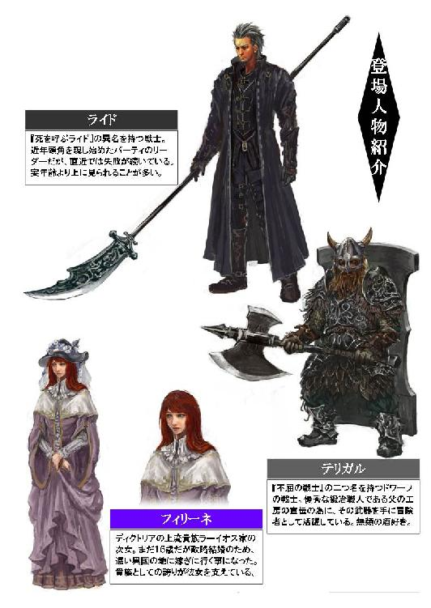
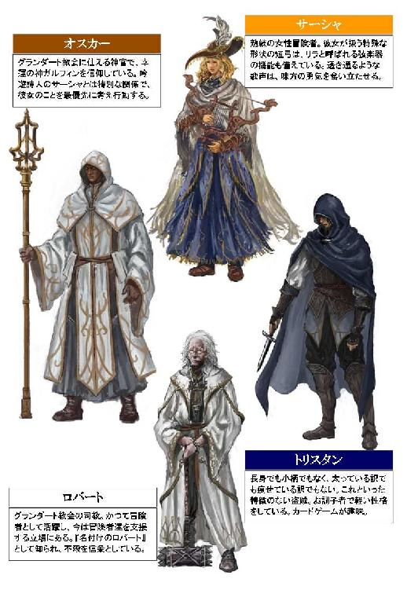
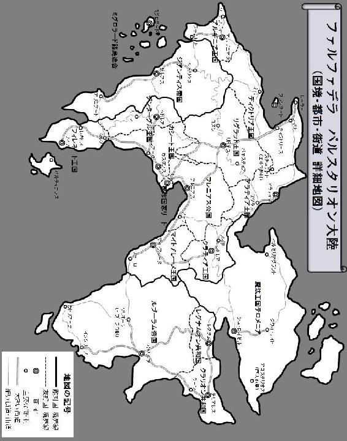
プロローグ
------戦乱の時代に突如現れた悪夢。
それは、遥か上空を我が物顔で飛ぶ赤い影だった。
なぜ神は、一度に多くもの試練をこの国に課すのであろうか？ この都に住む誰もが、きっとそう思ったに違いない。
南北に海を臨む拓けた平地と、中心に聳える巨大な断崖絶壁。その絶壁の上に築かれた美しい城は、地上から攻め込むには非常に困難な構造になっている。幾度にも渡る帝国の侵攻を退けてきた堅固な守りを誇るソニアンディー城が、しかし今、見るも無残な姿をさらしていた。
敵は投石機の届かない遥か上空を飛翔し、円を描くようにゆっくり優雅に飛んでいる。そして突如、目にも留まらぬ急降下攻撃を繰り出したかと思うと、絶壁上の城と、そこから放射状に広がっているソニアンディーの都に向かって激しい炎の雨を降り注がせたのだ。その速度は凄まじく、投石機から放たれる岩の塊は、なかなかその巨大な赤い生物をとらえるには至らなかった。そんな人間の反撃をあざ笑うかの如く、赤い影は再び空高く舞い上がると、はるか上空を優雅に廻り続け、また気紛れのように激しい急降下攻撃を仕掛けてくるのである。
見るもおぞましいその巨大な赤い生物。蒼い空に大きく広げられた赤い翼は、まるでコウモリのそれに似て骨格の間に薄い皮膜のようなものがあり、その巨躯に充分な揚力と推進力を生み出させるだけの軽さとしなやかさ、そして力強さが備わっていた。尾はヘビのように長く、強靭な腕と脚の先端には鋭く尖った爪がある。それがまるで研ぎ澄まされた剥き出しの剣のように、太陽の光を反射して強く輝いているかのように見えた。頭部にはその鋭い爪よりも更に巨大な角があり、まるで怒りに歪んだ険しい表情を浮かべているようにも見えるその顔は、見る者すべてに理屈なく恐怖を与えるだけの迫力があった。その生物の形状を端的に表現するならば、それは鋭く尖った刃を連想させる変則的な三角形の集合体。人はその生物をドラゴンと呼び、人間の力を遥かに凌駕する天災にも似た巨大な力に、子供から老人、平民から王に至るまで、年齢や身分に関係なく誰もが畏怖の念を抱いていた。
それにしても何故このような危険なドラゴンが、それもドラゴンの中でも最も凶暴と畏れられているレッドドラゴンが、このソニアンディーの都に突如として現れたのか？ その理由を知るものは誰も居ない。しかし、今はそれを考える余裕など彼等には全くなかった。降り掛かってきた暴風雨や大地震に対処するのと同じように、今は考えるよりもその赤い災いを退けることに全力を傾けるしかないのだ。
まるで決壊した堤防から流れ込む濁流の如く、破壊された城壁の間からはこの世のものならざる炎の塊が侵入し、文字通り圧倒的な火力を以て一瞬の内に城内を駆け巡り、城の至る所から火の手が上がり始めた。幅の広い大きな通路に施された豪華な装飾や調度品はその原型を失い、抵抗しようと試みた衛兵達は組織的な防御態勢を整える前に消し炭にされ、炎に遮られて逃げ場を失った貴族や使用人達は行くあてもなく逃げ惑う。そんな地獄のような光景が、城内のあちらこちらで散見された。それはまるでドラゴンによる人間狩り。まさに、一方的な蹂躙であった。
------この城に幾つも並ぶ細い塔。
その中のひとつ。中庭にある教会のすぐ近くに建てられた、一際大きな塔の頂上の部屋に、一人の貴婦人が取り残されていた。
「ソルーシュ様！ ソルーシュ様ー！」
悲鳴を上げる侍女達が、衛兵にその貴婦人の救出を懇願するも、炎は塔の中にまで入り込み、既に火柱のごとく激しく燃え盛っている。衛兵達は必死に水を汲んで消火活動を試みるも、炎は弱まるどころか更に勢いを増すばかりで、効果があるのかも疑わしい。これでは鎮火はおろか、そこに残されたソルーシュという名の貴婦人を救出することなど、到底不可能な事のように思われた。塔の上を見上げると、部屋の窓が開け放たれているのが見える。そしてそこから勢い良く吹き出す黒い煙の渦の中で、静かに佇むソルーシュという名の女性の姿が微かに確認できた。この危機的状況下にありながら落ち着いているその様は、彼女がこれまでに歩んできた年齢相応の経験に裏付けられた独特の気品がみなぎっていようにも見える。しかし、そんな貴婦人の余裕とは裏腹に、事態は一刻の猶予も許されない切迫した状況だった。火の手は徐々に強くなり、次第に彼女の姿を完全に遮り始めていたのだ。だが、もはや誰にもどうすることも出来なかった。
時期的に暖炉の火は消されているものの、その部屋は下層から噴き上げてくる黒い煙と凄まじい熱気に包み込まれていた。全ての窓は全開に開かれ、出来るだけその煙と熱気を逃がす試みがなされていたが、効果の方は定かではない。黒い煙が立ち込めて視界が遮られつつあるこの部屋の窓際で静かに佇んでいる一人の貴婦人。控えめな雰囲気のドレスを着た彼女の名はソルーシュといい、優秀な神官王として名高い、このアルギニア王国を治める王ディークレスの姉にあたる人物である。
遠くから断続的に聞こえてくる地鳴りのような振動が、彼女にこれまで感じたことのない、現実的な死の恐怖を植え付けていた。それは腹の底から突き上げてくるかのような地響きである。その轟音は、ソニアンディー城内を地獄へと染め上げていくドラゴンの急降下攻撃による破壊音にして、彼女に死を告げる秒読みの音でもあったのだ。
（わたくしはもう直ぐ、此処で死んでしまうのでしょうか......？）
炎は既に、この部屋にひとつしか無い出入り口付近まで達し始め、彼女は出口を塞がれてしまい、この場から身動きひとつ取ることが出来ない状況に陥っていた。彼女は思う。
（最後にもう一度、あの子を抱き締めたかった。いえ、そこまでの贅沢は言いません。遠くからでも良いから、せめてひと目、成長したあの子の姿を見るだけでも......）
それが彼女ソルーシュの、決して叶わぬ願いだった。
そしてソルーシュは開け放たれた窓からはるか遠く、東の空をじっと見上げてみる。既に彼女の目には、塔の下で必死に自分の名を叫び続ける衛兵達の姿はおろか、燃え上がる塔の絶望的な状況も、ソニアンディーの空を我が物顔で悠々と旋回する赤い竜の姿も映っていなかった。ソルーシュは迫り来る死の恐怖から解き放たれ、激しい熱気に包まれたこの部屋の熱さも感じられない不思議な空間、静寂に包まれた無の境地の中に居た。そこには思考力も肉体の感覚もない。ただ魂だけが存在し、彼女の中に残された強い未練。最後の願いをこの空間に投影しつつあった。ソルーシュの脳裏には、心の一番奥に仕舞い込んで雁字搦めに鍵をかけたはずの、あの記憶が蘇りつつあったのだ。それは遥か遠い彼方に追いやった幸せと悲しみの追憶。いま、儚く散り行こうとしているソルーシュの半生を綴った走馬灯だった。
------心の奥底に閉じ込めていた、遥か遠い昔の記憶。
それを思い起こした時、ソルーシュは死を目前にしながらも、自分の弟レスに対して感謝の気持ちで胸がいっぱいになっていた。
部屋に立ち込めた黒い煙は彼女を完全に包み込み、真紅の炎はその灼熱を以て、ソルーシュの身と心、そして彼女の遥か遠い記憶の欠片も、全て丸ごと焼き焦がそうとしている。そう、彼女はいつも、その身と心を熱く焦がしながら生きてきたのだ。
その罰が今、ようやく下されようとしているのかもしれない。
ソルーシュはそう思わずにはいられなかった。それと同時に、義妹のマリーナに申し訳ない気持ちも湧いてくる。彼女はあの時からずっと、弟のレスのことを、普通の弟として以上に愛してしまっていた。今や立派な王としてこの国を治める神官王。彼女はいつでも、その許されぬ想いに身を焦がしながら生きてきたのである。
「ソルーシュ様！ ソルーシュ様ー！」
眼下に広がるソニアンディー城の中庭。その塔の下に集まりつつある侍女と近衛騎士達の声を聞きながら、ソルーシュは両手を重ねて、神に祈りを捧げ始めた。しかしそれは決して、命乞いなどではない。ソルーシュは今になって初めて、心の底から自分の罪と向き合って、真摯に懺悔することが出来たのだ。
彼女は普段、あまり弟のことを意識しないようにしていたが、その許されぬ愛ゆえに、この歳までずっと独り身を貫き通してきたのだった。そんな小さな意地と誇りを守り続けてきた彼女の儚い命が、今まさに、潰えようとしている。ソルーシュは神に懺悔しながらも、弟への感謝の気持ちが心の中から溢れ出し、自然と口を開いていた。
「レス。あなたのお陰で、わたくしはあの子が今も何処かで生きているという希望を胸に、安心して逝くことが出来ます。本当に、ありがとう」
上空から徐々にその大きさを拡大していく危険な赤い塊。そしてそこから撒き散らされてくる灼熱の炎に巻かれながら、ソルーシュは最期の願いの言葉を口にした。
「どうか、この国の未来に、神の祝福があらんことを希って......」
追憶１
わたくしがあの人と出会ったのは......そう、今から二十五年前。
あの頃のわたくしは、まだ何も知らないうら若き乙女でした。当時、わたくしは六つ歳の離れた弟のレスと一緒にお父様に連れられて、東のリグラット王国のパネスティア城で、四年に一度催されていた大きな宴に赴いていました。ソニアンディーからパネスティア城までは、片道一ヶ月近く掛かる大変な移動を伴いましたが、幼い頃に母を亡くしたわたくしにとって、そして弟にとっても、それはまるでお父様と出掛ける家族旅行のような気がして、四年に一度催されるこのパネスティア城での宴を、それは大変楽しみにしていたのです。
その宴はとても盛大で、そして華やかなものでした。宮廷に集った吟遊詩人達は、最近流行りという冒険者の英雄を題材にした詩を歌い、招かれた賓客の耳を楽しませていました。そこにはアルギニア王国の王族に限らず、リグラット王国に隣接する国々から多くの王族や貴族、富豪といった有力な商人などが招かれていたのです。当時のわたくしは何も存じ上げていませんでしたが、この宴はリグラット王国にとって、非常に重要な意味がありました。
「ソルーシュ姫？ もしやそなたは、ソルーシュ姫でありませぬか？」
「はい。ライネック様、お声を掛けて頂き光栄です。アルギニア王国第一王女、ソルーシュ＝ソニアンディークで御座います」
リグラット王国は、隣接した全ての国と経済的、あるいは文化的に密接な交流を持って良好な関係を築くことで、他の国々の争い事から常に一定の距離を保ち続けていました。それが建国時から続いているリグラットの象徴的な政策であり、信仰上の理由から不殺の誓いを立てているライネック王家に代々受け継がれている、彼等にとっての処世術でもありました。平和主義を第一に掲げて、他国への侵略行為を一切禁止する裏付けとして、騎士隊や傭兵隊、衛兵などは必要最低限の武装に留めて過剰な軍備はすべて放棄。その代わり、友好国が関わっている如何なる戦争にも絶対に加わったり援助したりする事もしないと国の法で厳しく定めて、隣接する全ての国と不干渉条約を締結するというその独特の政策は、人間が勝手に境界線を引いた『国』という概念に関心を持たない他種族にも、例外なく適用されていました。
「おお、やはりソルーシュ姫でしたか。しばらく見ない内に、こんなにもお美しくなられて......。このライネック四世、妻の居る身ではありますが、もしよろしければこの私とひとつ、踊っては下さいませぬか？」
「はい、謹んでお受け致します」
そのせいか、広大な面積を誇るリグラット王国には、既に絶滅したとされている多くの亜人種、例えばエルフやロイトンといった希少な種族が、深い森の中に住居を構え、今も小さな部族を形成してひっそり暮らしていると言われています。多くの国と国交を結んでいる国は数あれど、人間以外の亜人種とも友好的な関係を築いている国は、恐らくこのリグラット王国を除いて他に無いでしょう。それは、リグラット王国がこの戦乱の時代においても「最も平和的な国」と言われる所以であり、わたくしのアルギニア王国を含む周辺諸国もそれを暗黙のもとに認めて、あえてリグラットに攻め込もうとする国など長く存在しませんでした。
「見違えましたぞ、ソルーシュ姫。本当にお美しくなられた」
「そんな......ライネック様、あまりからかわないで下さいませ。照れてしまいます」
ですが、力による裏付けのない平和ほど脆いものはありません。争い事や無益な殺生を好まない幸運の神ガルフィンへの信仰も、周辺国との友好を記した不干渉条約の条文も、決してリグラットの永続的な平和を保証するものではありませんでした。あらゆる戦火から無縁に思われたこの王国の平和は、後にあまりにも呆気ない幕切れを迎えることになりますが、それはまた別のお話。ここでは、わたくしの半生に焦点を絞って語ることに致しましょう。
ライネック四世は当時三十九歳。
男性として頭脳、肉体ともに充実した年齢を迎えていた当時の彼は、自信に満ち溢れたた覇気を纏い、それはもう言葉では言い表せないほどに魅力的な御方でした。わたくしには産まれた時から決まった許婚が居て、将来はアラティア王国のグライオン家に嫁ぐ身として育てられてきましたが、未だそのお相手のご尊顔を拝謁したこともなく、ましてやこの歳まで恋というものに憧れを抱いたことはあれど、実際にそれを経験したことなんてありません。だからでしょうか？ 彼から熱い視線を向けられて積極的なアプローチを受けたとき、わたくしは許されぬ恋と知りながら、自分でも驚くほど簡単に彼を愛してしまったのです。
第一章 孤高の戦士
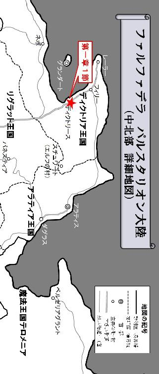
１
ディクトリア王国第一の都市ディクトリース。
ようやく辿り着いた馴染みのある港町に、四人の一行は安堵の表情を浮かべることもなく、ただ淡々と歩みを進めて定期船の船着き場へと向かっていった。その重い足取りから、彼等が相当疲労している様子が覗える。一行は、それぞれが不揃いな防具で身を包み、まったく統一性の無い武器で武装していた。
先頭を歩く体格の良い男は、小豆色の革スーツの上からマントのように身頃の長い防具を兼ねたコートを着込んだ軽装で、やや白髪交じりの頭髪と無精髭を生やしたその姿は、一見歴戦の戦士を思わせる。岩のような逞しい手には、彼の身の丈より長い柄の武器が握られ、その先端には曲剣のような形状の尖った片刃が取り付けられていた。この棹状武器はグレイヴと呼ばれ、尖った先端とリーチの長さを利用して、槍のように敵の武器が届かない距離から一方的に突くだけでなく、斬り付けたり振り回したりする使い方にも対応した汎用性の高い武器である。それが故にグレイヴは、優れた筋力と技量の両方を持ち合わせた卓越した戦士にしか使いこなせない、非常に扱いの難しい武器とされていた。
そんなグレイヴを、まるで自分の手足のように操るこの男は、名をラインハルト＝ドルージュという。冒険者ギルドで付けられた『死を呼ぶライド』という通り名から、仲間は皆彼のことを『ライド』と呼んでいた。ライドは今年の冬で二十五歳を迎えるが、一見人相の悪そうな堀の深い顔立ちと、伸ばしっ放しの無精髭、そして早くも白髪が交じり始めてきた頭髪のせいで、実際の年齢より随分上に見られる事が多かった。彼は、この冒険者パーティを束ねるリーダーである。
一方、彼の直ぐ後ろを歩く重装備の人物は、人間なら十五歳程度の背丈しかないにも関わらず、まるでダルマのように頑強な肉体を持った戦士で、その名をテリガル＝ゾル＝バルバレウスといった。ギルドでの通り名は『不屈の戦士テリガル』。仲間は皆、彼のことをそのまま『テリガル』と呼んでいたが、ライドだけはこの人物のことを『髭樽』と名付けていた。彼は自分の頭部より大きい不揃いな両刃の戦斧を片手に握り、身の丈より大きな重々しい壁のような鉄板を背中に括り付けている。その分厚い鉄板は、タワーシールドと呼ばれる地面に突き立てて使うタイプの大盾で、要塞の如き鉄壁の防御力を誇っているのだ。二本の角が付いた厳しい兜は、顔部分が露出しているので、重装備でありながらその自慢の髭を憚ることなく風にさらしていた。
テリガルは、亜人種と呼ばれる人間と似て異なる種族、ドワーフ族の冒険者なのだ。ドワーフは一般的に不器用で実直な性格の者が多い。その寸胴な見た目通り俊敏な動きは苦手としているが、しかしそんな無骨なイメージと相反して手先は非常に器用で、ドワーフ族のみに伝わる高い技術力を持っていた。彼等ドワーフの職人が作り出した工芸品は繊細で美しく、人間達の間では信じられない程の高値が付くこともあるのだ。またドワーフは環境適応能力が高く、他の亜人種より人間の社会に馴染み易い。その優れた体力を活かし、しばしば炭鉱などで人間に混じって肉体労働に従事しているドワーフを見掛けることもあった。そんなドワーフは戦士としての適正も高く、時に冒険者に身を投じる者も居る。テリガルもその例に漏れず、ドワーフの冒険者にして、このパーティの前衛を務める戦士の一人であった。
四人の一行は誰も言葉を交わすことなく、多くの人々で賑わうこの街に興味を示すこともなく、ただ街道を直進して素通りすると、あっという間に目的地である船着き場に到着した。その途端、まるで操り人形の糸が切れたかのように、みな重い荷物を投げ出し、他の客の目を気にすることもなく地べたに座り込んで、それぞれが深い溜め息を吐き出した。
「......オスカー、何してるの？」
四人の中で最後に座った羽根帽子の女が、隣でへたり込んでいる白い法衣とフードをかぶった男に声を掛けた。サーシャという名のこの女性は、世界各地を渡り歩き、冒険者としての経験も豊富な吟遊詩人である。藍色の華やかな衣服の上からケープを羽織り、短弓を背中に括り付けているが、それ以外に武器らしい武器は携帯していない。彼女はゆっくりとオスカーの隣に歩み寄ると、膝を抱えるような体勢でその場に座り込んだ。
「ヴェリスとアナンダに祈りを捧げ、神に懺悔しているのです。こうしていないと、私は心が張り裂けそうで仕方ありません。神も大いに悲しまれておられます」
震えた声で、オスカーと呼ばれた男が答える。そして錫杖のような装飾の多い杖を地面に置くと、彼は言葉通りその場で懺悔するような姿勢になり、神に祈りの言葉を唱え始めた。オスカーの言葉を聞いてサーシャは背中に括り付けた短弓を外すと、その成りに張られた弦の具合いを確かめる。よく見るとその短弓には、矢を番える弓本来の弦とは別に、幾本もの細い弦が張られていた。彼女が器用にその弦を弾くと、周辺の空気が細かく震えて独特の音色を発するのだ。それはリラと呼ばれる弦楽器を兼ねた、特別な短弓だった。そして一通り調律を終えると、サーシャは物悲しい雰囲気の曲を奏で始める。リラの旋律は、まるでオスカーの祈りを捧げる儀式に合わせるかのように、優しく静かに流れ続けた。
オスカーは、グランダート教会に仕える神官であり、冒険者でもある。グランダート教会は冒険者ギルドを支援する立場でもあり、彼等の任務の成功と無事な生還を心から願っていた。彼等が信仰する神ガルフィンは、幸運や商売、笑いを司り、生きるために必要最低限なものを除いた無益な殺生を認めていない。その神官であるオスカーは、味方はおろか敵の死さえも心から悼み、出来る限り戦いを回避しようとする信奉者でもあったのだ。オスカーが身に纏う純白の法衣とは対照的な褐色の肌が、そのフードの中から垣間見えたとき、彼の頬を伝う雫が音もなく滴り落ちるのをサーシャは見逃さなかった。そして荷物の中から小さな手ぬぐいを取り出すと、それをそっと神官に差し出す。
ここディクトリースは、ディクトリア王国の王都グランダートの姉妹都市で、離島に位置する王都へと向かうための玄関口でもある。グランダートにはファルファデラで最も大きな冒険者ギルドがあり、このような冒険者の一行を見掛けることは珍しくなかった。
しかし、それにしても彼等の表情が重苦しい。
それもそのはず。彼等は今回の仕事に失敗したばかりか、仲間の中から二人もの犠牲者を出していたのだ。しばらくしてグランダート行きの定期船が入港すると、四人の冒険者達は無言のままそれぞれ投げ出した荷物を拾い上げて、ライドを先頭に船に乗り込み始める。そしてライドは船倉を兼ねた客室に辿り着くと、大きく息を吐きだしながら硬い木の床の上に倒れ込むように大の字になった。テリガルもそれに続くと、そのまま目を閉じて眠り始めたようだったが、オスカーは再び神に祈りを捧げ始め、サーシャはリラを奏で続けた。行きの船では彼等と一緒だったはずの盗賊ヴェリスと幻術師アナンダは、今回の任務でその儚い命を散らしてしまったのだ。オスカーとサーシャはそれを悼み、二人の犠牲者の魂が安らかに眠れるよう、神に祈りを捧げ、そして鎮魂曲を奏で続けるのだった。
オスカーとサーシャが特別な関係であることは、このパーティと関わりの無い部外者が見てもすぐに分かった。二人は正式に結婚している訳ではなかったが、長く旅を共にする中で惹かれ合い、互いに仲間を思いやる心が男女の仲にまで発展していったのだ。冒険者パーティの中から恋人や夫婦が生まれるのは別に珍しいことではない。むしろよく見られる光景ではあったが、しかしライドは、最近そんな二人のことをあまり快く思っていなかった。
それは自分が、独り者だからといって妬んでいる訳ではない。
オスカーとサーシャが結ばれた頃は、ライドも素直に二人のことを祝福していた。愛し合う二人が助け合うことで、このパーティに更なる強い結束が齎されることに期待していたのだ。
しかし最近、オスカーとサーシャは二人だけの世界に入り込みがちになり、戦いの場でも私情を優先するような傾向が見え始めていた。今回、二人の犠牲者を出してしまった原因も、このことと無関係ではないとライドは見ている。オスカーはサーシャの事ばかり気にして、過剰なほど彼女に護りの加護を施し、或いは彼女を優先して回復の祈りを捧げていたのだ。ライドはパーティのリーダーとして、いつかそのことを窘めなければならないと思いつつ、恋人同士である二人の関係に立ち入る野暮な真似をするような気がして躊躇われ、結局この問題を放置してしまった。その結果、ライドは二人の仲間を死なせてしまったという自責の念に苛まれていたのだ。
そんなライドの悩みを知る由もなく、オスカーが捧げる神への祈りとサーシャが奏でるリラの旋律は、いつまでも定期船の中を物悲しげに響き続けていた。ライドはその音色を子守唄代わりに、少しずつ深いまどろみの世界へと引き摺り込まれていくのだった。
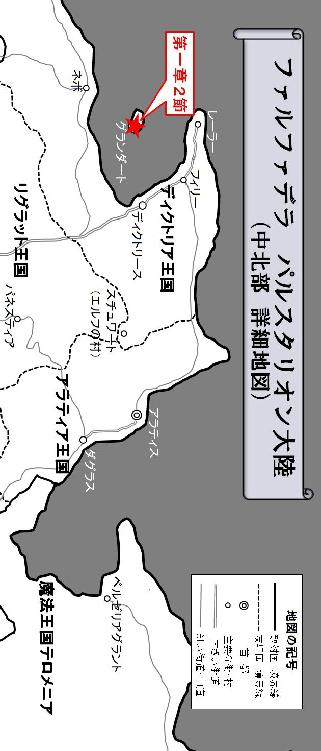
２
離島の王都と呼ばれるディクトリア王国の首都グランダート。
夕方にディクトリースを出港した定期船がそこに到着したのは、まだ暗い早朝、東の空がほんのりと白み始めた頃だった。
防寒着を着込んで船から降りてきた冒険者達は、白い息を吐き出しながら口数も少なく足早に歩き始める。グランダートは港から王城まで幅の広い大通りで結ばれているが、彼等は冷たい風が吹き抜けるこの通りから逃げるように路地へと入っていくと、神官オスカーが重い口を開いた。
「ライド。私も後で教会に行きますが、報告の方は貴方に任せてもいいのですか？」
先頭を歩いていたライドは、そんな神官に振り返ることもなく言葉を返す。
「あぁ、任せとけ。今日は皆、しっかり身体を休めておくんだ。すまねぇが、すぐにでも次の仕事を受けないと、懐事情が厳しいヤツも居るだろう。明日の朝、いつもの場所に集合だ」
それを聞いたテリガルは、無言のまま頷いて路地を先に進んでしまったが、サーシャは不満そうな表情を浮かべて口を開いた。
「お金の問題ではありません。わたし達は今回、二人もの仲間を喪ったのよ？」
ライドは、背中から浴びせられた彼女の言葉に短く答える。
「あぁ、分かってる。補充も頼んでおくから安心しろ」
それを聞いて、サーシャは食い下がるようにライドを咎めた。
「わたしは別に、戦力の低下を憂いている訳ではありません。命を散らした二人の仲間を偲ぶ気持ちが、あなたには無いのですか？」
「もちろんあるぜ。だが、冒険者の仕事が常に危険と隣合わせだという事は、子供だって知っている。俺はもちろん、今回死んじまった二人もそれを理解していたはずだ。お前だって、その覚悟なくして冒険者やってる訳ではないだろう？」
ライドは歩く足を止めたものの、背中だけでサーシャにそう返し、更に言葉を続ける。
「俺達は冒険者だ。アイツ等の死を嘆き悲しんでもカネは生み出せないからな。ギルドで次の仕事を受けてそれをこなさなければ、飯を喰っていけねぇぜ」
そんな彼の言葉に対して、サーシャは甲高い声を上げて反論した。
「あなたは死んでしまった仲間の為に、涙を流してあげることも出来ないの！」
「俺の涙は、とっくの昔に枯れちまったからな......」
「いいえ、あなたの涙は枯れてるんじゃない！ あなたの涙は凍っているの！ そう、氷のようなあなたの冷たい心で、その涙も冷え切って氷になっているのよ！」
女吟遊詩人は、まるで歌の詩でも作るかのようにライドの心を氷に例えて言葉を並べ立てる。
「直ぐに次の仕事を受けるなんて、わたしには分からない！ 本当に仲間の死を悼む気持ちが、あなたの中に少しでもあるのなら、そんなこと絶対に出来るはずが無い！ あなたの心は冷た過ぎて、わたしの心まで凍えてしまいそうだわ！」
サーシャはライドの背中に向かって罵声にも似た言葉を浴びせ掛けた。そして彼女は、声にならない声を上げながらその場で泣き崩れる。サーシャはまだ何か言いたげな様子だったが、オスカーが彼女の肩に手を乗せると、静かに首を横に振ってそれを宥めた。そして神官と吟遊詩人は、二人寄り添って馴染みの宿へと足を向け始める。徐々に遠ざかっていく二人の足音を背後に聞きながら、ライドはグレイヴを握る手に力を込めた。
今回の仕事は失敗に終わったのだ。
それは当然、今回の仕事の報酬が一切得られないことを意味していた。ライドはこのパーティのリーダーである。二人の仲間を喪ったという自責の念を、他の誰よりも強く感じているのは言うまでもない。
その死を偲ぶ暇もなく、直ぐに次の仕事を探そうとする自分のことを、サーシャが咎めるのも充分に理解できる。だからこそライドは、リーダーとしての自分の考えをいちいち彼女に諭す気にはなれなかった。不満を口にすることで気持ちが落ち着くということもあるだろう。自分がその捌け口になるのなら、それを甘んじて受け入れる。そのことで彼は、二人の仲間を死なせてしまった事への戒めにしていたのだ。
だが、心の状態如何に関係なく次の仕事を受けなければ、自分達は冒険者としてやっていけなくなってしまう。皆それぞれに様々な目的を持って、この冒険者という立場に身を投じているのだ。ライドには決して悪意はなく、あくまでパーティのリーダーとしてやらなければならない事を、ただ淡々と進めようとしているに過ぎなかった。
大通りから西側に外れた路地は、複雑に交差しながら枝分かれしている。
ライドが正面に目を向けると、すでにドワーフの戦士テリガルの姿は完全に見えなくなっていた。ドワーフ特有の短い足のせいか、いつも鈍重な動きでパーティの最後尾を歩くテリガルが、少し目を離した隙に見えなくなってしまうとは......一体どこに行ってしまったと言うのだろうか？ ライドはそれを疑問に思いながらも、乱立した建物の隙間を縫うように張り巡らされている路地を、一切迷うことなく進んでいった。そしてその細道をしばらく行くと、煙突が立ち並ぶ建造物の波がライドの視界に飛び込んできた。
細い煙が立ち昇る、煙突だらけの街道。
いつもこの通りを歩くと、けたたましく槌を打ち鳴らす音が四方八方から絶え間なく耳に飛び込んでくるものだが、今はしんと静まり返っている。まだ日が昇る前の真っ暗な早朝から仕事をおっ始めている職人など、さすがに居ない様子だった。鍛冶区画と呼ばれるこの一帯は、周辺諸国から輸入した鉱石などの材料を使って、ディクトリアの正規軍や冒険者向けの武器が大量生産されている、グランダートが誇る大規模な工業区である。
ライドがその内の一軒、薄汚れた鍛冶工房の中に入ると、冬の寒さが嘘のような熱気に包まれ、彼の身体をあっという間に暖め始めた。見ると若い見習いの弟子達が既に窯に火を入れて、今日の仕事を始める為の準備に取り掛かっていたのだ。ライドはせわしなく働いている彼等に声を掛けることもなく、そのまま工房内を突っ切って、倉庫へと繋がる裏口へと一直線に歩みを進めていく。そして工房の裏手に出ると、倉庫脇の外階段を伝って二階へと上り始めた。
「おい、死を呼ぶライド。帰ったのなら、何か一言声を掛けて行ったらどうなんじゃ？」
その時、ライドを咎めるような低い声が、彼の歩みを止めさせる。
「悪いな親方。考え事してたせいで、つい忘れてたぜ」
ライドはおどけたように声を掛けてきた男に答えた。そこにはライドのパーティメンバーであるドワーフの戦士テリガルとよく似た、樽のような体格の髭男が立っている。
「その様子じゃ、また今回の仕事も失敗したようじゃな？」
「余計なお世話だ。ほっといてくれ」
煤だらけの汚れた厚手のエプロンを身に付けたそのドワーフは、種族に共通した特徴とも言える蓄えられた髭や小さいながら頑強な体格だけでなく、表情もどことなくテリガルと似ていた。しかし、その顔に深く刻まれたシワと白く枯れた頭髪と髭が、テリガルより齢を重ねた老ドワーフであることを物語っている。
「ところで、ウチの道楽息子はどこじゃ？ ライドが帰ってきたって事は、あのバカも帰っておるんじゃよな？」
「おかしいな、髭樽なら俺より先に帰ってるものだと思ったが？ 仕事に失敗しちまったもんだから、親方に顔を出しづらくなって、さっさと自室に引っ込んじまったか？」
「どこぞの下手糞なグレイヴ使いじゃあるまいし......。しかしこうも失敗続きだと、金が入らないどころか、全然ウチの宣伝にもなってないんじゃないか？」
ライドが親方と呼んだこの老ドワーフは、本名をブレイブ＝ゾル＝バルバレウスという。彼はテリガルの父親なのだ。
「知るか！ それは髭樽が勝手にやってる事で、俺は関係ねぇぜ。それにいつも失敗してるみたいな人聞きの悪いこと言ってんじゃねぇ。この前たっぷり報酬を持って帰ってきただろうが？」
テリガル曰く、父ブレイブはドワーフの間ではそこそこ名の知られた名工で、彼が鍛え上げた武器はその名の如く、持つ者に勇気を与えると言うが、ライドはその話をあまり信じていない。
「この前？ ああ、一昨年のアレのことか。もう随分昔のことだから、すっかり忘れておったわい。まぁ、もとより期待なんかしちゃいないし、無事ならそれでいい。滞納してる家賃の方も、纏まった金が出来た時で構わんからな」
ブレイブは嫌味を込めてそう言うと、ライドに背を向けて工房へと戻っていく。それを見てライドは深く溜め息をつきながら、倉庫二階へと続く外階段を再び上り始めた。
「そうそう、忘れておった」
するともう一度、老ドワーフが後ろからライドを呼び止める。
「あとで司教様に会いに行くのじゃろう？ 一言よろしく、伝えといてくれ」
そして今度こそ老ドワーフは工房の中へと消えていった。それを最後まで見送ったライドは、三度外階段を上ってようやく倉庫の二階に辿り着き、目の前にある錆びついた鉄扉を開いてその中へと入る。そして荷物を床に投げ出すと、強く握っていたグレイヴを壁に立て掛け、革スーツの上から羽織っていたマントのようなコートを脱ぎ、壁に並んで突き出しているフックのひとつにそれをかぶせた。
ライドは、この鍛冶工房の裏にある武器倉庫の二階を間借りしているのだ。
もともとグランダートの孤児院で育てられたライドは、自ら望んで冒険者に身を投じ、『死を呼ぶライド』という通り名で活躍している。ディクトリアの冒険者ギルドはファルファデラの中で最も大きく、その歴史も古かった。冒険者に身を投じた多くの人間は、その危険な仕事と表裏一体の一攫千金を夢見た腕に覚えのある猛者達が殆どだったが、ライドの動機は自分の父が冒険者だったことに起因していた。小さな頃から父の姿を見て育ってきたライドは、物心ついた頃から、いつか自分も父と同じように冒険者になるのだと心に決めていたのだ。
彼の父は冒険者としてあっという間に名を上げ、気付くとグランダートでその名を知らない者は居ない程の偉大な人物になっていた。ライドはそんな父を誇りに思うと同時に、自分も冒険者としてやっていく以上、一切父に頼らず自分の力だけで身を立てることを心に誓い、孤児院を出た後はこの鍛冶工房の倉庫でひっそりと暮らしていたのだ。
ライドは床に投げ出した荷物の中から火口箱を取り出すと、蒲の穂綿に向かって火打石を打ち鳴らした。やがて小さな火種がつくと、硫黄を染み込ませた附木の先端を押し付け、そこに着火させる。そしてライドはその火をランタンに移すと、部屋全体を明るく照らし始めた灯火で、冷えた身体を暖め始めた。工房に行って鉄を溶かす窯に照らされれば、あっという間に身体を暖めることも出来るが、職人達の邪魔になる訳にもいかない。
ライドは冒険者として独り立ちして既に数年が経つが、その生活は非常に貧しいものだった。二年前に大きな依頼を成功させ、冒険者としてのランクが上昇した時も、その報酬の殆どを自分の装備に当てたせいで、あまり手元に金が残らなかったのだ。その時に購入した装備の中でも特に高価だったのが、壁に立て掛けてあるグレイヴである。しかし彼は、自ら冒険者の道を志した時から、絶対に父には頼らないと心に決めていた。あれから二年間家賃を滞納し続け、家主であるブレイブに迷惑を掛けてしまっていることを気に病みながらも、それは自らが稼いだ金で返さなければ意味が無いと自分に言い聞かせ、決して父を頼ろうとはしなかった。ライドの父はグランダートで知らない者など居ない程の偉大な人物だったが、その息子がライドである事を知る人間は、グランダートでも極少数の限られた者だけだった。
ライドは身体の線がぴったりと浮き出る小豆色の革スーツを脱いで楽な格好になると、自分の荷物の中から何枚かの紙を取り出して、それを壁に掛けているコートのポケットの中へと無造作に押し込んだ。窓の外に目を向けてみると、まだ薄暗かったはずの空が全体的に明るくなり、既に星々はその光の彼方へと追いやられていた。今にも眩しい日の光がその姿を現しそうな気配である。気は進まないが冒険者ギルドに、今回の仕事の報告をしに行かなければならない。オスカーも後で教会に顔を出すと言っていたが、成功報告ならともかく失敗報告という嫌な役割は、あくまでリーダーである自分がするべきだとライドは考えていた。
ライドはインナーを着込むと、書類でポケットが膨らんだ厚手のコートを手に取ってそれを身に纏う。そしてその上から更にマフラーを巻いて手袋を付けると、ランタンの火はそのままにして、自分の部屋を後にした。
------突き抜けるような高い空。
そんな冬空の中を我が物顔で吹き抜ける冷風は、聞いているだけでも寒さで凍えそうになる甲高い音を発しながら、ライドのコートの上から容赦なく突き刺さり、暖まったばかりの彼の身体を急速に冷やし始めていた。網の目のように張り巡らされた鍛冶区画の複雑な通路を縫うように歩き続けると、やがてさっきの定期船が到着した船着き場へと繋がる、幅の広い大通りに戻ってきた。ライドはその大通りを港とは逆方向、真っ直ぐ北の方へと足早に進んでいく。その先には荘厳な造りの王城が見えた。しかし彼が向かっているのはその城ではない。グランダート城の更に奥。城門から入って直ぐにある中庭から城の二階部分の下を抜ける長い通路の先にある、蒼い三角屋根が印象的な建造物。それが、冒険者ギルドの本部も兼ねるグランダート教会なのだ。
まだ日の出前の早朝にグランダートに帰還したライド達。
今回の仕事は失敗に終わり、加えて二人もの仲間を喪ったという後味の悪さも手伝って、彼等冒険者達は重苦しい疲労感と脱力感に包まれていた。それを感じ取ったライドは、今日一日、彼等にゆっくり休息をとるよう命じている。今ごろ彼等は、それぞれ馴染みの宿や自分の部屋で休息をとっている頃だろう。ライド自身、本当は暖かい部屋でゆっくりと休んでいたかったが、しかし王都が賑わいを見せ始める時間帯に入ると、教会も他の冒険者達で溢れ返ってしまう。ライドはその前にさっさと報告を済ませて、次の仕事を引き受けてしまおうと考えていたのだ。
そんな彼の思惑通り、この時間の教会はまだ静寂に包まれていた。
ライドはその入り口まで辿り着くと、白い息を吐き出しながら両開きの鉄扉に両手を押し当てて力を込める。その途端、氷のような鉄の冷たさが手袋越しに伝わってきて、たちまち彼の指先は麻痺するような感覚に陥った。それでもライドが両手に力を込め続けると、扉はゆっくりと動き始め、重たい軋み音を響かせながら内側へと開いていった。不用心なようにも思えるが、グランダート城門を抜けて更に中庭を通ったその奥にあるせいか、この教会の扉には最初から閂がされていないのだ。ライドは自分ひとりが通れる程度に扉を開くと中に入り、鉄扉の方に向き直って再び扉に手を押し当てて、ゆっくりとそれを閉め始める。この教会の司教を務める老人は極度の寒がりで、扉を開けたままにしていると、どんなにドヤされるか分からないのだ。
そして扉を閉め終えると、彼は至聖所に目を向ける。
純白の衣服に身を包んだ老人がその祭壇の前で立っているのを見付けると、ライドはその背中に向かってぶっきらぼうな物言いで声を掛けた。
「よう、ロバート爺さん。『死を呼ぶライド』こと、ラインハルト＝ドルージュ。いま戻ったぜ。......残念ながら仕事の方は、失敗に終わってしまったがな」
そしてコートのポケットに突っ込んでいた冒険者の証明書と、今回の仕事の依頼書を取り出す。この証明書は、ライドが冒険者としての仕事を請け負える能力があることを証明するものだ。
すると老人は、ライドがこの教会に入ってきていた事にまだ気が付いていなかったのか、背中をビクッとさせたあと、何か慌てた様子で祭壇の上に置いていた書類を片付け始めた。ライドは、そんな老人の動きをいぶかしげに思ったが、それはいつもの事のようにも思え、あまり深く考えないことにした。
「そうか......救出は失敗に終わったか。残念だの」
純白の衣服に身を包んだ老人は、そう言って落胆の表情を浮かべる。彼の右手には幾枚もの紙がクシャクシャの状態で握られていたが、それが何なのかまでは分からなかった。そして老人はライドの元まで歩み寄ると、戦士のたくましい肩の上に左手をのせて彼に頷きながら言葉を掛ける。
「だが、そなたは最善を尽くしたのであろう？ それなら、そんなに気に病む必要あるまいて」
老人は真っ白く枯れたボサボサの頭髪と長い眉毛、そして口髭をたくわえ、それらと同じ色の法衣を身に纏っていた。ちゃんと開いているのかさえも分からない程の細い目には、真円のメガネが掛けられている。身頃の長い純白の法衣は、床に引き摺る形状の一般的なそれらとは違い、病院のドクターか研究者が着ているような白衣を連想させた。
老人の名は、ロバート＝シエラ＝エンタシス＝フェリータ。
グランダート教会の司教を務める聖職者にして、冒険者ギルドを支援する立場にある人物でもある。彼もかつては神官として、この国の王ファナーと共に世界を股にかけて活躍した冒険者だった。
「いや、俺は最善を尽くしたとは言い難い。今回、人質の救出に失敗したばかりか、二人もの犠牲者を出してしまった。もともと難易度の高い仕事ではあったが、せめてジェラルド伯の救出だけでも成功させたいと思っていたんだがな......。それに失敗したばかりか、俺は大切な仲間まで死なせてしまった」
ライドは唇を噛み締めながらそう言うと、遥か彼方を見つめるような遠い目をして今回の依頼のことを思い返した。
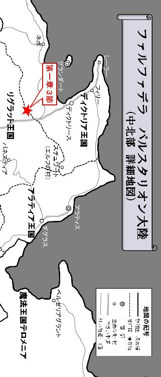
３
------深い森の中にある小さな木造の小屋。
その出入り口の前に見える切り株の上が、指定された身代金を置く場所である。
そんな小屋とその周辺の様子を、少し離れた木の影から観察する怪しい男が居た。男は黒い革鎧に身を包み、焦げ茶色のフード付きマントを深くかぶっている。この盗賊は、偵察の為に一足先に現場の様子を見に来たライドのパーティに所属する冒険者の一人、ヴェリスだった。寒空の下でじっと身動き一つせず、ただ小屋の様子を観察し続けていると、その小さな窓から漏れている明かりがとても羨ましく思えてしまう。きっとあの小屋の中は、さぞかし暖かいことだろう。しかし分厚いカーテンに遮られているせいで、肝心な中の様子までは窺い知ることが出来なかった。裏手には猛獣を生け捕るような大きな檻が置かれていたが、その中は空っぽで犬一匹見当たらない。
一通り小屋の周りの様子を確認し終えたヴェリスは、一旦踵を返すと足音ひとつ立てず、まるで滑るように森の中を走り抜けて、少し離れた茂みの中で身を潜めて待っている仲間の元へと戻っていった。
「間違いない。あそこだ」
ヴェリスは仲間と合流すると先ずそう告げて、自分が見てきた小屋の様子を正確に伝え始める。小屋の窓からは明かりが漏れ、中に誰かしら居ることは間違いなさそうだったが、賊の正確な数や保護対象者の安否までは確認できなかった。彼が齎した情報を基に、パーティリーダーであるライドはどうするべきか作戦を考え始める。
賊に囚われたジェラルド伯の救出。それが今回、彼等のパーティに依頼された仕事だった。
リグラット王国の首都リドネスからディクトリア王国の港町ディクトリースを結ぶ街道は、多くの商隊が行き交う大陸の大動脈である。リグラット東部の山岳地帯パネスティアの鉱山からは金や銀を含む鉱物が採掘され、リグラット北部に広がる豊かな森林地帯からは大量の材木が切り出されて、それらの資源をディクトリアに輸出することで、リグラット王国は経済的に非常に大きな収益を得ていた。ディクトリースに運び込まれたそれらの材料は、火薬を用いた全く新しいタイプの遠隔武器や、速さと丈夫さを兼ね備えた洗練された軍用馬車、或いは一度に多くの人間を安全に運ぶことの出来る大型船にその姿を変えるのだ。ディクトリースに運び込まれる多くの資材と、そこから運び出されるこれらの製品が絶え間なく行き交うこの街道は、リグラット北部からディクトリース南部に掛けて果てしなく続く森林地帯に周囲を囲まれている為か、よく山賊などによる襲撃を受け、多くの商隊を悩ませていた。最近は冒険者ギルドに警護を依頼する商隊もあれば、自ら自警団を組織して軍隊のように隊列を組む商隊もあったが、所詮はイタチごっこ。賊の襲撃も徐々にエスカレートし、タチの悪い賊になると魔物の類いをけしかけて商隊を襲わせ、彼等を皆殺しにした上で積荷の資材や商品を丸々奪ってしまうというケースも出始めていたのだ。
そんな中、遂に恐れていた事態が起こった。
ある日、襲撃を受けた商隊の中に、運悪くディクトリースの商業協同組合の長である富豪、ジェラルド伯が乗り合わせていたのである。賊は商隊の積荷を全て奪った上で商業協同組合に対し、白金貨一〇〇〇枚の身代金を要求してきた。白金貨とは、金貨よりも更に価値の高い希少な硬貨で、一枚で並の一般市民一ヶ月分の生活費に相当する額である。ディクトリース商業協同組合は、王都グランダートにジェラルド伯の救出と賊の掃討を要求したが、身代金とジェラルド伯の交換場所として賊に指定された森が、丁度ディクトリア王国とリグラット王国の国境付近だった為、グランダートはディクトリアの正規軍を送り込むことが出来なかった。リグラット王国は周辺国と不干渉条約を結んでおり、他国の軍隊の立ち入りを一切禁じているのだ。そこで商業協同組合は、ジェラルド伯救出の仕事を冒険者ギルドに依頼したのである。
依頼内容は以下の通り。
賊の要求通り、身代金として白金貨一〇〇〇枚を用意した。ジェラルド伯を救出し、無事ディクトリースまで護送すること。可能な限り身代金は支払わずに持ち帰り、また賊を殲滅し街道の安全を確保すること。報酬額は以下に記す条件により変動する。
一つ、ジェラルド伯の救出に成功（報酬：白金貨五〇〇枚）
一つ、身代金を支払わずに持ち帰る（報酬：白金貨五〇〇枚）
一つ、賊の殲滅に成功（報酬：白金貨五〇〇枚）
尚、本依頼に関して、遂行の偽装や不正、身代金の横領や隠匿などが見られた場合、冒険者ギルドの登録抹消に加え、ディクトリア王国の法に定められた厳罰に処すものとする。
即ち全ての条件を満たせば、用意された身代金の白金貨一〇〇〇枚に五〇〇枚を上乗せした額が、丸々冒険者の報酬になる訳である。逆に全て失敗に終わった場合、報酬はゼロになる。ディクトリース商業協同組合は今回の一件を受け、ジェラルド伯救出の為に白金貨一五〇〇枚の予算を計上した上で、二度とこのような事件が起こらぬよう、賊の殲滅を冒険者ギルドに依頼したのである。
ライドが考えを巡らせている中、赤紫色のケープを羽織った魔術師風の若い女が、唐突にポツリと言った。
「......作る？」
このパーティの幻術師アナンダの言葉は、よく主語が無いせいで、何を言わんとしているのか分からないことが多い。ライドはいつも、会話の前後の繋がりから想像力を働かせて彼女の言葉の意味を汲み取っていたが、さすがに「作る？」の一言だけでは、何を言おうとしているのか皆目見当もつかなかった。
「作るって、何を？」
「......身代金」
無声音で静かに質問したライドに、女幻術師も小さな声で返した。
「身代金なら、彼が持っていますが？」
オスカーはそう言って、テリガルが背負っている大袋を指差す。しかしこの時点で女幻術師の言葉の意図を理解したライドは、無声音のままアナンダに聞いた。
「幻影で身代金を作ることも出来るのか？」
アナンダは、イリュージョニストと呼ばれる幻影を操る魔術師なのだ。アナンダは静かに頷いて、ライドの言葉を肯定した。
「よし、それでいこう」
幻影で身代金を作れるなら、リスクを負わずにジェラルド伯を救出することが出来るかもしれない。ライドがアナンダの案を受け入れて大きく頷いた時、白い法衣を纏った神官オスカーが、それを咎めるように口を開いた。
「私は反対です。それは完全に人を欺く行為。賊とは言え、どんな相手にも敬意をもって接することが大切です」
「そうか？ 賊に身代金を渡さずに、且つジェラルド伯を救出する。それがこの仕事の最良な解決法なんじゃねぇか？」
ライドはそう言って首を傾げる。そんなリーダーの様子を見て、オスカーはまるで神の教義を伝えるかのように口を開いた。
「もし幻影が見破られてしまったらどうするのですか？ その瞬間、間違いなくジェラルド伯は殺害されてしまうでしょう。今回の仕事、あくまで人命救助を最優先にするべきです。報酬は減るかもしれませんが、誠意のない方法では、ジェラルド伯の命と仕事の報酬。その何れも得られぬ結果に終わってしまうかもしれませんよ？」
「わたしも、同意見だわ」
神官の後ろに控えていた吟遊詩人のサーシャも、それに同調してみせる。ライドはオスカーの言う事にも筋が通っているように思え、顎髭に手を当てながら低い声を発して考え込んでしまった。せっかく便利な幻影魔法があるのなら、それを使わない手は無い。しかし神官の言う通り、もし見破られてしまった場合、確かにジェラルド伯が危険にさらされてしまう事になるだろう。今回の仕事、あくまで人命救助を最優先にするべきだという彼の意見も分からなくはない。ライドはどこか釈然としなかったが、オスカーの気迫に圧されて思わず首を縦に振っていた。
「分かった。幻影は無しだ、アナンダ」
「......了解」
ライドは自分の考えを圧し殺し、オスカーの提言を受け入れた。そしてそれを女幻術師に指示すると、テリガルが背負っている身代金の大袋を受け取ってグレイヴの先端に括り付け始める。
「どうするんじゃ？」
ドワーフの戦士は憮然とした表情を浮かべながら短くライドに聞いた。
「どうもこうもねぇ。正攻法でいくなら小細工は無しだ。髭樽は俺の前で盾を構えてくれ。いきなり矢が飛んでくるかもしれねぇからな。オスカーは後ろを頼む」
そして陣形を整えると、ライドは後ろに控えている残りのメンバーに言った。
「他の連中は散開、伏兵の索敵に注力しろ。必要なら遠隔武器で先制攻撃を仕掛けてしまっても構わねぇ。何かあったら直ぐに知らせろよ」
ライドは身代金の入った大袋をグレイヴに括り付けると、それを肩に担いで茂みから出て、この先にある小屋に向かって真っ直ぐ歩き始める。重装備に身を包んだドワーフは、それを見てガチャガチャと音を立てながら小走りにライドを追い越すと、その身体を完全に覆い隠せる程の大きなタワーシールドを身構えた。そして大盾の覗き穴を頼りに前に歩みを進めると、ライドがそれに続き、神官のオスカーがその後ろに付いた。三人を真正面から見ると、長方形の鉄板と、そこから突き出た長い棒。そしてその棒の先端に括り付けた身代金の大袋しか見えないに違いない。
そして三人は、特に敵の奇襲を受けることもなく、森の奥にある小屋に辿り着いた。
ヴェリスの報告通り、小屋の中には明かりが灯り、人の居る気配を感じさせた。その入り口の前にある切り株が、身代金を置くよう指定された場所である。三人は緊張した面持ちで、冬にも関わらず額に汗を浮かび上がらせながら、ゆっくりとそこへと歩みを進めていく。周辺に身を潜めていると思われる盗賊ヴェリスと吟遊詩人のサーシャ、そして幻術師アナンダからは、特に動きはなさそうだ。
そしてグレイヴが届く距離まで切り株に近付いたところでテリガルは足を止め、大盾を地面に突き立てた。ライドは盾の側面からグレイヴを伸ばし、その先端に括り付けた身代金を切り株の上に置いてから、素早く自分の得物を引き抜く。背後を警戒していたオスカーからは、特に異常を知らせる動きはない。ここまでは順調と言えるだろう。ライドは周囲への警戒を怠ることなく、一度左右と後方を確認してから大きく息を吸い込んだ。
「俺はディクトリース商業協同組合の代理として遣わされた冒険者、『死を呼ぶライド』だ！ お前等が要求した身代金を持ってきた！ ジェラルド伯を開放しろ！」
ここまで来れば不意打ちは無い。
そう考えたライドは、賊が潜んでいると思われる小屋に向かって大声を張り上げた。すると程なくして小屋の扉が軋み音を立てながらゆっくりと開き、中から見窄らしい男が姿を現す。男は黒マントに皮鎧という、見るからに賊らしい出で立ちに加え、凶悪そうな顔をしていた。その賊と思われる男が手に持つロープを引っ張ると、それに引き摺られるようにして、両手を背中で縛られた身なりの良い小太りの中年男も姿を現す。中年男は猿ぐつわを噛まされ、言葉を発することが出来ないようだ。
「遅かったな。まぁそう慌てるな。この通り、ジェラルド伯は無事だ。まず、カネの中身の確認が先だぜ」
男はそう言うと、ジェラルド伯を縛り付けているロープを扉の内側の取っ手に縛り付け、彼を小屋の中に蹴り飛ばして入り口を閉めてしまった。そして切り株の上に置かれた大袋と、その周辺を観察して不審な点が無いか確認し始める。
「ちょっと待て、人質を先に開放しろ！ 身代金だけ取ろうったって、そうはいかねぇぜ」
ライドはグレイヴを身構え、威嚇するような声を上げた。しかし、彼のすぐ後ろに付いていたオスカーが、そんなライドの肩の上に手を乗せると、静かに首を横に振って彼を宥め始める。ライドはチッと舌打ちしながら神官に頷いて見せた。賊は余程用心深いのか、切り株とその周囲の状況を注意深く観察しながら更に要求を続けた。
「物分りの良い司祭様が居て助かるぜ。そうだ、まずカネの確認が先だ。テメェ等、もっと後ろに下がりな。カネの入った袋を担いだ瞬間に串刺しにされたんじゃ、たまらねぇからな」
三人は賊の要求を飲み、ゆっくりと後ろに下がり始める。ライドは賊の言いなりになるようで癪に障ったが、ここで暴れるとジェラルド伯が殺害されるかもしれないと思い、なんとか踏み留まっていた。賊は複数に違いないのだ。小屋から姿を現した男が一人というのがどうも気に掛かる。
「もっとだ！ そこじゃ近過ぎる」
三歩ほど後ろに下がったところで足を止めると、賊はライドが持つ長い得物を警戒してか、それを見ながら更に下がるよう要求した。三人は仕方なく更に下がり始める。そしてライド達が七歩ほど切り株から離れたところで、賊は大袋のそばに滑り込み、それを重そうに担ぎ上げた。しかし思ったより重たかったのか、賊はすぐ大袋を地面に下ろして引き摺りながら小屋の入り口まで戻ると、ライドの方を警戒しながらその中身を確認し始める。
「よし、いいだろう」
袋の中身が間違いなく白金貨であることを確かめた賊は、小屋の扉を開いて腰から短剣を引き抜いた。そして内側の取っ手に縛られていたロープを切断して、ジェラルド伯を開放する。
「言っとくが、おかしな真似をするんじゃねぇぞ。用が済んだらさっさと消えな」
まるで捨て台詞のような言葉を吐いて、賊は小屋の中に入って扉を閉めてしまった。ジェラルド伯は怯えた表情を浮かべながら、小走りに冒険者達の方へと駆け寄ってくる。ライドはそんな中年男を見ながら、ひとまず胸を撫で下ろした。身代金は賊に渡ったものの、最優先事項だったジェラルド伯の救出に成功したのだ。報酬は白金貨五〇〇枚になるだろう。充分な額だ。
しかし次の瞬間、ライドの顔が強張った！
なんと、目の前まで走ってきていたジェラルド伯を保護しようとした瞬間、中年男の姿が跡形もなく消え去ってしまったのだ！ オスカーも驚愕の表情を浮かべて思わず声を上げていた。
「これは一体、どういう事でしょう？」
「野郎っ！」
実体あるものが、まるで無かったかのように消えてしまうその現象を、彼等は味方の幻術師が創り出した幻影で見たことがある。開放されたと思われたジェラルド伯は、まさに幻影だったのだ。ライドが幻影の身代金で賊を欺こうとしたのと同じように、賊もまた、幻影の人質を開放する事で、逆に自分達を欺いていたのである！
ライドは怒りに身を任せ、小屋に向かって駆け出した。
テリガルもそれに続いたが、オスカーはショックのあまり、その場から動けずにいた。ライドは走る勢いそのままに、激しい音を立てながら小屋の扉を蹴破った。そして即座に周囲を警戒しながらグレイヴを身構える。
しかし、小屋の中には誰も居なかった。部屋はまだ暖かく、天井に吊るされた照明が大きく左右に揺れている。正面に目を向けてみると、段差になった奥の間に上ったところに裏口と思しき扉があり、それが開け放たれたままになっていた。ライドが破壊した正面扉からその裏口に向かって冷たい風が通り抜けている。丁度その時、外から緊迫したヴェリスの声が聞こえてきた。
「裏手だ！ 賊が人質を連れて逃げてるぞ！」
「くそ！」
ライドはその裏口から外に出ると、小屋の裏手から森の奥へと走る黒マントの賊と、それに引き摺られていくジェラルド伯の姿を確認した。そしてそれを追う盗賊ヴェリスと女幻術師アナンダの姿もそこにあった。森は奥に向かってなだらかな上り斜面になっている為か、伯爵の息はかなり上がっているように見えた。
「逃がすか！」
ライドとテリガルは賊を追って走り出す。
少し遅れて、オスカーとサーシャもそれに続いた。
しかしテリガルは、大盾と板金鎧という重装備な上、足の遅いドワーフである。賊に追い付くどころか、ライド達との差も少しずつ開いていった。
「髭樽は殿を頼む！」
それを見兼ねたライドがそう言った次の瞬間。
「気を付けるんじゃ！ 何か来るぞ！」
テリガルが大きな声を出して仲間に警戒を呼び掛けた！
後ろから賊の奇襲？ しかし、小屋とその周辺には他に敵は居なかったはずである。正面に見える賊とジェラルド伯、それを追うヴェリスとアナンダの動向に集中していたライドは、その予想もしなかったテリガルの声に驚き、一瞬だけ後ろを振り向いた。そしてそこに大きな影を見る！
それは黒い魔獣だった。
一見、痩せた黒豹か巨大な狼のようにも見えたが、しかし気味の悪い六本の足と独特の長い髭が、ただの獣では無いことを物語っていた。その不気味な黒い魔獣は、まるで腹を空かせた肉食獣が獲物を追うような俊敏な動きを見せ、後ろから冒険者達を追ってきていたのだ。
（そういえば裏手に檻があったな。だが中には何もいなかったはずじゃ？）
六本足の獣は、上り斜面で足の遅くなったライド達のもとへとあっという間に追い付くと、高くジャンプして四人の頭上を飛び越え、猫のように素早く向きを反転させた。森の奥へと逃げる賊とジェラルド伯、そしてそれを追うヴェリスとアナンダの姿がどんどん小さくなっていく。目の前に立ち塞がった獣は、低く身構えて喉の奥から唸り声を発し始めた。今にも飛び掛かってきそうな勢いだ。
「コイツは俺と髭樽、サーシャで片付ける！ オスカー、お前は賊を追え！」
ライドは即座にそう判断し、オスカーに指示を飛ばした。近接戦闘が得意な自分とドワーフの戦士、そして遠隔攻撃の出来るサーシャが居れば、ひとまずここは事足りると考えたのだ。今はそれよりも、ジェラルド伯の救出が急がれる。
「この魔獣は危険です！ ここは私も一緒に......！」
しかしオスカーは難色を示した。彼は恋人でもあるサーシャのことが気掛かりで、最近彼女と別行動になることを嫌う傾向があったのだ。
次の瞬間、黒い獣がサーシャに向かって飛び掛かってきた。
そして硬い爪と鉄が弾ける音が、辺り一面に響き渡る。
「きゃっ！」
前足の鋭い爪による攻撃は、サーシャの前に立って盾を構えたテリガルの横を掠めながら、彼女の身体を僅かにとらえた。すかさずライドはグレイヴを横に振って、その危険な獣を味方の近くから追い払おうとする。ライドにとっては牽制のつもりの攻撃だったが、そのとき一瞬だけ長い得物の先端が、獣の身体に引っ掛かるような感触があった。
「オスカー、何をやってる？ 早く行け！」
あの賊がたった一人で、このような魔獣を飼い慣らしているとは到底思えない。ヴェリスとアナンダが今も賊を追っているが、二人はあくまで盗賊と幻術師なのだ。もし賊の仲間が現れて、複数の敵と剣を交えることになってしまったら、二人は圧倒的に不利な状況に陥ってしまうだろう。ライドは一抹の不安を覚えずにはいられなかった。
「我は此処に祝杯を掲げ、生命の力を齎さん......」
しかしオスカーは、傷付いたサーシャの為に、癒やしを齎す祈りを捧げ始めていた。こうなってしまった以上、その祈りの言葉を紡ぎ終えるまで中断することは出来ない。
ライドは仕方なく自らヴェリスとアナンダの方へと向かおうとしたが、その前に低い唸り声を上げる黒い獣が立ちはだかった。そして魔獣が鋭い動きで首を大きく振り回すと、特徴的な長い髭がまるで鞭のように撓って、ライドの身体を鋭く打ち付ける。
たまらずライドは、その攻撃が届かない距離まで下がらざるを得なかった。どうやらライドのグレイヴよりも、その獣の髭の方が長いようである。しかしその時、そんな獣の側面に回り込み、鋭く踏み込んでいく戦士の姿が見えた。
「ふんっ！」
テリガルは、片手に持った戦斧を大きく振りかぶり、そして渾身の力を込めて黒豹のような六本足の獣の首に打ち付けたのだ。そのまま首が切断されてもおかしくない程の強烈な一撃。首を切り落とせなかったとしても、急所への強打が炸裂したことは間違いない。普通なら致命傷のはずだった。
「なんじゃコレは！」
しかしテリガルは、この上ない違和感を覚えていた。
ドワーフは、まるで空を素振りしたかのような手応えのなさに、思わず声を上げていたのだ。そして次の瞬間、黒い獣の後ろ足による強烈な蹴りをその身体に受けて、重装備に包まれたドワーフの戦士は後方へ大きく弾き飛ばされた。
その様子は、ライドの目にも確かに映っていた。
テリガルの斧は、まるで獣の首にめり込むかのように強烈な一撃を見舞ったはずである。しかし気味の悪いその獣は全くの無傷だった。一体何が起こったのか理解できなかったが、その黒豹のような獣がドワーフに向かって飛び掛かろうとしているのを見て、ライドは間に合わないと思いつつもグレイヴの柄の端を強く握って鋭い突きを繰り出した。ぎりぎり届かない距離にも見えたが、倒れているテリガルに対して追い打ちを仕掛けようとしている猛獣を遠ざけなければならない。その突きは決して獣にダメージを与えるものではなく、牽制によって敵をドワーフから追い払う為のものだった。
だが、やはり距離が遠過ぎる。
グレイヴの尖った先端は、一見、虚しく空を切ったかに見えた。目に見える限りでは、その突きは明らかに獣まで届かなかったのだ。しかしライドは、グレイヴから肉を突き刺す重たい感触が伝わってくるのを、確かに全身で感じ取っていた。
次の瞬間、魔獣の激しい悲鳴のような咆哮が森の中に響き渡る。
ライドは驚きながらもグレイヴに全体重を乗せ、突きの形をしっかり最後まで完成させた。少しでも牽制になればいいと考えていた突きは、強烈なダメージをその黒豹のような六本足の獣に与えていたのだ。後方に弾き飛ばされて倒れていたテリガルは、首を横に振りながら丁度起き上がったところだった。
「幸運の神ガルフィンの名のもとに我は命ずる！ 彼の者に慈愛と癒やしを与え給え！」
その時オスカーは、傷付いたサーシャへの回復の祈りを捧げ終えた。
「ありがとう、オスカー」
サーシャが神官に礼を言うと、オスカーは軽く頭を下げてにっこり彼女に微笑んでみせる。ライドは今こそ、その魔獣を仕留めるチャンスと見て、グレイヴを大きく振り上げながら声を張り上げた。
「オスカー！ ここは俺達にまかせて、お前は早く賊を追え！」
そして魔獣の胴体を真っ二つに分断するかのような渾身の振り下ろし攻撃を黒い獣に見舞ったものの、やはり手応えがなく、グレイヴは空を切って激しく地面に打ち付けられた。それを見たテリガルが、すかさず身体をひねるように回転させながら、強烈な横薙ぎの攻撃を繰り出す。その鋭い戦斧の一撃も、一見獣の胴体をとらえているように見えたものの、しかし何故か空振りに終わる。六本足の獣は高くジャンプして太い木の幹に掴まると、まさに豹の如く瞬く間にグレイヴが届かない高さまで登ってしまった。
「サーシャ、矢を放て！」
木に登った獣を見て、ライドはサーシャに弓で撃ち落とすよう指示を飛ばす。それを受けて吟遊詩人のサーシャは、楽器を兼ねた特徴的な弓を素早く構えて矢を放った。
「気を付けて、サーシャ」
オスカーはサーシャから離れることを名残惜しそうにしながらも、ライドの指示に従って、森の奥へと逃げる賊を追ってなだらかな上り斜面を走り始めた。その先には人質を引っ張りながら逃げる賊と、それを追うヴェリスとアナンダの姿が小さく見える。今からだと彼等に追い付くまでにかなりの時間を要するだろう。しかしオスカーは、決してライドの指示の意図を理解していない訳ではなかった。もし賊の仲間が近くに潜んでいた場合、ヴェリスとアナンダが危険にさらされてしまうことは、彼にも容易に想像できた。だがそれ以上にオスカーは、獣の攻撃で傷を負ったサーシャの事が心配で、彼女からなかなか離れられなかったのである。
そしてその行動が、完全に裏目に出てしまった。
ロープでジェラルド伯を引っ張る賊に、ヴェリスとアナンダが追い付いたかと思ったその直後、突然ヴェリスが斬撃を受けたように背中から血を吹き出しながら、その場に倒れ込んでしまったのだ。だがオスカーの位置からでは、ヴェリスに一体何が起こったのか、詳細までは分からない。
「ライド、ヴェリスが何者かに背中を斬られたようです！」
そして大きな声でリーダーにそれを告げる。神官は焦りと不安を覚えながらも、疲労の蓄積した自分の両脚に鞭打って、上り斜面を走り続けた。一刻も早くヴェリスに回復の祈りを捧げなければならない。幻影の身代金を否定して逆に幻影の人質に欺かれた上、サーシャの身を案じるあまり、ライドの指示を直ぐ実行に移さなかった自分の責任を、オスカーは重く感じていたのだ。
サーシャが連続的に放った矢は、木の上に登っている黒い獣を正確に貫いたかに見えたが、しかし黒い影をすり抜けるかのように矢は獲物を貫通し、虚しく放物線を描きながら遥か後方に落下していった。その瞬間ライドは、さっきから抱いていた違和感に対する決定的な答えを目撃にする事になる。
それは、地面に滴り落ちて出来た血溜まりだった。
さっきグレイヴの突きで与えた傷からの出血だろうか？ 木の上から滴り落ちてくる獣の血が、地面に赤い血溜まりを作り始めていたのだ。しかしそれにしてもその位置が明らかにおかしい。木の上に登っている黒い魔獣の位置から考えると、その血溜まりの位置が不自然なくらいにズレていたのだ。
「サーシャ、地面だ。地面の血痕を見ろ！ どういう原理か分からねぇが、あの獣、目に見える位置と実際に居る場所が違うんだ！」
小屋の裏口近くに大きな檻があったにも関わらず、その中に何も居ないように見えたのは、そういう訳だったのだ。それは一見空っぽの檻のようにも見えたが、実はその黒豹のような六本足の獣、光を屈折させる奇妙な魔獣が飼われていたのである。リーダーの指示を受けて地面の血溜まりを確認したサーシャは、ライドの言葉の意図を汲み取った。テリガルも一瞬動きを止めて驚きの表情を見せたが、すぐにいつもの強面に戻り、戦斧を強く握り直す。
「ライド、ヴェリスが何者かに背中を斬られたようです！」
丁度その時、オスカーの声が少し離れた位置から聞こえてきた。それを聞いたライドは、斜面の方に向かっていったオスカーと、その先に居るアナンダ、そして賊とジェラルド伯の姿を確認する。確かにヴェリスが見当たらなかった。
「髭樽、サーシャ、ここは任せた！」
その六本足の魔獣のからくりは既に見破っている。サーシャは木の上に見える黒い獣そのものではなく、今もなお地面に滴り落ちてくる血の出処に短弓の狙いを定めた。そしてテリガルはその血溜まりの近くに回り込み、戦斧を大きく身構える。
ライドはその様子を見てこの場を二人に任せると、オスカーとその先に居る賊を追って走り始めた。未だにジェラルド伯を保護できていない事も気掛かりだったが、斬られたというヴェリスのことが何より心配だった。もし賊の仲間が現れたのだとすれば、次はアナンダが危ない！
その女幻術師は、確かな違和感を覚えていた。
それは、幻影でつくられたジェラルド伯を見た時から感じていたものだ。敵は自分が得意とする幻影魔法で逆に自分達を欺いてきたばかりか、姿の見えない正体不明の敵の攻撃によって背中を斬り付けられ、ヴェリスが倒されてしまったのである。ジェラルド伯を引っ張りながら逃げる賊に、そのような魔法が扱えるとは到底思えない。間違いなく敵の中に、魔法使いが居るのだ！
アナンダは目を閉じると、その両目の間に杖を立て、小さな声で不思議な響きの言葉を唱え始める。
「......小さな光の欠片よ、我が目に宿りて熱気を赤く染め給え。小さな闇の断片よ、我が目に宿りて冷気を青く染め給え」
それは魔法という名の超常的な力を発現させる為の呪文である。アナンダのような幻術師に限らず、魔導師、召喚師、死霊術師など、魔法を扱う全ての術者は、自らの精神に秘められた魔力を込めてこれら特別な言葉を唱えることで、人智を超えた神秘的な力を発現させる事が出来るのだ。
アナンダが呪文の詠唱を完成させると同時に、彼女が持つ杖から光が放たれ始め、アナンダの両目の前で弾け飛んだ。そして彼女が目を開くと、右目には赤い光が、左目には青い光が宿っていた。それは熱を帯びたものを赤く、冷たいものを青く見せる初歩的な魔法で、姿の見えない敵の位置を見破る際によく用いられる、基本的な幻影看破魔法でもある。そしてその眼を用いて、アナンダは周囲を注意深く見回した。
「......やっぱり隠れてた」
それは、普段小さな声しか発さない彼女にとって、精一杯の呼び掛けだった。しかしその注意喚起はオスカーやライドまで届かない。危険を察知したアナンダは、後方から自分の方に向かって走ってくるオスカーの方に身体の向きを反転させると、全速力で逃げ出した。しかし次の瞬間、彼女の背中に鋭い痛みが走る。見ると一本の矢が刺さっていたが、その傷はまだ浅かった。アナンダが突然身を翻したので、敵の射手は彼女をしっかりととらえることが出来なかったのだ。
息を切らせながら走るアナンダとオスカー。
二人の距離は徐々に狭まっていき、オスカーは癒やしの祈りをアナンダに捧げようとした、その時だった。
ズシャッ！
鋭利な刃物が肉を斬り裂く不快な音。それがオスカーの耳に聞こえた瞬間、目の前に迫っていたアナンダの身体が、一瞬宙に浮いたように見えた。
「......二人、隠れてる」
女幻術師は背中から血を流しながらオスカーに凭れ掛かるような格好になると、彼の耳元でそう囁いてぐったりしてしまう。ひと目見てそれと分かる致命傷だった。
神官は込み上げてくる涙を堪えながら、彼女の身体をゆっくりと地面に寝かせると、錫杖のような杖を地面に突き立てて神への祈りの言葉を紡ぎ始めた。
「神の寄辺に佇む大いなる光の渦、真実なる姿を映し出す鏡よ。その聖なる光の雫を、偽りの衣を纏いし彼の者に向けて注ぎ給え」
それは回復の祈りではない。もうアナンダの傷を癒やすことなど出来ないのだ。彼女はオスカーに「二人隠れている」と告げた。即ち、姿を隠している敵が二人居るのだ。一刻も早くそれを見破らなければならない！
その様子を少し離れた後方から見ていたライドは、息を切らせながらも必死にオスカーのもとへと全速力で走り続けた。ライドはまだ状況を正確には把握できていなかったものの、祈りの言葉を紡ぎ始めた神官を敵から守らなければならない事だけは即座に理解できた。オスカーはライドが来ることを見越して、既に詠唱に入っているのだ。
時を同じくして、ライドの更に後方から、猛獣の悲鳴のような咆哮が聞こえてきた。
木の上に登った六本足の獣に対して、サーシャは目に見える対象そのものでなく、滴る血溜まりの上に向かって矢を放ったのだ。彼女が持つ楽器を兼ねた特徴的な短弓は、その構造上射程が短く、一発一発の威力は低い。だがその分、素早く連続的に放つことが出来るのだ。サーシャは宙空に向かって放った矢が獣に命中した手応えを感じ取ると、文字通り矢継ぎ早に二射目、三射目を次々に放つ。すると、サーシャが狙いを定めている場所から少しズレた位置に見えていた獣が、藻掻き苦しみながら木の上から落下し始めた。
「ふんっ！」
それを待っていたとばかりに、テリガルは大盾を地面に投げ出して戦斧を両手で持ち直すと、まるで薪割りでもするかのように大きく振りかぶって渾身の力で叩き付けた！
グギャァー！
痩せた黒豹のような六本足の獣は、テリガルが戦斧を振り下ろした位置から少し離れた場所で首と胴体が分断されたかと思うと、その実体が徐々に収束していき、そして最後にはテリガルの足元でその骸をさらしていた。目に見えている姿と実物の居る位置にズレを生じさせる危険な魔獣。その奇妙な力に翻弄されながらも、冒険者達はそれを退けることに成功したのだ。
しかし、安心してもいられない。
ヴェリスが斬られたというオスカーの声は、テリガルとサーシャの耳にも聞こえていた。それを聞いてライドが先に向かっているのだ。奇妙な獣を片付けたからと言って、ゆっくりと休んでいる暇はない。テリガルは盾を拾い上げると、サーシャと共に森の斜面を上り始める。しかしどうにもドワーフの鈍足ではサーシャとの差が開いてしまう。そのことを気にして何度も後ろを振り返るサーシャに向かって、テリガルは顎髭を前に突き出し、先に行け！ とゼスチャーして見せるのだった。
ライドは辛うじてオスカーのもとまで辿り着くと、息を整える暇もなくグレイヴを振り回し、祈りの言葉を紡いでいる神官に、見えない敵が近付いてこないよう牽制し続けた。そのとき一瞬、ライドの視界に血を流して地面に倒れているアナンダの姿が映り込む。ライドはそれを見てようやく状況を把握したが、今は無心で武器を振り続けなければ、自分やオスカーも彼女のように背中から斬られてしまう事になるのだ。ライドは必死だった。
目に見えない敵。それは考えるまでもなく非常に危険な存在である。そのとき、何処からともなく放たれた矢がライド右上腕部に突き刺さったが、彼はそれでもグレイヴを振り回し、オスカーの周囲を牽制し続けた。そしてついに、神官の詠唱が完成する！
「幸運の神ガルフィンの名のもとに我は命ずる！ 偽りの衣を纏いし者の、真実なる姿を映し出せ！」
オスカーの祈りが天に届くと、空から光の筋が降り注ぎ、彼の周囲の空間がその光に満たされ始めた。次の瞬間、そこに隠れていた敵の姿が浮き彫りになる！
「なんだ、コイツは！」
ライドは思わず驚きの声を上げた。
突如目の前に姿を現した敵は、賊というにはあまりにも整った武装をした剣士だったのだ。
ライドが闇雲にグレイヴを振り回していた為か、それが届かない位置に立ち、曲剣を両手で構えている黒い肌の男。その剣士は板金鎧を着込んだ重装備だったがヘルムをかぶっておらず、その端正な顔を憚ることなくさらしていた。そして黒い肌と銀髪が印象的なその男の正体を即座に見破ったオスカーが、大きな声を張り上げて警戒を呼びかける。
「気を付けて下さい！ この者は恐らくダークエルフです！」
ライドは実際にダークエルフと呼ばれる種族を見るのは初めてだったが、その噂は耳にしたことがあった。彼等は人間とは異なる亜人種と呼ばれる種族で、普通の人間より素早い身のこなしに加えて剣と弓の扱いに長け、更に低級の魔法まで操ることが出来る危険な暗殺者として知られている。黒い肌に銀髪というその風貌は、まさにライドが噂に聞いたことのあるダークエルフそのものだったのだ。
ダークエルフの曲剣使いは、その手に持つ武器をライドに向けて口を開く。
「大人しくカネだけ置いて行けば良いものを！」
まるで雑音のような独特の響きの乾いた声を発すると同時に、鋭い踏み込みから曲剣を振り上げるような一撃を繰り出してきた。その俊敏な動きに一瞬面食らったライドだったが、すぐに気を取り直して冷静にグレイヴを握り直す。
ガキィン！
薄い刃物を硬い物に打ち付けたような鉄の弾ける音が、森の中に響き渡った。
ライドはグレイヴの長い柄を短く握り直して、幅の広い穂先部分で曲剣を受けきっていたのだ。そして目の前の敵を追い払うようにグレイヴを横に薙ぎ払いながら、自分の背後に立つ神官に指示を飛ばす。
「オスカー、ヤツの魔法を封じろ！ 変な術を使われなければこんなヤツ、俺の敵じゃねぇぜ！」
ダークエルフの剣士は素早く後ろに下がって薙ぎ払いを避けたものの、ライドは攻撃の手を緩めず、続けざまに連続的な突きを繰り出した。
「静かなる涵養、大いなる光の休息。その安らかなる静寂を、我は今ここに齎さんとするものなり」
そしてオスカーは、リーダーに指示された通りの祈りの言葉を紡ぎ始める。ライドはダークエルフの曲剣が届かない距離から一方的に攻撃し続けることで、少しずつ確実に敵を追い詰めていった。そこにサーシャが追い付いてきて、短弓の狙いをダークエルフに定め始める。
「忌まわしき闇の妖精ダークエルフ、覚悟！」
吟遊詩人である彼女は、エルフに憧れを抱いているのだ。そしてその対極に位置するダークエルフを憎んでもいた。
「サーシャ、コイツはいい！ 向こうを狙え！」
それを察知したライドは斜面の上に目を向けて、彼女にターゲットを修正させる。その視線の先には、ジェラルド伯を連れて逃げようとしている賊の姿が小さく見えた。サーシャはライドに向かって小さく頷くと、ダークエルフではなく賊に短弓を向け直し、矢を番えて大きく息を吸い込んだ。人質との距離が近い。この射撃は非常に集中力を要するものになるだろう。
ダークエルフはそれを見ると、当然の如く射手の動きを阻害する為、サーシャに向かって鋭く踏み込んできた。しかしライドはそれを見越して彼女の前に立ち塞がると、長い柄の中心を握ってグレイヴを激しく回転させ、ダークエルフの奇襲を退ける。
「それは神の聖域。誰も犯すこと叶わぬ果て......ぐあっ！」
その時、全く予想外の方向から矢が飛んできて、オスカーの右肩を貫いた。ライドは自分の目の前に対峙したダークエルフの攻撃からサーシャを庇う為、オスカーの護りにまで注意を割けなかったのだ。その思わぬ攻撃によって、敵の魔法を封じようとしていた神官の祈りは、途中で中断されてしまった。
「くそっ！」
ライドは歯噛みしながら周囲を見回す。しかし、何処から矢が放たれたのか、全く見当もつかなかった。そこにドワーフの戦士テリガルが息を切らせながら追い付いてきた。
「そういえばアナンダが言ってました。二人、隠れていると！」
オスカーは険しい表情を浮かべ、自分の肩に突き刺さった矢を引き抜きながらライドに告げる。彼は神への祈りによって姿を隠していたダークエルフの一人を見破ったものの、もう一人の敵はその祈りの効果範囲から離れた位置に居たせいで、未だ姿を隠したままだったのだ。
「やった、当たった！」
時を同じくして、サーシャの声が飛び込んでくる。
見ると、彼女が放った矢は狙いを違わず、逃げる賊の背中を見事にとらえていた。賊はうつ伏せに倒れ込み、拘束されていたジェラルド伯は、これで無事開放されたかに思えた。
「よくやったぜ、サーシャ！」
「さすがですね」
ライドとオスカーが彼女を賞賛した次の瞬間、目の前で曲剣を身構えていたダークエルフが身を翻したかと思うと、人質の方へと凄まじい勢いで駆け出した。そして森の斜面を走りながら曲剣を鞘に収めると、指笛を鳴らして仲間に合図を送る！
「え？」
サーシャはその信じられない光景を目の当たりにして絶句した。
開放されたかに見えたジェラルド伯の頭に、突然矢が突き刺さったかと思うと、彼の頭部ごと吹き飛ばしてしまったのだ。そしてさっきまで賊が抱えていた白金貨の入った袋を拾い上げようとする男の姿が、そこに現れる。
それは、身の丈ほどの大きな長弓を持った、軽装の弓使いだった。
何より目を引くのは、その黒い肌と銀の髪。そして端正な顔立ちを含めて、全てが曲剣使いのダークエルフと瓜二つの姿をしていたのだ。
「カルビーン、退き時だ！」
それを見て合図を送った曲剣使いは、文字通り人間とは思えない素早さを以て、瞬く間に弓使いと合流する。そして二人のダークエルフは、森の奥へと逃げ出した。
「野郎、逃がすか！」
ライドは必死にダークエルフを追い掛けたが、とても追い付けそうにない。オスカーは肩からの出血が酷く、一度回復の祈りを捧げて傷口を塞がなければ、とても走れるような状態ではなかった。サーシャは賊への射撃を成功させたものの、ついさっき斜面を駆け上ってきたばかりで、まだ息を切らしている。ましてやドワーフの戦士の足に期待することなど出来ないだろう。
どんどん遠ざかっていく二人のダークエルフを必死に追い掛けながら、ライドは今回の仕事が失敗に終わった事を実感し始めていた。
ジェラルド伯を救出するどころか、賊を取り逃がし、身代金まで奪われ、更に二人もの犠牲者を出してしまったのだ。ライドにとって、これは完全な敗北だった。冷静に考えれば、最初に開放された賊が幻影だった時点で、賊の背後に魔法を使える敵が潜んでいる事を予測できたはずである。その事が悔やまれて仕方なかった。
サーシャは変わり果てたヴェリスとアナンダの姿を見て、堰を切ったように泣き崩れた。テリガルは無言のままその近くに穴を掘り始めると、静かに二人の埋葬を始める。冒険者達の間では、仲間の誰かが犠牲になった場合、その場で埋葬して弔うのが仕来りだった。戦いの場に骨を埋め、そのまま土に還る。それが、いつも死と隣合わせの戦いの場に身を置き、いつでも死ねる覚悟を持った冒険者の生き様なのである。テリガルの作業を手伝おうとしたオスカーは、それを見て口を開く。
「少し、穴が大き過ぎるのではないですか？」
神官の言う通り、ドワーフの戦士が掘る穴は、二人の犠牲者を埋めるには少し大きく見えた。しかしテリガルは首を横に振りながら、斜面の上方を指差してみせる。そこには、自分達が救出するはずだったジェラルド伯の変わり果てた姿があった。
「え？ ジェラルド伯も一緒に埋葬するの？」
伯爵は冒険者ではない。彼をここに埋めてしまうことに、サーシャは少し難色を示した。
「死体を連れ帰っても、報酬は出んぞ」
しかしテリガルは、ぶっきらぼうな物言いでそう短く答える。何よりも、首と胴体が離れてしまったジェラルド伯の遺体を、このままにしておくという訳にもいかないだろう。サーシャはドワーフの言葉に納得すると、自らも彼の作業を手伝い始めた。
「ライド、申し訳ありません。私が余計な提言をしてしまったばっかりに......」
オスカーは気まずそうな表情を浮かべながらライドの前まで歩み寄ると、そう言って深く頭を下げる。彼は、アナンダが幻影で身代金を作ることに反対してしまった事を悔やんでいるのだ。しかしライドは、神官を責めるつもりなど毛頭なかった。ライドはむしろ、あの時オスカーの提言を突っぱねなかった自分自身に対して腹が立っていたのである。そしてオスカーに、自分のせいでこうなったと思わせてしまった事が腹立たしくて仕方なかった。
冒険者パーティにおいて最終的な決定権は、全てリーダーにあるのだ。
成功も失敗も、全てのことはリーダーである自分が判断した結果に過ぎないのである。ライドはあの時、オスカーの提言を良いと思えぬまま、それを実行に移してしまっていた。ライドは幻影を使った方が良いと思っていたのだ。それなのにオスカーの提言によって、最終的に自分の考えを圧し殺してしまった。即ち、自分で判断を下さなかったのである。
もちろん、アナンダの幻影を使ったとしても、同じように失敗に終わっていたかもしれない。だがこれは、そういった結果論の話ではないのだ。他の誰かの判断に基づいて実行した結果が失敗に終わった場合、自分だけでなくその相手も苦しむ事になってしまう。最終的な判断を下すのはリーダーの自分であり、責められるべきは自分だけ良いはずなのだ。例え失敗に終わるにしても、全ての事は自らの信念に基づいた判断の結果であるべきだと、彼は深く悔やんでいたのである。
４
ライドは唇を噛み締めながら、今回の仕事が失敗に至った経緯の詳細を有りのままロバートに報告した。老司教は話を聞き終えると、首を横に振りながらライドをなだめるように口を開く。
「それは大変だったの。ひとつの命を護ることの、なんと難しきことよ」
ロバートは右手に紙の束を握ったまま腕を組み、祭壇の前をゆっくりと左右に往復しながら、まるで神の教えをライドに説くかのような口調で言葉を続けた。
「命とは、逞しくもありながら儚いもの。討つは厳しく仕留め難し。だが喪うは容易く護り難し。それが、命というものよ。大切な者の命になれば、それは尚の事......」
ライドは幼少期をこの教会の孤児院で過ごしたものの、神の教義に疎い戦士である。しかし今、ロバート司教が口にした言葉には、妙な説得力があるように思えて大きく頷いた。
「確かにな。立ちはだかる敵はなかなか倒せない割に、大切な仲間はあっさり殺されちまう。何とも理不尽な話だぜ」
そんな反応を示したライドの様子を見て、老司教はふと浮かんだ疑問を彼に投げ掛ける。
「そなたは、そなたの言う仲間や自分以外の人間......即ち他者の命を、自分の命よりも大切と思ったことが無いのかの？」
ライドは、不意に聞かれた質問の意図が分からず、自分の考えを素直に打ち明けた。
「それはよく分からねぇ。別に心に決めた女が居る訳でもないしな。もちろん、仲間の命を軽んじているつもりはないぜ。だが、女にしても仲間にしても、やはり一番大切なのは自分の命なんじゃねぇのか？」
老司教は足を止めて、ライドの目をじっと見つめながら更に問い掛ける。
「さすがの『死を呼ぶライド』も、自分が死ぬのは怖いかの？」
「そうだな......怖いと言えば怖いが、そういうのとは少し違う気がするぜ。死ぬのが怖くない訳ではねぇが、別に俺はいつ死んだって構わないし、死ぬことに対して臆病になってる訳でもねぇ。そうでもなければ、いつ死んじまうかも分からない冒険者なんてやってられねぇからな」
ライドの言葉に嘘は無い。彼は死に対する恐怖を人並みに感じているものの、冒険者として戦いの場に身を置く以上、それを過剰に恐れてなどいられないのだ。事故に遭うことを恐れながら道を歩く者など居ないのと同じように、ライドは自分の死を恐れながら冒険者をしている訳ではない。
「ただ、死んじまったら全ておしまいだ。だから、出来るだけしぶとく生きようとは思ってるぜ。そんな俺をハタから見て、死を恐れてると言うのなら、別に否定するつもりは無い、そうかもしれねぇな」
「ふむ......つまりそなたは、自分の命を投げ出してでも護りたいと思える者に、まだ巡り会えてはおらぬのだな？ それを知る時が来れば、また違うかもしれんの」
いつも以上に突っ込んだ話をしてくる老司教の意図が、ライドにはよく分からなかった。ライドが独り立ちしてから既に数年経っている。ロバートは自分に、恋人の一人でも出来たのではないかと勘繰っているのだろうか？ そう考えたライドは、ロバートに対して逆に同じ事を聞き返した。
「ロバート爺さんには居るのか？ 自分の命より大切と思えるヤツが」
「もちろんだぞい」
即答したロバートに対して、ライドは口笛を鳴らしてからかい始める。
「本当かよ、コイツァとんだ色ボケじじいだな。ロバート爺さん、生涯独身だと思ってたが、実は隅に置けねぇ爺さんだったのか？」
ふざけた態度を見せたライドに対して、ロバートは一瞬咳き込んでから声を荒げた。
「何をバカなことを言っておるか！ じじいは真面目な話をしておるんだぞい？ どうやら減らず口を叩ける元気だけは残っておるようだの。じじいにとって、自分より大切な命とは一つや二つではない！ 付け加えるなら、それは女とも限らんわい！」
「ずっと昔から変人だとは思っていたが、あっちこっち手を出しまくってる上に、まさか男もいける口だったとは......イテッ！」
どうやら司教をからかい過ぎたようである。ロバートは右手に持っていた紙の束を丸めると、それを使ってライドの頭を思いっ切り引っ叩いた。
「じじいはこの歳だからの。大切に思っていた命の多くは、もう既にあの世に行ってしもうたぞい。つい先日も、その内のひとつが喪われたばかりでの......本当ならじじいの方が先に逝くはずだったというのに、心苦しいことだわい」
「つい先日？ 親族でも死んだのか？」
自分が仕事に行っている間に、ロバートと親しい関係にある誰かが亡くなったのだろうか？ ライドはそれが気になって老司教に聞き返す。
「西のアルギニア王国が今、大変なことになっておるのを知らんのか？ 街でもかなりの騒ぎになっておっただろうに」
「あいにく、グランダートに着いたのが今朝早かったせいか、街の騒ぎとやらはまだ目にしてねぇんだ。ディクトリースでは直ぐ定期船に乗ったからな、特に気付かなかったぜ。あれだろ？ 帝国と長く戦争してるっていう西国アルギニア。遂に陥落したのか？」
ここディクトリア王国の西に位置するアルギニア王国は、十年も前から長年に渡ってジアンティス帝国の侵攻を受けていた。もしアルギニアが陥落したとなれば、次はディクトリア王国が帝国の標的になるに違いない。
「いや、そうではない。今もアルギニアは何とか踏ん張っておるようだの」
「なんだ、違うのか。なら何がそんなに騒ぎになってるって言うんだ？」
ライドは自分の予想が外れて拍子抜けしてしまったが、次にロバートが口にした事実は、正に驚愕に値する驚くべき内容だった。
「アルギニアの首都ソニアンディーに突如、レッドドラゴンが現れ、その襲撃を受けているらしい」
「ドラゴンだと！ 帝国はドラゴンをけしかけてきたっていうのか？」
ドラゴン！ その力強さは巨人族の怪力をも遥かに凌駕し、その明晰な頭脳は人間の思考力など足元にも及ばない。雄大で巨大で神の如き力を持っているとさえ謳われる、ファルファデラの頂点に君臨する究極の生物。神話やお伽話などに度々登場し、吟遊詩人の歌でもよくモチーフにされている、人間にとって馴染みのある存在ではあるが、ライドを含めた多くの人間が、実際にそれを見た事など一度も無かった。ライドはその存在自体を疑ってさえいたくらいである。
「いや、ドラゴンの出現に帝国軍も浮足立っておるようだの。どうやら帝国とドラゴンは無関係らしい......が、だとすれば尚さら不運なことよ。帝国の侵攻を受けているソニアンディーが、更にドラゴンの襲撃まで受けるとは......」
ロバートはそこまで言うと、思い詰めたような表情を見せながらゆっくりとライドの左肩に右手を乗せ、どこか遠くを見つめながら口を開いた。
「どうかの、ライド。この激動の時代。そなた、ディクトリアの騎士になってはみぬか？ 今は帝国の矛先がアルギニアに向けられておるが、三十年ほど前はディクトリアに向けられておったのだ。いつアルギニアが陥落するか分からぬ今、またディクトリアに帝国の矛先が向かぬとは限らぬ。そなたはもう、立派な戦士だ。いつまでも冒険者という、不安定な立場に身を置き続ける訳にもいかぬであろう」
ライドは、まさか自分がディクトリアの騎士になる事をロバートから勧められるなんて、予想だにしていなかった。それは普通に考えれば非常に名誉なことである。しかしライドは、首を横に振りながら老司教に答える。
「いや。俺はまだ、人に誇れるような戦士に成り切れてねぇ。確かに、武器を扱う腕だけは上がった気がするが、戦士としてはまだまだ己の不甲斐なさを歯痒く感じてるんだ。この『死を呼ぶライド』、もっと冒険者として多くの人間に認められる位の存在にならねぇと、こんな半端者のままではディクトリアの騎士になんかなれねぇぜ。それこそハタから見りゃ、ロバート爺さんの特別な計らいで騎士に斡旋されたのが見え見えだ。そんなの、俺が俺を許せねぇ」
今のライドには、その誘いを受け入れる余裕など、全くなかったのである。
ロバートはライドの返事を聞いて、深く溜め息をついた。老人は苦しそうでいて悲しそうな、思い詰めたような表情をしている。それはライドが騎士の誘いを断った事に対する落胆でもなく、ドラゴンの襲撃によって喪われた命を悼む悲しみでもない。先行き不透明な未来を案じているかのような、不安に満ちた表情だった。
その時ライドの目に一瞬、自分の左肩に置かれたロバートの手に握られている紙の束の中身が見えた。
「それよりも新しい仕事が欲しい。出来るだけ早く取り掛かれる仕事をくれねぇか？」
そしてロバートの右手から奪い取るように紙の束をもぎ取ると、その詳細を確認し始める。その紙は、冒険者に依頼された仕事の詳細が書かれている依頼書だったのである。
「待たんか、それは......！」
「貴族の護送か。よし、これだ。この仕事を引き受けようじゃねぇか！」
不意をつかれたロバートは、慌てて手を伸ばしてライドに奪われた依頼書を取り返そうとしたが、屈強な戦士と年老いた老司教とでは体格が違い過ぎた。二人にはかなりの身長差があるのだ。
「ほれ、返さんか。その仕事はなかなか引き受け手が見付からず、依頼主に断りを入れようと思っておった仕事だぞい！」
「ほう？ そいつは尚更都合が良いな。ロバート爺さん、この仕事を俺に任せちゃくれねぇか？」
ロバートに奪い返されないように依頼書を高く掲げながら、その内容に目を通したライドは、もう既にこの仕事を受ける気になっていた。今度こそ絶対に失敗は許されない。誰も引き受けようとしなかったというこの仕事を成功させることが、これからも冒険者としてやっていく為に自分に課せられた唯一の道だと、ライドはそう信じて疑わなかった。
追憶２
------三日三晩続いた宴も、徐々に収束し始めたある夜のこと。
身体の節々が悲鳴を上げる中、わたくしは着崩れたドレスを引き摺ったまま、どうすれば良いのか分からず、只々路頭に迷っていました。とは言え此処はパネスティア城内。わたくしは行くあてもなくこの城内をさまよい続けた挙句、ようやくアルギニア王家の為に用意された客室の前まで戻って参りました。気は進みませんでしたが、他に行くべき場所も無いので仕方ありません。この扉を開いて中に足を踏み入れると、きっとお父様が待っていて、「こんな遅くまで何処に行っていたのだ？」と咎められるに違いありません。そのとき、わたくしは何と答えれば良いのでしょうか？ 本当のことなど言えるはずもありません。それどころか、わたくしはこの時、お父様と目を合わせるのさえ怖くて仕方がありませんでした。でも、だからと言って、今はライネック様のお部屋で匿って貰う訳にも参りません。
わたくしはついさっきまで、そのライネック様の愛を一身に受け、身も心も芯から満たされていました。幸せでした。愛する人とひとつになることが、こんなにも幸せなことだなんて、わたくしは知りませんでした。
しかし、そんな最中に突然、ライネック様の御正妻であられるフェルニア妃が部屋に戻られたのです。わたくしはライネック様に促されるがまま窓から外に飛び出すと、逃げるようにバルコニーを伝って別の部屋へと入り込んで身を潜めました。ライネック様の御寝所からは、彼を厳しく追求するフェルニア妃の甲高い声が聞こえてきて、わたくしは自分のことが御后様に知られてしまったのではないかと怖くて仕方ありませんでした。結局わたくしは、その部屋から別の廊下へと廻り込み、広いパネスティア城内をさまようことになってしまったのです。
わたくしは覚悟を決めて、お父様と弟の待つその客室の扉を、ゆっくりと内側へと押し開きました。そして恐る恐る部屋の中へと足を踏み入れると、中に居る誰とも目を合わさないようにすぐ外側に向き直り、音を立てないように細心の注意を払いながら、木製の扉をゆっくりと閉めました。
一体どんな声を掛けられるのでしょうか？
それを想像して、わたくしの緊張は極限まで高まりました。そして何を聞かれても妥当な返答が出来るよう、考え得る限りの様々な質問を頭の中で巡らせます。しかし、お父様はわたくしを咎めるどころか、弟も召使いも、いつまで経っても誰の何もわたくしに話し掛けてくることはありませんでした。不審に思ったわたくしが振り返ると、そこには静かに寝息を立てている弟のレスしか見当たりません。わたくしはホッと胸を撫で下ろすと、レスにお布団を掛け直してあげました。弟は今年で十三歳。既に神官として厳しい修行に励んでいるレスが、じきにアルギニア王国を背負って立つことになることは間違いありません。わたくしは、そんな弟を羨ましく思いました。わたくしはその内、見たこともない許婚のもとへ嫁に行かねばならない身。共に自らが望んだ道では無いにしろ、弟はまだ、自分で自分の伴侶を選ぶ余地が残されているのです。
わたくしはそんな事を考えながら、まだあどけなさの残る弟の顔をじっと見つめ続けました。この弟もいずれ、ライネック様のように逞しい一人前の男性になるのでしょうか？ 頼もしいようでいて、何故かそんな弟の姿を、あまり見たくないような気もしました。そしてゆっくりとソファーに腰掛けたその直後......わたくしは激しい腰痛に襲われると同時に、何かがジワッと滲み出てくる感覚を覚え、ハッとして立ち上がってそれが何なのかを確認しました。
その時わたくしは、唐突に気付かされたのです。力に裏付けられていないリグラットの平和は、不干渉条約などという紙切れに書かれた国と国同士の約束などではなく、実はこうした結び付き......言わば血の繋がりによって裏付けられていたのだという事を。それこそが、条文をも遥かに上回る、強い強制力を持った契約そのものだったのです。
後に、わたくしは全てを知ることになりました。彼......ライネック四世は、命を断つことを極端に嫌う幸運の神ガルフィンの敬虔な信者にして、常識を超えた数の女性を一度に何人も愛することの出来る、究極の博愛主義者だったのです。彼は御后様とわたくしの他にも、宴に来た多くの女性と関係を持っていました。そして、その内の何人かは彼の側室として迎えられていたのです。リグラット王国は周辺諸国と友好な関係を築きつつ、裏で多くの女性と深い関係を結び、彼女等を妾として迎え入れることによって、その護りをより堅固なものにしていました。それがリグラット王国の王ライネック四世の真の狙い、わたくしの父も知らなかった彼の処世術だったのです。
第二章 貴族の令嬢
１
グランダート港。
王都を東西に分断する広い大通りの最南端に位置するこの港は、一日に出入りする船の数が、ファルファデラで最も多いことで知られる大きな港である。
離島の王都と呼ばれるグランダートが、首都としての機能を果たせるのは、この港の存在に依るところが大きいのは言うまでもない。東の産業区にはこの港とは別に、貨物船専用の船着き場があり、また西の工業区にはガレー船を停泊させる港やドックも完備されている。仮に敵国が攻め込んできたとしても、このガレー船を海に展開させることで、グランダートは難攻不落の要塞に変貌するのだ。ディクトリア王国はその首都を離島に置いた珍しい国だが、通常なら不利に働くその立地を逆手に取り、産業国家として経済的に、そして軍事国家としても戦略的に、周辺諸国へ大きな影響力を持つほどの強い力を持っていた。
そのグランダート港の一角。小さいながらも豪華な装飾が施された船に、大勢の船員達が群がって、慌ただしく荷物の積み込みが行われていた。
「いつまでやってんだ？ もうすぐ日が沈んじまうぜ」
その様子を港にある倉庫と倉庫の狭い隙間から眺めながら、ライドは思わず愚痴をこぼす。彼は決して気が長い方ではなかったが、しかしいつも宥め役に回っているオスカーも、今回ばかりはその言葉に同意せざるを得なかった。昼には出港する予定だったはずの船は、荷物の積み込みが終わっていないばかりか、肝心な護送対象の貴族が、未だにその姿を現していなかったのである。貴族の護送の仕事を受けたライド達のパーティは、指定された時間通りこの港に来たものの、既に半日近くここで足止めを喰らっていた。仕事始めの初日にして出鼻をくじかれた格好である。テリガルにいたっては暇を持て余し、商業区から酒を三本買ってきたかと思うと、あっと言う間にそれを飲み干した挙句「鉄は熱して冷ませ」などと意味不明なことを言いながらその場で横になり、真冬だというのに大きないびきをかきながら眠りこけてしまった。そんなドワーフが風邪をひいてしまわないように、サーシャは野営用の荷物の中から厚手の毛布を取り出すと、彼の樽のような身体の上から無造作にそれを被せ、自らもその一部の中に包まって冬風を凌いでいた。既に日は傾き、夕方と言っても差し支えない時間帯に入っている。
「リーダー、そんなに気を揉まないで下さいよ。リーダーのしかめっ面、マジで怖いっす。オイラとカードゲームでもして待ってれば、あっという間っすよ。ほら、オスカーさんやサーシャさんも一緒にどうっすか？」
紺色のフード付きマントを深くかぶり、目が完全に影で隠れている男が、その陰気な雰囲気からは想像も付かないほど明るい声を上げながら、馴れ馴れしくライドに声を掛けてきた。
その男の名はトリスタン。
先の仕事で二人の仲間を失ったライドのパーティに、今日から新たに加わる事になった盗賊である。一見、魔術師のようにも見える足元まで垂らされた長いマントは、彼の身体を完全に覆い隠してしまう程の長さがあり、このトリスタンという男の特徴を掴み難いものにしていた。背は高くも低くもなく、一切の自己主張的要素を排除したその風貌は、黙って立っていると空間に溶け込んでしまいそうなほど存在感を失ってしまう。それは盗賊としての彼の有能さを裏付ける証拠でもあったが、しかし、その独特の口調と軽い性格は、そんな彼の盗賊適性を、逆に著しく低下させているようにも見えた。
ロバートは、ヴェリスとアナンダの穴を埋める為、ギルドに登録されている冒険者の中から適当な人材を探し出し、その中からこの盗賊トリスタンをライドのパーティに紹介したのだ。しかし盗賊は手配できたものの、アナンダの代わりが務まりそうな魔術師の補充は間に合わなかった。一般的に、魔法を扱える冒険者は貴重な存在である。短期間ですぐに見付けられるようなものではないのだ。ロバートはその事を随分気に病んでいる様子だったが、ライドは自分が突然この仕事を引き受けると言い出した事もあり、特にそれを気に留めてはいなかった。
「カードゲーム？ 冗談だろ。手が悴んでて、そんなのマトモに出来やしねぇぜ」
ライドが新入りの盗賊の提案を却下すると、トリスタンは残念そうに肩を竦めた。
冒険者ギルドは、国や貴族、富豪などの商人からの依頼を、適切な能力がある冒険者に割り振る仲介役を請け負っている。駆け出しの冒険者には簡単な仕事を与え、熟練度の高い冒険者パーティにはより難易度の高い仕事を紹介するのだ。難しい仕事ほど報酬も高いが、そのぶん危険性も高くなる。仕事の内容としては、凶悪な犯罪者の追跡や確保、農地を荒らす魔獣の討伐、尋ね人や探し物の探索など非常に多岐に渡っているが、金さえ積めばどんな仕事でも依頼できるという訳ではない。この大きな組織は、グランダート教会の全面的な支援の上に成り立っているのだ。それだけに、神の教えに反する非人道的な依頼や、法に抵触するような依頼は出来ないのである。
また、冒険者ギルドには数多くの冒険者達が登録され、彼等に出会いの場も提供していた。今回、ライドのパーティに補充要員として紹介された盗賊トリスタンのように、欠員が出たパーティに対して、彼等が必要としている人材を紹介したり、新しいパーティの結成を手助けしたりする役割も担っているのだ。
そんな成り立ちのせいもあり、時に冒険者ギルドの仕事には穴が空くこともある。
高額報酬を謳った難しい仕事が舞い込んできた場合でも、それを受けるに相応しい能力を持った冒険者パーティを手配できず、そのまま依頼を断ってしまうケースも往々にしてあるのだ。それは冒険者ギルドが、決して金儲けなどの営利を目的としていない組織だからこそ起こる現象だった。出資者はあくまで世のため人のため、または治安維持のため、或いは己の正義のために、冒険者という一般市民より強い力を持つ者に金銭で協力を仰ぎ、そして冒険者ギルドは、そんな出資者と冒険者を仲介する架け橋になるというスタンスなのである。当たり前のことだが、誰の協力も得られなかった場合、その依頼は頓挫してしまう。時には対立した出資者がそれぞれの正義を振り翳して冒険者ギルドに仕事を依頼。現場で鉢合わせになった冒険者同士が激しい戦いになってしまうケースもあった。そういう場合、冒険者ギルドはあくまで中立を貫き、どちらが勝利してもそれを受け入れ、黙認するのが不文律となっている。
「もしかして、あれじゃない？」
そのとき、サーシャが大通りから徐々に近付いてくる馬車の行列を見付けて、それを指差してみせた。
「随分遅かったですね。何かあったのでしょうか？」
オスカーは自分の手荷物を纏め始める。それを聞いてライドが皮肉をたっぷり込めながら言った。
「さぁな、でかいクソでもしてたんじゃねぇのか？ やっと出し切ってスッキリしたってとこだろ」
そんなライドの言葉にオスカーとサーシャは呆れ顔を浮かべていたが、新入りの盗賊トリスタンだけは余程面白かったのか、ケタケタと大袈裟な笑い声を響かせた。そして気の抜けるような軽い口調で、寝転がっているドワーフを起こし始める。
「テリガルさん、起きて下さいよ。お客さんが到着したっすよ！」
テリガルは酒臭い息を吐き出しながら上体を起こした。やがて、その仰々しい馬車の列が船の接舷している桟橋近くに到着すると、中から召使いと思しき男女が次々に降りてきて、それぞれの馬車に積み込まれていた荷物を抱えて船の中に乗り込み始める。
「おいおい、まだ荷物があるのかよ」
ライドは更に愚痴をこぼしながら、今回の護送対象者が誰なのか、その姿を拝もうと目を走らせてみたが、要人と思しき貴族の姿は見当たらなかった。
「リーダー、あれじゃないっすかね？」
キョロキョロしているライドの様子を見てそれを察したトリスタンが、一台の馬車を指差してみせる。そこには、他の馬車とは明らかに形状の違う、豪華な装飾が施された小型の馬車が停められていた。窓のカーテンが締め切られているので、中に誰が乗っているのかまでは窺い知ることが出来ない。しかし他の馬車の扉は全て開け放たれて、召使い達が忙しそうに荷物の出し入れをしているにも関わらず、その馬車だけは全く動きが無かったのである。
「あれか......よし、一言挨拶しておくか」
ライドは、まるで獲物を見付けた獣のような鋭い目をその馬車に向けて言った。それを感じ取ったオスカーは、戦士に釘を刺す。
「いけません、ライド。冒険者は依頼者と良好な信頼関係を築くべきです」
「これだけ待たされたんだ、一言文句くらい言ってもバチは当たらねぇだろ」
やはりこの男は、護送対象者に文句を言うつもりだったのだ。実際、嫌な予感しかしなかった。オスカーは溜め息を吐き出しながらライドに忠告する。
「挨拶するのは構いませんが、先方には先方の都合が何かあったと考えるべきでしょう。貴方の目に映っているものは、世界のほんの一部に過ぎないのですよ」
「あぁ、分かってるって。挨拶だけだ」
神官に宥められたライドは、余裕の笑みをオスカーに向けて口を開いた。
「それに、護送対象者の顔もしっかり拝んでおかねぇと、実際何かあった時、誰を護れば良いのか分からなくて困るだろうが？」
どうやらリーダーは落ち着きを取り戻したようだ。
そう安心したオスカーは、今度はサーシャを気遣って、彼女が持っていた大きい方の荷物を手に取ると、船に足を向け始める。そして桟橋に掛けられたタラップから舷門に向かって渡り始めた時、何かを強く打ち付けるような鈍い音と共に、ライドの怒声が飛び込んできた。
「おい、てめぇ！ どれだけ待たせたと思ってんだ？ 一言詫びくらい言ったらどうなんだ！ おい、聞こえてんだろ？ 出てこいって！」
なんとライドは、その馬車に向かって何度も蹴りを入れながら、扉を拳で叩いて文句を言っているではないか！ 異変に気付いた召使い達が彼の周りに集まってきて、その暴挙を必死に止めさせようとしている。
「ちょっと、困ります。おやめ下さい！」
「お詫びならわたくしがしますから、どうかお気を鎮めて下さいませ」
オスカーはそれを見て思わず頭を抱えた。
寒空の下で半日近くずっと待たされていたライドの怒りは、そう簡単に収まるはずが無かったのである。彼から目を離すべきではなかった。オスカーはそう後悔しながら荷物を投げ出すと、急いでリーダーのもとに駆け出して、馬車の周りに集まっている召使い達に対して深く頭を下げ始める。
「大変申し訳御座いません、すぐやめさせますので......」
そしてライドの逞しい身体を後ろから掴んで引き剥がそうとしたが、彼の怒りは収まらない。
「バカ野郎、オスカー！ なに頭下げてんだ？ こっちは何も悪かねぇ。頭を下げる必要があるのは、向こうの方だ！」
戦士は再びその馬車の扉に向かって蹴りを入れる。あとから遅れてライドのもとに駆け寄ってきたサーシャとトリスタンも、オスカーと一緒になって暴走しているリーダーを取り押さえ、三人がかりで何とか馬車から引き剥がした。
騒然となった港は、徐々に落ち着きを取り戻し始める。
ライドはその馬車を睨み付けながら、ロバートの言葉を思い起こしていた。
（その仕事はなかなか引き受け手が見付からず、依頼主に断りを入れようと思っておった仕事だぞい）
なるほど、道理で引き受け手が見付からない訳だ。ライドにとって貴族の護送など取るに足らない仕事に思えたが、実際に首を突っ込んでみると、これは思いのほか面倒な仕事だと言わざるを得なかった。
冒険者ギルドに依頼された仕事に穴が空くケースは、何もその難易度に見合った熟練度の高いパーティが見付からなかった場合だけとは限らない。冒険者パーティは国の治安を守る正規軍でもなければ、困った人を助ける慈善活動を行う集団でもないのだ。たとえ簡単な依頼でも、冒険者達から嫌われてしまった仕事は、引き受け手がなかなか見付からない事もある。言わばこの依頼は、冒険者達から『干された仕事』なのである。
「おい、オスカー。もう何もしねぇから、いい加減離せって」
ライドは未だに自分を取り押さえているオスカー達三人にそう言ったが、しかしその言葉は信じて貰えなかった。仕方なくライドは、近くを歩いていた召使いの一人に声を掛ける。
「おい、そこの！ 白いエプロン付けてるお前！」
「わたくし......ですか？」
召使いの若い女性は、さっき暴れていた冒険者の戦士に呼び止められ、怯えているようだ。
「別に取って喰ったりはしねぇよ。ちょっと教えてくれねぇか？」
ライドは彼女の警戒心を解こうと、おどけた表情を見せる。そんなリーダーの様子を見て安心したのか、ようやくオスカーはライドを開放し、サーシャとトリスタンもそれに倣った。
「今回の仕事、俺はただ、ラーイオスって貴族を目的地まで護送するとしか聞いてねぇんだ。本当はその貴族様ご本人から詳細を聞きたかったんだが、あの馬車の居心地がよっぽど良いのか、見ての通りあそこから出てきやしねぇ。今回の移動の目的や行き先、あと出来れば護送対象者のラーイオスってヤツのこと、分かる範囲で良いから教えてくれねぇか？」
ライドの疑問にオスカーとサーシャ、そしてトリスタンも関心があったのか、冒険者達全員の視線が今、召使いに注がれた。ドワーフのテリガルも今の話が聞こえたのか、少し離れた位置からこちらの方を見ているようだ。
「えっと、ラーイオス家のことはご存知で御座いますか？」
若い召使いは戸惑いながらも口を開く。ライドは貴族のことに疎かったが、オスカーはそれを知っているようだった。
「えぇ。ディクトリア王国で強い影響力を持つ上流貴族のひとつですね。フルードリヒ＝ラーイオス枢機卿。グランダート教会の司教は十二人の枢機卿による選挙で決まりますが、もしロバート様がおられなかったなら、彼が司教になっていただろうとさえ噂される人物です」
「ほぉ？ さすが聖職者。詳しいな」
「ライド、何を言ってるのですか？ 貴方はその教会の孤児院で育ったのですから、本来なら貴方も知ってて当然の常識ですよ？」
オスカーはそう言ったが、ライドはあいにく神というものに興味がない。ロバート司教は尊敬に値する人物ではあるが、それと神を信ずることとは、ライドにとって全く別のことだった。
「つまり、そのフルードリヒ＝ラーイオス枢機卿ってヤツが、今回の護送対象者ってことか」
ライドがそう言うと、召使いの女性は首を横に振ってそれを否定する。
「いいえ、違います。ご当主様はここから離れることはありません」
「じゃあ一体、誰を護送するってんだ？」
ライドがそう言った瞬間だった。
冷たい風が吹き抜けていた港の空気が、その流れを完全に止めた。まるでこの空間そのものが一瞬の内に凍り付いたかのような感覚。ライドの野性的な直感がそのただならぬ気配を察知すると、まるで脊髄反射のように戦士は振り向いていた。
カーテンが締め切られていた馬車の扉が音もなくゆっくりと開く。
そしてその中から現れた一人の若い娘。
綺麗な羽根をあしらったファシネーターと呼ばれるベール付きの帽子と、ドレスのようにゆったりとした薄紫色の雅やかな衣装。そして彼女の周囲だけ時間が緩やかに流れているかのような独特の雰囲気。
（あの娘が、護送対象者......？）
ライドは思わず息を飲み込んだ。
そのベールの奥に隠された瞳が一瞬見えたとき、まるで氷のような冷たさが宿ったその光に、ライドは底知れない寒気のようなものを覚え、自分でも気付かない内に全身が震え始めていたのだ。
貴族の娘は、たっぷりと時間を掛けて馬車から地面にその細い両足を着けると、誰にともなくその場で静かにお辞儀した。左足を斜め後ろの内側に引きながら右足の膝を軽く曲げ、背筋を伸ばしたまま身体全体を沈めるようなそのお辞儀は、カーテシーと呼ばれる貴族の女性の間で行われる一般的な礼の作法である。そして彼女は、お付きの召使い達を伴って、船の方へと足を向け始めた。
それにしてもその娘、若いと言うよりもむしろ幼い印象さえ受ける。ライドにはその娘が、まだ年端もいかない子供のように見えた。道理でなかなか馬車から降りてこなかった訳だ。荷物の積み込みが終わるまで、馬車の中で寒さを凌いでいたのだろう。ライドは、そんな子供に怒りをぶつけてしまった事に対して、罪悪感を覚えずにはいられなかった。
「よ、よぉ、さっきは悪かったな。俺は『死を呼ぶライド』。お嬢様の護送を任された冒険者だ。まさか中に乗ってるのがガキとは思わなかったぜ。ま、悪気は無かったんだ。許してくれや」
ライドはその娘に向かって握手を求めるように右手を前に差し出し、さり気なくそう言ったつもりだった。しかし、この静まり返った空間の中で、自分の声だけがやけに上ずって響いたような気がして、ライドは冬だというのに変な汗が背中から吹き出してくるのを自覚した。
貴族の娘は、そんなライドのことが目に入っていないのか。それともさっきのライドの行動にまだ腹を立てているのか。歩調を一定に保ったまま、彼を無視するかのようにその横を通り抜けると、多くの召使い達を後ろに従えながら、舷門に向かってゆっくりと歩みを進めていった。まるで最初からそこに居なかったかのような扱いを受けたライドは、握手のために差し出した右手を引くこともなく、しばらくそのままの姿勢で硬直している。オスカーはそんなリーダーの様子を見て、背筋に冷たいものが走るのを感じ取った。嫌な予感がしてならない。もしライドがまた暴走するような事があれば、全員で止めなければならないだろう。オスカーはサーシャとトリスタン、そしてテリガルにも視線を走らせ、目配せでその事を仲間に伝えようとした。
だが意外にもライドは、無視された事を特に怒っている様子はなさそうだ。彼は呆然とした表情を浮かべたまま、さっきまで話をしていた若い召使いに向かって質問した。
「今のお嬢様が、今回の仕事の依頼人ってことか？」
「依頼主は厳密にはご当主様という事になりますが、はい。あの御方が、今回あなた達に護送して頂くご当主様の次女、フィリーネ御嬢様に御座います。どうか、フィリーネ御嬢様を無事、アラティアのダグラスまで送り届けて頂きたく、お願い申し上げます」
それを聞いて、サーシャは思わず声を上げる。
「アラティアのダグラス！ そんな遠方まで、フィリーネ様は何をしに行かれるのですか？」
「ダグラスの貴族、グライオン家の長子であられるフォルクス様のもとに、嫁ぎに行かれるのです」
遠い異国に嫁ぎに行くという召使いの答えに、ライドのみならず冒険者達は皆、驚きの表情を浮かべていた。ライドはすれ違いざまに一瞬だけ見えた、貴族娘のあどけない顔を思い起こすと、固まったままだった体勢をようやく崩し、いま桟橋を渡っているフィリーネの姿を遠目に見ながら質問する。
「ちょっと待て。あのお嬢様は今いくつなんだ？ さっきチラッと見た感じ、まだ随分幼くも見えたぞ」
「十六歳に御座います」
ライドはそれを聞いてしばらく絶句した。そして船室へと吸い込まれていく彼女の姿を呆然と眺めながら口を開いた。
「そう言えば聞いたことがあるぜ。貴族ってのは、生まれる前から決められた許婚が居て、ソイツと結婚するのが普通だってことをな。だが、それにしてもまさか十六なんてトシで結婚しちまうものだとは......さすがにそこまでとは知らなかったぜ」
すると召使いの女性は、首を横に振りながらそんなライドの言葉を否定する。
「いいえ。フィリーネ御嬢様は別に、フォルクス様の許嫁だった訳では御座いません。フォルクス様はダグラスの名士ですが、これまでラーイオス家とグライオン家との間には交流などありませんでした。もちろん、フィリーネ御嬢様も先方とお会いした事はありません。フィリーネ御嬢様とフォルクス様の婚姻は、つい先月、突然決まった事なのです」
バカな、と吐き捨てるようにライドは言った。フィリーネという娘は十六歳にして、特に許婚だったという訳でもない見たこともない男のもとに嫁ぎに行くと言うのだ。しかもそれが決まったのは、つい先月の事だと言う。驚愕の表情を浮かべたまま再び固まってしまったライドのもとにオスカーが現れると、リーダーを宥めるように穏やかな口調で言った。
「ライド。さっき言ったではありませんか。貴方の目に映っているものは、世界のほんの一部に過ぎないのです。貴方には貴方の世界があるように、枢機卿のご息女には彼女の世界、即ち貴族の世界があるのです」
そんなオスカーの言葉を肯定するかのように、召使いの女性は物悲しげな表情を湛えながら静かに頷いてみせる。そしてフィリーネという貴族の娘がなぜ急遽、その歳にして遠い異国に嫁ぐことになったのか。その理由を詳しく説明し始めた。
それは、貴族の間でよく行われている政略結婚だったのだ。
アラティア第一の都市ダグラスに居を構えるグライオン家は、ディクトリアの上流貴族の次女であるフィリーネを、長子フォルクスの嫁として預かることで、隣国テロメニアの脅威に対抗するという目的があった。テロメニアは決してアラティアの領地を侵すことはなかったが、しかしダグラス近郊の国境線付近にて怪しげな魔法実験を繰り返し、ダグラスではその実験の安全性に対する疑問の声が上がっていたのだ。実際、年を追う毎にダグラス周辺の空気は淀み、水も濁り始めていた。農作物の収穫量は目に見えて減少し、海産物の漁獲量も著しく低下。テロメニアの魔法実験の影響による経済的な損失があとを絶たなかったのである。
それを受けてダグラスは、テロメニアに対して再三に渡って魔法実験の中止を訴えたものの、テロメニアは「領地内で行っている実験について、他国からとやかく言われる筋合いは無く、実験の安全性にも全く問題は無い」とした上で「ダグラスの主張は一方的な言い掛かりに過ぎず、テロメニアの主権を侵害する内政干渉である」として、逆にアラティア側を糾弾し始めた。
そこでダグラスは、首都アラティスに対してテロメニアに強硬な姿勢を貫くよう訴えたものの、意外にも本国はテロメニアに対して及び腰だった。ダグラスが魔法実験の影響による実害を受けても、首都アラティスには全く被害が及ばない。そのせいかアラティスは、テロメニアに対して強く実験を中止するよう働き掛ける事に消極的だったのである。
そんな自国の不甲斐ない対応に痺れを切らしたダグラスの貴族グライオン家は、いざという時の為に本国よりも頼れる軍事力を擁したディクトリア王国にも協力を要請出来るよう、グランダートの上流貴族ラーイオス家との間に、決して揺るがない強い関係を築く事を画策した。グライオン家の長子でありながら、三十にもなって未だ独り身だったフォルクスに、白羽の矢が立てられたのである。彼の嫁としてラーイオス家の次女フィリーネを迎え入れれば、グライオン家とラーイオス家は、血縁関係というこれ以上にない強い絆で結ばれることになるのだ。
一方、ディクトリア王国側。グランダートのラーイオス家は、次女フィリーネを嫁がせる見返りに、アラティアの経済圏に大きな影響力を持つグライオン家と、経済的な強い協力関係を築くことを目的にしていた。離島に位置するグランダートは巨大な工業都市でもあるが、しかし物を作り出すには資源に乏しい。何を作るにしても鉄や木材、火薬など、あらゆる資材を外国からの輸入に頼っているのだ。そんな環境下にあるだけに、アラティアの有力な貴族であるグライオン家と太いパイプを築くことには、ラーイオス家にとっても非常に大きな意味がある。アラティアから輸入している資材の単価を少しでも安く抑えることが出来れば、それだけで莫大な利益に繋がるのだ。加えて自分の出資先で生産された武器をアラティアに多く仕入れて貰えれば、材料の単価を抑えた上で、その製品である武器を自国の正規軍や冒険者だけでなく、アラティアも新たな販売先となり、更なる経済的な相乗効果が期待できる。
丁度、軍事力の大幅な強化を画策していたダグラスのグライオン家と、大口の取引先を確保して事業の拡充を模索していたグランダートのラーイオス家。互いの家にとって、この政略結婚には大きな意味があったのである。
他人に決められた人生。
しかしそれをそのまま受け入れて、遠い異国に嫁ぎに行こうとしているフィリーネの心中を、ライドは計り兼ねていた。しかも相手の男フォルクスは三十歳。自分よりも歳上である。三十路男が十六歳の妻を迎え入れるなど、ライドには想像もつかなかった。冒険者として、そしてリーダーとしての未熟さを痛感し、ディクトリアの騎士にならないか？ という老司教の誘いを断り、未だ半人前のままの立場に身を置く自分にとって、それは理解し難い世界である。
「貴方が強い意志をもって、冒険者としての矜持を全うしようとしているように、彼女には彼女の貴族としての矜持があり、それを全うしようとしているに過ぎません。そう考えれば、貴方も彼女の覚悟を、少しは理解出来るのではありませんか？」
オスカーの言葉に、ライドは小さく頷いて見せる。
ライドはこれまで、貴族というものを何かにつけて小馬鹿にしてきた。貴族にとって大切なものは、己の実力とは全く無関係な出自による身分の高さと金なのだ。本人自身の能力が特に優れている訳でもなく、ただ先代から受け継いだ資産や権力を笠に着て威張り散らしているだけの存在。ライドはそういうものを極端に毛嫌いしていた。だからこそ彼は、自分の力で人から認められることを望み、騎士にならないかというロバートの誘いを断ったのである。それは彼が、冒険者という不安定な立場に身を置いている理由であり、信条でもあった。このディクトリア王国には、それを叶えるだけの仕組みがある。貴族の出でなくとも、冒険者として立身出世した生ける偉人が何人も居るのだ。自らは手を汚そうとせず、金の力にモノを言わせて冒険者に汚れ仕事を依頼するだけの貴族とは違う。それが、冒険者を続けているライドのこだわりだった。
「おいライド！ 乗らんのか！」
その時、テリガルの声が少し離れた位置から聞こえてきた。
見るとドワーフは、既に船の甲板に乗り込み、召使いと話し込んでいるライド達に向かって手招きしている。
「おっといけねぇ。仕事の邪魔して悪かったな。色々聞かせて貰えて助かったぜ」
ライドは召使いの女性にそう言うと、荷物を持って舷門へと足を向け始めた。
冒険者には冒険者の世界があるように、貴族には貴族の世界がある。これまでライドがぬるま湯だと思い込んでいた貴族の世界は、それはそれでまた冒険者とは違った過酷な世界なのかもしれない。フィリーネという名の、まだあどけなさの残る娘を見て、ライドはそう思わずには居られなかった。
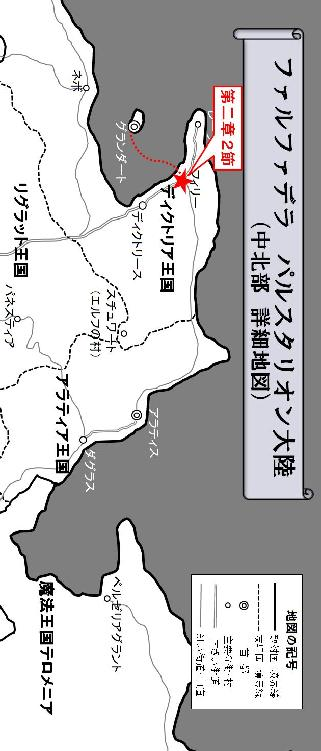
２
結局船は、夕暮れ時にグランダートを発ち、北東に位置する中規模な港町フィリーに到着したのは翌朝、日が昇り始めた頃だった。
ライド達は万が一に備えて、夜間の航行中も交代で見張りを立てて警戒に当たった。今回の仕事がフィリーネの護送である以上、無防備にみんな揃って寝るという訳にもいかない。ディクトリアの海では滅多に起こらないことではあるが、海賊や海の魔物に襲撃された場合、即座に動ける体勢をとったのである。しかしその心配も杞憂に終わり、船は無事フィリーに到着した。
ディクトリア王国は離島の王都グランダートを取り囲むように、その周辺に多くの港町が点在している。グランダートの姉妹都市であるディクトリースはその中でも特に大きな都市だが、今回は目的地が隣国アラティアということで、船はディクトリースではなくディクトリア王国第二の都市であるフィリーに舵をとったのだ。
冒険者達はフィリーに到着後、まず港に並べられた馬車の数に驚いた。
多くの荷物を積み込める幌付きの荷台を牽いた運搬用の馬車から、洋館の応接間のような内装の豪華な馬車まで、様々な種類の馬車が全部で十二台、整然と港に並べられていたのだ。まるで世界中を馬車で廻る商隊である。船員達は船に積み込まれた荷物を、忙しなく馬車へと積み込んでいた。
「どれだけ嫁入り道具があるんだ？」
ライドはそれを見て、呆れたような表情を浮かべながら漏らす。
グランダートを出発する時と同じように、またフィリーを発つ準備が整うまで、相当な時間を要するのは明らかだった。だが、それまで宿でのんびりと過ごしながら待つという訳にもいかない。確率は極めて低いが、街の中で賊の襲撃を受けないとも限らないのだ。ライドは皆に、警戒態勢を怠らないよう伝えると、自らも手にグレイヴを持ち、港に並べられた馬車やその周辺に注意を払った。しかし結局何事も無く日が傾き始めると、あっと言う間に辺りは暗くなり、港町フィリーは夜の賑わいを見せ始めていた。
「遅いな......。お嬢様はまだ降りて来ないのか？」
既に馬車への荷物の積み込みは終わっているように見える。しかしいつまで待っても護送対象のフィリーネが姿を見せず、ライドはまた苛立ちを感じ始めていた。そんな時、驚くべき情報が彼等のもとに齎された。
「あの......申し訳御座いません。フィリーネ御嬢様の護送を請け負って下さった『死を呼ぶライド』さん......ですよね？」
申し訳なさそうにおずおずと声を掛けてきたのは、グランダートで詳しい話を聞かせてくれた召使いの女性だった。
「あぁ、そうだが？ お前のお嬢様はまだなのか？」
待ちくたびれていたライドは、その不機嫌さを隠そうともせず、憮然とした表情のままそう答える。すると召使いは更に恐縮しながら口を開いた。
「実は、今日はまだこの街を出発しませんので、どうぞ何処か宿でお休みになって下さい」
「なんだと！ どういう事だ？ 護送対象者を放って宿で泊まるって訳にはいかねぇぜ。お嬢様は一体どうしちまったんだ？」
ライドは一瞬、自分が聞き間違えたのではないかと思い、召使いの女性を問い詰める。街の中とは言え仕事である以上、警戒を怠る訳にはいかないのだ。敵の襲撃を受けてからでは遅すぎる。いま自分達はフィリーネの命に責任を負う立場である以上、休めと言われてハイそうですかという訳にもいかないのである。
「実は、フィリーネ御嬢様はご気分が優れないとのことで、既に船を降りて休んでおられます。恐らく、船酔いされてしまわれたのでしょう。出発は早くて明日か、明後日以降になりそうです」
それを聞いてライドは思わず大声を上げた。
「ちょっと待て！ お嬢様は一体、いつ船から降りたって言うんだ？」
そしてオスカーとトリスタンに視線を向けたが、彼等も首を横に振りながら口を開く。
「私も全く気付きませんでした。ずっと船の周りを警戒していたのですが......」
「すいません、オイラも気付かなかったっす」
冒険者達は皆一様に驚きの声を上げている。サーシャとテリガルも肩をすくめてリーダーに反応を返す。冒険者達五人で周囲を警戒していたにも関わらず、フィリーネはいつの間にか船から降り、既に宿で休んでいると言うのだ。それはライドにとって失態だった。
「悪ぃな。俺達は誰一人、お嬢様の下船に気付けなかったようだぜ。これじゃ護衛失格だな」
ライドは召使いに対して素直に頭を下げながら、言葉を付け加える。
「悪いが、お嬢様に会わせちゃ貰えねぇか？ もちろん、今直ぐにとは言わねぇぜ。お嬢様の気分が良くなってからでいい。まだ一度もマトモに言葉を交わしたことが無いからな。昨日の俺の軽率な行動のせいで、お嬢様に嫌われちまったんだろうが、こっちとしてはちゃんと意思の疎通をとって、円滑に今回の護送をできるようにしておきたい」
ライドの言葉にオスカーも大きく頷いて同意した。今、冒険者達と護送対象者との間には全く接点が無く、圧倒的にコミュニケーション不足の状態に陥っていたのである。今後の予定や、実際に移動するとなった時、ここにある十二台もの馬車をどう並べるかといった陣形など、護送時の具体的な打ち合わせもしておく必要があったのだ。少なくとも、護送対象者の動向くらいはしっかりと把握しておきたい。
ライドはその事を熱心に召使いに訴えると、フィリーネと直接対話する機会を設けて欲しい旨を伝えた。召使いの女性はメイと名乗り、そのことを御嬢様にお伝えしますと言い残して去っていったが、しかしフィリーネがどの宿で休んでいるのかまでは教えてくれなかった。
------石に囲まれた地下の暗室。
そこには一人の黒いローブを纏った男が佇んでいた。
部屋の中心には大きなテーブルが置かれ、その上に分厚い本や古い巻物、更には用途不明のガラクタまでもが乱雑に積み上げられている。中でも特に目を引くのは、臙脂色の柔らかい布の上で青白い光を発している水晶球だった。
明らかに魔導師風の黒いローブを纏った男が、その独特の存在感を放っている透明な球体に向かって手を翳して怪しげな言葉を発すると、やがて水晶球から淡い光が溢れ出て、暗い部屋の輪郭をぼんやりと浮かび上がらせる。不思議なことにその水晶球からは、光だけでなく音も発せられているようだ。
「ベーン、首尾の方はどうなっている？」
球体を撫で回すように手をかざしながら、黒いローブの男は低い声でつぶやいた。
《......は、昨夕グランダートを出発、明日にも......を......の予定です》
驚いたことに、誰も居ないこの地下室で独り言のように発せられた魔導師の声に対して、水晶球の向こう側から応じる者が居た。
「そうか、ついにグランダートを発ったのか」
男は深くフードをかぶっている為、その顔まで窺い見ることは出来ない。
《あの依頼書には......の魔法を確かに......。それなのにまさか......を引き受ける冒険者が......るとは......せんでした》
水晶球から発せられてくる声は途切れ途切れで、非常に聞き取り難かったが、魔導師はそんなこと気にも留めていない様子で言葉を続ける。
「その事はよい。それよりも、ターゲットをちゃんと捕捉出来ているのか？」
《申し訳......せん。現在見失い......にて探索中......です》
水晶球の中に映し出されている男も魔導師なのか、フードを深くかぶっていて年齢や身体的特徴は全く分からない。地下室に佇む黒い魔導師は、一度深い溜め息をついたあと、厳かな低い声で水晶球に向かって叱責した。
「ベーン。お前ともあろう者が、それは失態だな！ グライオン家がディクトリアと繋がりを持つことなど絶対に許されない。本国がその為にどれだけの予算を此処につぎ込んでいるか忘れたか？」
《は......もちろん......ます！ ......様のご期待にも必ずや......する所存》
青白い光を発している球体から辿々しく聞こえてくる声。それを耳にしながら、黒い魔導師は怪しい笑みを浮かべて口を開いた。
「いざという時は、分かっているだろうな？」
しばらく間が空いた後、水晶球の向こう側から苦しそうな声が返ってくる。
《心得て......ます。その時は必ずや......の娘を跡形もなく葬って......しょう》
それを聞いた黒い魔導師は、満足そうに頷いた。
「それでよい。絶対にターゲットには、アラティアの国境を跨がせるな。分かっていると思うが、失敗は許されない」
《は......》
そして球体はその光を失った。
黒いローブを纏った魔導師は、テーブルの上に積み上げられた書類のひとつを手にとると、それに目を通しながら震えるような声を出した。
「こんなところで、実験を中止する訳にはいかぬ......」
しかし、そんな彼の独り言に対して言葉を返す者はもう居ない。光を失った水晶球は、ただ静かにテーブルの上で佇んでいた。
まだまだ試さなければならない実験が山ほどある。ここで確かな実績と成果を上げなければ、自分はいつまで経っても本国から離れたこの辺境の国で、つまらぬ貴族との社交を続けていかなければならないのだ。それは魔導の研究を本分とする魔導師の彼にとって、耐え難い苦痛以外の何物でもなかった。
黒い魔導師は手に持っていた書類を無造作に机の上に放り投げると、扉を開けて足早にこの地下室から出ていった。彼が置いていった書類の表紙には、アラティアの上流貴族であるグライオン家の紋が捺され、その表題には『テロメニアの魔法実験中止を訴える要望書』と書かれていた。
３
あれから三日が経過した。
フィリーの街の港の一角、倉庫が建ち並ぶ通りに停められた十二台の馬車は、一向に出発する気配を見せなかった。それどころかライド達は、まだフィリーネとコンタクトを取れていない。彼女が何処に居るのか分からないので、結局その馬車をただ監視し続けるしかないのだ。冒険者達は交代でラーイオス家の馬車を見張りながら、フィリーの街にある目ぼしい宿を当たってみたが、貴族の娘がどの宿で休んでいるのか未だに分からないままだった。
ライド達は今、冬の冷たい風から逃れるように倉庫と倉庫の間にある狭い隙間に陣を敷き、そこで背中を丸めて寒さを凌いでいた。サーシャが奏でる優しいリラの音色が風の音と混ざり合って、哀愁ただよう独特の雰囲気を醸し出している。
「さぁさぁ皆さん、どうするっすか？」
そんな中、盗賊トリスタンの威勢の良い声が響いた。
「そりゃ当然、受けて立つに決まってんだろが！」
ライドはその挑発に乗るかのように言葉を返す。
「私は降ります」
「わしも降りるぞ」
しかしオスカーとテリガルは、それぞれ手持ちのカードを伏せると、口々に勝負を降りる宣言をした。
「なんだそりゃ？ お前等、根性ねぇな。男を見せてみろ、男を！」
ライドはあっさり勝負を回避した神官とドワーフを罵倒する。サーシャを除いた四人の冒険者達は、トリスタンが持ってきたカードゲームに興じながら馬車を監視していたのだ。
「ではリーダー、いきますよ？」
トリスタンは銅貨三枚を重ねた塔の上に、更に三枚の銅貨を重ねながらライドを挑発するように言った。ライドもそれに応えるように、銅貨を六枚重ねながら口を開く。
「おぅ、望むところよ！」
サーシャはそれを横目に見ながら白い息を吐き出すと、リラの旋律を少しずつ強め、不安を煽るような曲調に変化させていった。そしてライドは宣言する。
「ナイト三枚でガーディアンだぜ」
自信満々の表情を浮かべながらカードを広げたライドだったが、トリスタンはそれを見ても眉一つ動かさず、手持ちのカードを一枚ずつ順に開いていった。
「プリンセス、クィーン、エンプレスで、クィーンズパレスっす。オイラの勝ちっすね」
「おいおい、嘘だろ？」
ライドは頭を抱えながらトリスタンの手札を凝視する。盗賊は悪びれた様子もなく、ライドの賭け金を自分の懐に入れていった。
「ふぅー。それにしても何とも言えねぇな、この状況」
ライドは自分が持っていたカードを放り投げながら空を見上げると、深く溜め息をつきながら言った。ライドに限らず冒険者達は皆、この仕事の独特の難しさを実感し始めていたのだ。
「ライド、この仕事の期限はどうなっているのですか？ もし決められた期限があるのだとしたら、この調子だとその期限内に護送対象者をダグラスに送り届けるのは、非常に難しいかもしれません」
オスカーがふと愚痴をこぼすような口調でリーダーに問い詰める。
「そういえば期限とかは聞いてねぇな。今回の仕事、俺も貴族の護送としか聞いてねぇぜ。そもそも、その護送対象者が年端もいかない娘だということすら、俺は知らなかった訳だしな」
「もう、こんな仕事降りましょうよ。いくら報酬が良いからって、割に合わないっす。もしかしたらオイラ達を嫌って、こっそり出発しちゃったのかもしれないっすよ？」
「いや、それはないじゃろ」
トリスタンが元も子もないことを口にすると、テリガルはフードをかぶった盗賊を睨み付けながらその言葉を否定した。嫁入り道具を詰め込んだ馬車がここに並んでいる以上、護送対象者は必ずまたここに現れる。仮にフィリーネが冒険者達を激しく嫌っていたとしても、これだけもの荷物を置き去りにして密かに出発する事など、まず考えられなかった。
ライドは顎に手を当てながら、真剣にどうするべきか考えていた。彼はこの仕事を投げ出すつもりなど毛頭無い。ただ、今のトリスタンの言葉がどうしても引っ掛かる。まさかフィリーネが既にこの港町を発ったとは考え難いが、いつの間にか船から居なくなっていたという前例もある。それに護送対象者と直接話す機会を設けて欲しいと召使いに伝えたにも関わらず、三日間まったく音沙汰無しだ。このままという訳にもいかないだろう。
そしてライドはひとつの考えに行き着くと、トリスタンに指示を出した。
「いきなりお嬢様を探そうとするのがダメなんだな。外堀から埋めていく事にするぜ。悪いがトリスタン、ラーイオス家の召使いを探し出してくれ。何人かは顔を覚えてる奴が居るだろ？ あれだけの数が居たんだ。それと思しき人間を探すのは簡単なはずだぜ。そしてその動向を探ってお嬢様を見付け出すんだ」
「了解っす」
トリスタンが頷いてみせると、それを横で聞いていたサーシャはリラの演奏をとめて口を開く。
「いい考えね。わたしも探して来ても良いかしら？ 一応、それなりに隠匿行動も得意なつもりよ」
「あぁ、いいだろう。何か分かっても分からなくても、二時間おきに此処に戻って状況を報告しろ」
ライドはサーシャの提案を受け入れた。フィリーはグランダートやその姉妹都市ディクトリースほど大きな港町ではないにしろ、広い街中を一人で探し回るより、二人で探した方がより彼女を見付け易いのは間違いない。トリスタンとサーシャはフィリーネ本人ではなく、ラーイオス家の召使いの中で顔を覚えている誰かを探し出す為に、フィリーの繁華街の中へと溶け込んでいった。
そして残されたライドとオスカーとテリガルの三人は、冬の寒さを全身で受け止めながら馬車の監視を続ける。ライドはトリスタンとサーシャが、首尾よくフィリーネを見付け出した後のことを考え始めていた。
サーシャは決して本職の盗賊ほどでは無いが、隠匿行動も得意としていた。
冒険者として世界を旅して廻る吟遊詩人は、人の注目を浴びる能力に長けている為か、逆に人混みに紛れて姿を晦ましたり、その優れた聴力を活かして聞き耳を立てたりするといった、盗賊技能にも通ずる技を身につけている者が多いのだ。彼女もその例外ではなかった。
最終的なターゲットは貴族の娘フィリーネだが、彼女が表に出てくることは無い。その身の回りの世話をしている召使いの誰かを見付け出し、それを尾行すればフィリーネに繋がるのは間違いないのだ。サーシャから見ても、ライドの考えは的確に思えた。
そしてサーシャは更に考える。
貴族の娘が宿泊するような宿は限られている。
フィリーネのような若い娘が、それも上流貴族の令嬢が、大衆的な宿屋で休むとは思えない。どんなに治安の良い街でも、繁華街はガラの悪い連中が多いのだ。彼女の安全を考えれば、そんな立地にある宿屋を利用する訳が無い事は想像に難くないだろう。加えて、彼女にはかなりの数の召使い達が付いていた。そうすると必然的に品格があり、且つ大きな宿という事になるが、しかしそれと思しき宿は一通り当たっているにも関わらず、未だフィリーネの居場所を見付け出せずにいる。という事は、そもそも宿で休んでいるという考えそのものが間違っているのだ。
サーシャは多くの人々で賑わう繁華街から離れると、これまでとは全く趣の異なる場所へと足を向ける。そこは貴族の邸宅が建ち並ぶ区域で、人の往来が少ない割に広くスペースの取られた上品な街並みだった。
彼女は通行人を装って歩きながらも意識を集中させて、周囲の建物に注意を払う。仮にラーイオス家と関係の深い貴族がフィリーに居を構えていたとすれば、その館にフィリーネが滞在しているかもしれないと考えたからだ。しかし如何に遠目の利く者でも、決して壁の中まで見通せる訳ではない。だがサーシャには、視力とは異なる別の能力があった。
それは、常人離れした聴力である。
吟遊詩人であるサーシャの聴力は、よく盗賊が壁や扉に耳を当てて、その先にある空間の音や声を聞き取る能力のそれとは少し違う。幾つかのパートに分かれたハーモニーの高音や低音を聞き分けるように、或いは多くの楽器が用いられた演奏の音色を楽器ごとに聞き分けるように、交ざりあった多くの音の中から、特定の音や言葉を拾うのを得意としているのだ。サーシャは大きな館が並ぶこの区域をゆっくりと歩きながら、耳に意識を集中させ、メイという名の召使いの声を拾おうと試みる。あの召使いとは何度も会話を交わしているので、その声はしっかりと彼女の耳に記憶されていた。
しかしそう簡単に事は運ばず、時間を掛けてゆっくりと場所を変えながら耳を澄ましてみたものの、それと思しき声は聞こえてこない。そうこうしている内あっと言う間に二時間が経過してしまい、彼女は報告の為にライドが待つ港へと足を向け始めた。そして高級住宅街と繁華街の境目辺りまで差し掛かったとき、サーシャは『フィリーネ』という響きが耳に飛び込んできた気がして思わずその足を止める。
「フィリーネ......ですって」
「なんてこと！ ......フィリーネ......」
既に報告の時間は過ぎていたが、しかしサーシャはこのチャンスを逃す訳にいかないと判断し、声のした方向に意識を集中させた。
「フィリーネお嬢様はもう三日間、何もお口にされていないそうですよ」
「フィリーネお嬢様、おいたわしや......」
「このままではフィリーネお嬢様、消えてしまわれそうで......」
------間違いない！
ラーイオス家の召使い達が、彼女の話をしているのだ。
サーシャはその会話が聞こえてきた方向に歩みを進めてみる。するとそこには、一見すると大きな館のような診療所があり、裏庭の洗い場に大勢の召使い達が集まって、衣服やシーツなどの洗濯物を干している様子が窺えた。
道理で三日間探し回っても見付からなかったはずである。フィリーネは宿で部屋をとっていた訳でも、貴族の館で厄介になっていた訳でもなく、診療所で療養中だったのだ。その意外な盲点に驚かされながらも、サーシャは診療所の表側に回り込み、堂々と正面の入り口から中に入った。そして落ち着き払った様子で、受付カウンターにいる女性に話し掛ける。
「わたしはラーイオス家に雇われた旅の楽師です。フィリーネ様のお部屋はどちらでしょうか？」
まるで人を騙しているようにも思えるが、彼女の言葉に嘘は無い。実は護送の為に雇われた冒険者であるという、その詳細まで明かさなかったに過ぎないのだ。
「二〇一号室、二階一番手前のお部屋になります」
受付の女性は何の疑いもなく、彼女にフィリーネの部屋を伝えた。この時点で、フィリーネの居場所を突き止めるというサーシャの目的は果たされたが、受付に部屋を聞いておきながら、このまま外に出ていくのは幾ら何でも不自然な気がして、サーシャは成り行きのまま二階に上る階段へと足を伸ばした。
それにしても、品の良い病院である。
外観や内装、通路に飾られた絵画などの調度品を見る限り、ここは一般庶民が来るようなそれではなく、貴族や商人など裕福な人間が利用する診療所といった印象を受けた。サーシャはその豪華な装飾に目を奪われながら階段を上り切ると、突然目の前にあった扉が開いたので、思わずそれにぶつかりそうになってしまった。
「あ、申し訳御座いません」
そして聞き覚えのある声を耳にして我に返る。
「あ、あなたは......！」
「え？ どうしてあなたがここに？」
二人の女は、互いに顔を見合わせながら同時に声を上げていた。階段を上り切ったところで固まってしまったサーシャと、扉を開けたまま硬直しているメイという名の召使い。何も知らずにこの場を見ると、一瞬時間が止まってしまったかのような錯覚に陥ることだろう。
「メイ、どうしたのです？ 誰かそこに居るの？」
部屋の中から幼いながらも凛とした女性の声が聞こえてきた。この声の主がフィリーネなのだろうか？ それはサーシャも初めて聞く声だった。
「実は、今回の護送の仕事を請け負った冒険者の方がお見えになったようです。わたくしは決してこの場所を口外していないのですが......」
メイはしどろもどろになりながらも中の女性に答える。
「よい、通しなさい」
幼い声の主がそう命じると、召使いは一度部屋の中に向かって恭しく頭を下げ、扉を更に大きく開いてサーシャに対しても小さくお辞儀した。図らずもフィリーネと直接話す機会を与えられたサーシャは、やや緊張した面持ちでゆっくりと部屋の中へと足を踏み入れる。そして豪華なベッドで横になっている幼き主の姿がその目に映ると、その場に跪いて深く頭を下げた。
「お初にお目にかかります。今回、フィリーネ様の護衛、護送の仕事を請け負った冒険者『死を呼ぶライド』のパーティの一人、サーシャに御座います」
「サーシャとやら、顔をお上げなさい」
貴族の令嬢に促され、サーシャはゆっくりと頭を上げフィリーネの姿を見る。
「わたしはフィリーネ。この度、アラティアのゴライオン家の長子であるフォルクスに嫁ぐ為、ダグラスまで赴くことになりました。以後、お見知り置きを」
寝衣に身を包んだ少女は、その姿であってもどこか威厳すら感じさせる覇気を纏っているように見えた。
「それにしても、よくここが分かりましたね。あなた方の目から逃れるために、わざわざ狭苦しい積荷の中に入ってあの船から搬出させたというのに......」
気の強そうな娘だった。その凛とした声の中には、冒険者達に対する皮肉も込められているように聞こえる。サーシャは、その貴族の娘に気圧されそうになっている自分に驚きながらも口を開いた。
「それも、冒険者の能力が故といったところです。しかし分かりません。今フィリーネ様は、わたし達の目から逃れるためと仰いました。わたし達はあくまでフィリーネ様の味方です。フィリーネ様はなぜ、わたし達冒険者を遠ざけようとされるのですか？」
その質問に対して、フィリーネは憮然とした表情を浮かべたまま言葉を返す。
「そんなこと、答えるまでもありませんわ。あなた達のリーダーがわたしにした事を思い返せば、自ずと答えが分かるのではなくて？」
そしてサーシャは思い起こした。あの時ライドは、事もあろうにフィリーネが待機していた馬車に蹴りを入れ、無礼な態度を働いてしまっていたことを。
「その節は大変申し訳御座いませんでした。この通り、リーダーのライドに代わってわたしがお詫び申し上げますので、何卒ご容赦頂きたく......」
サーシャはもう一度その場で跪き、貴族の娘に向かって深く頭を下げた。こればかりは申し開きが立たない。フィリーネがご立腹なのは当然のことと言えるだろう。
「それだけではありませんわ。あの者はわたしに、とんでもない暴言を吐きましたのよ。嫁に行く身であるわたしを『ガキ』呼ばわりしたのですから」
そしてサーシャは、あの時のライドの言葉を思い返す。
（まさか中に乗ってるのがガキとは思わなかったぜ。ま、悪気は無かったんだ。許してくれや）
それは彼の悪癖だった。
自らの非を素直に認めることは出来るものの、それをちゃんとした言葉で表現するのが下手なのだ。冒険者として苦楽を共にしてきたサーシャは、そんな彼の性格をよく知っている。あれはライドなりの謝罪の言葉だった。しかし、彼のことをあまり知らないフィリーネにとって、それは許されざる非礼に見えたことだろう。
「そもそも、アラティアに行くのに冒険者の護衛など必要なかったのです。どうしてもお父様が護衛をつけなければならないと仰るから、仕方なく......」
「しかし、それではあまりにも危険過ぎます！」
なんとフィリーネは、護衛など必要無いと考えているようだ。それはサーシャにとって、有り得ない選択肢だった。
「大変無礼を働いてしまったこと、重ねてお詫び申し上げます。しかしながら、最近この近辺の街道では、非常に危険な賊が幅をきかせています。多くの商隊が襲われ、貴族が人質にされ、身代金を要求されるといった事案が多発しているのです」
「それこそ、その時になったら冒険者に救出を依頼すれば良いのではなくて？」
メイもフィリーネの言葉に同調しているように見えた。安全なグランダートで日常を過ごしている彼女達は、外の世界の恐ろしさを知らないのだ。サーシャは自分の感覚との大きな温度差を感じずにはいられなかった。そしてその危険性を訴える。
「つい先日、わたし達のパーティは賊の襲撃を受けて人質にされたディクトリースの商業協同組合の長、ジェラルド伯の救出に向かい、それに失敗しました。賊は危険な魔獣を飼い慣らし、それを操っていたばかりでなく、その背後には忌まわしき森の種族、ダークエルフの存在があり、その救出は困難を極めました。ましてや嫁入り前のフィリーネ様がもし賊の手に落ちた場合、たとえ救出に成功したとしても、どんな酷い目に遭うか知れたものではありません。街道を護衛もなく無防備に進むのは、極めて危険な行為と言わざるを得ないでしょう」
サーシャの経験に裏付けられた言葉には、確かな説得力があった。
「今回の護送。正直に申し上げると、わたし達冒険者だけでは戦力として物足りないくらいです。なぜディクトリアの正規軍がフィリーネ様を護送しないのか、逆に不思議でなりません」
そのサーシャの疑問を聞いて、フィリーネとメイは互いに目を合わせる。そして召使いのメイが口を開いた。
「もともと今回の護送は、ディクトリアの正規軍が請け負う予定でした。しかし、アラティア側からそれを強く拒まれたのです」
「なぜですか？ 今回、フィリーネ様がアラティアのダグラスに嫁ぐことは、アラティアにとっても大きなメリットがあると、メイ様ご自身の口からお伺いしました。それをアラティア側が拒む理由が分かりません」
サーシャはメイの言葉に対して疑問を呈する。
「ディクトリアの正規軍は、今や帝国も攻め倦むほどの強い力を持っています。それはわたくし達にとっては頼もしい存在ですが、その分、アラティアにとっては脅威になります。アラティアから見れば所詮、ディクトリアの正規軍は外国の軍隊。どんな大義があろうとも、外国の強力な軍隊がアラティア内を闊歩するのを、あちら側はあまり快く思わないのでしょう。メンツが立たないとか、そういった色々な事情が向こうには向こうであるようですし......」
それを聞いてサーシャはなるほど、と納得した。二国間の問題である以上、一筋縄ではいかない部分もあるのだろう。サーシャは一度大きく息を吸い込むと、本来最初に聞くべきことを思い出し、かしこまった姿勢を取りながら口を開いた。
「時に、フィリーネ様の体調の方は如何でしょうか？ 本来、最初に伺わなければならない事を後回しにしてしまい恐縮ですが、わたしは今回それを確認するために来たのです。先ほど申し上げました通り、近年、街道の危険性は増すばかり。わたし共などディクトリアの正規軍と比較すれば頼りない存在ではありますが、出来ればフィリーネ様の護衛としてもっと綿密に連絡を取り合って、信頼関係を築いていきたいと考えています」
フィリーネの居場所を突き止めたのは、元々この為だったのだ。彼女とその召使い達は、あくまで貴族の世界に生きる人間である。街の外に潜む危険について無知なのは仕方ないとして、あとは互いにしっかりコミュニケーションを取り合えば、それらの問題は全て解決できるに違いない。実際、冒険者達は護るべきフィリーネが今何処に居るのかさえも分からず、完全に力を持て余している。本来、彼女を護る為にここで交代しながら護衛の任に就かなければならないはずなのだ。しかし、そのフィリーネ本人に警戒されてしまい、彼女を護るべき冒険者達はむしろ逆に彼女から避けられてしまっている。それを解消し、信頼関係を築く事が、今回の仕事を成功させる為に先ず何よりも優先されるべき問題なのである。
そんなサーシャの質問に対して、メイは静かに首を横に振りながら口を開く。
「お医者様が仰るには、お身体の方は問題ないとのことで、この体調不良は言わばフィリーネ御嬢様の心の問題。ゆっくりと休養をとって、フィリーネ御嬢様が心から落ち着かれることが何よりも大切とのことです。今あなたが仰ったことは事前に伺っていましたが、フィリーネ御嬢様に余計な心労をお掛けしたくないという配慮から、まだ本人にはお伝えしていませんでした。どうかご理解賜りますよう、お願い申し上げます」
やはり三日前にこの召使いに頼んだことは、フィリーネ本人に伝わっていなかったのだ。そして予想通りと言うべきか、フィリーネは十六歳にして見たこともない男と結婚するために、遠い異国に赴くというそのこと自体に、相当な精神的負荷が掛かっていたのだろう。それは想像に難くない。
サーシャは背中に括り付けた短弓を外すと、その成りの中に張られた小さな弦の調律を始めた。彼女の短弓は、リラと呼ばれる弦楽器を兼ねた特殊な工芸品なのだ。それを見たメイは、病室内で演奏しようとする彼女の動きを察してそれを止めようとしたが、サーシャは静かに首を横に振りながら口を開いた。
「大丈夫、あまり大きな音は出しません。母親が歌う子守唄のように、或いは岸辺を濡らすさざなみのように......小さな声でお聞かせします。陸の王子と海の姫」
そして静かな美しい音色を奏でながら、サーシャは囁くように歌い始めた。
『静まり返った波風。
海風と陸風とが交差し、
無風になったこの夕凪に想う。
わたしの足跡は全て波にさらわれてしまい、
もう跡形も無く消え去った。
今のわたしには何も見えない。
遠くに行かないで。ここに来て。
わたしの代わりに世界を見て、
そしてわたしに教えて欲しい。
あなたは今、何を見つめているの？
わたしを抱き締めて、その全てを教えて欲しい。
今のわたしには呼吸が出来ない。
何処にも行かないで。ここに居て。
わたしの代わりに息をして、
そしてわたしに触れて欲しい。
あなたは今、何処を目指しているの？
わたしに口づけして、その息吹を吹き込んで』
神秘的な雰囲気に満ちた八分の六拍子の旋律と、透き通るようなサーシャの歌声。それは、ディクトリアの王であるファナーと、その妃シルヴィアをモチーフにした、陸の王子と海の姫の物語だった。
かつて凄腕の冒険者として活躍し、英雄と讃えられていたファナー（陸の王子）は、当時のディクトリアの王アルディアの一人娘であるシルヴィア（海の姫）と禁じられた恋におちていた。二人は互いに愛し合っていたが、王は冒険者という身分の陸の王子と、由緒正しき血統を持つ自分の娘との交際を認めず、海の姫を街外れにある塔の中に幽閉してしまったのだ。
これによって海の姫は、完全に外の世界から隔離されてしまったが、しかし彼女の想いは非常に強いものだった。そしてついに海の姫は、塔の上から身を投げ出し、波にさらわれ溺れてしまう。だが陸の王子がそれを救出し、口づけすることによって息を吹き返したという物語である。
「とても素敵な歌声ですこと。わたしはあなたのことが気に入りましたわ。あなたの歌声を聞いていると、まるで心の中いっぱいに花が咲いたみたいに、とても穏やかな気持ちになりますの。ずっと聞いていたいくらいですわ」
フィリーネはその顔いっぱいに笑顔を湛えると、左手を下に添えるように上品な拍手を送り、サーシャの澄んだ歌声を称賛した。
「この歌は、トールという名の吟遊詩人が、冒険者として英雄ファナーと旅を共にする中で生まれたと言われています。わたしもいずれトールのように、こんな素晴らしい歌を紡ぎたい。そしてディクトリアの森のどこかに今も住んでいるというエルフ族と楽隊を組んで、彼等と共にその歌を演奏するのが、わたしの夢なのです」
サーシャはベッドの上で控えめに拍手する一人の小さな観客に向かって、舞台の上でするような一礼をしてみせた。召使いのメイもそれにつられるように、ここが病室であることも忘れ、思わず両手を鳴らして旅の楽師に拍手を送る。
この日、小さな貴族の娘と吟遊詩人の冒険者は意気投合し、まるで古くからの親友であるかのように夜遅くまで語らい合った。それは護送対象者の居場所を突き止め、コミュニケーションをはかることで、護送の仕事をより円滑に進めることを目的とした当初の狙いを遥かに越えた収穫であった。サーシャは護送対象者であるフィリーネと、確かな信頼関係を築くことに成功したのだ。

４
十二台の馬車の隊列は、正面に大きな雪山を望みながら、街道を東へと進んでいた。
サーシャがフィリーネと意気投合してから翌々日の朝。即ちライド達が港町フィリーに到着して五日も待たされてから、ようやく貴族の娘は隣国アラティアに向けて移動を開始したのだ。
港町フィリーから東に伸びる街道を馬車で一ヶ月ほど進んだその先に、アラティア王国の首都アラティスがある。この経路は街道と言うより山道と言って差し支えないほど起伏の激しい難所が幾つか点在しているが、それでも南のリグラット王国を経由してパネスティア鉱山を抜ける山道と比較すると遥かに楽な上、こちらの方が近道なのは明白だった。フィリーネの結婚相手フォルクスは、ダグラスの上流貴族グライオン家の長子である。即ち目的地は、そのアラティアの首都アラティスを越えた先にあるダグラスという名の都市なのだ。十二台の馬車の隊列によるこの大移動は、短めに見積もっても軽く一ヶ月を超える長旅になる。そのため護送を務める冒険者達のみならず、フィリーネの召使い達も皆、昨日まで滞在していた港町フィリーで充分な時間を掛けて、万全の準備を整えていた。
馬車の隊列は、ようやく本格的な移動を開始したのだ。
「それにしても、気に入らねぇな」
ライドは不満そうな顔を隠そうともせず、ため息交じりにそう言った。彼は今、馬車の荷台で積荷に囲まれながらも何とかスペースを作り、そこであぐらをかいて座っている。
「仕方ないじゃろ。お前さん、あの娘に嫌われておるんじゃから」
同じ馬車の荷台に荷物と一緒に詰め込まれた髭面のドワーフが、スキットルと呼ばれる銀の水筒の蓋を開け、それを口に含みながらまるで諭すように言った。
「そんなこと、あのお嬢様の態度を見てりゃ誰でも分かるぜ。ただ、好きとか嫌いとか、そういうこと言ってる場合じゃねぇと俺は言ってるんだ」
ライドは明らかに荒れていた。
冒険者達の護送の仕事は、護送対象者であるフィリーネが移動を開始した事によって、ようやく本格的な動きを見せ始めたものの、その内容にライドは納得していなかった。フィリーネを護送する為に雇われた五人の冒険者達は、それぞれこの十二台の馬車の隊列の中に配置される事になったが、しかしそれを中心になって決めたのはフィリーネとサーシャで、ライドは完全に蚊帳の外だった事に不満を持っていたのだ。
何より、もしライドならこんな配置にするはずがない。
先頭の馬車に遠目が利く盗賊のトリスタンを置くのは良いとして、四台目に神官のオスカー、そして五台目のフィリーネの馬車の中にサーシャが一緒に乗り合わせ、ライドとテリガルは十二台目の殿を務める馬車に追いやられていたのである。殿は重要な役割でもあるが、これではフィリーネに何かあった時、すぐに駆け付ける事が出来ない。何より、最後尾に二人もの護衛を置く意味が全く無かった。ライドは本来なら、自分自身がフィリーネに最も近い場所で護衛を務めるつもりでいたのだ。
サーシャがフィリーネと打ち解けたこと自体は、この仕事を円滑に進める上で非常に大きな意味を持っていた。吟遊詩人からその報告を受けた時、ライドは素直にその事を喜び、サーシャの労をねぎらったものだ。
冒険者に身を投じている吟遊詩人の多くは、自分の歌声に特別な感情の力を込める能力を持っていた。そうして発せられた歌は『呪歌』と呼ばれ、聞くものの心に強く訴え掛ける、魔法に似た力を持っているのだ。『呪歌』は、吟遊詩人がその歌声に込めた感情によって、聞いた者の士気を高めて勇気を奮い立たせたり、怒りや恐怖にとらわれた者の心を落ち着かせたりといった、様々な感情の効果を引き出す事が出来る。強力な『呪歌』の中には、聞いた者を自傷行為に走らせる程の、深い悲しみや絶望を与えるものまであると言われているのだ。
サーシャがその『呪歌』を使って、氷のように固まったフィリーネの警戒心を解いたことは疑いようのない事実だったが、ライドはその事を咎めるつもりなど毛頭なかった。ただ、フィリーネはサーシャと打ち解けはしたものの、相変わらずライドの事を極端なまでに遠ざけている節があり、ライドはそれが気に入らなかった。そもそもライドは、未だにフィリーネと一言も言葉を交わしていない。ライドは護送対象者との意思疎通を全てサーシャに任せるしかなかったが、そのせいで馬車の配置を決める際にも自分の考えを一切反映させる事が出来なかった。もしこの状況下で何者かの襲撃を受けたらと思うと、ライドは気が気で無かったのだ。
「そんなに気に入らんなら、休憩時間や野営の時にでも抗議しに行けばええじゃろう？」
テリガルはあまり興味なさそうな様子でスキットルに入った液体を口の中に流し込むと、簡単にそう言ってのけたが、しかしライドは、そんなドワーフに対して真っ向から反論した。
「それができれば苦労しねぇぜ。あのお嬢様、どういうつもりか休憩時間中ずっとあの豪華な馬車から一歩も外に出てきやしねぇ。召使いが頻繁に出入りしているようだから、ちゃんとメシ喰ってクソはしてるんだろうが、もしかしたらあのお嬢様、この道中あの馬車から出てこないつもりなのかもしれねぇぜ」
「さすがに野営の時には出てくるじゃろ。その時に直談判するしかないじゃろな。ただ、気をつけることじゃ。そんな下品な言い方してたら、もっと嫌われてしまうかもしれんぞ。あの娘は育ちが良すぎる、お前さんとは身分が違い過ぎるんじゃ。相応の敬意を以て接しないと、口も聞いても貰えんじゃろうな」
「別に俺のことを嫌ってくれても構わねぇ。だが、仕事と感情は別物だ。今のままでは、もし賊の襲撃を受けた場合、俺はお嬢様を護り切れる自信がないぜ」
ライドは言いながら少し俯く。ライドの不満は、フィリーネから嫌われているという事に対するものではなく、今のままでは護送の仕事に失敗するかもしれないという自信のなさの表れだったのだ。テリガルは、そんなライドが右手に強く握っているグレイヴを指差しながら口を開いた。
「それこそ、お前さんに自信があろうが無かろうが、護送の仕事とは関係なかろう。うちの工房で鍛え上げられたそのグレイヴは飾りではあるまい？ お前さんはただそのグレイヴを振れば良い。そうすれば自ずと、今回の護送の仕事もやり遂げられるはずじゃ」
ドワーフの戦士は、どこか遠くを見つめながら言葉を続ける。
「武器は所詮、人殺しの道具。だが、命を奪う道具でありながら、使い方によっては命を護ることも出来る」
それはテリガルの師匠であり、実の父親でもある鍛冶職人、ブレイブの教えだった。
「お前さんが仕事と感情は別物だと言うのと同じように、武器にも感情なんてものは無い。武器は使う者の意志に従って、肉を斬ったり刺したりする人殺しの道具に過ぎんよ。そこにあるのはただ、氷のように冷え切った鉄の塊じゃ」
ライドはその話を、自分が間借りしている部屋の家主でもあるブレイブから何度も聞かされたことがある。なぜ親子は、外見だけでなく考え方までこうも似るものなのだろうか。普通の親子ならそれが当たり前なのだ。ライドはテリガルの言葉の中に、その父親であるブレイブの姿を重ね合わせて聞いていた。
「だが鉄は真っ赤になるまで熱して型に流し込めば、どんな武器にもなりえる。そして叩いて叩いて叩き続けて武器を鍛え上げるのと同じように、熱い情熱をもって武器を振り続ければ、その氷のように冷えた鉄の塊は、とんでもない熱をそこに帯びるんじゃ」
そしてドワーフの戦士は、自らが持つ戦斧を愛おしそうに撫でながら言葉を続ける。
「わしの戦斧もお前さんのグレイヴも、元は同じ真っ赤な鉄。親父はその何の変哲もない鉄から、使い手の体格や筋力、得意とする技など全てを考慮した上で、その者に最も合った最適な一振りを丹精込めて鍛え上げるんじゃ。わしは親父が鍛え上げたこの戦斧に誇りをもっておる」
テリガルの言葉には熱がこもっていたが、しかし力強さは感じられなかった。テリガルは自分の重々しい戦斧を荷台に置くと、後ろに流れていく景色を見つめながら溜め息を漏らす。既に日は傾き、夕暮れ時に差し掛かっていた。
「じゃが、もうそのやり方ではやっていけないようじゃ。親父の武器づくりは趣味でやってる訳じゃない。わしら冒険者と同じで、儲けにならない仕事は続けられないからの。この護送の仕事に出る前、わしは親父から聞かされたんじゃ。もうすぐあの工房をたたんでしまうとな。いずれそうなるとは思っていたが、せめてその前に、一旗上げてやりたかったんじゃがの」
「親方、あの工房、閉めちまうのか！」
「これからの武器は大量生産の時代。一度に多くの材料を仕入れ、一度に多くの武器を作って在庫を管理した方が、原価を低く抑えられてそのぶん単価も安くできる。買う方も安いに越したことはないからの。使い手に合わせて作られていた武器は、やがて使い手の方が定型的に作られた武器に合わせなければならない時代になってしまうんじゃろう」
使い方次第でどんな風にも変化する人殺しの道具。武器の本質は昔も今も変わらない普遍的なものだ。しかし今、そんな武器は時代と共に大きく変化していこうとしている。そしてそれは武器に限ったことではない。ライドは、冒険者という不安定な立場に身を置き続けることに限界を感じながらも、この仕事が終わったあとのことを考え始めていた。ブレイブが工房を閉めてしまうというのであれば、その倉庫に間借りしている自分も出ていかなければならないかもしれない。
（どうかの、ライド。今や激動の時代。そなた、ディクトリアの騎士になってはみぬか？）
ふとロバート司教の言葉がその脳裏に過ぎったが、ライドはどうしてもその甘言に便乗する気にはなれなかった。
「む？ どうやら今日はここらで野営をするようじゃな。ようやく酒が飲めるわい」
そのとき、ドワーフの戦士の嬉しそうな声がライドの耳をついた。馬車が徐々に速度を落とし始めると、比較的起伏の少ない街道に沿って、縦一列に並んで停まったのだ。
「髭樽。夜襲もあるかもしれねぇから、酒は程々にしとけよ」
ライドは、さっきまでこのドワーフが飲んでいたのは酒ではなかったのだろうか？ と呆れながらそう言い放つと、乗っていた馬車の荷台から颯爽と飛び降り、隊列の前の方に足を向け始める。彼の視線の先には、一際豪華な装飾の施された一台の馬車があった。
（俺は別に、お嬢様の敵という訳じゃねぇんだ。ちゃんと話すしかねぇ）
その豪華な馬車の中には、フィリーネが乗っているはずである。
しかしライドがそこに辿り着くよりも先に馬車の扉が開き、中から女吟遊詩人が降りてきた。そして彼女はライドに鋭く声を掛ける。
「ライド、これ以上この馬車には近付かないで」
それを聞いたライドは、一瞬怒りに似た感情が湧いてきたが、しかし赤く熱した鉄を水で一気に冷ますように、その熱い感情を凍らせてから静かに口を開いた。
「なぁに、そんなに怖い目で俺を見るなって。別に俺は文句を言いに来た訳でも、殴り込みに来た訳でもねぇ。ただ、もし賊の襲撃を受けた場合、今の体制のままで本当にお嬢様を護り切れるのかが心配になってな......」
馬車の周りでは召使い達が慌ただしく杭を打ち、テントを張って野営の準備を整えている。そんな様子を横目に見ながら、ライドは更に言葉を続けた。
「それに、野営中は俺達が交代で見張りをする必要があるぜ。その打ち合わせをしておかないといけねぇだろ？ 俺達はここに、行楽目的で来てる訳じゃねぇんだ」
ライドの言葉を聞いてサーシャは静かに首を横に振りながら口を開く。
「ライド、分かって。わたしはあなたをフィリーネ様に近付ける訳にはいかないの。わたしがそれを見過ごしてしまったら、せっかく築いた依頼主との信頼関係まで失うことになるのよ」
「だからその信頼関係ってやつを、俺も築こうと思って努力してるんだろうが！」
ライドは声を荒げながら反論したが、サーシャは悲しそうな瞳を戦士に向けて言った。
「ライド、人はみんな、あなたみたいに強い訳ではないのよ。あなたは自分が強いから、弱い人の気持ちが分からないの」
そこにオスカーが現れて、ライドとサーシャの間に割って入る。
「ライド。ここは何も言わずに、サーシャの言うことを聞いてくれませんか？ 夜の見張りも、私達で交代するので心配いりません」
「バカ野郎、そんなの心配に決まってるだろうが！」
ライドは自分でも知らず知らずの内に、少しずつ声が大きくなっていた事に気付き、そしてその事を後悔した。こうして自分が声を荒げていく事で、サーシャやオスカー、そしてフィリーネを萎縮させてしまっていたのだ。さっきサーシャが言った『弱い人の気持ちが分からない』という言葉は、まさにその事を指摘していたのではないだろうか。
「大丈夫ですよ、ライド。ここは私とサーシャに任せてはくれませんか？」
「それでは危険だと俺は言っているんだ。お前等の負担を心配して言っている訳じゃねぇぜ」
ライドは出来るだけ落ち着いた口調でオスカーに答えた。
「ライド。あなたはわたしとオスカーのことを、仲間として信頼していないの？」
吟遊詩人と神官の二人に囲まれている図は、まるで二人の仲間から説教をされているようにも見える。だがライドは何よりも、護送対象者の安全を優先しなければならない。
「別に俺はお前等のことを信頼していない訳ではねぇぜ。ただ、オスカーは神官でサーシャは吟遊詩人。お前等はどちらかと言うと近接戦闘が得意な方じゃねぇ。俺と髭樽を殿に追いやった今の体制で、お前等はいざという時にお嬢様を護り切れるのか？」
ライドは自分が決して感情論を振り翳している訳ではないことを、何とか二人に分かって貰おうと言葉を続けたが、しかしそれがどれだけサーシャとオスカーの心に届いているか、正直計り兼ねていた。そこに先頭の馬車に居た盗賊トリスタンが現れると、まるでその場を鎮めるように軽い口調でライドに言った。
「まぁまぁリーダー、大丈夫っすよ。いざって時はオイラも直ぐに駆け付けるっすから。それよりもリーダー、またオイラとカードゲームでもどうっすか？」
ライドは、まるで緊張感のない盗賊に呆れ顔を浮かべていた。
丁度その時。
豪華な馬車の扉がもう一度開いたかと思うと、その中から護送対象者であるフィリーネがゆっくりと降りてきた。彼女は召使いのメイに手をとられながら地面に足をつけると、澄まし顔のまま一瞬だけ視線をライドの方に向ける。
ライドはそれに気付くと、もう一度念を押すようにオスカーとサーシャに向かって問い掛けた。
「もしお嬢様が危険にさらされた時、お前等は自らの危険も顧みずお嬢様を護るという、その覚悟があると言うのだな？」
リーダーの問いに対して、オスカーとサーシャは力強く頷いてみせる。ライドはそれを確認すると、自分の持ち場に戻る為に踵を返して歩き始めた。その覚悟があると言うのであれば、もうオスカーやサーシャを咎める必要もない。
フィリーネは、そんな冒険者のリーダーに対して、ただ氷のように冷たい視線を向け続けるのみだった。
５
旅は順調だった。
フィリーを発ってから既に二週間が経過している。極寒の山越えは非常に厳しいものだったが、幸い天候に恵まれ、風は冷たいものの心配されていた雪はまったく降る気配を見せなかった。
冒険者達の間には、このまま国境を越え、アラティアのダグラスまで何事もなく辿り着けるのではないかという楽観的な空気が漂い始めていた。盗賊のトリスタンに至っては、野営の度に夜遅くまで召使い達とカードゲームに興じ、彼等から賭け金を巻き上げていたが、自主的に周囲の警戒にあたっていたライドに見付かってこっ酷く絞られた挙句、イカサマがバレてしまい、今はカードをすべて没収されている。ライドはこの護送の仕事を無事完遂させる事だけに神経を尖らせ、常に警戒にあたっていた。
護送対象者である貴族の娘フィリーネは、未だライドを遠ざけ、口をきこうとさえしない。だが、そんなことは関係なかった。誰からどう思われようと構わない。ライドはただ、無事に彼女をダグラスに送り届けられれば、それで良いのだ。
ディクトリア王国の北東部。
街道はなだらかな下り坂を経て、進行方向に向かって左手の北側に海を望む絶景に出た。高い切り立った崖の中腹を這うように伸びるこの街道は、更に東に進めばディクトリアとアラティアの国境を越えた辺りから、再び険しい山道へと繋がっている。その山を越えた先に、アラティアの首都アラティスがあるのだ。アラティスまで辿り着けば、目的地のダグラスは目と鼻の先だった。
それにしても、危険な街道である。
仮にもしこの道から馬車が滑落してしまったら、荒波が打ち付ける岩肌まで真っ逆さまに転落し、一瞬の内にバラバラになってしまうだろう。その目が眩むような高さに、御者を務める召使い達はみな出来る限りその危険を回避する為に、馬車の隊列を縦一列にして街道を右寄りに走り続けていた。
水平線の彼方から冷たい潮風が吹き付けると、風はまるで下から上に駆け登るかの如く険しい崖に沿って吹き上げて、馬車の隊列を大きく揺らしていった。相変わらず殿の馬車に配されていたライドは、後方を睨むように警戒し続けていたが、前方から大きな音が聞こえてきたかと思うと馬車が突然急停車してバランスを崩し、自分の意志と関係なく後転させられるような格好になった。
「なんだ？ 一体どうした！」
後頭部を強打して頭を振りながら立ち上がったライドは、同じ荷台に乗っていたドワーフの戦士と共に御者に問いただす。
「さっき前の方で、崖の上から岩が落ちてきて、馬車が一台海に......。もう駄目だ、賊の襲撃だー！」
御者は恐ろしいものを見た直後のように、青褪めた表情を浮かべながらライド達の居る荷台に入り込むと、慌てて隠れる場所を探し始めた。その様子を見てただ事でないと悟ったライドは、即座に荷台から飛び降りると、目を凝らして前方を確認する。
「なんだありゃ、こりゃマズいぜ！」
そしてライドは荷台からグレイヴを取り出すと、テリガルに向かって大声で呼び掛けた。
「行くぞ、髭樽！」
切り立った崖の中腹に伸びた細長い街道の先に、幾つもの巨大な岩が横たわり、隊列は完全に分断されていた。崖上からロープを垂らし、次々に街道に下りてくる賊の姿も見える。この状況と御者の言葉から察するに、賊が崖の上から岩を落として奇襲を仕掛けてきたのだろう。何台目の馬車か分からないが、一台の馬車がその襲撃によって崖下の海に転落してしまったようだ。もしそれがフィリーネの乗っている馬車だとしたら......ライドは気が逸って仕方なかった。
慌てふためく召使い達を尻目に、ライドとテリガルは前へ前へと走り続ける。やがて九台目の馬車を越えたあたりで、二人の目にも状況が正確に見え始めた。
隊列は落石によって分断され、前に進むことが出来なくなっていた。先頭から二台目までの馬車は街道を塞いだ岩の前方にあり、トリスタンと合流するのは難しそうだ。幸い、落石によって海に転落したのは三台目の馬車で、フィリーネの乗る五台目の馬車は無事のようだが、しかしオスカーが乗っていた四台目の馬車は前半分が街道から突き出し、天秤のようにグラグラ揺れて今にも転落しそうな危機的状況に陥っていた。
更に追い討ちを掛けるように、崖上からロープを垂らして次々と下りてくる賊の集団。何人かの勇気ある召使い達が、果敢にも迫り来る賊と戦っている様子が見受けられたが、所詮は非戦闘員である。戦況は明らかに劣勢だった。そして何よりもライドが気になったのは、賊と交戦中の召使い達の中に、護送の任についているはずの冒険者の姿が一人も見当たらないことだ。分断されてしまった先頭の馬車に配されているトリスタンはやむを得ないとして、こういう時こそ冒険者が先頭となって、賊を追い払わなければならないはずである。
「サーシャ！ オスカー！」
ライドは七台目の馬車の横を走り抜けたあたりで、テリガルとの距離が開いている事に気付いたが、構わず前に走り続けた。いま何よりも優先されるべきは、崖上から下りてきた賊をフィリーネが乗る五台目の馬車に近付けさせないことだ。
見ると、崖上から下りてくる賊の姿はようやく途絶え始めていたが、しかしその数は多く、全部で二十人は居るように見えた。抗っていた召使い達は次々に蹂躙され、賊の集団は五台目、六台目の馬車の扉をこじ開けようとしているようだ。
「野郎、俺が相手だ！」
ライドは六台目の馬車を無視してそのまま五台目の馬車の元まで駆け寄ると、勢いそのままにグレイヴを右上から左下に向かって斜めに振り下ろした。
「くあっ！」
突然背後から現れた屈強な戦士。
馬車の扉をこじ開けることに夢中だった賊は、背後から迫り来るライドの存在に全く気が付いていなかった。そして扉の前に群がっていた三人の賊をまとめて斬り付けたライドは、更に間髪入れずにグレイヴを振り回し、他の賊をこの馬車から引き剥がす。背中を斬り付けられた三人の賊は、聞き苦しい呻き声を上げながら一瞬の内に絶命していた。
「サーシャ！ オスカー！ どこだ！」
「ライド！」
ライドの呼び掛けに対して、少し離れた位置からサーシャの悲痛な叫び声が聞こえてきた。その声がした方向に目を向けてみると、そこには今にも転落しそうな四台目の馬車から抜け出して、崖をよじ登ろうとしているオスカーと、彼を引き上げようとしているサーシャの姿があった。
「お願いライド、手を貸して！」
サーシャは懇願したが、大勢の賊の真っただ中に飛び込んだライドは、直ぐにそこに行くことが出来ない。何よりもライドは、いま自分が背にしているフィリーネの乗る馬車を放置してまで、オスカーを助けに行くことなど出来ないと考えていた。ライドはひたすらグレイヴを振り回し続け、馬車の周囲に横たわっていた召使い達の亡骸の上に賊の死体を積み上げていく。しかし一人ひとりは大したことのない賊も、集団になると非常に厄介な存在だった。
突如現れた冒険者の戦士に不意をつかれて浮足立っていた賊の集団は、やがて落ち着きを取り戻すと、組織的な動きを見せ始めたのだ。
気付くとライドは、馬車を背にした状態で、七人の賊に取り囲まれていた。
薄ら笑いを浮かべながら短剣を身構えている賊の集団は、ライドを囲む輪を徐々に狭めながら、今にも襲い掛かってきそうな気配を漂わせている。七人の内の誰が最初に斬り掛かってくるのか、全く予測が付かなかった。
「ここまで仲間を殺しておいて、ただで済むとは思うなよ、死ね！」
そう粋がって大声を発した賊は、しかし襲い掛かってくる振りだけで、全く違う賊が短剣を前に突き出してきた。思わぬ攻撃にライドは反射的に身体を翻し、辛うじてその攻撃を躱したものの、彼が回避した方向に控えていた賊がそれに合わせて短剣を突き出し、ライドは燃えるような熱い衝撃を背中に受けた。
「くそっ！」
たまらずライドは短く握ったグレイヴの柄を振り、自分の背中に短剣を突き立てた賊を追い払うと、賊に囲まれたその場から転がりながら抜け出して距離を離す。
「へっへっへっ、そこまでして護ろうとするこの馬車の中には、一体何があるのかな？」
ライドが馬車の前から離れたと見るや、賊は下品な声を上げながらその扉に手を掛け、再びそれをこじ開けようとした。
「野郎！」
ライドは怒りの声を上げながらグレイヴを振り上げたが、その前に三人の賊が立ちはだかり、戦士の行く手を遮った。ライドは焼けるような背中の痛みに耐えながらひたすらグレイヴを振り回し続けたが、素早い動きを見せる賊をなかなかとらえる事が出来ず、苛立ちだけが募っていく。
「助けてライド！ このままじゃ、オスカーが！」
目の前の戦いに必死なライドは、助けを求めるサーシャの声に応じることなど到底できなかった。そうこうしている内に、賊は馬車の扉をこじ開けることに成功し、中から一人の女性を引き摺り降ろし始める！ それはフィリーネお付きの召使い、メイだった。
「邪魔だ、どけ！」
それを見てライドはグレイヴを強く握り直すと、その場で大きく回転し、立ち塞がる三人の賊を一気に蹴散らそうとした。しかし賊はそれを見て危険を察知するとライドから離れ、その攻撃が届かない距離まで身を翻しながら後退する。そしてまるで引波の直後に押し寄せてくる大波の如く、戦士の攻撃が終わるタイミングを見計らって、短剣を前に突き出してきた。
ガキィン！
大振りの直後で隙だらけになっていたライドは、三本の短剣が身体に埋め込まれる痛みに耐えようと身を強張らせていたが、しかしいつまで経ってもその痛みは襲ってこない。その事に違和感を覚えて正面を見てみると、自分の目の前で大盾を構えて仁王立ちしているドワーフの戦士の姿がそこにあった。
「ふんっ！」
テリガルは鉄板のような大盾で短剣の攻撃を全て受け切ると、低い声を発しながら力を込めてその盾を前に押し出す。すると三人の賊はバランスを崩しながら後方に転倒した。
「遅えぞ、髭樽！」
「文句なら、六台目の馬車でわしを足止めしてた奴等に言うんじゃな！」
そしてライドは再び走り出す。賊はどこから湧き出すのか、次から次へとライドの前に現れてその行く手を遮ろうとしたが、しかしライドは、絶対にその足を止める訳にはいかなかった。
五台目の馬車の扉をこじ開けた賊は、三人がかりで召使いのメイを馬車から引き摺り降ろすと、まるで品定めでもするかのように彼女の顎を強く掴み、下品な笑い声を上げ始めた。
「こいつぁ上玉だ。色街に売れば高く売れるぜ！」
そう言って賊は彼女の上着に短剣を押し当てると、躊躇いなくそれを一気に引き下ろす。するとメイの着衣がはだけて、艶やかな肌が寒空の下にさらされた、その次の瞬間！
「な......！」
薄ら笑いを浮かべていた賊の表情が一変、苦痛に顔を歪めながらその場で崩れるように倒れ込んだ。メイは自分の顎を掴んでいた賊に向かって、小さなナイフを思いっ切り突き刺していたのだ。
「やりやがったな、この女ァ！」
彼女のすぐ背後に居た賊は、怒声を上げながら報復の刃をメイの背中に突き立てる！ すると彼女は声を発することもなく、まるで木の葉が舞い落ちるかのように、儚く地面に倒れ込んだ。
「いやあああ！」
そのとき、もう誰も居ないと思われた馬車の中から、甲高い女の悲鳴が聞こえてきた。
「なんだぁ？ まだ誰か乗ってるのか？」
賊はその声に気付くと、再び馬車の中に入ってその声の主を探し始める。そして程なくすると、薄紫色のゆったりとした衣服に身を包んだ小さな娘が、その馬車から引き摺り下ろされた。
「すげぇぞ！ まだ少しばかり小柄だが、こいつぁさっきの女よりも上玉だぜ！」
その娘は、ディクトリアの上流貴族であるラーイオス家の次女、フィリーネに違いなかった。細い腕を壊れそうなほど強く引っ張られて馬車から引き摺り下ろされた彼女は、周囲に散乱した召使いと賊の亡骸の中にある変わり果てたメイの姿を見ると、大きな声を出して泣き崩れた。
「うるせぇぞ、この小娘が！ しっかり立ちやがれ！」
フィリーネの腕を引っ張っていた賊は、メイの身体に縋り付いて動かなくなった娘にそう言うと、彼女の赤み掛かった髪を乱暴に引っ張って無理やりフィリーネを立たせようとした。それと同時に彼女が頭にかぶっていたファシネーターが地面に落ちる、丁度その時！
「その汚ぇ手を、離しやがれ！」
一瞬、賊が発した汚い言葉のようにも聞こえたが、しかしその声の主は賊ではなかった。鋭く飛び込んできたライドは、フィリーネの腕と髪を引っ張っていた下賤な者にグレイヴを突き刺すと、その突進の勢いそのままに自分の身体を使って賊を弾き飛ばし、彼女に返り血が掛からないようにした。
「来いよ雑魚ども！ 俺がまとめて相手をしてやるぜ！」
そしてライドは鬼神のごとき動きを見せて、フィリーネの周りに居た賊を次々に斬り伏せていく。反撃を試みようとする賊の前にはテリガルが立ちはだかり、ライドへの動線を断ち切った。それは熟練の冒険者による見事な連携だったが、信頼する召使いメイを目の前で惨殺された直後とあって、フィリーネは未だ茫然自失の状態に陥っていた。そんな彼女に向かって、ライドはグレイヴを振りながら呼び掛ける。
「お嬢様、馬車だ！ 今のうちに早く馬車の中へ！」
しかしフィリーネにはその声が聞こえていないのか。足元に転がっているメイの姿を見つめたまま呆然と立ち尽くしていた。
「仕方ねぇ。髭樽！ 少しの間たのむ！」
ライドはテリガルにそう言い放つと、自らは身を翻し、フィリーネのもとに駆け寄った。そしてまるで人形でも抱きかかえるかのように彼女を肩の上に担ぎ上げると、そのまま馬車の中に乗り込み始める。
「いやっ！ 離しなさい！ メイを、メイも連れていかないと！」
フィリーネは突然のライドの行動に驚き、手足をバタつかせて抵抗を試みたが、しかし戦士の逞しい腕を振りほどく力など持ち合わせていない。
「不埒者！ 気安くわたしの身体に触わるなど、決して許されない無礼と知りなさい！ 今すぐわたしを下ろすのです！ 聞こえていますの！」
それでもライドは構わず馬車の中に乗り込んで、フィリーネを座席に座らせるようにゆっくり下ろすと、彼女の長いスカートの裾にグレイヴを突き立てて口を開く。
「別に俺はアイツ等みたいにお嬢様を取って喰おうって訳じゃねぇ。選ぶんだな。あの賊にここで喰われるか。それとも俺と一緒にここから逃げ延びるかを」
そう言ってライドは、窓のカーテンを少し開いて外の惨状を彼女に見せた。
テリガルはよく踏ん張って、賊をこの馬車からうまく遠ざけてくれている。しかし賊の内の何人かは、オスカーを助けようとしているサーシャの方に向かっているようだ。ライドはそれが気掛かりだったが、まずは護送対象者のフィリーネを優先するべきだと考えていた。信頼する召使いメイを喪ってしまったフィリーネが、無謀な行動に出てしまわないように、まずは彼女を落ち着かせなければならない。
「どうすんだ、お嬢様？」
ライドはもう一度フィリーネに問い掛けた。激しい剣撃と断末魔と思しき賊の呻き声が、馬車の中まで聞こえてくる。その中でフィリーネは、静かに頷きながら震えるようなか細い声を出した。
「ライド......わたしを護りなさい！」
「よく言ったぜ、お嬢様！ そのグレイヴにしっかり掴まっておけよ。俺の言葉に嘘はねぇ。アラティアのダグラスだろうと何処だろうと、お嬢様を無事に送り届けてやるぜ！」
そう言ってライドは床に突き刺したグレイヴに更に力を込めると、より深くグレイヴの穂先を馬車の床にめり込ませた。そして素早く馬車から降りて御者台に飛び移る。
「こっちだ、乗れ！ 髭樽！」
ライドは馬車を操りながら大きな声でテリガルに向かって呼び掛けた。そして馬首を海の方に巡らせると、そのまま真っ直ぐそれを走らせ始める！
「どうする気じゃ、ライド！」
突然向きを変えて走り出した馬車に驚いたテリガルは、そう叫び声を上げていたが間に合わず、次の瞬間、ライドが操る馬車に激突して弾き飛ばされた。
「何をするんじゃ！ もう少しで馬車の下敷きになるところだったわい！」
ドワーフの戦士は首を振りながら戦斧と盾を拾い上げると、馬車に向かって抗議の声を上げる。
「うるせぇ髭樽！ つべこべ言ってねぇでさっさと乗りやがれ！」
ライドは一旦馬車を停めると、テリガルを挑発するようにそう言った。ドワーフの戦士は呆れ顔を浮かべながら小走りに馬車に駆け寄って、その扉の取っ手に手を掛ける。するとライドは、彼が馬車の中に乗り込むよりも先に、勢い良く馬に鞭を打った。
「なにをするんじゃライド！ わしを轢き殺す気か！」
そして馬車は多くの賊を巻き込みながら、サーシャとオスカーの居る四台目の馬車の方に向かって走っていった。
「オスカー！ もう少しよ、頑張って！」
落石によって街道からはじき出され、一度は海に転落したと思われた四台目の馬車は、その後方を大きな岩に挟まれる事によって、前半分が大きく外に突き出しているにも関わらず、不安定な状態でバランスを保っていた。オスカーはこの揺れる馬車の中から何とか外に這い出してみたものの、目の眩む高さに足が竦んでしまい、一歩も動く事が出来ずにいる。そんなオスカーを励ますように、サーシャは大きな声を出して彼に呼び掛け続けた。
「オスカー、下を見ないで！ わたしだけを見て！」
サーシャは街道に杭を打ち、そこにロープを結んで自分の身体と杭を繋げると、崖の端に寝そべるような体制になって落下寸前の馬車に向かって精一杯手を伸ばし、オスカーを助けようとしていた。
「申し訳ありませんサーシャ！ もうこれ以上は無理そうです！」
「何言ってるのオスカー！ ほら、わたしの手を握って！」
オスカーは不安定に揺れる馬車の側面に掴まったまま、サーシャが差し伸べる手に向かってもう片方の手を伸ばしてみるものの、ぎりぎりのところでその手が届かず途方にくれている。サーシャは、オスカーが恐怖にかられて思い切った行動が出来ないことが、この状況を打破する大きな障害になっている事を悟ると、その不安定な体制のままで自分の背中に括り付けていたリラを取り外し、それを奏でながら透き通るような声で歌い始めた。
『あなたは今、何をそんなに恐れているの？
わたしはあなたが居れば、怖いものなんて何もない。
あなたは確かに、わたしを強くしてくれている。
わたしにとって怖いこと、それは唯ひとつ。
あなたの目に、わたしの姿が映らなくなること。
あなたは今、無限の勇気を内に秘めている。
あなたはわたしの歌で、無敵の戦士にもなれる。
わたしは確かに、あなたを強くする事が出来る。
あなたにとって怖いこと、それは唯ひとつ。
あなたの耳に、わたしの歌が届かなくなること』
それは呪歌と呼ばれる魔法に似た歌の力で、聞く者に勇気を与え、潜在的に秘めた力を最大限に引き出す力があることで知られている。サーシャの歌声で恐怖を完全に克服したオスカーは、危機的な状況下にありながらも冷静に周囲の状況が見えるようになっていた。
「助かりました、サーシャ。今そちら側に！」
そう言って神官が手を伸ばし、サーシャの手をしっかりと掴んで引き上げられた次の瞬間、オスカーは恐ろしいものをそこに見て、緊迫した声を上げる！
「あぶない、サーシャ！」
だが、間に合わなかった！
突如サーシャの背後から現れた三人の賊によって、彼女は背中を斬り付けられ、そのまま崖下に転落してしまったのだ！ しかしサーシャは街道に杭を打ち込み、ロープで自分の身体とその杭を結び付けている。それによって彼女は一命を取り留めたものの、ロープで街道から崖下に向かって宙吊りの状態になってしまった！
「なんてことを！」
オスカーの手には、さっき自分が街道に引き上げられたとき掴んだばかりのサーシャの手の感触が、まだハッキリと残っていた。やっとの思いであの状況から抜け出したと思った矢先に転落してしまったサーシャ。今度は自分が彼女を助け出さなければならない！ オスカーはその使命感で頭がいっぱいになると、自分のすぐ近くに居た賊に向かって強烈な体当たりを繰り出した。賊はサーシャのロープと繋がっている杭を抜こうとしていたが、オスカーの思わぬ攻撃を受けてバランスを崩し、海に向かって真っ逆さまに転落していく。サーシャは宙吊りになりながらもロープを手繰って、なんとか街道まで崖を登ろうと試みているようだ。
「サーシャ、待っていて下さい！ 今助けます！」
オスカーはサーシャを励ましながら、残った二人の賊を憎々しげな目で睨み付けた。賊のうち一人は、崖の上に放置された短弓を拾い上げ、それに矢をつがえてオスカーに狙いを定めようとしている。それはついさっきまで、美しい音色を響かせていたリラという名の弦楽器を兼ねた、彼女の特殊な短弓だった。
「オスカァー！」
その時、自分を呼ぶ聞き慣れた大声を耳にして、オスカーはその声の主に短く返す。
「ライド！ サーシャが下に！」
物凄い勢いでこちらに向かってくる一台の馬車がそこにあった。
何人かの賊を巻き込みながら猛然と突進してくるその馬車は、ひと目見てそれと分かる豪華な装飾が施されたフィリーネの馬車である。よく見ると扉の取っ手部分には、必死の形相でへばり付いているテリガルもいた。ライドは馬車を荒々しく蛇行させ、オスカーの前で身構えていた二人の賊を蹴散らすと、神官の手前でそれを急旋回させて土煙と共に馬車を停止させた。
「オスカー、サーシャは何処だ！」
「下です、早く彼女を！」
落石によって完全に塞がれた街道。
そこには岩に挟まれて前半分が宙に浮いているかのような状態になっている落下寸前の馬車と、ロープで宙吊りになったサーシャの姿があった。ライドは神官の指差した崖下を見てそれを確認すると、間髪入れずに指示を出す。
「よし、さっさとサーシャを引き上げるぞ！ 髭樽、お前も手伝え！」
そしてライドとオスカーがそのロープを引っ張り始めたその時。ドワーフの野太い声が、二人に警戒を呼び掛けた！
「危ない！ 上じゃ！」
テリガルの声に促されて上を向いたライドとオスカーは、そこに信じられないものを目撃する！
赤く輝く炎の塊がそこにあったのだ！
「......な！」
意味のある言葉を発する暇など一切なかった。
あまりにも一瞬の出来事に、頭が真っ白になったと言っても良いだろう。
崖の上から放たれた燃え盛る火の玉は、岩に挟まれて前半分が突き出していた馬車に直撃し、激しい大爆発をそこで引き起こしたのだ！ それは普通の自然現象ではない。魔法使いが放った炎の魔法。非常に危険な破壊魔法に違いなかった！
その激しい爆風で馬車の残骸が辺り一帯に撒き散らされ、ライドとオスカー、そしてテリガルは反射的に身を伏せて、腕で頭を覆いながら低い姿勢をとっていた。炎の魔法の直撃を受けた馬車は、燃え上がりながら粉々になり、火のついた細かい木片と共に崖下の海へと落下していった。
「サーシャ！ サーシャ！」
それと同時に、オスカーの悲痛な叫び声が響き渡る。
「ライド、サーシャが見当たりません！」
無情にも、そこにはただロープが垂れ下がっているだけだった。さっきまでロープを手繰って上によじ登ろうとしていた女吟遊詩人の姿が見当たらない！
「サーシャ！ サーシャ！」
神官は涙を流しながら彼女の姿を探し続ける。そんな中、テリガルが再び警戒を呼び掛けた。
「どうやら、まだ新手が居るようじゃ！ このままじゃマズいぞ！」
一度は途絶えたと思われた賊が、崖上から新たに姿を現し始めたのだ。
一体どこからそんなにも湧いてくるのか。崖上からロープを垂らし、次から次へと現れては、街道に向かってするすると下りてくる賊の伏兵。ライドにはその動きが、ただの賊と言うよりも、むしろ軍隊のように訓練された組織的な動きに見えた。
（賊の中に魔法使いが居るだと？ 馬鹿な！ ただの山賊に身を投じる魔法使いなど居る訳ねぇ！）
さっきの爆発は間違いなく、魔法使いの破壊魔法によるものだった。そして今、新たに現れた賊の伏兵。ライドは決断を迫られていた。
「ライド、サーシャを探しましょう！ 彼女はまだ近くに居るはずです！ 私達の助けを待っているに違いありません！」
オスカーはサーシャの救出を提案したが、ライドは首を横に振った。
「乗れ、オスカー！ 逃げるぞ！」
「なんですって？ 貴方はサーシャを探しもせず、この場から逃げると言うのですか！」
神官は信じられないといった表情を浮かべ、目を見開いてライドに問い詰める。
「ライド、貴方はパーティの仲間を見捨てると言うのですか！」
崖上から現れた賊の新手は、街道に次々下りてくると、この馬車に向かって走り始めている。加えて、崖上からあの危険な炎の魔法を再び放たれたなら、次はこの馬車がバラバラになってしまうだろう。先頭の馬車に居るトリスタンとも合流しなければならない。この状況下でサーシャを救出しようとしたら、フィリーネを護れないどころか、このパーティが全滅してしまうのは火を見るよりも明らかだ。
「さぁライド！ 何を迷っているのです？ 一刻も早くサーシャを......」
「だまれオスカー！」
その声は、聞いた者を圧倒する覇気に満ちていた。
それを聞いたドワーフの戦士テリガルは、全てを察して馬車に乗り込み始める。ライドはその一言でオスカーを一蹴すると、低く厳かな声を出して彼に命令した。
「いいか？ 俺の言うことをよく聞け。今すぐ馬車に乗るんだ！」
オスカーはそんなリーダーのただならぬ気迫に気圧され、口を真一文字に噤んだまま静かに頷くと、少し離れた場所に落ちていた短弓を拾い上げてから、素早く馬車に乗り込んだ。その短弓は、この場に残された唯一のサーシャの痕跡である。
「てあっ！」
オスカーが馬車の中に乗り込んだのを確認すると、ライドは掛け声と共に勢い良く馬車を走らせ始める。丁度同じタイミングで馬車に到達した賊が、ライドの顔目掛けて鋭く短剣を伸ばしてきたが、突然発進した馬車の勢いでバランスを崩し、あっという間に振り落とされた。ライドはすぐ近くまで迫ってきていた賊を轢き、少し離れた位置にいた賊を弾き飛ばすと、来た道を戻るように逆方向に向かって馬車を走らせる。
その時、ドスンっという音と共に馬車の屋根が大きく揺れた。
崖上から馬車に賊が飛び乗ってきたと思ったライドは、それを警戒して一瞬振り向いたが、そこには紺色のフードを深くかぶった盗賊トリスタンの姿があった。
「トリスタンか！ お前、よく向こう側から戻ってこれたな！」
「ふぅー間一髪っす。危うく置いてけぼり食らうトコだったっすよ」
トリスタンがそう答えた瞬間、馬車の後方からガラスが割れるような音が聞こえてきた。後ろからクロスボウを構えた賊が、この馬車に向かって射撃しているのだ。そこから放たれた弾のうち何発かが馬車の後方の窓に突き刺さり、それが割れた音だった。
「戻ってきたのならさっさと働け！ アイツ等に好き勝手撃たせてんじゃねぇ！」
ライドは情けない声を上げているトリスタンにゲンコツを見舞うと、戻ってきた盗賊に休む間も与えず指示を出す。
「やっとの思いで戻ってきたってのに、随分手荒な歓迎っすね」
盗賊は不満を漏らしながらもライドの指示に従い、マントの中から長い紐のような物を取り出すと、紐の広がった硬い部分に石をセットし始めた。それはスリングと呼ばれる武器で、遠心力を利用した紐状の投石機である。
トリスタンはビュンビュンと音を鳴らしながらそれを自分の頭上で回すと、クロスボウを構えている賊に狙いを定めて石を解き放った。放たれた石はまったく見当違いの方向に飛んでいったが、馬車に向かって射撃しようとしている賊を牽制するには、充分な効果を得られているようだ。
「ったく、お前それでも盗賊か？ 下手クソな射撃だな！」
「リーダー、無茶言わないで下さいっす。揺れてる馬車の上からじゃこれが精一杯っすよ！」
そんな軽口を飛ばし合いながら、馬車は街道を来た道に向かって走り続けた。幸い隊列は南側の崖寄りに縦一列の陣形をとっていたので、北側の海寄りは綺麗にスペースが空いている。ライドはこの危険な街道の崖っ淵に沿って馬車を走らせることで賊の襲撃から逃げ切り、フィリーネを危機的状況から護ることに成功したのだ。しかし多くのものを失ったばかりか、考えなければならない事が山積みだった。
（あの賊はただの賊なんかじゃねぇ......一体何なんだ？）
ライドはこの馬車を、これから何処に向かって走らせるべきか悩んでいた。
落石によりアラティアへの街道が塞がれた以上、このまま馬車に乗ってダグラスに行くことは出来ない。ましてやこの馬車はフィリーネの為に用意されたもので、必要な多くの物資は他の馬車の荷台に積み込まれていたのだ。それらは今ごろ、賊の戦利品として全て彼等に略奪されている事だろう。今ある手持ちの物資を確認する必要がある。特に食料があとどのくらい残されているのかが気掛かりだった。
ディクトリアに戻るとしたら、また険しい山を越えなければならない。山を越えるのであれば、アラティアに向かった方が良さそうにも思える。ライドは刻一刻と変化する状況の中で、次の選択を迫られていた。
追憶３
「なんだと！ それは真であるか！」
お父様の憤りに満ちた怒声が、わたくしの耳を鋭くつきました。
パネスティア城の宴からアルギニア王国に戻って数ヶ月後。わたくしの体調に小さな変化が生じ始めたかと思うと、次第にそれは隠し通せないほど大きな問題に波及していきました。
はじめは、原因不明の微熱でした。
なんとなく気分が優れず、わたくしは自室に篭もることが多くなっていきましたが、そのうち回復するだろうと思っていました。しかし一向に良くなる気配が無く、主治医に診て貰ったときにそれが発覚したのです。
わたくしはお父様の前に跪き、覚悟を決めて真実を打ち明けました。
「はい......事実で御座います、お父様。わたくしはこのお腹に授かった子を産みたいと思います。そして許されることなら、ライネック様のお傍に行きとう御座います......どうか、この親不孝なわたくしのことを、お許し下さいませ......」
「ならぬ、ならぬぞ！ それだけは絶対にならぬ！」
それは妊娠でした。
わたくしのお腹には、あの方の血を継いだ新しい命が宿っていたのです。
「ソルーシュ。お前をこれより、アルギニアスの外れにある杜の館に幽閉する！」
お父様は怒り心頭でした。
この頃のわたくしはライネック様の温もりが忘れられず、側室としてでも良いから彼の傍に行きこの命を捧げたいという気持ちでいっぱいでしたが、しかし、それは決して許されないことでした。どんなにライネック様への想いをお父様に伝えようとも、それに対するお父様の拒絶は、わたくしの想像を遥かに超えたものだったのです。
「良いか？ お前の身体の変化は決して誰にも知られる訳にはいかぬ！ ましてや、リグラットのライネック王に知られる訳にもいかぬ！ もしこの事が明るみになってしまえば、アラティアの許婚との婚約が解消されるだけに留まらず、我が王家の恥として末代まで語り継がれる事になってしまうだろう。そんなことは、絶対に許されないのだ！」
父は怒りに身を任せ、わたくしに厳しい罰を言い渡しました。罰と言っても、ソニアンディーを離れてアルギニアスの片田舎に閉じ込められることや、アラティアに居る未だ見ぬ許婚との婚約の解消なんて、わたくしにとって瑣末な問題に過ぎません。わたくしにとって最も堪える罰は、この事実をライネック様にも知られてはならない事でした。わたくしの願いはただひとつ。この身に授かった子と共に、ライネック様のもとに行きたい。それだけだったのです。
「そんな！ 恥ならわたくしが一人ですべて被ります。わたくしの存在がアルギニア王家の歴史に汚点を残すというのであれば、わたくしを勘当して下さっても構いません！ どうかわたくしを、ライネック様のもとに行かせて下さい！ どうかお父様、わたくしにご慈悲を......！」
わたくしはそう言ってお父様に懇願しましたが、しかしお父様の表情はより厳しさを増すばかりでした。そしてわたくしは、厳しい罰を言い渡されたのです。
「ソルーシュ。余はこれより、大臣達を集めてこの問題をどうするか真剣に協議せねばならない。正式な処遇が決まるまで、お前はあの館から一歩も外に出てはならぬぞ！」
第三章 死を呼ぶライド
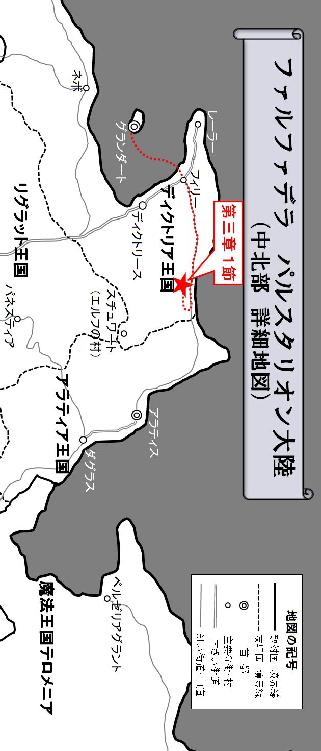
１
空は徐々に薄暗くなり、冷たい風が西から東に流れ始めた夕暮れ時。
ライドは来た道を引き返し、海に面した崖沿いの危険な一帯を抜けると、一度は越えた山のふもとに差し掛かった辺りで馬車の速度を緩め始めた。アラティアを目指すにしてもディクトリアに引き返すにしても、今夜はこのなだらかな丘陵地帯で野営することに決めたのだ。
「おし、野郎ども。野営の準備だ」
馬車を街道から少し外れた草地に停めると、ライドは中に乗っている冒険者達に声を掛ける。しかしそこに女吟遊詩人サーシャの姿は無い。賊の中に紛れていた魔法使いの破壊魔法に巻き込まれた直後、彼女は消息不明になってしまったのだ。だが、冷静に考えてあの状況下でサーシャが無事にいられるとは考え難い。誰もがそれを理解していながら、決してそのことを口に出そうとはしなかった。ただ一人を除いては------。
「ライド、お願いです。さっきの場所に戻っては貰えないでしょうか？」
重苦しい空気の中で、白い法衣を纏った神官オスカーは、ポツリとライドに提言した。
「サーシャはまだ、きっと何処かで私達の助けを待っているはずです。もう賊は馬車の積荷などの略奪を終えて、あの現場から引き揚げている頃でしょう。お願いです、ライド！」
涙を流しながら訴えるオスカー。その悲痛な叫びはライドの胸を深くえぐったが、リーダーの考えを変えるまでには至らなかった。
「ダメだ。それは出来ない」
そしてライドはオスカーだけでなく、この場に居る全員に対してはっきりと言った。
「もう戻っても無駄だぜ。なぜならサーシャは死んだんだ。今はそれよりも自分達のこと、そしてこれからの事を考えろ。まだやらなければならないことが沢山あるぜ」
それを聞くと神官はうずくまり、嗚咽を漏らすように泣き崩れた。しかしライドはそんなオスカーを無視するように、この馬車に積み込まれた荷物に一度目を向けると、皆に向かって事細かく指示を出していく。
「まずは物資のチェックだ。役に立ちそうにないガラクタは全て捨てちまえ。重要なのは寒さを凌ぐのに必要な防寒具や毛布、それから水と食料の備蓄の確認が最優先だ」
オスカーはその場でうずくまったままだったが、テリガルとトリスタンはライドと共に、馬車の積荷を確認し始める。フィリーネはそんな大人達の姿を、まるでどこか遠い別の場所から傍観しているかのように、じっと静かに見つめ続けていた。
ライド達は、見るからに高価そうな美術品や装身具、難解な文字が羅列している意味の分からない書物など、今この場で生き延びる為に必要なさそうな物は容赦なく廃棄していった。きっと捨てられた物の中には貴重な品も多く含まれていたに違いなかったが、フィリーネは一切口出ししなかった。幸い、このような非常事態もあらかじめ考慮されていたのか。人数に対して充分な量とは言えないものの、水と食料、そして小さなテントもこの馬車に積み込まれていたようだ。
ライドは食料の全体量を把握すると、その中から今夜の分を見定め、それをトリスタンに手渡して食事の準備をするよう命じた。そして自らは槌と杭を持ち出してそれを地面に打ち込み、張り綱を結んでテントの設営を開始する。
ここまでの旅の間、野営の準備は全てラーイオス家の召使い達がやっていたので、ライド達は何もしなくても特に咎められる事はなかった。むしろそれらの雑務を手伝おうとすると、逆に召使い達に煙たがれたものだ。冒険者達はあくまでフィリーネの護送の為に雇われた用心棒であり、その業務の中に野営などの雑務は含まれていなかったのである。しかし冒険者達は普段、自分達でこれらの設営を行っている。その作業はとても手際の良いものだった。
フィリーネはそんな冒険者達の意外な側面を見て素直に驚いている様子だった。そして自分も何かしなければならないと思ったのだろう。枯れ木を集めて焚き火の準備をしているトリスタンの元に歩み寄ると、そこに置かれた火口箱に手を伸ばし、火を熾そうと試みた。トリスタンは、まさかフィリーネが手伝いに来るとは思いも寄らなかったのか。いつの間にか自分のすぐ近くに来ていた彼女に気が付くと、一瞬ビクッと驚いた様子を見せたものの、すぐに気を取り直してフィリーネに優しい声を掛ける。
「あ、いいっすよフィリーネさん。オイラがやりますから」
しかし娘には、そんな盗賊の言葉がまったく聞こえていないのか。いつまでも火打石と火打金を打ち鳴らす作業をやめようとしない。トリスタンは仕方なく、彼女が火を熾すのを黙って見守ることにした。
その様子は、テントを設営しているライドからも見えていた。
それにしてもぎこちない手つきである。恐らく彼女は、火口箱の中の道具を使って火を熾した経験など無いのだろう。ライドはひと目見てそれを見抜いていたが、しかし彼女のそのやる気だけは高く買っていた。
「髭樽、あと頼む」
ライドはそう言ってフィリーネとトリスタンの方へと足を向ける。そして彼女の作業を後ろから覗き込むと、思わず呆れたような声を上げながら口を出した。
「おいおいお嬢様、何やってんだ？」
いつまで経っても火がつかないと思ったら、根本的にやり方が間違っていたのだ。
「枯れ木に直接火花散らしても燃える訳ねぇだろ。まず穂綿に火花散らして、火種がついたらそれを直ぐ附木に移して、それから枯れ木を燃やすんだ」
ライドは無知な令嬢に痺れを切らし、懇切丁寧に火の熾し方を説明し始めた。当分このメンバーでやっていかなければならないのだ。一から全てを教えなければならないのは大変だが、しかし世間知らずのお嬢様の手でも、借りられるものなら借りたいというのが正直なところだった。雑用を全てこなしてくれた召使い達は、もう居ないのだから。
------それから数刻後。
テントの設営が終わり、ささやかながら食事の準備が整うと、フィリーネが熾した焚き火を囲んで、少し遅めの夕食が始まった。乾燥干し肉を煮込んだだけの粗末なスープは、五人で分けると明らかに量が少なかったが、これからの道中を考えると今はこれで保たせるしかない。
「ちょっと聞いてくれ」
その最中、ライドは唐突に切り出した。
「決して充分な量とは言えないものの、運良く積荷の中に食料があったお陰で、俺達はこうして何とかメシにありつけた訳だが......問題は、その中に馬の餌が含まれていなかったことだ」
すると、さっきライドと共に備品類のチェックをしていたテリガルが口を開く。
「さっき、馬共を少し放してこの辺りの草を食べさせようとしてみたんじゃが、この冬の時期のせいか、全然喰えそうな草が無い上、あっても茶色く干からびた枯れ草ばかりでな。あんまり口にしようとせんかったわい。ちゃんとした乾草を与えてやりたいところじゃが......」
それを聞いてトリスタンは質問する。
「ってことは、どういうことっすか？」
「腹を空かせた馬が、馬車を牽けなくなっちまう。つまり、馬車での移動は難しくなる。このまま来た道沿いにディクトリアに戻るにしても、歩いて山を越えなきゃならねぇってことだ」
ライドは深刻な面持ちでそう言った。オスカーとフィリーネはその話を無言のまま聞いている。トリスタンもそれを聞いて完全に黙り込んでしまった。目的地アラティアに行く為には、もうひとつ山を越えなければならない。だがその山道に繋がる道は、賊が引き起こした落石によって塞がれてしまった。しかし逆にここからディクトリアに戻るにしても、一度越えた山にまた登らなければならない。しかも今度は馬車が使えなくなるというのだ。東に進むにしろ西に戻るにしろ、いずれの場合も自らの足で、険しい山を越えなければならないのである。
そんな時。
「あ......」
フィリーネの高く澄んだ声が、重苦しい空気に包まれたこの空間に小さく響いた。
貴族の娘は手のひらを上に向けると、黒く染められた空の上からゆっくりと舞い降りてくる白い粉のようなものを、懸命に受け止めようとした。しかしうまく拾うことが出来ず、純白のきらめきは彼女の目の前で揺れている火の中へと消えていった。
「道理で、今夜はやけに冷え込むと思ったぜ」
ライドは白い息を吐き出しながら、恨めしそうに空を見上げる。
昨夜まで夜空を彩っていた冬の星座は、黒い外套の中にその姿をくらまし、代わりに今この世界を支配しているのは、不規則に舞い散る白く冷たい冬の使者。まるで小さな白き妖精が、空間を自由に踊り回っているかのような、そんな幻想的な光景がそこに広がっていたのだ。

「雪って、どんな気持ちなのでしょう？」
フィリーネはようやくその両手の中に雪を受け止めたものの、すぐにそれが解けて形を失っていく様を、不思議そうな瞳で見つめながら言葉を発した。
「晴天は喜び、雨は悲しみ、曇りは憂うつ、雷は怒りなど、天気はよく人の感情に例えられますが、では雪には一体、どんな感情が秘められているのでしょうか？」
「雪はただの雪だ。そこに感情なんて、ある訳ねぇだろ」
ライドは貴族の娘が唐突に口にした掴みどころのない疑問に対して、真面目に考える気も起きなかった。しかし彼の隣に座っていたドワーフは、ろれつが回らない聞き苦しい口調で彼女の疑問に言葉を返す。
「冷たい物の中には、熱い情熱が隠されておる。鉄は一度真っ赤になるまで熱したあと、一気に冷やす事でその熱が芯の中に閉じ込められ、硬く鍛え上げられるんじゃ」
スキットルを呷りながら顔を赤らめているテリガルを見て、ライドは溜め息をつきながら愚痴のようにこぼした。
「またそれか。髭樽は酒が入ると、いつもその話だな？」
しかしフィリーネは、そんなテリガルの言葉に納得しているのか。焚き火に降り注いでは消えていく白い雪を眺めながら独り言のように呟く。
「冷たさの中にある情熱......」
それは、今の自分と同じ気持ちのように彼女には思えた。
信頼する召使いメイを喪い、自分の護送を担当する冒険者の中で、唯一打ち解けることの出来たサーシャも死んでしまった。オスカーという名の神官のように、自分も涙を流して悲しむことが出来たなら、どんなに楽なことだろうか。
しかし、常日頃から感情を圧し殺して生きてきた彼女は、どうやって涙を流せば良いのか、その泣き方も既に分からなくなっていた。父親から突然結婚相手を告げられて、遠い異国に嫁ぎに行くことが決まった日もそうだった。姉のディクトリーネは、ラーイオス家を継いで婿養子をとることが生まれながらに決まっている。自分は所詮、二番目の子なのだ。ディクトリア王国第一の都市でもあるディクトリースの名を冠した姉こそが、ラーイオス家で一番大切な娘なのである。フィリーネは、自分の名前の由来でもあるディクトリア王国第二の都市、フィリーの街が大嫌いだった。だから今まで一度もフィリーには行かなかった。そして今回の旅で初めてその街を見て、彼女は愕然とさせられたのだ。ディクトリースとフィリーとの差は歴然だった。街の規模、建物の数、人の多さ、そして賑わい。どれを取ってもフィリーの街はディクトリースには敵わない。それを見たフィリーネは、自分は所詮二番目であるということを否応なしに実感してしまい、気分が悪くなってしまったのである。
「雪は、もしかしたらわたしと同じ気持ちなのかもしれませんわね......。今もわたしの心の中には、雪が降り続けている気がします」
寒さに凍えて悴んだ指先と同じように、動かしたくても動かせない。泣きたくても泣き出せない。熱い気持ちを内に秘めながらも、それを表現することができない。もし雪を人の感情に例えるなら、そんな気持ちなのかもしれない。フィリーネは絶え間なく降り続ける雪に、親近感を覚え始めていた。
ライドは、そんなフィリーネの言葉の真意を計り兼ねていた。彼女が何を思って、自分の気持ちを雪だと言ったのかは分からない。それよりもライドは、疎らに降り始めたこの小さな雪の粒が、そのうち本降りになって積もってしまわないかが心配だった。普通の行軍と積雪の中の行軍とでは、その大変さが段違いなのだ。そしてふと、ずっと俯いたまま微動だにしない神官の姿が彼の目に留まる。オスカーは、ずっと食事に手をつけようとせずそこで固まっていたのだ。
「おい、オスカー。大丈夫か？ 先はまだ長いんだ。こんなメシでもちゃんと喰っておかねぇと、身体が保たねぇぜ？」
そんなリーダーの声に対して、オスカーは力無く声だけを返す。
「ライド。貴方は平気なのですか？」
「平気？ 何がだ？」
「今朝まで一緒だったサーシャは、もう居ないのですよ？」
神官の言葉に、ライドは周囲の気温が更に冷え込んだかのような錯覚に陥った。
「確かに、そのことを考えると俺も辛いぜ。お前とサーシャは特別な関係だった。お前の悲しみは計り知れないものがあるだろう。だが、それを知っているだけに、あれは俺にとっても苦渋の決断だった」
「貴方の判断を責めるつもりはありません。あのままあそこに留まって、サーシャの探索を続けていたら、きっと私達は賊に囲まれて全滅していたでしょう」
「あぁ。それが分かっているのなら、再び立ち上がるしかねぇだろ。俺達は冒険者だ。常にその覚悟を胸に、これまでも仲間の死を乗り越えてやってきた」
そしてライドはその場で立ち上がると、オスカーだけでなく皆に言い聞かせるように言葉を続ける。
「死の宣告を受けた病人でもない限り、多くの人間は、まさか自分がもうすぐ死ぬかもしれないなんて考えもせずに生きてるだろう。だが、死はいつも突然に訪れるものだ。冒険者なら、身をもってそのことを理解しているはずだぜ」
アナンダ、ヴェリス、そしてサーシャ。彼等の死はいつも突然だった。冒険者という、危険と隣り合わせの立場に身を置いている以上、これは免れられない宿命なのだ。ライドはそのことを、事前にオスカーとサーシャの二人にも確認している。それはこの旅で最初の野営のときに、ライドが二人に問い掛けた言葉だった。
（もしお嬢様が危険にさらされた時、お前等は自らの危険も顧みずお嬢様を護るという、その覚悟があると言うのだな？）
この問いに対して、二人は力強く頷いてみせたはずだ。それは即ち、冒険者は何よりもフィリーネの命を護ることを優先するという覚悟の証明だった。
「さすがは『死を呼ぶライド』との異名を持つ冒険者じゃの。死に対する物の見方は達観しとるようだわい」
テリガルは、そんなリーダーの言葉に茶々を入れて笑い始める。
「分かっています。しかし、私にはもう自信がありません。この悲しみを乗り越えてやっていく自信が......」
しかしオスカーは項垂れたまま、顔を上げようとはしなかった。その手には特殊な形状の短弓が握られている。神官は街道から転落しそうな馬車から抜け出す際、自分の錫杖を持ち出すことが出来なかったのだ。代わりに彼は、サーシャの形見とも言うべき弦楽器を兼ねた短弓をその手に握り、絶対にそれを離そうとはしなかった。ライドはそんな神官の姿を見て一度ため息を吐き出すと、ゆっくりと座り直した。オスカーが立ち直るには、まだ少し時間が必要なのだろう。今は誰が何を言っても無駄なのだ。
「あ、あの......」
そのとき、フィリーネがライドの耳に顔を近付けて、他の誰にも聞こえないような小さな声を発してきた。ライドはそんな娘の行動を訝しげに思いながらも、彼女の言葉の続きを待つ。自分のことを嫌っているはずのフィリーネが、何をそんなに隠して告げなければならないことがあるというのだろうか？ ライドには皆目見当がつかなかった。
しかし、いつまで経っても彼女は言葉の続きを口にしない。
ライドは、自分の隣で気まずそうな表情を浮かべているフィリーネが、落ち着かない様子なのを見てピンと来た。
「なんだ、ションベンか？ 勝手にその辺で隠れてすればいい。誰も見ちゃいねぇから気にするこたぁねぇぜ」
それは別に珍しいことでも何でもない。サーシャやアナンダもそうしてきたのだ。野外だけでなく、時には地下迷宮の中で夜を過ごすこともある冒険者にとっては、それが当たり前のことだった。
だがそれを聞いたフィリーネは、みるみる内にその顔を紅潮させていくと、ライドを睨み付けるような表情になっていた。ライドはそんな娘の視線など気にも留めず、積み上げた資材を指差しながら言葉を付け加える。
「デカイのなら、そこに農具があるからそれで穴を掘ってすればいい。先は長いんだ、我慢してると身が保たねぇぜ？」
次の瞬間、パチンという乾いた音が響いたかと思うと、ライドは左頬に軽い衝撃を受けていた。
「不埒者！ 言葉を慎みなさい！」
フィリーネは甲高い声を上げてそうライドに吐き捨てると、馬車の裏側へと小走りに駆けて姿をくらます。
「ったく。なんだってんだ？」
ライドは貴族の娘の突飛な行動に納得いかず、首をかしげた。そんな彼に向かって、テリガルは酒を呷りながら口を開く。
「問題を合理的に解決することが、常に正しいとは限らんということじゃよ。ライド、それがお前さんの長所にして、欠点でもあるということじゃな」
そしてドワーフは再び豪快に笑い始めた。トリスタンも一緒になって笑っている。その笑い声を聞いているとライドの方も可笑しくなってしまい、思わず肩をすくめて吹き出していた。しかしオスカーはそんな和やかな雰囲気の中に居ても、一人で暗い表情を浮かべて沈んだままだった。
「ところで、さっきの話の続きに戻るが......」
場が収まったところで、ライドは話を元に戻す。
「俺達は選択しなければならない。このまま、目的地のアラティアに向かうか。それとも一度、ディクトリアに戻るかを」
「一度フィリーに戻って、体制を立て直した方がいいっすよ。何とか賊の襲撃から逃げ切ったと言っても、ラーイオス家の召使いさん達みんな殺られちゃった挙句、嫁入り道具を載せた馬車の隊列も全滅っすよ？ フィリーネさんが無事だったのはリーダーの活躍のお陰っす。別に引き返したところで、枢機卿に責められる謂れは無いっすよ」
トリスタンはディクトリアに戻る選択に一票を投じた。しかしテリガルは、首を横に振りながらその意見に疑問を呈する。
「じゃが、馬の餌がもう無い以上、馬車で移動できる距離は限られておる。フィリーに戻る場合、来る時と同じとは思わん方がええじゃろうな。アラティアに進むにしてもディクトリアに戻るにしても、歩いて山をひとつ越えねばならんのであれば、前に進むのみじゃろて」
トリスタンの意見に真っ向から対立したテリガル。ライドはうずくまって動かないままのオスカーに視線を走らせたが、今の彼には自分の考えを発言することなど出来そうになかった。
ライドは顎に右手を当てると、考えを巡らせ始める。
「今は小降りだが、この雪も正直、この先どうなるか分からねぇな。もし積もるようなことになれば、これからの行軍は更に厳しいものになるだろう......」
東の街道は塞がれてしまったので、アラティアにはもう馬車で行く事が出来ない。だが馬車を捨てるとなれば話は別である。トリスタンは落石で分断された街道の向こう側から、無事に戻って来る事が出来たのだ。危険だが、アラティアへの道が完全に閉ざされた訳ではない。馬車を移動手段として長く使えないのであれば、いずれにしても歩いて山を越えなければならない。それならディクトリアに戻るよりも、本来の目的地であるアラティアを目指した方が良いだろう。ライドはそう考え始めていた。同じ苦労をするのであれば、一度戻って体制を立て直すよりも、先に進んだ方が良いに決まっている。
「よし、決めたぜ。俺達はあくまで、アラティアのダグラスを目指す！ また賊に襲われる危険もあるが、こっちはもう馬車十二台の隊列って訳じゃねぇんだ。いざとなれば小回りが利く。落石で塞がれた場所からは、馬車を捨てて進めばいい。どっちにしても歩いて山を越えなきゃならねぇのなら、前に進んだ方が合理的だぜ」
「うむ、それがええじゃろな」
「了解っす。オイラはどこまでもリーダーについてくっすよ」
オスカーもリーダーの決定に異論は無いのか、うずくまった姿勢のまま静かに頷いてみせた。小さな雪が舞い落ちてくる中で、彼等は進むべき方向を再び東に定めたのだ。
冒険者達の意見が纏まったその時、いつの間にか焚き火のそばに戻ってきていたフィリーネが、か細い声でライドに尋ねる。
「......わたしは今夜、どこで寝ればいいのかしら」
「そろそろお眠の時間か。テントの中に毛布も入れといたから、先に寝てていいぜ」
ライドは自分が設営したテントを指差しながら言った。しかしフィリーネは立ち尽くしたまま動こうとしない。
「どうした？ まだ何かあるのか？」
「冒険者の皆様は、どこでお休みになるのですか？」
「そりゃ、同じテントだが？」
それを聞いてフィリーネは、しばらく驚いた表情を浮かべたまま硬直していたが、程なくして気を取り直すと、溜め息まじりに口を開いた。
「それならわたしは、馬車で休むことにしますわ」
「おいおい、お嬢様？ ちょっと待てよ！」
ライドは馬車に向かおうとするフィリーネを慌てて引き止める。フィリーネはその足を止めたものの、振り返りもせず声を発した。
「わたしはラーイオス家の当主、高潔なるフルードリヒ枢機卿の血を引く貴族です。そんな嫁入り前の貴族の娘であるわたしが、下賤な身分の殿方と寝所を共にするだなんて......そのような端ない真似、出来る訳がありません」
フィリーネは自分のことを侮辱されたと思っているのだろうか。ライドはその声に、強い嫌悪感のようなものが滲んでいる気がした。
「こんな凍える日に馬車の中なんかで寝たら、翌朝には凍え死んじまうぜ？ 幸い、お嬢様の召使い達が用意したテントは、寒さにも充分に耐えられる寒冷地仕様のものだ。天井部に換気口もついている。悪いことは言わねぇから、少し我慢してくれねぇか？」
ライドはフィリーネの背中にそう言いながらも、彼女の気持ちも少しは汲み取ってやらなければならないと考え始めていた。この貴族の令嬢を、サーシャやアナンダと同じように扱うのは、幾ら何でも無理があるのだ。こういった旅に慣れている女性冒険者と、年端もいかない貴族の令嬢とでは、あまりにも感覚が違い過ぎる。フィリーネにとって、むさ苦しい冒険者の男共と同じテントで寝るということは、恐らく想像を絶することなのだろう。
「分かった分かった。布でテントの中を間仕切るから、それで勘弁してくれねぇか？」
しかしだからといって、こんな下らないことでフィリーネを死なせる訳にはいかない。ライドは考え得る限りの知恵を振り絞って、フィリーネが受け入れられるような妥協案を提示しようとした。
「視覚的にはそれで遮られるかもしれませんが、そんな間仕切り、その気になれば誰でも簡単に越えてしまえるのではありませんこと？ 誰がわたしの身の安全を保証して下さるのでしょうか？」
「そんなこと言ったら、布だろうと壁だろうと、間仕切りなんて物がそもそも無意味だぜ。俺達は冒険者だ。その気になれば、たとえ分厚い壁だろうと簡単にぶち壊す事が出来るんだからな」
ライドはフィリーネに向かって、冒険者の何たるかを理解して貰おうと必死に言葉を並べる。
「だが、俺達は冒険者だ。そしてこのパーティでは俺がリーダーを務めている。冒険者パーティにおいて、リーダーの命令は絶対だ。俺がただ一言、お嬢様には絶対手を出すな！ と言えば、みな嫌でもその命令に従わなきゃならねぇ。それが冒険者ってもんなんだ」
何とかフィリーネを安心させようと、ライドは言葉をまくし立てた。フィリーネはそれを聞いて少し気が紛れたのか。背を向けていた身体をようやくライドの方に向け直すと、戦士の目を見ながら口を開いた。
「あなたが命令することで、他の殿方がわたしに近付けなくなることは分かりましたわ。でも、わたしに近付かないようあなたに命令するのは、一体誰なのかしら？」
「......ったく。どいつもこいつも自分のことが見えてねぇんだな。もっと自分で自分をよく見てみろ！」
ライドの言葉に促され、フィリーネは自分自身の姿を見ようと顔を下に向ける。
「そういう一人前のセリフはな、もっと出すとこ出して色気のある身体になってから言いやがれ！ 俺はガキに興味ねぇんだ。誰が俺に命令するかって？ お前のその貧相な身体が俺に命令してくれてるぜ！ 手を出す必要なんてまったく無いってことをな」
それを聞いてフィリーネは、一瞬恨めしそうな目でライドを睨んだが、すぐに視線をテントの方に向け直して、おとなしくその中へと入っていった。
「すぐに仕切りを作ってやるから、お嬢様は何も心配するこたぁねぇ。ゆっくり休みな」
ライドはテントに向かってそう吐き捨てると、他の冒険者達に向かって言葉を続ける。
「今の話で分かっているとは思うが、お前等テントで寝てるお嬢様には、指一本触れるんじゃねぇぞ。出来るだけお嬢様から離れて寝るようにしろ。さぁ、野営中の見張りの順番を決めて、俺達もさっさと休んじまおうぜ。まだあの賊を完全に撒いたとは限らねぇんだ」
そして冒険者達は、手際良く見張りの順番を決め始める。特に揉めることもなく、テリガル、ライド、トリスタン、オスカーという順番に決まった。
それらが決まるとライドは少しその場に残って、廃棄した資材の中からガラクタを入れていた袋を掻き集め始めた。疎らに舞い散る粉雪は、まだ積もるほどの量ではないものの、この丘陵地帯全体を底冷えするような冷気で包み込んでいる。ライドは肩を震わせながら、幾枚もの袋を繋ぎ合わせて一枚の大きな布を作り上げると、焚き火の前で見張りをしているテリガルに軽く手で合図を送ってからテントの中に入った。
フィリーネは毛布に包まって、テントの隅っこで寝息を立てている。オスカーとトリスタンは、そんな彼女から可能な限り離れた位置で二人横になっていた。
ライドはその様子を確認すると、さっき作ったばかりの大きな布を広げ始める。そしてそれをフィリーネと冒険者達の間仕切りとして天幕に繋ぎとめた。それにしても、ただでさえ狭いこのテントの中を間仕切ると、いかにも窮屈そうに見える。ひとりは見張りで外に出ているにしても、三人の冒険者がこの仕切られた空間の中で横になる為には、身体を密着させて川の字にならなければならなかった。
ライドは苦笑しながらもトリスタンに身体を押し付け、冒険者の為に残された狭い空間と間仕切りとの間に無理矢理自分の身体をねじ込むと、頭から毛布をかぶって横になり、静かに目を閉じた。
２
薄暗い不思議な空間。
誰かが遠くで泣いているのだろうか。
すすり泣くような女の声が、何処からともなくライドの耳に聞こえてきた。
《どこ？ どこなの？》
サーシャが助けを求めて泣いているのだろうか......？
いや、彼女は切り立った崖の中腹に伸びる街道から転落してしまったのだ。あそこから落ちて無事で済むはずがない。
だとすれば、この泣き声はアナンダのものだろうか......？
いや、彼女はあの森で埋葬したはずである。まさか死んでも死にきれないアナンダの魂が、ここまで追い掛けてきて怨嗟の声を発しているとでも言うのだろうか。
馬鹿馬鹿しい。
ライドは神の存在をまったく信じていないのだ。
まだ幼かった頃、グランダート教会の孤児院に預けられていたライドは、他の修行僧達に混じって神に祈りを捧げる儀法を教わっていたこともあった。だが、何度神に祈りを捧げても、どんなに強く念じてみても、ライドは聖職者のように奇跡の御業を発現させることが出来なかった。
《みんな、どこに行ってしまったの？》
父はそんなライドを見て言った。
真に神を敬っていない者や、神の存在を信じ切れていない者、あるいは神に対してやましい心のある者は、たとえ正しい儀法に則って祈りを捧げたとしても、奇跡の御業を発現させることは出来ないのだと。
それを聞いたライドは、必死に聖典を広げて神の教義を学んだが、やはり聖職者になることは出来なかった。しかしライドは、途中で気が付いていた。そもそも自分は、聖職者を目指そうとしたその動機が不純だったのだ。偉大な冒険者にして神官でもある父に認めて貰うこと。その一心で神の教えを学ぼうとしても、絶対に奇跡の御業を体得することなど出来ないのである。ライドは自分ではなかなか気付けない意識の外側、心のどこかで神の存在を疑っていたのだ。
さっきから遠くですすり泣いていた女の声が、少しずつライドに近付いてくる。
《ねぇ、どうして？ どうしてなの？》
ライドにはそれが、サーシャの声のようでもあり、アナンダの声のようにも聞こえて激しく狼狽した。これが神を信じぬ自分への罰なのか、或いは彼女達を死なせてしまったことに対するリーダーとしての報いなのか。ライドは少しずつ自分に近付いてくる女の泣き声に悪寒を覚え、この薄暗い空間から逃げる為に走り出そうとした。しかし、なぜか全く身動きがとれない。金縛りに遭ったかのように全身が硬直して、身体を動かそうとしても言うことをきいてくれないのだ。そうしている間にも女の泣き声は徐々に近付いてきて、ついにはライドの耳元で発せられるようになっていた。
《どうしてこんなにも沢山の人が、死んでしまったの？》
「悪かった！ 俺は本当は、誰も死なせたくなかったんだ！」
そしてライドは逃げるのをやめた。
これは自分が犯した罪の代償なのだ。全てを受け入れるしか他に無い。
すすり泣く女の声は、ライドの耳元で問い掛ける。
《でも沢山の人が死んでしまいましたわ......。どうか教えて下さい。わたしはどうすれば良いの？》
「死なせてしまって、本当にすまなかった。だがあの時は、そうするしか無かったんだ！ 許してくれとは言わない。だから俺を恨みたいのなら、恨んでくれても構わない！」
ライドは自らの失敗を認め、そしてサーシャとアナンダに頭を下げた。彼女達が自分のことを恨むのは当たり前のことだ。自分はリーダーとして、彼女達を護り切ることが出来なかったのだから。
そう思った時、ライドは自分の身体が自らの意思とは関係なく、小刻みに震え始めるのを知覚した。それは恐怖による震えなどではない。物理的な力によって揺り動かされるような振動だった。
「ほれライド。起きんか」
死んでしまった仲間達の怨念が、自分に取り憑こうとしているのだろうか？ それならそれで仕方がない。ライドが観念してその覚悟を決めた時、野太い声と独特の異臭が耳と鼻に飛び込んできた。
「見張り交代の時間じゃぞ」
それは聞き慣れたドワーフの声、そして嗅ぎ慣れた酒の臭いだ。
「ん......時間か？」
ライドは目を覚ましたものの、昨日の戦いの疲れが残っているのか。まだ身体が重くて思うように動けなかった。
「随分うなされていたようじゃが、大丈夫か？」
ぼやけた輪郭が鮮明になってくると、逆さになったテリガルの顔がライドの目に映し出される。
「最悪の夢を見ていた気がするが、それが何だったのか......何も思い出せねぇぜ」
ライドはそう言うと自分の身体にかぶせていた毛布を払いのけ、まだ疲労感の残る身体に鞭打って起き上がろうと試みたが、しかし強い力に引っ張られて身体を起こすことが出来なかった。
「どうなってんだ、これは？」
ライドの左腕には、布が絡まるように巻き付いていたのだ。
「ん？ なんじゃいそれは？」
テリガルもそれに気付いて思わず声を上げる。
よく見るとそれは、このテントを仕切る為にライドが袋を繋ぎ合わせて作った間仕切りだった。冒険者達は貴族の令嬢を気遣って、この布で仕切られた狭いスペースをテントの隅から間仕切りまでギリギリいっぱいに川の字になって寝ていたが、しかし一方で、仕切りの向こう側の隅っこで寝ていたはずのフィリーネが、いつの間にか間仕切り越しに寝ているライドの左腕に、縋り付くような格好になっていたのである。
絡まった布の正体に気付いたライドは、それを振りほどこうとして、布の向こう側で寝ているフィリーネの身体を退かそうとした。しかしそれは思いのほか強い力で絡まっていて、簡単には引き剥がすことが出来ない。
「ったく、しょうがないお嬢様だな......」
下賤な冒険者の男共と同じテントで休むことを、あれだけ嫌がっていたにも関わらず、これは一体どういう事なのだろうか？ ライドはここまで言葉と行動が伴わない人間を、今まで一度も見たことがなかった。そして溜め息を吐きながら仕切りの向こう側に右手を伸ばすと、布越しに自分の左腕に絡まっている彼女の身体を外し始める。フィリーネは、まるで抱き枕にでも掴まるかのように、両手両脚でライドの左腕を抱きかかえるような格好になっていた。
ライドは苦心しながらも、少しずつ自分の身体の自由を取り戻していった。そしてようやく起き上がれるようになったと思った瞬間、再びギュッとしがみ付くような強い力に引っ張られて、思わずライドはバランスを崩す。
「おぃ、お嬢様。まさか寝てねぇのか？」
ライドは他の冒険者達を起こしてしまわないように、白い間仕切りにむかって無声音を発した。
「いかないで......寒くて仕方ありませんの」
今にも消えてしまいそうなフィリーネの掠れた声が、ライドとテリガルの耳に届く。やはり彼女は起きていたのだ。
「でもよ、見張りがよ」
ライドは、自分の左腕にしがみ付いたままのフィリーネに戸惑いを隠せない。この娘は自分のことを嫌っていたのではなかったのだろうか？ フィリーネの行動はライドにとって、不可解なことこの上なかった。
「わたし......怖いのです。いつも近くに居てくれた召使いのメイも、無愛想な執事長のフェルナンドも、毎晩素敵な歌声を聞かせてくれた冒険者のサーシャも、昨日までみんな一緒だったはずなのに、たった一日の内に居なくなってしまいました」
すすり泣くようなフィリーネの声を聞いて、ライドはさっきみていた夢の内容を唐突に思い出した。そしてライドは理解する。あの夢の中に聞こえてきた女の泣き声は、サーシャやアナンダのものではなく、実はフィリーネの声だったということを。
「でもわたし、変なのです。多くの人が死んでしまって、すごく悲しいはずなのに、一方で、わたしは死ななくて良かったと安堵している自分も居るのです。自分の死はこんなにも怖いのに、他人の死は、たとえ身近な人の死でも所詮他人事。そう考えると、わたしは何故か震えが止まらなくなってしまって、凍えてしまいそうですの」
そしてフィリーネは、しがみついたライドの左腕に力を込めながら言葉を続けた。
「でもそれも、明日にはどうなるか分かりません。わたしは人が簡単に死んでしまうことを知ってしまいました。あなたが仰った通り、人の死は突然で、いつ誰が死んでしまうかなんて誰にも分からないものなのです。今はこうして生きているわたしも、明日には死んでしまうかもしれない。そしてあなたは、きっとこう思うでしょう。今のわたしと同じように、自分は死ななくて良かったと」
ライドとテリガルは、黙って彼女の話を聞いていた。メイやサーシャの死を目の当たりにしたフィリーネは、次は自分が死ぬかもしれないという不安でいっぱいだったのだ。
「死ぬのが怖いなんて、当たり前のことだぜ、お嬢様。『死を呼ぶライド』と呼ばれている俺が言うんだから間違いねぇ」
ライドは、まるで小さな子供に言い聞かせるように言った。
「だがな、よく覚えとくんだお嬢様。死にたくないという気持ちは恥ずべきことでも何でもねぇ。それどころか、これから生きていく上での重要な支えになるんだぜ。いまお嬢様は、多くの人間が死んじまった事、そして自分が生きている事をようやく実感しはじめたんだ。死ぬのが怖いと言うんなら、生きることに執着しろ。そして死に全力で抗え。お嬢様にその気がなければ、俺だってお嬢様を護ることなんて出来やしねぇ。最初から死ぬつもりの人間を死なせないようにするのは至難の業だからな。だが逆に、お嬢様が生きる希望を捨てない限り、俺は絶対にお嬢様を護りきってみせるぜ」
信頼する人間を喪って不安だというのなら、自分が彼女から信頼されれば良い。ライドは戦うことしか能がない戦士だが、フィリーネに生き延びたいという意志があるのなら、全力で戦って彼女を護ることが出来る。住む世界が違い過ぎるフィリーネが、どれほど自分を信頼してくれるかは未知数だが、ライドにはそうする以外に、彼女を安心させる方法など思い付かなかった。
「俺は簡単に死んだりしねぇから安心しろ。その俺が言ってるんだ。お嬢様を絶対に護りきると」
それを聞いてようやく安心したのか、フィリーネはライドの言葉に小さな声で返事を返す。
「よし、上出来だ。それじゃ俺は、見張りの交代に行ってくるぜ」
そう言って立ち上がろうとしたライドだったが、仕切り越しに居るフィリーネはその左腕を離そうとはしなかった。
「おい？ お嬢様？」
「ライド。今のあなたの言葉に嘘はありませんか？」
「あぁ、言ったはずだぜ。俺の言葉に嘘はねぇ」
「では約束して下さい。何があっても絶対に、わたしを護って下さると」
「分かった。約束する」
ライドはフィリーネの言葉に頷いてみせる。するとフィリーネは、喉の奥で忍び笑いのようなものを漏らしながら命令するような口調でライドに言った。
「では、ライドに命じます。この凍えるような寒さから、今、わたしを護りなさい」
ライドとテリガルは、そんな彼女の意外な命令を聞いて、互いに顔を見合わせる。フィリーネは相変わらず間仕切りの布の向こう側からライドの腕にしがみついたまま、じっと動こうとしなかった。
「こりゃ傑作じゃわい。どうやらこの娘の方が、ライドより一枚上手だったようじゃな。さてと、面白いものを見せて貰ったことだし、わしはそれを肴に、ちと飲み直してくるとするわい」
テリガルはそう言ってライドに背を向けると、二重になった幕を開いてテントの外に足を向け始める。彼はライドと交代せずに、そのまま見張りを続けようとしているのだ。
「髭樽、すまない。この埋め合わせは必ず......」
ライドは苦しそうな表情を浮かべながらドワーフの背中に向かってそう言うと、彼女に引っ張られるままに、その場で再び横になった。フィリーネを護ると約束した以上、彼女を放ったらかしにして外に出ていく訳にもいかなくなってしまったのだ。間仕切りのすぐ向こう側に居るフィリーネは、いつまでもライドの逞しい腕に縋り付いたままだったが、すすり泣くような女の声は、いつの間にか聞こえなくなっていた。
だが、実はもう一人。
物音ひとつ立てず、静かに泣き続けている者が居ることに、この時は誰も気が付かなかった。テントの隅で横になっていたオスカーは、サーシャを喪った悲しみに打ち拉がれ、とめどなくその目から涙を流し続けていたのである。そして今のライドとフィリーネのやり取りを聞いていた彼は、その心の奥に暗い炎が灯り始めたのを知覚した。
（ライド......。まさかとは思っていましたが、そういうことだったんですね）
あの時ライドは、フィリーネを護ることを最優先に考えて行動していた。今回のような場合、まず護送対象者を護るのが冒険者としては当たり前のことだが、しかしオスカーは、自分とサーシャがそうであったように、いつの間にかライドとフィリーネも特別な関係になっていたのではないかと疑い始めていたのである。
あの時、ライドが躊躇いもなくサーシャよりフィリーネのことを優先して護ろうとしたのは、そういった個人的な感情によるものかもしれない。ライドはフィリーネとサーシャを天秤にかけた上で、サーシャを見捨てるという選択をしたのだ。
だとすれば許せない！
オスカーの深い悲しみは、いつしかライドへの憎しみに変わりつつあった。
３
「リーダー、大変っす！」
緊迫したトリスタンの声が耳に飛び込んでくる。
ライドはまだ身体全体に気だるさを感じながらも、その声で目を覚まして上体を起こした。自分の右隣にはドワーフが狭苦しそうにいびきをかいている。そして左腕にはまだフィリーネがへばり付いていた。
「どうした？ 何かあったのか？」
「賊っす！ 賊がアラティア方面からこっちに向かって迫ってきてるっすよ！」
「なんだと！」
トリスタンの言葉を聞いて、ライドは一気に眠気が吹き飛んだ。
「本当に、あの賊なのか！」
ライドはにわかに信じられないといった表情を浮かべて、トリスタンに問い詰める。テリガルとオスカー、そしてフィリーネも騒ぎを聞いて目を覚まし始めたようだ。ライドはテントの外に飛び出すと、トリスタンが指差した方向を凝視する。雪は既に止んでいるようだ。
「ほら、間違いないっす。東側の街道は落石で塞がれたはずっす。あっちから来る商隊なんて、居るはずないっすよ」
東の果て。街道に沿って伸びる赤い光の筋がそこにあった。それは松明を掲げて行軍する人間の集団に違いない。ここに到達するにはまだ少し時間が掛かりそうだったが、一刻の猶予も無い状況である。ライドは更なる選択を迫られていた。
「おい、みんな起きろ！ 今すぐテントをたたんで移動するぞ！」
そしてライドは決断する。
「なんじゃ？ 随分と執念ぶかい連中じゃな」
「ライド、迎え撃ちましょう。サーシャの仇をここで討つべきです」
「リーダー。とりあえず焚き火を消しときますよ？」
テリガルとオスカーとトリスタンは、口々に自分の考えを述べ始める。フィリーネは肩から毛布を掛けた状態のままでテントから出てくると、そんな冒険者達のやり取りを不安そうな眼差しで見つめていた。
「待てトリスタン！ 火はそのままにしろ。こっちから連中の松明が見えるって事は、向こうからもこの火が見えてるってことだ。まだ俺達がここに居ると思わせた方が何かと都合が良い」
ライドはまず、焚き火を消そうとするトリスタンの動きを制止する。
「なるほど。ここに居ると思わせて別の場所に身を隠し、彼等に不意打ちを仕掛けるというのですね？」
それを聞いたオスカーは、あくまで賊とやり合うつもりのようだった。
「オスカー。すまないがサーシャの仇を討つ事は、今は考えないでくれ」
「ライド、らしくないですね。いつも好戦的で、降り掛かる火の粉は払い除けようとする貴方が......」
「らしくないのはお前の方だぜ。一体どうしちまったんだ？ いつもなら戦いを出来るだけ避けて、味方だけでなく敵の死に対しても敏感だったお前が、サーシャの仇を討つだなんて......」
オスカーはそれを聞くと、完全に黙り込んでしまった。ライドはそんな神官を訝しげに思ったがすぐに気を取り直し、テントを片付け始めたテリガルの作業に加勢する。
「さっさと必要な荷物を纏めて逃げるぞ。分別したガラクタは置いていけ！」
ライドは違和感を覚えていた。
こんな深夜に賊が追い掛けてきて夜襲を仕掛けてくるなんて、常識的には考え難い。街道に出没する賊というものは、普通、行き交う旅人や商隊を襲って金や積荷などを略奪することを生業にしているものなのだ。馬車一台取り逃がしたとは言え、昨日彼等は大きな成果を上げることが出来たはずである。ラーイオス家の馬車に積み込まれた荷物は、さぞかし価値の高い物が多かったことであろう。普通の賊であればそれらの戦利品に満足し、今ごろアジトで酒盛りでもしているはずなのだ。
だが、あの賊の動きはどうだ？
夜遅くまで松明を持って行軍するその姿は、さながら統率のとれた軍隊のようにも見える。彼等は実に十一台もの馬車の積荷を略奪しても飽き足らず、取り逃がした一台の馬車をこんな夜遅くまで追い掛けてきたというのだ。昨日の襲撃は金や積荷が目的ではなく、最初からフィリーネを狙っていたとでも言うのだろうか？ ライドは確かに昨日見た。あの爆発は明らかに魔法の力によるものである。あの賊の中には魔法使いが居るのだ。
（あれは、ただの賊なんかじゃねぇ！）
ライドの冒険者としての勘が、警鐘を鳴らし始める。
「準備できたっす！ さぁ皆さんも急いで乗ってください！」
トリスタンは身支度を整え終えると、素早く馬車の御者台に乗り込み、他のメンバーに急ぐよう促した。それを見てライドが口を開く。
「馬車もここに置いていくぜ。どっちにしても長くは牽けねぇ」
「え？ 馬車に乗って逃げないんすか？ 長く保たないって言っても、まだコイツ走れるっす。勿体無いっすよ？」
意外なリーダーの指示に、トリスタンは驚きを隠せない。しかしライドは盗賊だけでなく、他のメンバーにも聞こえるように言った。
「馬車は街道に沿ってしか進めねぇからな。連中から馬車で逃げるとなると、ディクトリア方面に引き返すことになっちまう。俺達の進行方向はあくまで東、アラティアのダグラスだ」
しかしその東方面からは賊が迫ってきている。ここから東に向かって進むと、賊と鉢合わせになってしまうだろう。トリスタンはライドの言葉の意図を計り兼ね、混乱しているように見えた。
「焚き火、必要のない積荷、それから馬車も置いてくぞ。予定より少し早まったが、ここでもう馬車を捨てて、歩いてアラティアを目指すことにするぜ。あくまで連中には、ギリギリまで俺達がまだここに居ると思わせるんだ」
そしてライドは、この丘陵地帯の南側に広がる深い森を指差しながら宣言する。
「俺達は冒険者だ。この足があれば、どこにだって進めるぜ。準備できた奴から先に行け」
なんとライドは、ここから街道を外れて南の森に入り、そこを抜けて東のアラティアを目指すと言っているのである。テリガルはテントをたたんでそれを背負うと、戦斧と大盾を手にライドが指差した南の森に向かって進み始めた。オスカーも荷物を纏めると黙ってそれについていく。トリスタンは一度口笛を鳴らし、それが冗談ではないという事をようやく理解し始めた。
ライドはそんな冒険者達の姿をその場で見送りながら、もう一人、なかなか身支度が終わらないフィリーネに痺れを切らし、苛立ちを隠そうともせず口を開いた。
「お嬢様、いつまでモタモタやってんだ？ 早く行かねぇと、賊が来ちまうぜ？」
ライドの言うとおり、東の街道に伸びる松明の灯りは、徐々にこの場所に迫ってきている。しかしフィリーネは、櫛を片手に手鏡を見ながら懸命に自分の髪を整えようとしているようだ。その作業はライドにとって、不必要かつ無駄なものに思えてならなかった。
「そんなのいいから、早く来い！」
ライドは強引にフィリーネの細い腕を握ると、力任せに彼女を引っ張って走り出す。フィリーネはその拍子に思わず手鏡を落としてしまい、それが割れる音がした。
「あぁ、わたしの大切な手鏡が......」
フィリーネがその場で足を止めそうになったので、ライドは思わず彼女を荷物のように抱え上げ、そして全速力で走り始めた。先に森に向かった仲間と、一刻も早く合流しなければならないのだ。
「ちょっと、ライド。下ろしなさい！ わたしを何だと思っていますの？ このわたしに無礼を働くことは許しませんよ！」
手足をバタつかせているその荷物は、少し運び難いものの、毛布や食料を詰め込んだバックパックに比べれば軽いものだった。ライドはそんな事を考えながら仲間の冒険者達に追い付くと、彼等と歩調を合わせて南に広がる森の中へと足を踏み入れる。振り返ると、ついさっきまでライド達が野営をしていた焚き火の周辺に、ちょうど賊の集団が到達しているところだった。しかし賊の目的がフィリーネだとしたら、あそこに放置した馬車や積荷で彼等が満足することは無いだろう。とは言え、森の中まで賊が追ってくることは考え難い。
それがライドの狙いだった。
それは冒険者達にとって、非常に険しい道のりになることは間違いなかったが、それでもライドには、あの得体の知れない賊に付け回されながら街道を進むよりも、森の中を進む方が遥かに安全な道に思えてならなかった。
ライドの的確な判断により、難なく賊から逃れることが出来た冒険者達は、深夜の森の中をただ黙って歩き続けた。オスカーは、フィリーネを肩に抱えたまま森の中を進むライドの姿を、後ろからじっと見つめている。最初は手足をバタつかせながら抗議の声を上げていた彼女だが、静かになったかと思えば、いつの間にか寝息を立てているようだった。
（やはり、そういうことですか。ライド）
オスカーの視線は、まるでライドのことを監視しているかのような鋭い光を放っていた。
４
アラティアの首都アラティス。
この都の最東端には、まるで砦のように立派な石造りの城館があった。アラティアの精鋭シュルツ騎士隊を束ねる上流貴族、シュルツ伯の館である。
都の外郭と一体化しているこの大きな館は、街道の関所を兼ねたアラティスの東門であり、また都を護る城郭の一部でもあった。街全体を城郭で囲まれた都市のことを一般的に城郭都市と呼ぶが、このアラティスはそう呼べるほど全てを城郭で囲まれている訳ではない。しかし北に海の水平線、そして南にはどこまでも続く耕地の地平線が広がっているその立地的な条件から、アラティスの都は東西にそれぞれ強力な騎士隊を擁する上流貴族が居を構え、この首都の護りを堅固なものにしていた。
「諄い！ その話はもう終わったはずだ！」
灰色の石で造られたこの城館は、無骨な外観とは裏腹に、その内部は贅を尽くした華やかな装飾で溢れ返っている。そんな客室に響き渡った男の声は、怒気を孕んだ強い口調で発せられた。
「それは以前提出した要望書の事でしょう。残念ながら評議会では他ならぬシュルツ伯の賛同を得られず、却下されてしまいましたが......。今回は、あの書類には記されていない別の被害が出ましたので、こちらにその詳細を追記した上でまた新たに要望書を作り直しました。我がアラティアの繁栄のためにも、どうか懸命なご判断を......」
豪華な応接間で対面している二人の男は、共に整った身なりで高い身分の貴族であることを証明していた。しかしその表情は対照的である。
「それをまた評議会に出したいと言うのであれば、勝手に出せば良いではないか？ なぜわざわざ私のところにそれを見せにくる必要があると言うのだ？」
声を荒げている初老の男は頭髪が殆ど無く、装飾用のボタンが多く付いた白い軍服のような背広に、フリル付きのネクタイを締めていた。彼がこの城館の城主、シュルツ伯である。
「言っておくが、私には事前の根回しなど必要無い！ 長い目で見たとき、今はテロメニアを過度に刺激しない方が我が国のためになるという私の考えに変わりはないのだ！ そもそも、テロメニアの魔法実験がダグラスに悪影響を及ぼしているというのも、グライオン伯、そなたの憶測の域を出ておらぬではないか？ テロメニアはそれを認めてはおらぬのだ」
シュルツ伯は顔を紅潮させながら語気を荒げて言った。しかし黒い衣服に身を包んだグライオン伯と呼ばれた男性は、手にした書類をめくりながら眉ひとつ動かさず言葉を返す。
「それについては、それこそ次のアラティア評議会で議論すれば良い事と存じます。私はただ、現状を客観的に纏めた資料を提出し、評議会に出席する諸公に懸命な判断をして頂けるよう、情報を提供しているに過ぎません」
そしてグライオン伯は一歩前に歩み出ると、シュルツ伯に顔を近付けて更に言葉を続けた。
「それにこれは、根回しなどではありません。この資料をよく見れば分かるかと存じますが、シュルツ伯の賛同を得られぬことは既に織り込み済み。その上で、私には別の用意もあることを、事前に貴公にもお伝えしておこうかと......」
黒いスーツの男はそこまで言うと、応接間の扉に向かって大きな声で呼び掛ける。
「フォルクス、入りなさい！」
するとその扉が開く同時に、グライオン伯と全く同じ黒い衣服に身を包んだ、やや小太り気味の男性が入ってきて、深くその場で一礼した。
「お、お呼びでしょうか、父上」
「シュルツ伯、紹介しておきましょう。こちらは我が息子、フォルクス。この春、ディクトリア王国フルードリヒ＝ラーイオス枢機卿のご息女であるフィリーネ嬢を娶る予定です。その婚礼の儀の席に、ぜひ貴公も招待したい。来て頂けますかな？」
グライオン伯は自分の息子をシュルツ伯に紹介すると、フォルクスにも声を掛ける。
「我が倅よ。こちらが、このアラティアの首都アラティスで実権を握っている大貴族、シュルツ伯です。よく挨拶しておきなさい」
フォルクスは室内の調度品に目を奪われている様子だったが、父からそう促されると、慌てた調子でもう一度シュルツ伯に向かって深く一礼した。シュルツ伯の紅潮した顔は更に真っ赤になっていたが、しかし満面の笑みを浮かべながら手を叩き始める。
「いや、それは実にめでたい！ ぜひ、このシュルツもその席に参列させて貰おうではないか！」
シュルツ伯は叩く手に力を込めると、紹介されたフォルクスに向かって大袈裟な程の拍手を送る。グライオン伯はそれを見て口元に笑みを浮かべると、持っていた書類をシュルツ伯に手渡しながら口を開いた。
「シュルツ伯に祝福して頂き、恐悦至極に存じます。式の詳細については、また追ってご連絡します。私としては、あくまで平和的な解決を望むところ。ぜひ貴公には再考して頂きたく、お願い申し上げます。では、我々はこれにて失礼を......」
そしてグライオン伯とその息子フォルクスは、もう一度深々とお辞儀をしてから踵を返す。
「うむ、ご苦労。祝いの席を楽しみにしておるぞ」
シュルツ伯はその場で二人を見送ると、応接間の窓から外を覗き見ながら、グライオン伯の馬車が城館から出ていく様子を微動だにせず見つめ続けた。そして完全にその馬車が見えなくなった瞬間、シュルツ伯の怒声が応接間全体に響き渡る。
「片田舎の没落貴族の分際で、図に乗りおって！」
シュルツ家とグライオン家は同じ爵位を持った貴族で、かつてはとても仲が良いことで知られていた。しかし先代グライオン伯が首都アラティスでの政争に敗れると、西門の城館を追われて辺境の街ダグラスに流れ着く。先代は政争に敗れはしたものの、高い人望と類稀なる才覚持った英傑で、彼の力によりダグラスは短期間の内に繁栄。今では首都アラティスに比肩する程の都市になっていた。
シュルツ伯は怒りで顔を真っ赤にさせると、グライオン伯から手渡された書類を床に叩きつけながら、壁に向かって大声で怒鳴りつける。
「カーン！ 居るのか！」
すると、その声に呼応するかのように、壁際の空間が突如盛り上がったかと思うと、そこに黒いローブを纏った一人の不気味な男が浮かび上がった。
「そんなに声を張り上げなくとも、聞こえている」
カーンと呼ばれた男は、見るからに魔導師風の姿をしている。
「例の件はどうなっておる？ まだ小娘は始末できておらぬのか！」
シュルツ伯は顔を紅潮させながら喚き散らした。グライオン家がディクトリア王国と太いパイプで結ばれることなど、絶対にあってはならないのだ。如何にシュルツ家がアラティア最強のシュルツ騎士隊を擁しているとは言え、ディクトリアの軍事力には遠く及ばない。もしグライオン家の背後にディクトリア王国が付くことになれば、アラティアでのシュルツ家の求心力は著しく低下してしまうだろう。これまでシュルツ家が実権を握ってきたアラティア国内のパワーバランスが、完全に崩れてしまうのだ。
「派遣した部隊は計画通り予定地点で馬車隊を襲撃し、これを壊滅させた模様」
魔導師カーンは淡々とした調子で『例の件』の状況を伝える。
「おお、やったのか？」
「しかし、その中にターゲットは見当たらず。部隊は一台取り逃がした馬車を追い掛け、街道沿いにそれが乗り捨てられているのを発見したものの、ターゲットは依然、行方不明だとの報告を受けている」
それを聞いてシュルツ伯は、ますます顔を真っ赤にさせて怒鳴り声を上げた。
「馬鹿な！ お前の部下は何をやっているのだ！」
「ベーンはうまくやっている。だがターゲットを護衛する冒険者が、想定以上の手練であった為に思うように動けていない模様。こうなってしまった以上、それもどうなるかは分からないが......。それよりも、今回シュルツ伯が送った盗賊部隊の練度は低いと言わざるをえない。もっと訓練された騎士の精鋭を出撃させれば、直ぐに片が付くだろう」
そう言って黒いローブを纏った男は、その懐から重々しい布袋を取り出すと、それを初老の貴族に押し付ける。ジャラジャラと音を立てるその袋の中には、大量の白金貨が詰め込まれていた。
「まったく......テロメニアの魔導師という奴は、羽振りが良いのは助かるが、頭の中は魔法のことばかりで、こちらの都合というものをちっとも考えようとしないのが玉に瑕だな。事は隠密に処理しなければならないのだ。シュルツ騎士隊を出撃させてあの小娘を殺害したとなれば、それこそディクトリアとの国際問題に発展しかねん！」
そう言いながらも、シュルツ伯の口元は緩んでいるように見えた。黒いローブの魔導師は貴族の男に進言する。
「そんな事は我々の知るところではない。我々としては、魔法の実験を続けられればそれで良い。しかし春が近いとは言え、この極寒の中、少ない食料で生き延びられるとは考え難い。ターゲットは放っておいても勝手に死んでしまうのでは？」
「確実に死ぬのなら、それで良い。だが、ちゃんとこの目で小娘の死に顔を拝まぬことには安心できぬ。最近どうも、寝付きが悪くて仕方がないのだ」
魔導師カーンは、そんなシュルツ伯の愚痴に言葉を返すこともなく、その場の空気に溶け込むと、徐々に見えなくなっていった。
シュルツ伯はその様子を気味悪そうに眺めながらゆっくりと椅子に腰掛けると、パイプに火をつけてそれを口に咥え込み、大きく煙を吐き出した。アラティア王国の首都アラティスの実権を握る男シュルツは、テロメニアの魔導師カーンと裏で繋がっていたのだ。シュルツ伯にとって、テロメニアの魔法実験でダグラスが受けた損害など、正直どうでも良いことだった。ダグラスのグライオン家が経済的な打撃を受けることは、アラティアの覇権を争うシュルツ家にとって、むしろ歓迎すべき事だったのである。
「さてと、どうしたものか......」
カーンから受け取った白金貨の枚数を数えながら、シュルツ伯は次に打つべき一手に考えを巡らせていた。
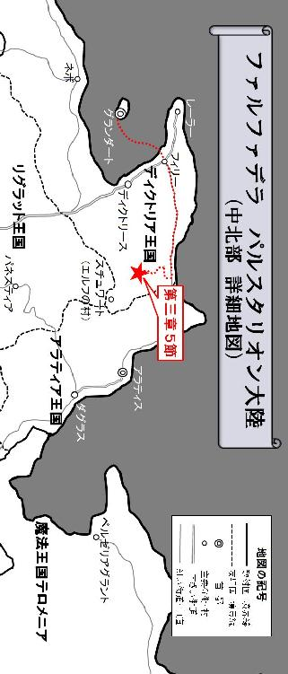
５
それは非常に厳しい旅だった。
森の中の行軍は足場が悪いだけでなく、急な斜面の登り降りを余儀なくされ、常に危険が付き纏った。あれから数日間、細かい雪が降り続いたが、今はもうそれも止んでいる。しかし冒険者達の頭上からは、断続的に大粒の水滴がポタポタと滴り落ち、彼等に不快な感覚を齎していた。木に降り積もった雪が、日にさらされて解け始めていたのだ。
「やれやれ、あまり大雪にならなかったのは良かったが......」
薄く積もった雪を見ながら、ライドは独り言のようにつぶやいた。眩しい雪の反射光に目を細めながら、彼等は今日も地道に前に歩き続ける。賊の襲撃を受け、その追跡から逃れる為に森の中に逃げ込んだ日から、既に二週間が経過していた。普通なら、もうアラティアの首都アラティスに到着していてもおかしくない頃合いである。しかし森の中の行軍は、街道のそれと比較するべくもなく、非常に時間の掛かるものだった。冒険者達は日が昇る方向や沈む位置、そして夜空の星の並びから方角を割り出し、ただひたすらアラティスを目指して進み続けていたのである。
ライドが先頭を行き、そのすぐ後ろにオスカー、少し離れてトリスタンが続いている。そこから更に大きく離れて、テリガルとフィリーネが必死についてこようとしていた。
「おい、髭樽とお嬢様！ また間が空いてるぞ、遅れるんじゃねぇ！」
ライドは、少し目を離すとすぐに遅れて見えなくなってしまうテリガルとフィリーネに悩まされていた。ドワーフのテリガルは背丈が低いぶん足も短い。それに加えて畳んだテントや毛布など多くの荷物を抱えているので、歩みが遅いのはある程度仕方がない。それにしても貴族の娘の体力の無さときたらどうだ？ 更に意外だったのはトリスタンである。ライドは本来、先頭を盗賊である彼に務めて貰おうと考えていたが、思っていた以上に彼は持久力に欠けていたのだ。以前はテリガルだけ遅れ気味だったが、ライドのすぐ後ろに喰らいついているオスカーのように、皆このペースでも付いてくることが出来た。オスカーは賊の襲撃を受けた日に錫杖を失っていたが、それと同じくらいの長さの木の棒を杖代わりにして、息を切らせながら歩いている。そんな神官と比較しても、トリスタンのスタミナはかなり見劣りしてしまうのだ。
「仕方ねぇな、ここら辺で休憩にするか」
ライドは、よく日が差す山間の谷川近くに開けた場所を見付けると、そこで今日最初の休憩をとることにした。そして背負っていた荷物をそこに置くと、周辺から手頃な枯れ木と石を集めて、火を熾す準備を整え始める。オスカーは杖として使っていた木の棒を投げ出すと、その場で座り込んでしまったが、ライドは特にそれを咎めようとはしなかった。
少し遅れてトリスタンが到着すると、ライドは彼に食事の準備をするよう命じた。そして残りわずかになった食料の中から、バターの入った瓶を取り出してそれを手渡す。
「また具無しのバター汁っすか？ もう飽きたっすよ」
「仕方ねぇだろ。干し肉や乾燥食はもう残り僅かなんだ。なんとかこれで凌ぐしかねぇ」
すると、そのやり取りを隣で聞いていたオスカーが話に割り込んできた。
「ライド。まさかとは思いますが、食料の配分を誤魔化してはいないでしょうね？ もっと沢山あった気がするのですが......？」
「お前、何を根拠にそんな事を？ 俺は誤魔化してなんかいねぇ。ちゃんと管理してるぜ」
水は森の中を流れる澤から補給することが出来るが、食料の残量は限られている。ライドは残った食料を二十日分に分けてそれを小出しにしていたが、既に二週間が経過して残りも僅かになっていた。
「何を揉めとるんじゃ？」
そこにようやくテリガルとフィリーネが到着すると、ドワーフはその場の空気を察して声を掛けてきた。フィリーネは息を切らせながら座り込んでいる。
「オスカーが言い掛かりをつけてきやがったんだ、俺の食料の配分が怪しいってよ......」
「別に言い掛かりのつもりはありません。ただ、ライドが適正に食料を配分しているかどうかを証明する方法も無いはずです」
「まぁまぁ、落ち着きましょうよ、お二人とも。あとでカードゲームでもどうっすか？ すぐ仲直りできるっすよ」
トリスタンはバターの入った瓶を手にしたまま、睨み合っている戦士と神官の二人を宥めようとしている。テリガルはその様子を見て深くため息を吐き出しながら口を開いた。
「さすがにこんな毎日が続いておると、だんだん正気を保てなくなってきたようじゃな。みんな空腹に耐えながら歩き続けておるんじゃ。自分だけが大変だと思わんことじゃな」
そう言いながら背負っていた荷物を地面に下ろしたテリガルだったが、オスカーはまだ納得いかないのか、不平不満を口にする。
「テリガル、貴方は平気なのですか？ もしライドが一人で多くの食料を独り占めしていたとしたら、我々は飢え死にするしかないのですよ？」
「オスカー！ お前、言わせておけば！」
「まぁ待てライド。なにもそんなに怒ることは無いじゃろう」
神官の言葉に我慢ならなくなったライドは、思わず反射的に大声を上げていたが、テリガルがそれを制して言葉を続けた。
「もしそうだとしても、その時は俺のために死んでくれ。とお前さんは言えば良いだけじゃ。リーダーは、それくらいでいいんじゃよ」
「俺は食料を誤魔化してなんかいねぇ！」
「じゃが、オスカーの言葉にも一理あろう？ 別にわしもお前さんを疑っておる訳じゃないぞ？ ただ、ライドが適正に食料を配分している事を証明する手段なんて、どこにも無いということじゃ」
ライドはそれを聞くと完全に黙り込んでしまった。そしてテリガルは、今度はオスカーの方を向いて口を開く。
「そしてオスカーも、もしライドが配分を誤魔化していたとしても、その時はそれを受け入れて飢え死にすれば良いだけのことじゃ。もしかしたらそれが、娘を無事ダグラスに送り届ける為に必要な最後の手段であるという、リーダーの判断なのかもしれん。わし等はそれに従うしかあるまい」
それはかなり乱暴な理論に聞こえるが、しかしあながち間違ってもいない。ライドはあの時、似たような判断を下しているのだ。
（ライド、サーシャを探しましょう！ 彼女はまだ近くに居るはずです！ 私達の助けを待っているに違いありません！）
（だまれオスカー！ いいか？ 俺の言うことをよく聞け。今すぐ馬車に乗るんだ！）
それは非情な判断だった。
ライドはあの時、サーシャを探そうとしたら、フィリーネを護り切れないと判断した。だから彼女をあまり探そうともせずに、サーシャを見捨てて馬車を走らせたのだ。
「みんな、悪いが聞いてくれ」
ライドは覚悟を決めて口を開いた。
「ここのところ、極限状態の中での行軍が続いていて、みんなかなり憔悴している。俺は別に食料をちょろまかしちゃいねぇが、あと六日分しか残っていないのが現状だ。そしてあと六日以内に、アラティスに辿り着くのは、今のペースだと多分無理だろう。だが、もう引き返せないくらい森の奥深くまできてしまっている」
ライドはそこまで言うと、テリガル、オスカー、トリスタン、そしてフィリーネの顔を順に見てから言葉を続ける。
「みんな限界なのは分かっている。もう俺のことを信用してくれだなんて言わねぇぜ。俺は、お前等からどう思われても構わない！ ただ何よりも、自分自身が生き延びる為に協力してくれ！」
冷たい森の一角で、リーダーとしての決意をあらたにした冒険者の戦士。それを聞いた仲間達はみな無言だったが、静かに頷いているようにも見えた。
「あっ......」
そんな中、唐突にフィリーネの声が発せられ、皆の注目がそこに集まる。
「どうしたんだ、お嬢様？」
ライドが聞くと、フィリーネはこの開けた場所で日にあたって溶けた雪の隙間を指差しながら言った。
「ほら、見てください。雪の中に草の芽が隠れていました。もう春なのですね......」
彼女がしゃがみ込んだ姿勢のままそう言ったのを聞いて、ライドは思わず身を乗り出し、雪の隙間に芽吹いたというその草の芽を確認する。
「そうか、もう春が間近に迫ってたんだな。でかしたぞ、お嬢様！」
それは、蕗の花芽だった。
ハーブや薬草としても利用されている蕗の芽は、食材として食べることも出来るのだ。ライドはテリガルが運んできた荷物の中から農具を取り出すと、やや興奮気味にその周囲の雪をさらっていく。すると他にも多くの蕗の芽が雪の下に群生しているのを発見した。更に別の場所には土筆も生えている。これも食べることが出来る貴重な食材だった。
「よし、なんとかなるかもしれねぇぞ！」
やがて、他の冒険者達もそんなライドの作業を手伝い始めると、徐々にその探索範囲を広げていき、この日は一日、食材の確保にすべての時間を費やす事になった。旅のペースは遅れているものの、今は前に足を進めることよりも、その為に必要な食料の確保を何よりも優先するべきであると、ライドは判断したのである。そして辺りが暗くなり始めると、今日はこのまま、ここで野営を張ることにした。
------静まり返った夜の森。
見上げると満天の星空が広がる開けた森の一角に、静かに揺れる赤い炎があった。冒険者達のテントの前で焚かれている篝火である。
ライドはテリガルに起こされ、二番目の見張りとしてその焚き火の前に座っていた。まだ万全とはいかないまでも、食料の問題は概ね解決しつつあると見て良いだろう。ライド自身、まさか季節の流れが自分達に味方してくれるとは思いもよらなかった。食料さえ確保できれば、あとは急ぐ必要は無い。ゆっくりでも良いので地道に東を目指し続ければ、いつか必ずアラティアの首都アラティスが見えてくるだろう。
「ライド、お隣よろしいかしら？」
その時、若い娘の声がライドの耳に聞こえてきた。振り返らなくても誰かは分かる。
「またお嬢様か......ゆっくり寝てればいいものを。お嬢様を見張りの交代要員に入れた覚えは無いんだがな。毎晩しっかり休んでねぇから、いつもすぐにバテちまうんじゃねぇのか？」
ライドは一旦立ち上がると、自分のすぐ脇に置いてあったグレイヴで彼女が怪我をしてしまわないように、その長い得物を焚き火の向こう側にある木に立て掛けてから座り直した。ライドが見張りをしている間、フィリーネが起き出してその隣に座るのは、実はこれが初めてではない。いつもテントの間仕切り越しにライドとくっついて寝ている彼女は、その太い左腕にしがみついていないと安心して眠れないと言って、ライドが見張りをしている間、テントの外に出てきてしまうのである。もちろんライドは、ちゃんとテントで休むよう彼女に厳しく諭していたが、まったく言うことを聞こうとしないこの娘の頑固さに折れ、いつしか口うるさく言うのをやめていた。
「......ったく。貴族の令嬢は、冒険者なんて下賤な身分の男と一緒に夜を過ごすなんて。そんな端ない真似は出来ないんじゃなかったのかよ......」
ライドは呆れ顔を浮かべながら、まるで愚痴をこぼすように言った。
「貴族の令嬢......ですか？ そのような大層な御方が、今ここに居まして？」
フィリーネは自分のスカートの裾をつまむと、それをライドに見せながら口を開く。
「こんなボロボロの衣服を着て、ボサボサ頭のままで、しかもずっと湯浴みも出来ず、くさい臭いまで漂わせている......そんな貴族の令嬢が、この世界の何処に居るというのでしょう？ 違いまして？」
彼女の雰囲気がいつもと違うことに気付いたライドは、隣に腰掛けたフィリーネの姿を視界の正面に捉え、その様子を静かに窺った。少女の澄んだ瞳からは、とめどなく涙が溢れ出している。いつも氷のように冷たい顔をしている彼女だが、今はまるで子供が泣くようにその表情を大きく崩して、声を震わせながら言葉を続けた。
「テーブルも屋根も窓もない。そんな殺風景な食卓で野草を食し、夜にはベッドでなくテントで野宿。極め付きはお花摘みも適当にそこらで済ます。こんな端ない娘、もう気品も何もあったものではありません。あなたはそれでも、わたしを貴族の令嬢だと言うのですか？」
「あぁ。間違いねぇ。お嬢様は貴族の令嬢だ」
ライドはそんなフィリーネの言葉に対して、間髪入れずにそう答えた。
「なぜ？ なぜライドはそう思えるの？ わたしには、それが分からない」
少女の頬を伝った涙はポタポタと地面に滴り落ち、そこに積もった雪をゆっくりと解かし始める。そんなフィリーネの涙を指差しながら、ライドは静かに口を開いた。
「なぜなら今、お嬢様は涙を流してるじゃねぇか。本当にお嬢様が俺みたいに下賤な身分の人間だったなら、そんなことで涙を流す必要なんて無いはずだぜ。違うか？」
そう言うとライドは、まるで遠くを睨み付けるようにじっと目の前の焚き火を見つめながら、更に言葉を絞り出す。
「お嬢様は今の現状を受け入れていない。つまりその涙は、貴族としての気品と気高さがお嬢様の中にしっかり宿っている証拠だぜ」
フィリーネは、そんなライドの優しい言葉を聞いていると、心の奥がじわじわと温かくなってくるような気がした。なぜだか嬉しくてたまらない。恥も外聞も、そして貴族としての誇りも、全てかなぐり捨ててしまったと思っていた自分のことを、ライドはまだ認めてくれているのだ。
「本当に？」
それでも何故か不安になって、フィリーネは何度も確認せずにはいられなかった。
「あぁ、何度も言わせるな。俺の言葉に嘘はねぇ。本当だ」
そう言われても、何度でも確認したい。ライドがどう思っているのかを。
「こんなに汚くても？」
「あぁ、お嬢様は汚くなんかねぇ。ちゃんと綺麗だぜ」
そして何度聞いてみたところで、ライドは常にフィリーネが一番望む答えを返してくれる。
「こんなにくさいのに？」
「お嬢様がくさい？ そんな訳ねぇだろが。くせぇってのはな、俺の足みてぇな臭いのことを言うんだぜ」
この戦士は不器用ながらも、確かに自分のことを第一に考え、いつも護ってくれている。そのことを実感したとき、フィリーネはこれまでに感じたことのない不思議な感情が湧き上がってくるのを知覚した。もう、この気持ちを止めることなど出来ない！
彼女は唐突にそれを理解すると、華奢な細い腕をライドに伸ばし、彼の逞しい身体を力一杯抱き締めながら、その耳元でささやいた。
「ありがとう、ライド。結婚相手が、あなただったら良かったのに......」
そんなフィリーネの突飛な行動に、ライドは思わず驚いてその場で飛び跳ねるように立ち上がると、無意識の内に後ずさりしながら口を開く。
「調子に乗るんじゃねぇ！ お嬢様には綺麗なままで居て貰わねぇと、俺が困るだろうが？ お嬢様は嫁入り前の大事な身体なんだ。それに俺はガキには興味ねぇ。何度も言わせるな！」
フィリーネは、さっきまで自分のことを肯定し続けてくれていた戦士に突然拒絶されたような気がして、どこか寂しそうな眼差しをライドに向けた。少女から真っ直ぐな目を向けられたライドは、何故か狼狽せずにはいられない。理由はよく分からないが、このままでは良くないという野性的な直感が働いて、ライドに後ずさりさせているのだ。
そんな時------。
「やはり、そういうことだったんですね！ ライド！」
ライドの背後、テントが張られた方向から、今度はさっきとは違う低い声が飛び込んできた。振り返らなくても誰かは分かる。
「悪いな、オスカー。起こしてしまったか？」
そう言ってライドが振り向こうとした次の瞬間！
ブンッ！
空気を裂くような鋭い音がしたかと思うと、ライドの顔のすぐ横をすれすれに木の棒が振り下ろされてきた！ それはオスカーが昼間、杖代わりに使っていた木の棒だったが、何の変哲もない一本の棒切れでも、棍術の心得のある者がそれを扱えば、簡単に人間を撲殺できる程の殺傷力を持つ、立派な凶器になってしまうのだ。
「危ねぇ！ 何すんだ、オスカー！」
ライドは言いながら、その危険な棒による攻撃が届かない距離まで間合いを広げようとしたが、しかし間に合わなかった！ グレイヴは焚き火の向こう側、少し離れた位置に立て掛けてあるので、それを使ってオスカーの攻撃を受け流すことも出来ない！
「問答無用！ 覚悟なさい、ライド！」
そして鈍い音が発せられたかと思うと、ライドはその攻撃を首と左肩の間に受け、激しい激痛に見舞われていた。オスカーはその棍術を駆使して、本気でライドに襲い掛かっているのだ。そこには確かな殺意があった。
未だその事実を受け入れ切れていないライドは、突然首を襲った激しい痛みに耐え切れず、その場でうずくまるように背中を丸めて防御体勢をとっていた。そんなライドの様子を見てもオスカーは容赦なく、棒切れによる強烈な打撃を浴びせ続ける。ライドは必死に両手で頭を庇いながら口を開いた。
「どういうつもりだ、オスカー？」
「サーシャの無念、思い知れ！」
ゴスッ！
オスカーはライドの脇腹を思いっ切り蹴り上げる。
ライドは堪らずうずくまっていた身体を反転させ、仰向けの状態になったその時、木の棒を構えながら自分を上から見下ろしているオスカーと一瞬だけ目が合った。その鬼のような形相を見て、自分に向けられた強い殺意を感じ取ったライドは、仰向けの体勢のまま神官に問い掛ける。
「サーシャの無念だと？ どういうことだ！」
「貴方はラーイオス家のご息女とサーシャの命を天秤に掛けて、サーシャの命を切り捨てた！ 私は当初、それはご息女が護送対象者だったから仕方ないと思っていましたが、しかしそれは勘違いだった！ 貴方は単に個人的感情を優先させ、サーシャを見殺しにしたのです！ 私は貴方を許さない！ サーシャの無念は私が晴らす！」
「なんでそうなる？ 俺は確かにサーシャよりもお嬢様の救出を優先した！ だが別に俺は、自分の個人的な感情でそう判断した訳じゃねぇぜ！」
ガゴンッ！
ライドがそこまで言ったところで、オスカーは高く掲げた棒切れを思いっ切り振り下ろし、それをライドの腹部にめり込ませた。
「見え透いた嘘はやめなさい！ 私の目は誤魔化せません！ その証拠にいま貴方達はここで愛を語らい、抱き合っていました！ 貴方はいつの間にか護送対象者であるラーイオス家のご息女と特別な関係になり、表向き彼女をダグラスに送り届けるフリをしつつ、実は自分達だけ生き延びることを優先しているのです！ その為にはパーティの仲間を犠牲にすることさえ貴方は厭わない。だからあのとき躊躇いもなく、貴方は長く旅を共にしてきたサーシャよりも、ラーイオス家のご息女の救出を優先した！ 違いますか、ライド！」
腹部に強烈な一撃を受けたライドは、その締め付けられるような痛みでしばらく息をする事も出来ず、声を出すことさえ出来なくなっていた。オスカーは、両手で腹を抑えて隙だらけになったライドの頭部目掛けて、トドメの一撃を叩き込もうとする！
「もうやめて！」
そのとき、フィリーネがライドの身体を庇うように覆い被さると、オスカーの方を睨み付けながら叫び声を上げた。
「もうこんな争い見たくない！ わたしはただ、ライドに構って欲しかっただけで、特別な関係でも何でもありません！ サーシャの犠牲の上にわたしが生かされていると言うのなら、わたしを殺せばいいではありませんか！」
オスカーは木の棒を振り上げたままの体勢だったが、少女の声に気圧されて少しずつ後退していた。サーシャを切り捨てて、自分達だけで幸せを満喫しているライドの姿を見ていると、オスカーはどうしても暗い感情を抑えることが出来なくなってしまう。やがて棒を握る手に汗が滲み始めると、徐々にオスカーはその手だけでなく、全身が震え始めているのを知覚した。
簡単なことだ。
今この棒切れを振り下ろせば、護送対象者は死に、その愚かな戦士を殺害することが出来るだろう。フィリーネとライドを殺せば、いま自分を支配しているこの暗い感情もすべて消え去り、晴れ渡った清々しい気持ちになるに違いない。それを具体的に想像しながらも、オスカーは決して侵してはならないその領域に、あと一歩のところでぎりぎり踏み留まっていた。
「オスカー、もうやめておけ。お前が堕落しちまったら、きっとサーシャは悲しむだろうぜ。それだけじゃねぇ、ロバート爺さんもガッカリだろうよ」
ライドは自分に覆いかぶさっているフィリーネの身体で視界を遮られて、そんなオスカーの姿を見ることは出来なかったが、声だけを彼に投げ掛けた。信仰を失い、堕落してしまった神官には、惨めな末路しか残されていない。神に祈りを捧げることによって発現する奇跡の御業は、その敬虔な信者にしか扱うことが出来ないのだ。堕落した神官はそれらを一切行使できなくなってしまうばかりか、所属する同宗派の教会で受けることの出来る恩恵も全て失ってしまう。即ち、教会から永久に追放されてしまうのである。更に仲間を故意に殺害したとなれば、冒険者ギルドからも登録を抹消されてしまうだろう。聖職者として、そして冒険者としても、もう二度と活動することが出来なくなってしまうのだ。
ライドは地面に横たわったまま、全身の至る所に受けた挫傷の痛みに顔を歪めながら言った。
「これだけ殴れば気も晴れただろう？ 俺を殺せば、サーシャが喜ぶとでも思っていたのか？ だとすれば、お笑い草だぜ」
オスカーはそんなライドを見て怯えたような表情を浮かべると、手に持っていた木の棒を手放し、それを地面に落下させた。結局、その一線を越えてまでライドを殺害する度胸も覚悟も、最初からオスカーには無かったのである。木の棒が地面に転がる乾いた音を聞きながら、ライドは血の味がする口をゆっくりと開いた。
「俺は確かにサーシャを見殺しにした。その責任は全て俺にある。だが、これだけは覚えておけ。俺の中にはライドという俺個人とは別に、もう一人、リーダーとしての責任を背負った俺が居るんだ。このパーティでの判断は、いつもそのリーダーの責任によって決定されている！ 俺を含めた誰かの個人的な感情で決めている訳じゃねぇんだ！ お前の言うことも関係ねぇし、俺の気分や感情にも左右される事なんてこれっぽっちもねぇ！」
そしてライドは上体を起こすと、その鋭い眼光をオスカーに向けながら更に言葉を続ける。
「たとえお前の提言に俺が乗ったとしても、それはお前の意見が通った訳でも、俺がお前の意見に従った訳でもねぇ。全てはリーダーの判断で決めたことだ！ この苦痛、この葛藤。この苦しみは全て、リーダーである俺のものだ！ お前なんかにくれてやるものか！」
ライドは自分自身にも言い聞かせるように、力強くそう言った。オスカーはまるで放心状態に陥ったかのようにその場で崩れ落ちると、座り込んだまま完全に動かなくなってしまった。フィリーネは戦士の無事を確かめようと、恐る恐るその逞しい肉体に手を当てる。そしてライドが無事であることを悟るとようやく安心したのか、その身体にしがみついて、いつまでも離れようとしなかった。
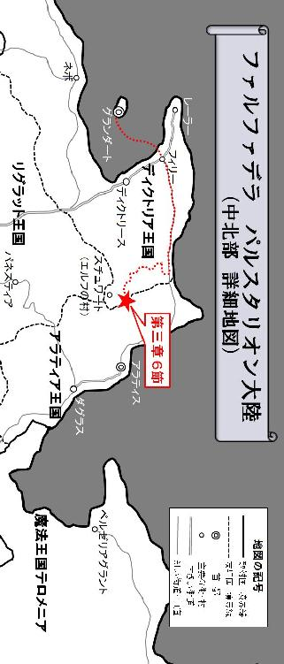
６
重苦しい空気が漂う中、冒険者達はただ黙々と森の中を歩き続けていた。
既にライドは、この森に入ってから何日が経過したのか、その正確な日数を把握していない。食料の問題がある程度解決したことで、ライドは残り日数を気にしながら慌ててアラティアを目指す必要がなくなったのである。何よりも行軍のペースを緩めることで、荷物の多いドワーフのテリガルや、体力の少ないフィリーネとトリスタンに歩調を合わせて進むことができる。ライドはいつも自分のすぐ後ろを歩いていたオスカーに、突然背後から襲われることを警戒していたのだ。ペースを落として全員で纏まって移動すれば、その危険性を幾分か軽減する事ができる。
あれからライドは、オスカーと一言も口をきいていない。
別にオスカーのことを無視している訳ではないが、特に話すべきこともなかった。
冒険者パーティにおいて、仲間同士の確執や諍いなどから生まれる衝突というものは、別に珍しいことではない。だが、己の得意とする武器や魔法を用いて、故意に仲間の命を奪おうとする行為は、特に軽蔑されるべき行為であることは言うまでもない。もし冒険者が仲間同士で本気で戦った場合、どちらかが死んでしまってもおかしくないのだ。たとえ死に至らなかったとしても、無傷で済むことなど絶対に有り得ない。
ライドもその例に漏れず、全身打撲の大怪我を負っていた。
フィリーネは今回の一件。自分が一枚噛んでいることに責任を感じたのか、おぼつかない手付きながらも必死にライドの怪我を布で縛って応急処置を施し、ひとまず今は落ち着きを取り戻している。しかしオスカーは、ライドが大怪我を負っているにも関わらず、決して回復の祈りを行使してその傷を癒やそうとはしなかった。ライドとオスカーの衝突によって生じた傷は、肉体的なそれだけでなく、二人の心にも深い傷跡を残していたのである。
フィリーネは、あの時オスカーが凶器として用いた木の棒を彼から取り上げると、自分自身の杖として使っていた。棍術の使い手であるオスカーがその気になれば、森の木の枝を使ってすぐに新しい凶器を作ることも出来るが、しかしだからと言ってフィリーネは、あの時の木の棒をオスカーに持たせたままでは到底安心できなかったのである。ライドは見張り中に起こったオスカーとの衝突の詳細を、テリガルとトリスタンには特に説明しようとしなかったが、彼等もそれを察しているのか、特に質問されることもなかった。
それにしてもライドは、ドワーフのテリガルと、そしてフィリーネの歩みの遅さに驚かされたものだ。実際にこの二人と歩調を合わせてみて、ライドは初めてそれを実感せずにはいられなかった。テリガルは物理的に足が短いので仕方がないとして、フィリーネのこの遅さはどうだ。女性冒険者のサーシャとアナンダはそんなことなかった。少なくとも盗賊のトリスタンよりも、彼女達の方がしっかりした足取りでライドのペースについてきていたものだ。ライドは当初、息を切らせながら必死に歩いているフィリーネを見て、彼女の体力に問題があるのではないかと考えていたが、今はそれが誤りだったことを認めて考えを改め直している。むしろサーシャやアナンダといった女性冒険者達が、如何に一般人から掛け離れた規格外の体力の持ち主であったかを、ライドは今更のように思い知らされていた。普通の女性、ましてやまだ子供のフィリーネは、歩くのが遅くて当たり前なのだ。
「おい、大丈夫か？」
その時、フィリーネが杖代わりに持っていた木の棒を手放してしまい、それが地面に転がる乾いた音がしてライドの歩みを止めさせた。
「はぁっ、はぁ......だい......はぁ......じょう......はぁ」
大丈夫、と答えようとしているのだろうか。白い息を切らせながら答えた彼女は、かなり苦しそうに見える。ライドはフィリーネが地面に落とした木の棒を拾い上げようと、それに手を伸ばした時、彼女も同じタイミングでそれを拾おうとした為に二人の手が一瞬重なった。その時ライドは、フィリーネの手が異様に冷たいことに驚かされ、杖ではなくその手を握って彼女をゆっくりと立ち上がらせる。
「無理すんな。あまり美味くはねぇが、食料を心配しなくても良くなった分、もう急いで森を抜ける必要もねぇんだ。少し休憩にするか？」
ライドはフィリーネに聞いたが、彼女は首を横に振って答えた。
「はぁはぁ......わたしは......はぁ、大丈夫です。それよりも、はぁはぁ......わたしのせいで大幅に遅れて......はぁっ......いるのが気になりますわ。はぁ......さぁ、行きましょう」
少しずつ春の足音が近付いてきているものの、まだ空気は肌に突き刺さるように冷たい。その冷気は、フィリーネから体温と体力を少しずつ奪い取っていたのだ。サーシャは以前、ライドに言っていた。
（ライド、人はみんな、あなたみたいに強い訳ではないのよ。あなたは自分が強いから、弱い人の気持ちが分からないの）
既に体力の限界を超えていたフィリーネは、精神力だけで何とかその足を前に進めようとしている。それを見てとったライドは、自分が背負っているバックパックを大きく揺すって一度しっかり背負い直すと、フィリーネの身体を後ろからヒョイと抱え上げた。そしてまるでお姫様にするように、両手で肩と膝裏を支えて横向きの状態に抱きかかえる。
「ちょ、ちょっとライド？ 下ろしなさい！ それにあなたはまだ怪我が......」
フィリーネは戸惑いを隠せない様子で顔を赤らめながら言ったが、以前のように暴れたりする事はなかった。
「いつも無理させて悪ぃな......」
ライドはそんなフィリーネに対して、申し訳ない気持ちでいっぱいだったのだ。
------それから更に数日が経過した。
日は徐々に長くなり、空気が少しずつ暖かくなってきているのを、冒険者達は皆肌で感じ始めていた。ライドの傷は少しずつ回復しつつあるものの、まだ完璧な状態とは言えなかった。
「本当にこれで、アラティスに辿り着けるんすかね。正直オイラ、不安で仕方ないっすよ......」
最近トリスタンはかなり弱気になっていた。とにかく街が恋しくて仕方ないのか、まるでホームシックに掛かった子供ように、彼は事ある毎に不安を口にするようになっていたのだ。そんな盗賊に向かって、テリガルは豪快に笑いながら言った。
「なぁに、前に進み続けている限り、いつか必ずこの森を抜けるだろうよ。アラティスに着いたら気が済むまで肉を喰って、思う存分酒を浴びるんじゃ」
野草ばかりの食事にいい加減飽きていたテリガルは、トリスタンとは対照的に現状を楽観視していたものの、秘蔵の酒も尽きてしまい、早く街に辿り着きたいという気持ちの面では盗賊と一致していた。そんな会話を聞きながら、フィリーネは口元に手をあててクスクスと笑っている。初めて会った頃は氷のように心を閉ざしていた彼女も、暖かい空気に触れて解け始めた雪と同じように、今では冒険者達の輪の中に溶け込み始めていた。
しかし逆に、心を閉ざしてしまった者も居る。
オスカーはあれから完全に無口になってしまっていた。心ここにあらずといった様子で、ライドだけでなくパーティメンバーの誰とも会話を交わそうとしないのだ。ここ数日間、必要最小限の言葉だけは発するものの、それ以外のことは一切何も喋ろうとしない。時々口を開いたかと思うと、独り言のような小さな声で、誰かと話しているような姿も度々見受けられた。オスカーは、サーシャの遺品となった短弓を大事そうに両手に抱きかかえ、いつも肌身離さず持っていた。
「ちょっと待て！ 何者かが俺達を監視しているようだぜ」
その時ライドは異変を察知して、皆に警戒を呼び掛けた。冒険者達とフィリーネは、それを聞いて足を止める。
「トリスタン、お前気付かねぇのか？ どうも変だ。まさかと思うが、あの賊が追い掛けて来た訳じゃねぇだろうな？」
そう言ってライドは盗賊の方に目を向けたが、トリスタンは首を横に振りながら答えた。
「こんな森の奥深くまで賊が追い掛けて来るなんて、考えられないっすよ」
静まり返った森の中。
ライドはその気配を確かに感じ取っていたが、しかし盗賊のトリスタンをはじめ、他のメンバーはそれに気付いていない様子だった。ライドは周囲を警戒しながら一歩前に足を踏み出そうとした、その時！
突然、どこからともなく矢が放たれてきたかと思うと、ライドが進もうとしていた足元の手前に突き刺さり、戦士の歩みを強制的に止めさせた。そして威嚇するような鋭い声が、冒険者達の耳に飛び込んでくる。
「止まれ、愚かな人間共！ それ以上この聖域に土足で入ることは許さん！」
木の上に立つ男が、高らかに声を張り上げて冒険者達に警告を発した。ライドはその姿を見た瞬間、以前森の中で戦ったダークエルフの事を思い起こしていたが、しかしよく見るとその肌や髪の色が異なっている。ダークエルフは黒い肌に銀髪という姿だったが、そこに現れた男はサラサラの金髪に明るい肌の持ち主だったのだ。テリガルはそれを見て注意を呼びかけた。
「こりゃまずいぞ、ここはエルフ族の森じゃ！」
気付くと前方に見える木々の上に、彼等は次々と姿を現していた。その数は冒険者達の人数を優に超えている。そして全員が軽装ながら弓で武装されていた。彼等は人のような姿をしているが人間ではなく、特徴的な尖った耳を持った森の種族、エルフ族だったのだ。
「なんだ、汚らしいドワーフまで居るではないか。人間と行動を共にするとは......誇り高き岩の種族も、堕ちるところまで堕ちたものだな？」
最初に姿を現したエルフのリーダーらしき男は、ドワーフのテリガルを侮辱するような言葉を吐くと、手で冒険者達を指し示して同胞達に指示を送る。その瞬間、エルフ達は統率のとれた動きを見せ、全員が一斉に矢を番えて弓を冒険者に向けて引き絞り始めた。
「この森は我らエルフ族の聖なる領域。何人たりとも、この森を汚す事は許されぬ！」
雲行きが怪しくなってきたのを感じ取ったライドは、声を張り上げて言葉を返す。
「待て！ 別に俺達はお前等の森を荒らしに来た訳じゃねぇ！ たまたま森の中を通っていたら、知らない内にお前等の森に足を踏み入れちまっただけの事だぜ！」
「黙れ人間！ 自分達の縄張りを拡げることしか考えていない人間の言うことなど、信じられると思うのか？ 恥知らずな人間共が。お前達人間はこのファルファデラに勝手に線を引き、世界をまるで継ぎ接ぎだらけの人形のようにしてしまったではないか。今やこの地上にお前達人間の縄張りがない場所など存在しない！ これだけ世界を支配しておきながらまだ飽き足らず、我らの森を侵そうと言うのか！」
どうも話が噛み合っていない。ライドは自分達の置かれた状況を正確に把握し、その背中に冷たい汗が伝っていくのを知覚した。前方に広がる木の上で弓を構えている大勢のエルフ達。もしこの状況下で彼等がその気になったら、ライド達は凄まじい矢の雨にさらされ全滅してしまうだろう。
「だから誤解だと言ってんだ！ それにそんな昔の話、俺に言われても困るぜ。知らずにお前等の森に入ったことは謝る。さっさと出ていくから、ここは見逃してくれ！」
「お前には、征服を繰り返した己の過去に対する自覚が無いのか？ かつて我らの森を次々に蹂躙し、その聖域を土足で荒らし回ったその歴史を忘れてしまっているばかりか、言うに事を欠いて、知らずに我らエルフの森に入ったとは......無知もここまでくれば甚だ哀れなものよ！」
エルフ達を束ねるリーダーと思しき男は、語気を荒げて怒りの表情を露わにした。
（このままではマズいな......）
ライドが思ったその時だった！
「おお、やはり神はまだ私達を見捨ててはいなかったのですね！」
突然ライドの後ろに立っていた男が、フラフラと前に歩み出始めたのだ！
「おい、オスカー！ 危ねぇぞ！ 下がれ！」
ライドは突然の神官に行動に驚き、注意を呼びかけた。他の冒険者達も何が起こっているのか分からない様子である。
「何を言っているのですか、ライド。相手は尊敬に値する森の種族、エルフ族ですよ？ 私の信仰する神ガルフィンの教義にはこうあります。相手に尊敬の念を抱き、相手の意志を尊重して、目と目を合わせて心から話し合えば、人は必ず分かり合えるのだと！」
オスカーはそう言いながら、更に前に歩み出た。制止するライドより前に出て、それでもエルフ族の方へとじわじわ一歩ずつ近付いていく。エルフ達はその神官に弓を向けると、弦を大きく引き絞り始めた。
「待て！ オスカー！」
「ほらサーシャ、ご覧。エルフ族ですよ？ 貴女が楽隊を作って一緒に演奏したいと夢見ていた正真正銘のエルフ族が、いま目の前に居るのです！」
そしてオスカーは、両手に持っていた短弓を横向きにして、その中にあるリラを奏でようとする。しかし調律されていないその音は、もはや楽器のそれではなく、鈍い不快な音を立てて冒険者達とエルフ族の耳を刺激した。
既にオスカーは、ライド達より十歩以上も前に歩みを進めている。これ以上エルフ達に近づくのは危険だ。そう察知したライドは、精一杯の声を張り上げてオスカーを呼び止めようとする。
「オスカー！ よく前を見ろ！ 相手はお前に弓を向けてるんだぞ！」
しかしオスカーは、リラを高く掲げてエルフ達に呼び掛けた。
「さぁ、エルフ族の皆様！ 私は決して貴方達に敵対するような者ではありません！ この通り、武器も持っておりません！ 幸運の神ガルフィンの名の元、貴方達にも大いなる幸があらんことを希って、今後の互いの発展の為に、大いに語り合おうではありませんか！」
そんなオスカーの動きは、当然エルフ達を束ねる男にも見えていた。部下は彼に指示を仰ぐ。
「クーサリオン様！ 人間が不審な動きを！」
「人間の尖兵は最も警戒しなければならない危険な存在だ！ 我らの聖域が人間共に割れたとなれば、近い内に大挙して押し寄せ、全てを略奪しようとするであろう。殺せ！」
その命令はエルフ達の間だけでなく、ライドの耳にも届いていた。
「木の裏に隠れろ、髭樽頼む！」
ライドは堪らずテリガルにそう指示を飛ばすと、オスカーの方に駆け出した。
「おお神よ、人間とエルフ族という、このような奇跡の巡り合わせを与え給うたことに感謝します！」
次の瞬間、木の上から一斉に矢が放たれ、その雨がオスカーとライド目掛けて降り注ぐ！
「オスカー！」
ライドはオスカーに自分の身体をぶつけながらその場に転がり込んだ。左腕、右足、そして右胸部にそれぞれ一本ずつ、合計三本の矢がライドに突き刺さっていた。しかし不思議なことに痛みはあまり感じない。それよりも今はオスカーのことが気掛かりだった。ライドは素早く起き上がると、自分が突き飛ばしてうつ伏せに倒れた神官のもとへと駆け寄った。オスカーは背中と肩に矢を受けていたが、命に別状はないようだ。ライドはその手を握って神官を引き起こそうとしたが、オスカーは力無く言った。
「......ライド、私はもう......生きていても仕方ありません。......サーシャが居なくなってしまったこの世界では......もう幸せを感じることなど出来ないでしょう......」
赤く染まった白い法衣のフードの中から聞こえてきたオスカーの声。ライドはその身体を無理矢理引き起こそうとしながら、彼を鼓舞するように言った。
「抗え！ お前はまだ、生きてるだろうが！」
一刻も早く近くの木の影に隠れなければ、エルフの弓兵達の二射目が放たれてしまう。そうなると二人共ただでは済まないだろう。しかしオスカーは全く動こうとしない。その間にエルフ達は、次の矢を番えてそれを放とうとしていた！
「くそっ！」
ライドはこのままでは二人共串刺しになってしまうと悟り、オスカーの手を離して素早く身を翻すと、近くにあった細い木の影に身を隠す。
次の瞬間、激しい矢の雨が降り注いだ！
細い幹の裏に隠れていたライドは、隠しきれていなかった左肩に新たな矢が刺さり、その痛みで顔を歪めた。そしてライドは、うつ伏せに倒れたままの神官の姿を見て絶句する！ この場から逃げること------否、生きることを放棄したオスカーは、数え切れないほどの矢をその背中に受けていたのだ！
「死を呼ぶライド......最後に、私の死を......呼んでくれたのですね。......感謝します」
オスカーはライドにそう告げると、血を吐き出しながら息絶えた。正面に立ち並ぶ木の上で陣取っているエルフ達は、更に次の矢を番え始めている。後ろに目を向けてみると、少し離れた位置にある太い木の根本に、大きな鉄の板が立ててあるのが見えた。それはテリガルの大盾である。冒険者達はその裏に潜んで、ライドとオスカーが戻ってくるのを待っているのだ。
「......馬鹿野郎が！」
ライドはオスカーの亡骸に向かって吐き捨てるように言った。生きる意志を持たない者を生かすのは至難の業なのだ。フィリーネは、テリガルが構えた大盾の裏側からその様子をじっと見つめていた。彼女の脳裏には今、いつかライドが自分に言った言葉が蘇っていたのだ。
（生きることに執着しろ。そして死に全力で抗え。お嬢様が生きる希望を捨てない限り、俺は絶対にお嬢様を護りきってみせるぜ）
ライドは踵を返すと、テリガルの盾を目指して一目散に逃げ出した。オスカーが本当に語り合うべきはエルフ族などではなく、ライドだったはずなのだ。そしてライド自身も、もっとオスカーと腹を割って話すべきだった。しかし二人共それに気付くのが遅すぎた。オスカーは生きる希望を無くしてしまい、自ら死を選んだのである。
（死を呼ぶライド......最後に、私の死を......呼んでくれたのですね）
オスカーが言った最期の言葉がライドの頭の中に響き続けている。ライドは最後の最後になって、ようやくオスカーの本心を聞くことが出来たような気がした。
「なるほどな、オスカー。『死を呼ぶライド』とは、仲間の死を呼ぶという意味だったのか。違いねぇ！」
ライドはテリガル達と合流すると、エルフ族の弓兵部隊に背を向けて走り出した。トリスタンは必死の形相で、その矢を回避できそうな影を探し続ける。フィリーネはライドの身体に刺さったままになっている四本の矢を見て、思わず顔を伏せていた。テリガルは大盾を引き摺りながら、退路を進むパーティの殿を務める。
ヴェリス、アナンダ、サーシャ、オスカー。ライドはこの短い期間で命を落としていった仲間の顔を思い浮かべながら考える。あまりにも多くの仲間の命が喪われてしまった。仲間の命に責任を負う立場にあるリーダーの自分は、その一つ一つの死に対して、一体どんな手段でそれを防ぐ事が出来たのだろうか？ 自分はどこで選択を誤り、彼等の死を招いてしまったというのだろうか？ その分かれ目は、一体どこだったのだろうか？
どんなに考えを巡らせてみても、その明確な答えは見付からなかった。ただハッキリしているのは、今この場を逃げ切らなければ、自分も死ぬということだ。そしてライドは考えるのをやめた。もうこれ以上仲間を死なせたくない。エルフ族の追撃から逃れながら、ライドはただ、今を生き抜くことだけに神経を注いだ。
追憶４
------小さな農村アルギニアス。
そこはアルギニア王国を縦断する街道の中継点にある小さな村で、その東側に広がる豊かな森の中に造られた大きなお屋敷を、人々は『杜の館』と呼んでいました。このお屋敷は、アルギニア王国の王族のみが入れる聖域ですが、今のわたくしにとってそれは正に鳥籠でした。
杜の館に幽閉されてから約半年。
春先に催されたリグラットの華やかな宴の席が嘘であったかのように、寂しい景色が自室の窓から外を眺めるわたくしの目の前に広がっていました。既に森の木々は葉を落とし、薄っすらと雪化粧を纏っています。どこからか隙間風が入ってきて、わたくしの冷え切った心を更に凍えさせました。わたくしはただ、あの日のことを思い返しては、その灯火を頼りに自らの心を温める。そんな孤独な日々を過ごしていたのです。
それは幽閉と言うよりも、むしろ監禁と言った方が近いかもしれません。
お父様から杜の館に入るよう言い渡されたわたくしは、この敷地内を自由に歩き回ることはおろか、お屋敷内の部屋の移動さえも許されず、ただ自室の中に閉じ込められていました。あの御方の子を宿したわたくしの身体は、既に誰の目から見てもそれと分かる状態になっていましたが、それを決して誰にも知られてはならないというお父様の言い付けを守るため、わたくしは自分の部屋の中にずっと閉じ込められていたのです。この事実は、館の召使い達の中でも唯ひとり、メイド長のヴァレリア婆にしか知らされていないようでした。
そんなある日、いつものように窓から外を眺めていたわたくしの目に、ひとつの人影が映りました。
白く染まった景色の中をゆっくりと歩いてくる人の影。降り積もった雪と全く同じ色をした純白の法衣を纏っているその神官が誰なのか？ 最初わたくしには皆目見当もつきませんでした。王族と、その専属の召使いしか出入りすることのないこのお屋敷に訪れる者など限られているのです。お父様なら兎も角、たとえ聖職者とは言え、縁もゆかりもない神官がこの館に入ることなど、普通は許されることではありません。しかし驚いたことに、その神官はお屋敷の門で召使い達と一言二言会話を交わしたあと、あっさりと中に通されました。一体誰なのでしょうか？ わたくしは特に理由もなく、何故か不安な気持ちに駆られました。
ココン、ココン。コココン。
そして暫くした後、わたくしの部屋の扉をノックする音が聞こえてきました。
ノックの音は、二回、二回、三回と分けて叩くヴァレリア婆のいつもの合図です。この合図が聞こえたときだけ、わたくしは無言で扉の鍵を開けるという決まりでした。
そして扉を開けたとき、目の前には、さっきの白い神官が立っていました。
彼は無言のまま部屋に入って扉を閉めると、そのまま勢いよくわたくしに抱き付いて、外に聞こえないように声を押し殺しながら言いました。
「お姉様、無事でよかった。僕はずっと不安だったのです。お姉様の姿が突然見えなくなってしまって」
その神官は、弟のレスだったのです。
わたくしは驚きながらも、レスの頭を撫でて弟を安心させようとしました。
「ごめんなさい、何も言わずに居なくなってしまって......外は寒かったでしょう？ ちょっとお待ちになって。いま、温かいお茶をいれますわ」
するとレスはハッとしたように顔を上げて、切迫した表情を浮かべながらお茶をいれようとするわたくしの動きを止めさせようとしました。
「僕の事は気にせずに。どうかお姉様は、じっとしていて下さい」
そしてレスはわたくしの身体を強く抱き締めて、強制的にわたくしの動きを封じ込めました。考えてもみれば、今のわたくしの姿を見ても特に驚いた様子を見せないレスは、何かを知っているに違いありません。わたくしがライネック様の子を身籠ったことは、本来、弟も知らないはず。わたくしはレスが、何をどこまで知っているのかが気になって、彼に聞きました。
「レス。あなたは、わたくしの事を何と聞いているのですか？ お城では、わたくしが突然居なくなってしまったことについて、どのように説明されているのでしょうか？」
すると弟は、うつむいて苦しそうに答えました。
「お城では、お姉様が体調を崩されたので、しばらく杜の館で静養するという説明がされています。お父様と宰相を除いて、誰もお姉様の本当の状態を知っている者は居ないでしょう......」
しかし、どうもレスの様子がおかしいので、わたくしは少し質問を変えてもう一度聞きました。
「そう......でも、あなたは色々と事情を知っているように見えますね？ あなたは一体、何をどこまで知っているの？」
すると弟は顔を上げて、わたくしの目を見て答えました。
「僕は聞いてしまったのです。お父様と宰相が謁見の間で、お姉様の身籠った子の処遇について相談しているところを」
「ということは、あなたは全てを知っているのね？」
わたくしの質問に対してレスは静かに頷いてみせたあと、驚くべき事実をわたくしに告げました。
「はい。最初は盗み聞くつもりはありませんでした。ただ、お父様が突然お姿を見掛けなくなってしまったお姉様の名を口にされたので、僕は思わず立ち止まってその会話を聞いてしまったのです。お父様は仰ってました。グライオン家との婚約解消は免れられないと。しかもその上で、お姉様にその子を産ませる訳にはいかないとも......。このままお姉様がこの杜の館に留まり続けると、大変なことになってしまいます！」
「大変なこと？ どういうことでしょうか？」
「お姉様が身籠っている子は、神の祝福なき穢れた魂であると、お父様は仰っていました。そして、そんな子をお姉様が産んだという事実はあってはならない、その子は最初から存在しなかったことにする......つまり殺害するのだと！」
わたくしは愕然としました。さっきからずっと感じていたわたくしの不安は、的中していたのです。
「まさか、お父様がそんな事を？」
「間違いありません、僕は確かに聞いたのです。お姉様には表向きの罰として、その子の母親として共に生きていくことを一切禁ずると仰っていました。そしてその穢れた魂は浄化するのだと。そうすれば、その子は最初から存在しなかったことになると言うのです！」
そして弟は涙を流しながらわたくしに訴えました。
「なんと恐ろしいことでしょうか......お姉様、そうなる前に、早くこのお屋敷から逃げて下さい！」
それを聞いて、わたくしは覚悟を決めました。弟の言っていることは恐らく真実でしょう。お父様は本気に違いありません。わたくしは、ライネック様のもとに行くことはおろか、産まれくる子の母親として、その子を育てることさえも許されなかったのです。お父様は最初から、わたくしにとって最も受け入れ難い罰を課すことを考えていたのでしょう。そしてわたくしは、ひとつの答えに行き着きました。
「分かりました。わたくしはその罰を受け入れましょう」
それを聞いて、弟は愕然とした表情を浮かべました。
「お姉様？ 正気ですか！」
「レス？ それなら逆に聞きますが、逃げると言っても、あなたはわたくしがどこに逃げれば良いと言うのですか？」
そう。わたくしに逃げる場所なんて、最初から存在しないのです。しかしレスは答えました。
「お姉様が身籠った子は、リグラットのライネック王の子なのだと聞きました。それに、お姉様自身、ライネック王のもとに行きたいと、お父様に仰ったそうではありませんか！ それなら、お姉様は今直ぐリグラットに逃げるべきです！」
「口で言うのは簡単ですが、今の身重なわたくしが遠いリグラットまで行くなんて、決して容易なことではありません。このお腹の子......もう何時産まれてきてもおかしくないのですよ？」
優しいレスは、どこまでもわたくしの事を気遣ってくれているようでした。わたくしにとって最も厳しい罰を課そうとするお父様とは対照的に、弟はわたくしが最も望む方向に導こうとしてくれているのです。
「それはご心配には及びません。僕は今日その為に、ここに来たのです！」
「どういうこと？」
彼には、何か妙案があるとでも言うのでしょうか？ わたくしは弟に聞き返しました。
「実はディクトリアの冒険者ギルドに、お姉様をリグラットまで護送して貰うよう、僕が水面下で依頼しておいたのです。こんなこと、アルギニア国内の近衛騎士にはもちろん、リグラットやディクトリアの正規軍にはとても要請できません。でも冒険者なら話は別です。きっとこの依頼の秘密を守り通してくれるでしょう」
冒険者？ わたくしは聞き慣れない言葉を耳にして弟に訪ねます。
「冒険者とは、何でしょうか？」
「そうですね......分かり易く説明するなら、様々な問題を金銭で解決する小集団です。と言っても、金さえ積めば悪事にも加担するという訳ではありません。冒険者は、あくまで国が運営する機関『冒険者ギルド』によって管理されています。小規模な傭兵隊、或いは自警団といったところでしょうか」
そういえば、わたくしも聞いたことがありました。この頃、よく吟遊詩人の歌う英雄譚の中に、貴族や騎士とは全く異質の存在。冒険者の中から誕生したという全く新しい英雄を題材にした歌が流行っていることを。
「ディクトリア王国は、度重なるジアンティス帝国からの侵攻に対応する為に、正規軍の多くを国境付近に展開しています。しかしそのせいで、ディクトリアは国内の小さな事件に人員を割けなくなり、冒険者ギルドを設立。冒険者ギルドは腕の立つ有志を募って、国内の様々な問題に対処しているようです。その活躍はディクトリア内に留まらず、今や世界中に拡がりつつあります」
そう、間違いありません。わたくしが宮廷で聞いたあの冒険者の英雄譚は、決して夢物語などではなく、実在する冒険者ギルドがモチーフにされていたのです。わたくしは実際に見たことはありませんが、もし冒険者がその噂通りの存在なのだとすれば、彼等にわたくしの願いを依頼すれば、全て上手くいくに違いありません。
「そのディクトリアに登録されている冒険者パーティの中でも、今回、特に選りすぐりの精鋭を送って貰いました。そのパーティの聖職者は変わり者ですが、医者としても優秀で、赤子を取り上げた経験もあるとのこと。いま彼等には、杜の館の敷地内にある離れ家で待機して貰っています。お姉様は彼等の護衛のもとに、安心して此処からお逃げ下さい！」
それはわたくしにとって、予想だにしていなかった方法でした。なんとレスは、冒険者ギルドに依頼して、身重なわたくしをリグラットまで護送するという計画を立てていたのです。しかも冒険者達は、既にこのお屋敷の離れ家で待機していると言うではありませんか。それなら此処からリグラットまで逃げ出すことも、或いは可能かもしれません。
「あゝ、もし本当にそんなことが許されるなら、どんなに素敵なことでしょうか！」
「それではお姉様、今から離れ家に行きましょう！」
わたくしは、心の底から感動を覚えました。どこまでもわたくしの為に尽力しようとする弟の優しさに、思わず涙が溢れそうになりました。
「ありがとう、レス。でも、わたくしはここに残ります」
「え？ お姉様、どうしてですか？」
わたくしはもう、覚悟を決めていました。弟の提案にそのまま乗る訳には参りません。
「わたくしは罪を犯しました。それは紛れもない事実なのです」
「そんな！ だからと言って、あえてお父様の罰をそのまま受ける必要はありません！ お姉様のしたことは、確かに神の教えから外れたことかもしれない。でも、お姉様が身籠っている子に罪はありません！ 産まれくる新しい命の芽を摘んで最初から無かったことにするなんて、それこそ神の教えから外れた行為に違いありません！」
「ほら、今あなた自身の口から答えが出たではありませんか。お父様がわたくしに課そうとしている罰は、確かに神の教えから大きく外れたものだと思います。でもそれ以前に、わたくし自身も神の教えから外れたことをしてしまったという事実からは、免れられないのです。わたくしは、罰を受けなければなりません」
「------それでは、その子はお父様に殺されてしまいます！ お姉様は、それでも良いと言うのですか？」
「レス、勘違いしないで。わたくしが受ける罰は、あくまでわたくし自身の罪を洗い清める為のものです。わたくしは許婚を裏切り、ライネック様と許されぬ情事に溺れてしまった。それがわたくしの罪。その罪を認めて神に赦しを乞うのなら、グライオン家との婚約を解消することも、リグラットに行くことを禁じられることも、そしてこの子と共に生きていくことを一切禁ずることも、すべて受け入れるしかありません」
弟は愕然とした表情を浮かべて硬直していましたが、わたくしの本当の意図までは読み取れていない様子でした。だからわたくしは、わたくし自身の覚悟を弟に告げました。
「ただし、この子に罪はありません。この子には、誰にも手を掛けさせませんよ」
それは、わたくしの中に突然閃いた妙案でした。それと同時にもしあの時、弟のレスが冒険者達を連れてきてくれなかったら、絶対に思い付かなかった光明でもありました。
「一体どうやって？」
「簡単なことです。レスが連れてきてくれたという選りすぐりの冒険者達。彼等にこの子を護送して貰いましょう」
「なんですって！ お姉様、本気ですか？」
「本気です。冒険者に依頼するのは、わたくしの護衛ではなく、わたくしの子の護衛。これで、全てが上手くいきますわ」
わたくしの目をじっと見つめるレスは、その気持に偽りが無いことを悟ると、あくまでわたくしの事を案じているのか、不安に満ちた表情を浮かべながら訴えました。
「お姉様はどうされるのですか？ そんなこと、お父様は絶対に受け入れてくれません！ きっとどこまでもその子を追い掛けて、なき者にしようとするでしょう」
「それはご心配には及びません。わたくしの精神的な負担が災いし、流れてしまったことにすれば良いのです。幸い、わたくしはこの事実を伏せるために、ずっと此処から外に出ていません。わたくしがいつ、どんな子を産んだとしても、誰もその事実を知り得ないのです。そうすれば、最初からこの子は存在しなかったことになる。それこそ、お父様の望み通りではありませんか」
レス。ずっと小さな子供だと思っていた弟は、いつの間にか頼もしい神官になっていました。
「......確かに、あの冒険者達なら秘密を守った上で、如何なる追っ手からもその子を護り抜いてくれるでしょう。しかし、お姉様はそれでも良いのですか？ そんな事をしてしまったら、お姉様はその子と共に、健やかな時間を過ごすことも出来なくなってしまうのですよ？」
「もちろん、心得ています。でも、それがわたくしに課せられた罰ならば、受け入れるしかありません。レス、冒険者の皆様には少し長くなるかもしれませんが、しばらくの間、その離れ家に滞在してもらって下さい」
どこまでもわたくしの事を第一に考えてくれるレスに、わたくしは感謝の念を抱かずにはいられませんでした。それはわたくしにとって、まさに神の救いの御手。
「それから、もしお父様がお見えになった場合には、今は会いたくないと伝えて面会を謝絶して貰って下さい。子を流してしまった直後の傷心だったと、あとで辻褄を合わせることも出来るでしょう」
きっと彼は次期国王として、お父様以上にこの国を立派に治めることになるでしょう。このとき既に、わたくしには見えていました。弟が、アルギニアの歴史に名を残す程の偉大な王になることが。
「レス、ほんの少し見ない間に見違えましたよ。本当に立派な神官になって......姉はあなたの事を、とても誇らしく思います」
第四章 情熱の氷
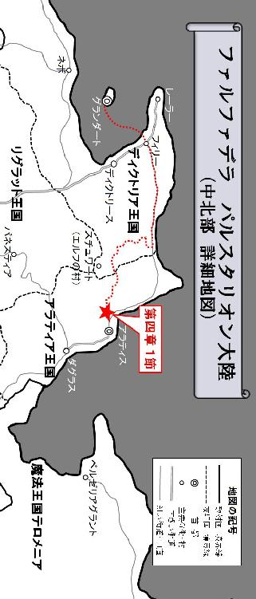
１
森の奥深くでエルフ族と遭遇した日から、更に数週間が経過していた。あの後、オスカーがどうなったのかは分からない。極端なまでに人間のことを警戒していたエルフ達だったが、逃げる冒険者達をどこまでも追い掛けてくる事はなかった。あの時ライドが受けた矢による傷はまだ完治していないものの、少しずつ回復に向かいつつある。打撲傷の次は矢傷と、生傷が絶えないライドをフィリーネは心配したが、テリガルは唾を付けとけば治ると言い放ち、ライド自身も平然とした顔をしていた。
雪はすべて解け去り、森の中は汗ばむほどの陽気にさらされている。ライドは寒さ対策に着込んでいた厚手のコートを脱ぎ、身軽な格好になっていた。季節は既に、完全な春の到来を告げていたのだ。
そして彼等は辿り着く。
永遠に続くのではないかとさえ思われていた深い森が、そこで途切れたかと思うと、冒険者達の視界が突然大きく開けたのである。
まず飛び込んできたのは、どこまでも晴れ渡った清々しい春の空だった。
そして目の前の平原には、出穂したばかりの麦畑が一面に広がっている。春の爽やかな風がその稲穂を撫でながら吹き抜けていく様は、さながら地上に緑の大海原が現れたかのような光景だった。深い森を抜け、風にそよぐ稲穂の波を目にしたライド達一行は、その美しさに目を奪われ、苦労の末ようやくアラティアに辿り着いたという実感と喜びがふつふつと湧き上がってきた。その達成感からか、みな無意識の内に足を止め、感嘆の声を上げながら目の前に広がる美しい風景に見入っている。ライドは自分でも気付かぬ内に、吠えるような雄叫びを上げていた。
緑の波の先には大きな城門のような街の入り口が見える。その先には多くの建造物が建ち並び、更にその先には蒼い海が広がっていた。そこに見える都市こそ、アラティアの首都アラティスに違いない。フィリーネの嫁ぎ先、グライオン家がある街ダグラスは、ここから街道に沿って南に三日ほど進んだ位置にある。思っていたよりもかなり遅くなってしまったが、もう目的地は目と鼻の先と言っても良いだろう。
「ついにオイラ達、アラティスに辿り着いたんすね！ さすがっすよ、リーダー！」
トリスタンは今まで一度も見せたこと無いほどの満面の笑みを浮かべると、ここまで皆を引っ張ってきたリーダーに拍手を送ってライドを称賛した。カードゲームの賭けに一人勝ちしても、彼がここまで喜びを爆発させたことはない。
「久し振りに美味い酒が飲めそうじゃわい」
テリガルは自分の長い髭を撫でながらそう言うと、豪快に笑い始めた。
「ようやくここまで辿り着いたのですね......」
フィリーネは感慨深そうに、そしてどこか寂しそうにポツリとこぼす。
ライドは目を細めながら、そんな一人ひとりの顔を満足げに見回すと、一際大きな声を上げて宣言した。
「よし、そろそろ行くぜ。アラティスの都に！」
その声がまるで合図であったかのように、冒険者達は平原の中を歩き始めた。そして久々に踏みしめる街道の感触。アラティスの入り口へと続く街道に足を踏み入れると、その歩き易さに感動すら覚えてしまう。足場が悪く起伏も多い森の中の行軍は、あまりにも厳しい道のりだった。出発時には十二台もあった馬車隊は既に壊滅し、積荷の嫁入り道具もその殆どが失われている。更にラーイオス家の召使い達は全滅。護衛の冒険者も二人が犠牲になっていた。だが、フィリーネは生きている。多くの代償を払いながらも、ライドはついに、アラティアの首都アラティスに到着したのである。
「なんだありゃ？ 検問か？」
アラティスの西門が少しずつ近付いてきたところで、ライドはその入り口に連なる行列を見て思わず声を上げていた。街道の難所でもある険しい山岳地帯に国境があるアラティア王国は、その国境に関所を構えていない。首都アラティスの門がその役割りを兼ねた、街道の関所となっているのだ。東西の大きな城郭に門を設けているアラティスの都は、そのどちらかで検問を受けなければ、門を潜ることが出来ないのである。
ライドは仕方なくその行列の最後尾に並ぶ。
「もう少しでうまい酒にありつけると思ったのに、わしは一体いつになったら酒を飲めるんじゃ？」
テリガルはふてくされた顔をしながら愚痴をこぼした。フィリーネはそんなテリガルとライドの間に隠れるように入り込むと、しきりに周囲を気にするような素振りを見せ始める。ライドはそんな彼女の行動を怪訝に思ったが、ふと何かに気付くと、バックパックを下ろしてその中から自分のコートを取り出し、それをフィリーネの肩にかぶせながら言った。
「悪ぃな、お嬢様。ちょっと暑いかもしれねぇが、もう少しだけ我慢してくれ」
「え......？」
フィリーネは予期せぬライドの行動に一瞬驚いた表情を見せると、自分の肩に掛けられたぶかぶかのコートを不思議そうな目で見つめている。
「臭ぇか？ ちゃんと洗ってあるんだが」
「いいえ、そんな事を気にしている訳ではありません。ただ、なぜわたしの気持ちが分かったのだろうと思って......」
フィリーネはアラティスの都を目前にして、自分の身なりを気にしていたのだ。森の中の行軍では人目を気にする必要など無かったものの、この行列に並んで検問を受けるとなると、多くの人の目にさらされる事になる。そして今の彼女は、ぼろぼろの衣服しか持っていない。ライドは検問を受ける場面を具体的に想像した時、そんな彼女を『ラーイオス家の令嬢』と紹介しなければならない事に気付き、自分のコートでその衣服を覆い隠したのだ。
「リーダー、ここはオイラに任せてくれないっすか？」
そんな時、トリスタンがいつもの間の抜けたような口調でライドに話し掛けてきた。
「任せるって、どういうことだ？」
ライドは盗賊に聞き返す。
「交渉ってやつっす。なにしろリーダーは、フィリーネさんを護送するという重要な仕事を請け負ってる冒険者っすからね。冒険者ギルドで発行された今回の仕事の依頼書とリーダーの身分証明書を貸してくれれば、ちょっくらこの先に行ってお偉いさんと交渉してくるっす。うまくやればこんな行列パスして、先に通して貰えるかもしれないっすよ」
「そんな事が出来るのか？」
ライドは意外なトリスタンの言葉に驚きの声を上げた。テリガルは相当乗り気のようだ。
「酒じゃ、わしは早く酒を飲みたいんじゃ」
フィリーネも小さくライドに頷いてみせる。ライドはバックパックの中から冒険者ギルドの依頼書と自分の身分証明書を取り出すと、それをトリスタンに手渡した。
「じゃあ決まりっすね。ちょっと行列に並んだまま待ってて下さいっす」
トリスタンはそう言って得意気に片目を瞑ってみせると、行列の先へと駆け出して、あっと言う間にその姿を晦ました。
------それから程なくして。
「リーダー！ オッケーっす。検問パスして中に入れるようになったっすよ！」
お調子者の盗賊の声が聞こえてきたかと思うと、トリスタンがニヤニヤと笑みを浮かべながら戻ってきた。
「本当か？ 凄ぇじゃねぇか！」
「よしっ、酒じゃ！ わしは酒を飲むんじゃ！」
テリガルが歓声を上ながら盗賊を出迎えると、ライドはトリスタンの肩に太い腕を回し、彼の首を締め上げながらその労を手荒くねぎらった。
「しかも随分早かったな！ 一体どうやって門番に取り入ったんだ？」
「いてて、いて！ そりゃ、盗賊だけの企業秘密っすよ」
トリスタンは絡み付いた戦士の腕から逃れると、咳き込みながらライドに答えた。フィリーネはそんな冒険者達の姿を見て口元に手を当てると、小さく肩を震わせながら明るく笑い始める。そしてトリスタンと合流した一行は検問の列から外れると、盗賊に先導されながら西門の中へと吸い込まれていった。
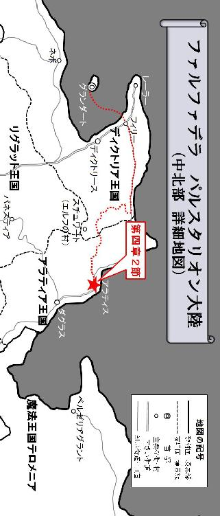
２
ライド達がアラティスの都に入った西門のちょうど反対側。
この都の最東端にある城郭に沿って建てられた城館は、アラティアの上流貴族シュルツ伯の館である。
「カーン！ 居るのか、カーン！」
豪華な造りの応接間に血相を変えて飛び込んできたシュルツ伯は、誰かを探すように部屋の中をウロウロしながら、何もない空間に向かって大声で呼び掛けた。その手には無造作に束ねられた書類が握られている。
「そんなに声を張り上げなくとも、聞こえている」
すると、その声に呼応するかのように、壁際の空間が突如盛り上がったかと思うと、そこに黒いローブを纏った一人の不気味な男が浮かび上がった。
「カーン！ あの小娘、まだ生きておったではないか！ どういうことだ！」
「なんと、それは真で？」
カーンと呼ばれた魔導師風の男は、その黒いフードの中で驚きの表情を浮かべている。そんな魔導師に対して、シュルツ伯は持っていた書類を叩き付けながら言った。
「これが何よりの証拠だ！」
「一体どこでこれを？」
魔導師は散らばった書類を一枚一枚拾い上げながら質問する。それは確かに、ディクトリア王国の冒険者ギルドで発行されたラーイオス家の令嬢護送の依頼書と、その仕事を請け負った冒険者の証明書だった。
「たった今、西門の門番がお前の部下から託けられたと言ってこれを届けてきおったわ！ 護衛の冒険者も一緒に西門からこのアラティスに入っておる！ 一刻も早くあの小娘を始末せねば、心臓に悪くて仕方がないわ！」
シュルツ伯は喚き散らすように魔導師カーンを責め立てる。黒いローブの男はその場で畏まった姿勢をとって口を開いた。
「早急にベーンと連絡をとって確認する。今夜にでも処理しよう。部隊の手配の方は任せるが、少しは使える者を送ってやって欲しい。その為の資金は渡してあるはずだ」
そしてカーンは姿勢を戻すと、応接間の隅の何もない壁に向かって手を翳し、怪しげな印を切りながら呪文の詠唱を開始する。
「ふん、分かっておるわ！ 派手にやらかすんじゃないぞ？ くれぐれも隠密に処理するのだ！ いいな？」
「善処しよう」
シュルツ伯の注文を鬱陶しく思いながらも、魔導師は短く言葉を返し、素早くその壁の中へと足を踏み入れた。カーンは田舎貴族のつまらぬ説教など聞いている場合ではなかったのだ。今は何よりも、ベーンと連絡を取ることが先決である。
そして壁の中に隠されていた階段を下り切ると、石で囲まれた暗い地下室に辿り着く。
その部屋の中心には大きなテーブルが置かれ、分厚い本や巻物などが乱雑に積み上げられていた。そして一際目を引く青白い水晶球。臙脂色の柔らかい布の上に安置されたそれにカーンが手を翳すと、まるでその球体を撫で回すように複雑な動きを見せながら怪しげな儀式を開始する。すると水晶球から淡い光が滲み出て、暗い地下室の輪郭をぼんやりと浮かび上がらせた。
「ベーン。聞こえるか？ ベーン？」
カーンは反応を示した水晶球を見て口元を緩めると、その球体に向かって話し掛ける。不思議なことにその水晶球からは、光だけでなく音も発せられてきた。
《は。こちらベーン。聞こえております》
水晶球の中に映し出された深くフードをかぶった男を見て、カーンは喜びの表情を浮かべながら口を開く。
「随分近いな。さっき西門から冒険者の証明書が届けられたと聞いた時は、まさかとは思ったが......。まずは無事で何よりだ」
《はい。つい今朝方、アラティア北西部の森林を抜け、このアラティスに到着したところです》
以前と違い、水晶球に映し出されている相手の姿や聞こえてくる声は鮮明だった。それは交信中の相手との距離が近いことを意味している。
「よくあの森を抜けられたものだな。だが、まだターゲットが生きているとの報告を受けているが？ 首尾の方はどうなっている？」
《恐れながら、護衛の冒険者は非常に手練であるが故、なかなかターゲットの殺害にまで至らなかったのが最初の要因でありました。ターゲットは常に冒険者のリーダーである戦士と寝食を共にし、その戦士はなかなか隙を見せなかったのです》
ベーンの返答に対して、カーンは少し怪訝な表情を浮かべながら更に問い掛ける。
「ベーン、お前らしくもない。たったそれだけの理由で長期間に渡ってターゲットを放置していたなど、到底考えられないのだが？ 言い訳にしても苦しいのではないか？」
《はい。ですからそれは、あくまで最初の要因と申し上げました。その後、森の奥深くに足を踏み入れていくに従い、今度は別の要因によってターゲットの殺害が躊躇われる事態に陥りました》
「して、その別の要因とは？」
カーンはテーブルに肘を付いて両手を組むと、その組んだ手の甲に自分の顎をのせ、水晶球の向こうに映し出された魔導師ベーンの返答を待つ。
《ターゲットを殺害してしまうと、護衛を務める冒険者の......とりわけリーダーを務める戦士の士気に大きく影響を及ぼしてしまう可能性が危惧されたのです。その戦士の力をうまく利用しなければ、今ごろ私は森の中で遭難して凍死、或いは飢え死にしていたかもしれません。あの危険な森から無事抜け出す為にも、ターゲットを生かしておく必要があったのです》
カーンはそれを聞いて納得したように口を開いた。
「なるほど。ターゲットの殺害よりも、まず自分が生き延びることを優先した......と。頭の固い田舎貴族共には、幾ら言っても理解して貰えない理由かもしれないが、よく分かった」
《は、恐縮の極み》
水晶球の向こう側の男は、深く頭を下げている。そんな彼に向かって、カーンは新たな命令を下した。
「だが、お前が無事ここに辿り着いたことで、もはやターゲットを生かしておく理由はなくなったはずだ。今夜、シュルツ伯が部隊を送る。目標地点を報せよ。部隊と合流次第、速やかにターゲットを処理するのだ。ベーン......いや、今はコードネーム『トリスタン』だったか？ 健闘を祈る」
《承知......》
水晶球の向こう側に映し出されている紺色のフードを深くかぶった男は、カーンに向かって静かに頷いてみせる。そして水晶球の光が徐々に失われていくと、この部屋は元の暗い地下室に戻っていた。
------ドンドン、ドンドン！
誰かがドアを強く叩いているような音が聞こえてくる。
「おいトリスタン、居ないのか？」
パーティリーダーのライドが、この部屋の扉をノックしていたのだ。トリスタンはハッと我に返ると、鍵をかけていた頑丈な木製の扉を開き、愛想笑いを振りまきながらリーダーに顔を出した。
「何やってんだ？ 鍵なんか掛けて......」
「すいません。久し振りにふかふかのベッドで横になってたら、あまりにも気持ち良くてウトウトしてたっす」
ライドはアラティスの都に入ると、森の中の厳しい行軍を乗り切った皆を労う意味を込めて、『黄金の穂波』亭という豪華な宿に部屋をとっていた。この宿には相部屋というものが存在しない。一人ひとりに立派な個室が割り当てられるのだ。手持ちの路銀は決して多くはなかったが、四人分の個室をとるくらいの余力はある。何よりも皆、相当疲労が蓄積しているのが目に見えて分かった。ライドはこのアラティスで、全員の英気をしっかり養っておこうと考えていたのだ。
「わるぃ、起こしちまったか。まぁ疲れも溜まってるだろうからな」
「どうしたっすか？ リーダー」
「明日からの馬車も手配したいし、ちょっと街に買い出しに行くんだが。トリスタン、お前一緒に来ねぇか？」
ライドはトリスタンのことを特に怪しむ様子もなく、要件だけを淡々と伝える。
「いえ、オイラはベッドでゆっくりしてたいっす」
「分かった。何か買っておきたい物は無いか？」
「特に無いっすね」
トリスタンは内心ハラハラしながらも、精一杯平静を装ってライドの言葉に答えていった。
「そうか？ 俺は別に構わねぇが、服とか相当きたねぇから新調しといた方が良いんじゃねぇのか？」
「もともとオイラは汚い盗賊なんで、ある程度汚れてた方が落ち着くっす。それに買い物なんかに付いてったら、荷物持ちでコキ使われそうで疲れそうだし、終わった後またこの四階まで階段を上るのがダルいっす」
「情けねぇな、体力なさ過ぎるぞ」
ライドはそう言ってトリスタンの事を笑い飛ばすと、自分の部屋に足を向けながら最後に一言付け加える。
「次はメシん時に声掛ける！」
そしてライドは一旦自分の部屋に戻ると、グレイヴを壁に立て掛けて買い出しに行く準備を整え始めた。トリスタンの言う通り、荷物持ちを期待して皆に声を掛けて回っていたというのは図星でもあったのだ。馬車の手配に水と食料の買い出し。傷んだ装備の手入れもしなければならない。目的地であるダグラスが近いとは言え、用意しなければならない物は沢山あった。加えて予算も限られている。結局ひとりで買い出しに行く事になったライドは、一度に多くの荷物を持ち運べるよう出来るだけ身軽な格好になると、自分の部屋を出て廊下を進み、一階へと続く長い階段を下り始めた。
トリスタンは自分の部屋の扉を少しだけ開いた状態にすると、その隙間に目を近付けてライドの行動を監視した。そして戦士が手ぶらで部屋から出て階段を下りていくのを見届けると、素早く自室から躍り出て、彼の部屋に忍び込む。その壁に立て掛けられたグレイヴは、あの戦士の力の象徴だった。トリスタンは一度目撃している。恋人を亡くした上、極限状態での行軍を続けていく中で正気を保っていられなくなった神官。彼は次第に絶望の淵に追い詰められた末、リーダーへの憎悪を募らせて謀反を起こした。その際、戦士はグレイヴを手にしていなかったが為に一方的に殴打され、かなりの重傷を負っていたのだ。このグレイヴが無ければ、如何にライドが手練の戦士と言っても恐るるに足りないだろう。
トリスタンが壁に立て掛けられたグレイヴを手に取ると、その華奢な両肩にズシリとした重みが伝わってきて、思わずバランスを崩しそうになった。盗賊の皮を被った魔導師は、細い両腕で必死にそれを引き摺りながらライドの部屋の扉を押し開いて廊下に出る。そして急いで自分の部屋にグレイヴを運び込むと、扉を閉めて大きく息を吐き出した。盗賊トリスタンは自分の仮の姿のはずなのに、なぜか本当に盗賊紛いの行動をしている自分自身に、魔導師ベーンは呆れにも似た滑稽さを覚えずにはいられなかった。
３
白い湯気が充満した小さな浴室。
木を繋ぎ合わせた円形の湯船は、フィリーネがいつもラーイオス家の館で利用していた大理石のものとは比べるべくもなく粗末なものだったが、数カ月ぶりの湯浴みにありつけた彼女は、その事を不満に思うどころか、至上の幸福を味わっていた。
文字通り、身も心も清められていくような開放感。
ライドはアラティスの都に入ると、旅人や冒険者がよく利用する大衆的な宿屋ではなく、貴族や富豪層が宿泊する豪華な宿『黄金の穂波』亭に、それぞれ全員分の個室をとった。ライドは表向き、困難な森の行軍を成し遂げた皆を労い、明日からの英気を養うためと言っていたが、フィリーネは彼が、自分のことを気遣ってこの宿を選んだのではないかと勘繰っていた。何故ならその宿の各部屋には、小さな浴室までついていたのだ。普通、旅人や冒険者は大きな公衆浴場を利用するのが一般的だったが、貴族の令嬢であり年頃の娘でもあるフィリーネは、見ず知らずの他人の前で肌をさらす行為に抵抗を感じてしまう。そんな彼女にとって、個室に設置された浴室は最高の贅沢だったのである。
フィリーネは、ただ湯浴みするという行為が、これ程までに幸福なことだとは知らなかった。そもそも、そんな風に物事を考えたことがなかった。ラーイオス家の館では、いつも全て用意された浴場に入るだけだったので、それを準備するのにどれだけの手間が掛かっているかなど、これまで彼女は一度も深く考えたことが無かったのである。
ライドが宿の女将に、フィリーネの部屋の風呂を入れるよう頼むと、大勢の湯女達が現れて先ず浴室の掃除をし、それを終えると今度は桶を抱えて何度も何度も往復しながら、この小さな浴室に設置された湯船の中に次々お湯を注いでいったのだ。フィリーネはその間、鳩が豆鉄砲を食らったような顔をして、ただ呆然と湯女達の作業を眺めていた。今まで当たり前のように存在していた全てのことは、実は当たり前ではなかったのである。厳しい旅路を経て様々な苦労を経験してきた彼女は、湯浴みすることの幸せを噛み締めながら、いま自分が生きているという当たり前の事実を心から実感し、そしてそのことに感謝した。
（温かい......）
今までと何が違うのか分からない。むしろラーイオス家の浴槽の方が、こんな木桶のような湯船より圧倒的に豪華で立派なはずなのだ。しかし今、この小さな浴室の狭い湯船に浸かって感じる幸福感は、ラーイオス家の大きな浴場でも感じたことの無い格別なものがあった。
そんな時、フィリーネの耳に、自分の部屋の扉が開く音が聞こえてくる。
（誰？）
彼女は反射的に湯船の中で身体を小さくして身構えた。ガラス張りの扉の向こう側で、誰かが動いている気配が感じられたが、しかし白い湯気が濃い上に曇ったガラス越しでは、それが誰かまでは分からない。フィリーネは風呂を準備する湯女達の作業に圧倒されて、入浴前に部屋の鍵を掛けるのを忘れていたのを今更のように思い出し、そしてそれを後悔していた。
（まさか、ライドなの......？）
そのとき一瞬、曇ったガラス越しに体格の良い大柄な男が動いているのが見えた気がして、彼女は隠れるように湯船の中に潜り込んだ。そして顔半分、目から上をお湯から出して、その扉の向こうを凝視し続ける。背丈からしてテリガルではない。あの身体の大きさから見てトリスタンでもなさそうだ。
（こんな時に......一体何の用かしら）
湯船に深く浸かっているせいか、フィリーネは胸の動悸が少しずつ強くなり、頭の中までその音がうるさく鳴り響いた。身体全体が熱くて仕方がない。このままでは逆上せて気を失ってしまいそうだ。今この扉を彼が開けてしまったら、自分はどうすれば良いのだろうか。考えれば考えるほど、フィリーネの頭は混乱した。
しかし、ふと気付いた時には、既に人の気配は消えていた。
「ふぅー......」
彼女は立ち上がって湯船から出ると、それでも何かに警戒しながら、忍び足で浴室の扉に近付いていく。そしてゆっくりとそれを開いてみたものの、やはり部屋には誰も居なかった。
「わたしの気のせいだったのでしょうか......」
フィリーネが胸を撫で下ろしながら独り言をつぶやいたその時、彼女は自分が脱いだ衣服が別のものと入れ替わっている事に気付く。ボロボロだったはずのフィリーネの衣装が、真新しい新品のものになっていたのだ。そしてその衣服の上には、小さな手鏡も置いてあった。それを見て彼女は思い起こす。いつか自分がライドに訴えた言葉を。
（こんなボロボロの衣服を着て、ボサボサ頭のままで、しかもずっと湯浴みも出来ず、くさい臭いまで漂わせている......そんな貴族の令嬢が、この世界の何処に居るというのでしょう？）
そんなフィリーネに対して、ライドはこう返していた。
（お嬢様は汚くなんかねぇ。ちゃんと綺麗だぜ）
入浴前、ライドは言っていた。必要な物を買い出しに行ってくると。
「ライド......あなたって人は」
フィリーネはその小さな胸の中から、情熱的な感情が溢れ出してくるのを自覚せずには居られなかった。あの不器用で優しい戦士のことを、自分は強く意識してしまっている。もうこの気持ちを止めることなど出来なかった。
そしてライドが用意してくれたその真新しい衣服に袖を通した時、彼女は少しサイズが大きい事に気付くと、無意識の内に深い溜め息を漏らす。
「あぁ......わたしは早く、大人になりたい」
誰に言う訳でもなく、フィリーネは自分の心の声をそのまま口に出していた。ライドは自分を気遣って優しくしてくれるものの、それはあくまで冒険者としての護衛の仕事の為であって、真に自分のことを想ってくれている訳ではないのだ。
（俺は『死を呼ぶライド』。お嬢様の護送を任された冒険者だ。まさか中に乗ってるのがガキとは思わなかったぜ）
（そういう一人前のセリフはな、もっと出すとこ出して色気のある身体になってから言いやがれ！ 俺はガキに興味ねぇんだ。誰が俺に命令するかって？ お前のその貧相な身体が俺に命令してくれてるぜ！ 手を出す必要なんてまったく無いってことをな）
（調子に乗るんじゃねぇ！ お嬢様には綺麗なままで居て貰わねぇと、俺が困るだろうが？ お嬢様は嫁入り前の大事な身体なんだ。それに俺はガキには興味ねぇ。何度も言わせるな！）
ライドが自分に言った言葉を思い返せば思い返すほど、温まったばかりの彼女の心は、まるで吹雪にさらされたように急速に冷やされていくような錯覚に陥った。フィリーネは、新しい衣服の胸元に空いた大きな空間を寂しそうに見つめながら、もう一度大きく息を吸い込んで、それを一気に吐き出した。
------この宿の五階。
最上階に位置するこの階層は、全体が小洒落たレストランになっていた。
薄暗い独特の雰囲気を醸し出したこの空間には、大きな円形のテーブルが充分な広いスペースを空けて等間隔に並べられている。中央に厨房を配したこのレストランは、それを取り囲むように並べられた全てのテーブルから、外の景色を楽しめる造りになっていた。食卓から見下ろすアラティスの夜景は美しく、夜空に鏤められた星々の中には、黄色く細長い三日月がほんのりと浮かび上がっている。
「くぅー！ 久々に飲む酒は格別じゃわい！」
テリガルはグラスいっぱいにワインを注ぐと、それを一気に呷ってから目を細めながら息を吐き出した。しかしこのドワーフは『黄金の穂波』亭に到着するや否や、すぐに酒を自分の部屋に持ってくるよう注文していたような気がする。今テリガルが口にした酒は、決して久し振りの酒という訳ではないはずだった。
「おい髭樽。俺の話、ちゃんと聞いてたか？」
ライドはそんなドワーフに呆れたような目を向けながら問い詰める。
「ん？ なんじゃったか？」
テリガルは酒臭い息をライドに吹き掛けながら聞き返した。
「だから、アラティスからダグラスまで乗せてくれる馬車を手配できたって話だ。時間に遅れたら置いてけぼり喰らっちまうから、酒は程々にしておかねぇと、明日の朝起きれなくなっても知らねぇぞ」
「ん？ あぁ、分かってる、分かってるって。久し振りの酒なんだから、まぁそう堅いこと言うもんじゃない。心配せんでも大丈夫じゃ」
テリガルの返事がどうも怪しい。ライドは手応えの無さを感じて逆に不安になりながらも、いざという時は自分がテリガルを叩き起こすしかないと心に決め始めていた。
「その馬車に乗って二日、遅くとも三日もすれば、ついに俺達は目的地のダグラスに到着するぜ。ほんと皆には苦労を掛けたな」
「さすがリーダーっす。オイラ惚れ直したっす！」
トリスタンも酒が入ったのか、少しろれつが回っていない。彼は必要ないと言ったものの、ライドは買い出しの際、全員分の衣装も買い揃えていた。汚い格好のままではこんなレストランに入ることなど出来ない。何よりも彼等の衣服はまるで物乞いのそれと見紛うほど見窄らしく傷んでしまい、街の中では目立って仕方がなかったのである。
「あ、そうそうリーダー。これ返すの忘れてたっす」
盗賊はそう言うと、おもむろに懐からクシャクシャになった紙を取り出す。それは西門の検問をパスする為にトリスタンに渡した冒険者ギルドの依頼書とライドの証明書だった。
「あぁ、そうだったな。忘れてたぜ」
ライドはそれを受け取ると、新調した服の適当なポケットにそれをねじ込む。
「ライド......」
その時、フィリーネがライドに何かを言い掛けたが、途中で口をつぐんでしまった。ライドは彼女が何を言おうとしていたのか分からず聞き返す。
「どうしたんだ、お嬢様？」
フィリーネはライドに真っ直ぐ視線を向けられて、その目を見ることが出来ず俯いてしまった。そして一度小さく首を横に振ると、思い立ったようにその場で立ち上がってから口を開く。
「わたしを護送して下さった冒険者の皆様。ここまで無事、わたしを護って下さって、本当にありがとうございます。ダグラスまであと少しですが、どうぞ最後までよろしくお願いします」
突然あらたまった口調で話し始めた彼女の言葉に、冒険者達は皆、何が起こったのか分からない様子だった。フィリーネは席を立ったその場で左足を斜め後ろ内側に引くと、右足の膝を軽く曲げて身体全体を沈めるようにお辞儀する。それはカーテシーと呼ばれる貴族の女性の間で行われる一般的な礼の作法であった。
フィリーネは、自分をここまで護送してくれた冒険者達に敬意を示し、その気持ちを言葉と行動で表していたのだ。それは彼女の口から初めて告げられた感謝の言葉だった。
「礼ならまだ少し早いぜ、お嬢様」
「そうっすよ。また明日から頑張るっす」
突然の彼女の言葉の意味を少しずつ理解し始めたライドとトリスタンは、そんなフィリーネに対して小さく頭を下げた。
「くぅー！ さすが麦の産地の酒は一味違うわい！」
テリガルには彼女の言葉が聞こえていないのか。再びグラスいっぱいに酒を注ぐと、それを一気に飲み干してから目を細めながら息を吐き出した。しかしワインの味は麦の産地とは全く関係がない。このドワーフは胃にアルコールを入れられれば、酒の種類は何でも良いのではないだろうか。ふとそんな疑念がライドの頭に浮かんできた。
明日の早朝にはこのアラティスを発つ。
しかも今度は馬車に乗って安全な街道を進むという、これまでの厳しい行軍とは比較にもならない楽な旅路である。フィリーネは否応無しに、この旅の終着点が近付いている事を意識し始めていた。そしてその事を考えると、なぜか寂しさで胸が締め付けられそうになってしまう。ずっとこの旅が続けばいい。そう思わずにはいられなかった。遠い異国の地に嫁ぎに行くという、苦痛でしかなかったはずのこの旅は、いつしか彼女の人生にとって、掛け替えのない思い出をその胸に刻み込んでいたのだ。
４
夜の闇に紛れる三つの影があった。
その動きは俊敏で、細長い弧を描く月の光を出来るだけ避けるように、暗がりから暗がりへと流れるように移り続けた。三人全員が漆黒の装束を纏った全身黒尽くめの怪しい集団である。彼等は人目につく表通りを極力避け、細い路地や建物の隙間を縫うように進んでいくと、一つの大きな建造物の裏側に辿り着いた。
「まさか、クーンの暗殺者を寄越してくるとは......シュルツ伯の本気度が窺えますね」
その物陰に現れた紺色のフードを深くかぶった男がそう言うと、指で目の前の建物の窓を順に幾つか指し示してみせる。すると黒装束の三人組はフードの男に無言のまま頷き返し、飄々とした動きを見せながらその大きな建造物の壁面を次々に登り始めた。外壁の凹凸や窓の庇を足場として利用しながら登る俊敏な動きは、彼等がまさに、こういった隠密行動に精通した熟練の暗殺者である事を覗わせる。
「皮肉なものです。死を呼ぶ男は、文字通り自らの死を招いたという訳ですか......」
そして一人残された紺色のフードをかぶった男は、悠然とその建物の表側に廻り込むと、堂々と正面から中に足を踏み入れた。夜更けのアラティスは静寂に包まれ、まるで街全体が寝静まっているかのようだ。男が入っていったその大きな建造物の入り口には、『黄金の穂波』亭と書かれた看板が掲げられていた。
------この宿の二階にある一室。
テリガルは深い眠りについていた。
酒の匂いを漂わせながら、部屋全体が震えるような大きないびきをかいている。酔い潰れるまで酒を堪能したドワーフは、自分の身に危険が迫っていることに気付く余地など全く無かった。
テリガルが寝ている部屋の窓の外側に、一瞬黒い影が現れたかと思うと、目にも留まらぬ素早い動きでガラス窓が音もなく切り抜かれ、簡単にその鍵が破られた。そして次々に侵入してくる三人の集団。最初に入ってきた男は、まず廊下へと通じる扉が閉まっている事を確認すると、その鍵を閉めて完全な密室を作り上げた。そして男が首を縦に振って合図を送ると、一人がテリガルの顔に布をかぶせて口を押さえ込み、残りの一人が腰の後ろに挿していた二本の短刀を片手に一本ずつ引き抜いて、それをドワーフの胸に突き立てた。
「むぐっ！」
その瞬間、テリガルは跳ねるように身体を大きく浮かせたが、顔に厚手の布をかぶせられた状態で強く押さえ付けられている為、動くことはおろか声を上げることも出来ない。やがてドワーフは、為す術もなくその動きを止めた。そして布を取ってドワーフの口元に耳を近付けた暗殺者は、他の仲間に小さく頷いてみせる。テリガルの呼吸が止まっている事を確認したのだ。
部屋の扉に耳を当てて廊下の様子を覗っていた黒装束の男がそれを見届けると、右手で二回、怪しげなサインを出した。それは廊下を歩く者が複数人いる事を示す合図である。そして暗殺者達は廊下へと通じる扉の鍵を閉めたまま、入ってきた窓から次々に外へと出ていった。音一つない洗練されたその動きは、まさに暗殺の見本そのものである。
テリガルの部屋の窓から外に出てきた三つの影は、細い丈夫な糸のようなものを軒先に絡みつかせると、それを伝って外壁を素早く移動していく。彼等には高さや角度という概念が無いのか、その姿は垂直の壁を自由自在に動き回る蜘蛛のように見えた。そしてあっと言う間に次の標的の居る三階の部屋に到達すると、さっきと同じ要領で窓の鍵を破り、その中へと次々に忍び込んでいく。しかし、部屋の中には予定されていた暗殺対象者の姿が見当たらない。異変に気付き、立ち往生する三人の黒装束。部屋の隅にあるタンスを開き、ベッドの下を確認し、浴室の中も調べてみたものの、やはり標的は居なかった。
------この宿の四階にある一室。
ライドはベッドで横になっていたが、まだ眠ってはいなかった。
天井に吊るされたランタンの灯りもとっくの前に消して、さっさと寝る体勢に入っていたものの、久々のベッドに身体が拒否反応を示しているのだろうか。理由は分からなかったが、ライドは何故か落ち着かず、なかなか寝付けなかった。部屋には二つの窓があり、そこから新月に近い仄かな月明かりが差し込んでいる。ライドは壁にできた窓の影を、ただぼんやりと眺め続けていた。
その時、静止していた部屋の空気が突然流れ出したのを察知して、ライドは異変に気付く。何者かがこの部屋に入ってくる気配を感じ取ったのだ。そして視界に飛び込んできたのは開け放たれた扉と、その前に佇む小さな人影だった。暗くてよく見えないが、その人物は入ってきた扉をゆっくり閉めると、一歩一歩音を忍ばせてライドが横たわるベッドに近付いてくる。やがて、黒いシルエットに見えていたその姿が、徐々にこの部屋の暗さに馴染んできた。
フィリーネだった。
「ん？ どうしたんだ？」
ライドはその小さな来訪者に声を掛ける。
「えっ？」
まさかライドがまだ起きているとは思っていなかったのか。彼女は猫のように驚いて、ビクッと身体を仰け反らせた。
「ライド、酷いですわ。突然人を脅かすなんて」
寝衣姿の彼女は、薄っすらとその目に涙を浮かべながら抗議する。
「別に驚かすつもりなんかねぇよ、ただ、誰か分からなかったからよ」
「ずっと起きてらしたの？」
「あぁ、何となく眠れなくてな......でも明日早ぇから、もうそろそろ寝なきゃいけねぇな。お嬢様も夜更かしなんかしてねぇで、早く部屋に戻った方がいいぜ」
ライドはフィリーネに背を向けるように壁に向かってベッドで横向きになると、彼女に部屋に戻るよう促した。しかしフィリーネは、ライドの言葉に従おうとしない。それどころか、ライドが横になっているベッドに無理やり身体をねじ込ませるように入ってきた。
「一緒に......寝てもいい？ いつもあなたの隣で眠っていたせいか、一人では落ち着きませんの」
そして野営のときにしていたように、その逞しい左腕に華奢な手を絡めて縋り付く。しかし野営のときと違い、そこにはライドとフィリーネの間にあった間仕切りの布は存在しなかった。
「おいおい、何言ってんだ？ せっかくいい宿とったのに、狭いベッドでそんなにくっつかれると逆に疲れるだろうが？ それに何だ？ お嬢様言ってたじゃねぇか。貴族の令嬢は、俺みてぇな身分の男なんかと一緒に寝るのは駄目なんじゃなかったのか？」
ライドは彼女の予想外の行動に狼狽し、思わず反射的に上体を起こして左腕に絡み付いたフィリーネの手を振りほどく。ライドの鋭い直感が、このままではマズいという謎の防衛本能を働かせ始めたのだ。
「......何を今更そのような事を仰っているの？ ライドはわたしのこと、嫌いなの？」
その時ライドは、暗がりの中で三日月の淡い光に浮かび上がった彼女の顔を見て、思わず息を飲み込んだ。自分を真っ直ぐ見つめ続けるフィリーネの澄んだ瞳からは、小さな雫が滴り落ちていたのだ。
彼女はいつになく積極的だった。
「ねぇ、ライド。聞かせて下さいませんか？ あなたはわたしのこと、どう思っているのかを」
フィリーネは自分がライドから拒絶されていると思うと、どうしょうもなく胸が苦しくなって、その目から溢れ出す涙を止めることが出来なくなっていた。ライドは自分のことをどう思っているのだろうか。それが気になって仕方がない。その熱い想いに押し潰されそうになりながらも、彼女は勇気を振り絞って、更にライドに問い詰めようとした、その時------。
「待て、お嬢様！」
ライドは突然右手でフィリーネの口を塞ぐと、彼女の耳元で小さく言った。そして首を左右に振りながら、周囲に警戒し始める。フィリーネは何が起こったのか分からず、そんなライドの顔をじっと見つめ続けていた。
「何か来る、隠れろ！」
ライドは小声でそう言いながらベッドから下りると、浴室の方を指差して彼女に隠れるよう促す。それは戦いの場でライドが見せる戦士の顔だった。フィリーネはライドのただならぬ気迫を感じ取り、その指示に従って浴室の扉を開く。これから何が起ころうとしているのかは分からなかったが、この戦士の勘の鋭さは尋常ではないのだ。
そして彼女が浴室の中に身を隠した次の瞬間！
突如、部屋の窓が破られたかと思うと、黒装束に身を包んだ男が飛び込んできた！
「なんだ？ お前も寂しくて眠れないのか？」
ライドは言いながら素早くコートを羽織ると、壁際に立て掛けてある自分の得物に手を伸ばす。しかし、そこにあるはずのグレイヴは無かった。
「なに！」
黒装束の男は腰の後ろから短刀を引き抜くと、それをライドに向かって鋭く突き出してくる！ 一体いつからグレイヴが無くなっていたのか分からぬまま、ライドは上体を反らして謎の侵入者の攻撃を避けた。しかし暗殺者は攻撃の手を緩めず、身体を左回転させながら反対側の手に逆手に持った短刀を振り回す。その攻撃はライドの腹部を掠めたものの傷は浅く、戦士の士気を挫くには至らなかった。ライドは痛みに顔を歪めながらも、目の前の黒装束の男に自らの身体をぶつけ、そのまま掴み掛かる。そして体重を掛けながら黒装束の男を床に叩き付け、その上に馬乗りになった。
「ゆっくり休みな！」
ライドの右拳が、黒装束の顔面にめり込む。
しかし次の瞬間、ライドは背中に燃えるような激痛を覚え、その痛みから逃れる為に前転しながら暗殺者の上から離れた。そして振り返った時そこにもう一人、まったく同じ黒装束を纏った別の男が、刃物を逆手に構えて立っているのが見えた。全身黒尽くめの暗殺者は暗闇に溶け込み、ライドが気付かぬ内にその背後に回り込んで、危険な刃を突き立てていたのだ。
「くそが！」
防具を兼ねたコートを着てなければ、恐らく致命傷だったに違いない。ライドはいつの間にか自分の背後に回り込んでいたその新手の敵との間合いをとりながら、壁に立て掛けておいたはずのグレイヴを探す為に部屋の壁周りを見回してみる。しかし、部屋全体が暗くてよく見えなかった。
「髭樽！ トリスタン！」
このままでは危険だと察知したライドは、大声を張り上げて仲間を呼ぶ。
グレイヴを探して部屋の四隅を見回した時、ライドはこの危険な状況を正確に把握し始めたのだ。さっき殴った黒装束の男と揉み合いになっている間に、同じ黒装束を纏った二人の暗殺者がこの部屋に忍び込んでいたのである。暗殺者は三人も居たのだ。
しかもその姿は非常に見えにくい。
三人の暗殺者とやり合う為には、まず灯りが必要だった。そして戦う為の武器が必要だった。更に一対三の状況を打開する仲間も必要である。
「テリガル！ トリスタン！ 敵襲だ！」
ライドは何度も仲間の名を叫んでみたものの、誰からも応答は返ってこなかった。そんなライドを黙らせようと、黒装束の男達は一斉に動き出す！
ライドの背中に短刀を突き立てた男は、真正面からその短刀をライド目掛けて突き出してきた。ライドは左側面に身を翻してその攻撃を避けようとしたものの、闇の中に紛れ込んでいたもう一人の暗殺者が突然その姿を現し、逆手に握った短刀でライドの左上腕部を鋭く斬り付けた。堪らずライドはベッドの上に飛び乗ると、床に倒れたままになっている黒装束の男に向かってジャンプする。それはライドが右拳で顔面を殴打した暗殺者だった。
ライドは踏み付けるようにその黒装束の上に着地すると、男が手にしていた短刀を一本奪い取る。こういった特殊な形状の武器を扱った経験は無いが、今はこの短刀がこの場にある唯一の武器だった。
あと必要なのは、この暗い部屋を照らす灯りと、数的な不利を覆す仲間だ！
「髭樽！ いつまで寝てやがる！」
使い慣れない武器とは言え、有るのと無いのとでは大違いである。慣れない武器では攻撃に転じるのは難しいものの、敵の攻撃を受ける防御手段として扱うのは容易い。
「おいトリスタン！ 聞こえないのか！」
ライドは襲い来る敵の攻撃を躱し、短刀で受け流しながら声を張り上げ続けた。暗殺者達はライドに大声を出されるのが余程都合悪いのか、少し怯んでいるようにも見える。その時、この部屋の扉を叩く音が聞こえてきた。
「お客様、如何なさいましたか？」
宿の当直者が、騒ぎを聞きつけてドアをノックしているのだ。
ライドはこれだけ叫んでも仲間の助けが来ないことを不審に思いながらも、別の人間を呼び出せたことに少し安堵した。
「助けを呼んでくれ！ 怪しい奴等に命を狙われている！」
「本当ですか！ 開けますよ？」
「待て、今は危険だ！」
ライドは言ったが、既に扉は開かれていた。そして扉の向こう側から当直者が顔を覗かせながらライドに声を掛ける。
「大丈夫ですか、お客様？」
それと同時に当直者が手に持っていたランタンの火が、部屋の中を明るく照らし出した。
しかし、部屋の中にはライド以外誰も居ない！
怪しい人影など一人も居なかった。床で倒れていたはずの男の姿も消えている。そして部屋にある二枚の窓は全開に開け放たれた状態で、風に揺れて軋み音を立てていた。黒装束の暗殺者達は、まるで蜘蛛の子を散らすように素早く近くの窓から退散すると、あっと言う間にその姿を晦ましていたのだ。
「いや、ついさっきまで全身黒尽くめの怪しい奴等がよ......」
「ライド......大丈夫でしたか？」
部屋が明るくなったのを感じ取ったのか、浴室に隠れていたフィリーネがその扉を開き、顔だけを覗かせながら怯えた声を出した。それを見た当直者は呆れたように息を吐き出しながら踵を返す。
「お客様、困ります。お楽しみなのは構いませんが、他のお客様からこの部屋が騒がしいと苦情が入ってます。どうか、くれぐれもお静かに......」
「いや、待て！ 違うんだって！」
ライドは抗議の声を上げたが、自分の声が少し大きくなっていた事に気付き、思わず口ごもる。振り返った当直者の眉間に、険しいシワが寄っていたのだ。
「悪い、衛兵を呼んできてくれねぇか？ 本当に命を狙われてんだ」
「はいはい、分かりましたよ。静かにお楽しみ下さいね」
ライドは真面目に訴えたつもりだったが、どれだけそれが当直者に伝わったか怪しいものがあった。当直者は部屋の扉から廊下に出ると、ライドに振り返ることも無く、そのまま扉を閉めてどんどんその足音が遠ざかっていってしまったのだ。
次の瞬間、部屋は再び闇に包まれる。
「お嬢様、火だ！ ランタンに火をつけろ！」
暗闇に染まったこの空間はあまりにも危険過ぎる！
その事を直感的に悟ったライドは、急いで部屋の窓を閉めながらフィリーネに指示を飛ばす。彼女は小さく頷いてみせると、部屋の天井に吊るされていたランタンを外し、壁際に置かれたライドの荷物の中から火口箱を取り出した。そして蒲の穂綿に向かって火打石を打ち鳴らして火花を散らす。程無くして穂綿に細い煙が上がり始めると、硫黄を染み込ませた附木の先端をそれに押し当てて火を作り、その附木をランタンの中に翳した。
フィリーネが火を灯したランタンは、部屋を明るく照らし出す。
「いいぞ。上出来だ、お嬢様！」
ライドは二枚の窓の前にそれぞれタンスとベッドを立て掛けて、暗殺者達がすぐに入れないようにバリケードを築き上げると、両手でフィリーネの手を握りながら彼女に問い掛けた。
「ひとつ聞かせてくれ。グランダートに居た頃も、こんな風に命を狙われるような事があったのか？」
「......いいえ、ありません」
ライドの質問に対して、彼女は小刻みに首を横に振って答える。
「他人の恨みを買うような事は無かったか？ 誰かに憎まれていたとか？」
「......いいえ、身に覚えがありません」
実際フィリーネは、アラティアへの旅に出る前まで、このような危険な経験をした事など一度も無かった。
「そうか。分かった」
ライドは真剣な眼差しをフィリーネに向けたまま頷いてみせる。そして彼女の手を一度離すと、さっき使った短刀を右手で拾い上げ、左手でフィリーネの手を握り直した。
「いいか？ 灯りを高く翳せ。そしてこの手を離すんじゃねぇぞ！」
「うん。絶対、離さない！」
彼女は小さな声で力強く答える。この戦士はフィリーネにとって、まさに自分を護る騎士そのものだった。これまでどんな困難に直面しても、彼はいつも自分を護り抜き、このアラティスまで辿り着いてみせたのだ。そして今回も、きっと何とかしてくれるに違いない。フィリーネの心には、どんな窮地に立たされても、ライドが居れば絶対に大丈夫という安心感さえあった。
そしてライドは走り出す。
その右手には短刀が、そして左手にはフィリーネの手が握られていた。
ライドが扉を開いて廊下に飛び出したその瞬間、バリケード代わりに窓に立て掛けてあったタンスがけたたましい音を立てながら倒れ、そこから黒装束を纏った男が突入してくるのが見えた！
（どうも腑に落ちねぇな。ここまで洗練された暗殺者が執拗に襲ってくるなんて......ただ事じゃねぇ！）
ライドはそれを見ながら、国境近くの街道での賊の襲撃を思い起こす。あの賊は、やはりただの山賊などではなく、最初からフィリーネの命を狙っていたのではないだろうか？ 宿の当直者は言っていた。この部屋の騒ぎに対して、別の客から苦情が入っていると。それはつまり、多くの宿泊客が居るこの宿の中で、自分の部屋だけがピンポイントに狙われたという事だ。加えて、テリガルとトリスタンに何度も助けを呼び掛けたにも関わらず、まったく反応がなかった。二人は無事なのだろうか？ 悪い予感しかしない！
ライドはフィリーネの手を引きながら、この廊下の突き当りにある下り階段を目指す。そしてその階段が見え始めた時、見慣れた紺色のフードをかぶった男が踊り場の前に立っているのが見えた。
「トリスタン！ 無事だったのか？」
ライドは盗賊に呼び掛けてみたものの、彼は二人に気付いていなかったのか、一瞬驚いた表情を見せた後、すぐに気を取り直して口を開いた。
「リーダー、そんなに血相変えてどうしたっすか？」
「敵襲だ！ すぐ後ろまで迫ってる！」
「マジっすか？ 早く逃げるっす！」
トリスタンはライドに頷き返して階段に滑り込む。そして盗賊を先頭に三人が階段を駆け下り始めたその時、小さな刃物の塊が飛んできたかと思うと、ライドの頭上を掠めて目の前の壁に突き刺さった！ それは見たことのない十字形の形状をした投擲武器である。
「トリスタン、何か武器を貸してくれねぇか？ グレイヴが見当たらねぇんだ！」
ライドは階段を駆け下りながら前を行く盗賊に聞いた。
「オイラの武器と言ったら、短剣とスリングしか無いっすよ？」
「仕方ねぇ、こいつで我慢するか」
短剣では、今ライドが右手に握っている短刀とあまり代わり映えしない。そして三階の踊り場に出たところで、一般の宿泊客と思しき年配の男が現れたかと思うと、ライド達に向かって声を荒げてきた。
「さっきからこんな夜中に何を騒いでいるんだ？ 少しは迷惑ってものを......！」
男は怒り心頭の様子だったが、しかし最後まで言葉を発する事なく、細い糸のような血を吹き出しながら仰向けに倒れ込んだ。見ると、その年配の宿泊客の眉間に、十字形の投擲武器が突き刺さっている。
「悪ぃな！ 先を急いでんだ！」
トリスタンが先行して二階への階段を下り始めると、ライドとフィリーネもそれに続いた。そしてその階段の途中で異変を察知したライドは、二階の踊り場に差し掛かり始めたところでその足を止める。フィリーネは、ライドが突然中途半端な場所で立ち止まったので、戦士の背中にぶつかるような格好になってしまった。
「髭樽、無事だったのか！ どうしたんだ？」
二階の踊り場は一階のロビーから吹き抜けになっているので、他の階層のそれよりもかなり広い空間になっている。そしてその中心には、一人のドワーフが立っていたのだ。
しかし何やら様子がおかしい。
テリガルは宿の中だというのに重装備に身を固め、戦斧と大盾を構えていた。まるで今にもライド達に襲い掛かってきそうな雰囲気である。
「まさか、テリガルさん！ オイラ達を裏切ったんすか？」
トリスタンはテリガルに言ったが、しかしドワーフの戦士はそんな盗賊を無視するように突進してくると、トリスタンに向かって戦斧を振り上げてきた！
「どうしちまったんだ？ 髭樽！」
ライドも呼び掛けてみたが反応が無い。
トリスタンはテリガルが振り下ろしてきた戦斧の懐に飛び込むと、ドワーフの反対側まで素早く走り抜けて事なきを得る。一方ライドの背後、階段の上から黒装束の暗殺者が一人現れると、短刀を引き抜きながらフィリーネに向かって鋭く踏み込んできた。
「くそっ！」
ライドは左手を引いてフィリーネを自分の身体の反対側に引き寄せながら、右手の短刀で黒装束の攻撃を受け止める。すると彼女の目の前で激しい火花と金属音が飛び散った！
「テリガルさん、やっぱり『あの話』はマジだったんすね？」
トリスタンはドワーフの後ろ側に廻り込むと、踊り場から一階へと下りる階段の前まで移動しながらテリガルに向かって呼び掛けた。しかしライドには、トリスタンの言う『あの話』が何の事なのか、皆目見当もつかない。
「あの話って何なんだ！」
ライドは黒装束の男に向かって短刀を突き出してみたものの、暗殺者は華麗なバク転を見せながら後方に下がってそれを簡単に回避した。そしてその動きに連動するかのように、もう一人の黒装束が入れ違いに躍り出て、鋭い蹴りをライドに浴びせ掛けてくる。
「今日テリガルさんの晩酌に付き合ったときに聞いたんすよ！ ディクトリアのラーイオス家とダグラスのグライオン家が繋がりを持ってしまうと、武器の大量生産が更に加速されて、親父さんの工房が潰れてしまうって！ だからテリガルさんは、本当はフィリーネさんをダグラスに送り届けるのは不本意だって言ってたっす！」
ライドは黒装束の蹴りを受けてバランスを崩し、思わず階段から転倒してしまいそうになったが、すぐ後ろに居るフィリーネが必死になって戦士の身体を支えてくれていた。
「それは本当なのか？ 髭樽！」
ライドは慣れない短刀を振り回して暗殺者を追い払おうとしたが、逆に徐々に追い詰められていく。この状況下では階段の上に居る黒装束の方に地の利があるのだ。ライドは少しずつ後退し、二階の踊り場まで階段を下りきると、フィリーネを護りながら黒装束の猛攻に耐え続けた。次の瞬間、まるでこの時を待ちわびていたかの如く、踊り場で武器を構えていたテリガルがライドに向かって襲い掛かってくる！
「その時、テリガルさんオイラに持ち掛けてきたっす！ 一緒にリーダーを裏切らないか？ って。もちろんオイラは断ったっすけど、まさか暗殺者を雇ってしまうなんて！」
トリスタンの言葉には真実味があった。確かにテリガルは、フィリーネの護送に異を唱えてはいなかったものの、ライドにも似たような事を口にしていたのだ。ライドは自分の心が大きく揺り動かされるのを感じずにはいられなかった。何よりも、仲間だと思っていたドワーフの戦士が、いま自分に向かって戦斧を振り上げ、襲い掛かってきている。自分の目に映っているこの事実こそ、トリスタンの言葉を裏付けているのだ。
「馬鹿野郎が！」
ライドはフィリーネを左肩の上に抱え上げると、右手に握った短刀に力を込め、身体を大きく捻りながらその刃を回転させた。それはライドがグレイヴを扱う際に、最も得意としている回転攻撃である。相手が誰であろうと、武器を向けてくる者は敵なのだ！ それは戦いの場における揺るぎない鉄則であり、唯一の真実だった。ライドは長く旅を共にしてきたテリガルへの情を凍り付かせ、ドワーフが振る武器に対して、武器でそれに応えたのである。
短刀による回転攻撃は、背後から迫っていた暗殺者を弾き飛ばし、テリガルに確かな一撃を叩き込んだかのように思われた。しかし全く手応えが無い！ 見ると、一階に下りる階段の前で驚愕の表情を浮かべたトリスタンの姿がそこにあった。一体何をそんなに驚いているのだろうか。ライドにはその理由が直ぐには分からなかったが、この直後、背後から聞こえてきた聞き慣れた声に、ライド自身も驚愕の表情を浮かべずにはいられなくなっていた。
「......ライド、いい覚悟じゃ！」
それは正に、ドワーフの戦士テリガルの声だったのだ！
「どういう事だ！ 髭樽？」
テリガルは今、自分の目の前に居るはずである！ そして次の瞬間、ライドが短刀を突き刺したドワーフの姿は跡形もなく消え去った！ 実体あるものが、まるで最初から無かったかのように消えてしまうその現象に、ライドは見覚えがある！
「まさか、俺が戦っていた髭樽は幻影だったのか！」
ライドは左肩に担ぎ上げていたフィリーネを下ろし、声がした方に振り向いた。そしてそこに、信じられないものを見た！
「髭樽！ どうしたんだ、その傷は！」
テリガルは血まみれの状態でライドの後ろに立っていたのだ！ ドワーフの戦士は盾や防具を身に付けてはいなかったが、戦斧を杖代わりにして辛うじて立っていた。胸部に刻まれた二つの傷からは、止めどなく血が滴り落ちている。これだけの重傷を負いながら立っているドワーフの勇姿は、まさに『不屈の戦士』と呼ぶに相応しい佇まいだった。
「なぁに。そこの物騒な黒尽くめの連中に、ちょっと寝込みを襲われただけじゃよ」
ライドの背後から隙を窺っていた暗殺者達は、自分達が殺害したはずのドワーフがまたそこに現れたのを見て、驚きの声を上げる。
「馬鹿な！ 貴様の息の根は確かに止めたはず！」
「『不屈の戦士』の名は伊達ではないわ！ わしの息の根を止めたじゃと？ 残念じゃったな！ わしの息は一度止まっても、またすぐに吹き返す！ これは毎晩のことじゃわい！」
そう言って豪快な笑い声を上げ始めたテリガルを見て、黒装束の三人組は本当にそのドワーフが不死身なのではないかという疑念を抱き、怯みながらジリジリと後退し始めた。だが、ライドには分かる。そのドワーフは今、立っているのもやっとの状態であるという事を。
「悪い、髭樽。俺はてっきりお前が裏切ったという話を鵜呑みにして......」
自分に対して殺意を向けていたドワーフは幻影だったのだ。テリガルは裏切ってなどいなかった。ライドは幻影に惑わされ、一瞬でも友人を疑ったことに罪悪感を覚えていた。しかしテリガルは首を横に振りながら口を開く。
「いいんじゃそれで。オスカーのことでお前さんも懲りたじゃろう？ たとえ仲間でも武器を向けてくる者は敵。それは戦いの場における唯一の真実じゃ。それよりライド、その話をお前さんに吹き込んだのは誰じゃ？ 分かっておるんだろうの？ お前さんの本当の敵を！」
それを聞いてライドはハッとする。
そして戦士は、一階へと続く階段の前に立っている盗賊に向かって声を張り上げた。
「どういう事だトリスタン！ お前はさっき、暗殺者を雇ったのは髭樽だと言ってたじゃねぇか？」
トリスタンは狼狽していた。
まさか暗殺者達に殺害させたはずのドワーフが実はまだ生きていて、目の前に再び姿を現すとは思ってもみなかったのだ。しかしトリスタンは、実際にその死体を自分の目で確かめた訳ではない。テリガルの部屋は内側から鍵が掛けられていたので、それを確認する事が出来なかったのである。
「失態だな、クーンの暗殺者共！ 何を呆けている？ はやく殺り損なったターゲットを始末しろ！」
それは、いつものお調子者の盗賊の声とは明らかに違うものだった。その命令に呼応するかのように、三人の暗殺者達は一斉にライドとテリガル、そしてその後ろに居るフィリーネに向かって飛び掛かってくる！
「トリスタン！ どういうつもりだ、答えろ！」
ライドは短刀を構え直すと、暗殺者達の危険な刃がフィリーネに及ばないよう、彼女を護りながら盗賊に向かって怒鳴り声を上げた。テリガルも戦斧を用いてその護りに加勢する。黒装束の三人組は、自分達が殺害したはずのドワーフが現れたことに動揺しているのだろうか？ 短刀の連続的な斬撃も、洗練された体術から繰り出される蹴りも、正確無比な投擲武器も、その全てが精彩を欠き、さっきまでの動きがまるで嘘のようにキレを失っていた。その時、どこからともなく不思議な言葉が聞こえてくる。
「我が纏うは硝子の外套。光を捻じ曲げ、己の姿を屈折させる魔力の虚像......」
それは呪文の詠唱だった。
フードを深くかぶった盗賊は、自分に対して怒りを向けているライドに申し開きをする訳でもなく、代わりに不思議な言葉を発する事でライドの疑問に答え始めたのだ。
それを見た瞬間、ライドの怒りは頂点に達する。暗殺者を使ってテリガルを殺害しようとしたばかりか、巧みな話術でライドを誑かし、ドワーフを裏切り者に仕立て上げようとした真の裏切り者トリスタン。その正体は盗賊ではなく、魔法使いだったのだ！
「うおおお！」
ライドは目の前に迫っていた黒装束の刃を短刀で受け止めず、低く構えて自分の身体を前に投げ出すと、そのまま掴み掛かって男を前方に押し倒した。暗殺者は大柄なライドに押し潰されて背中を強打したが、何とか脱出を試みようとその刃を戦士の背中に刻み込む。ライドは痛みに顔を歪めながらも暗殺者の動きを完全に封じ込めようと、身体の向きを変えながらその男を押さえ込んだ。
ガゴンッ！
次の瞬間、ライドが押さえ込んでいた暗殺者の首が刎ねられる！ テリガルの戦斧が黒装束の男の首の上に落とされたのだ！
頭部を失った胴体は、大量の血を吹き出しながら動かなくなり、二階の踊り場はまるで赤いインクをぶちまけたような状態になった。残された二人の暗殺者は、仲間の一人が絶命したのを見て一瞬怯んだ様子を見せたが、直ぐに気を取り直して襲い掛かってくる。ライドは素早く起き上がるとテリガルに言った。
「髭樽、少しの間お嬢様を頼む！」
そしてドワーフが黙って頷いたのを見ると、ライドは全速力で駆け出した。
トリスタンの立ち位置は少し離れているが、魔法使いの詠唱を完成させる訳にはいかないのだ。しかしその詠唱は、既に佳境に差し掛かっていた。
「大いなる魔力の源よ、敵の目を欺く我が残像をそこに投影せよ！」
トリスタンの呪文が完成した瞬間、ランタンの灯りに照らし出された盗賊の姿が、一瞬大きく撓んだように見えた。ライドはそれでも構わずトリスタンに向かって走り込むと、右手に持っていた短刀を裏切り者に向かって鋭く振り抜く。その攻撃は確かにトリスタンの身体をとらえたかのように見えた。
しかし、まるで手応えがない！
そしてトリスタンはライドの短刀からすり抜けながら走り出すと、踊り場を滑るように移動して距離をとり、次の呪文を唱え始める。
「大いなる魔力の源よ、光の矢となりて彼の者を貫け！」
それは短い詠唱だった。
呪文の完成と同時にトリスタンの指先から流れ星のような三本の光が放たれたかと思うと、弧を描きながらライドに向かって飛来し、その戦士の身体を正確に貫いたのだ！
「ぐあっ！」
三本の光の矢に射抜かれて激痛に見舞われたライドは、思わずその場で片膝をついた。それを見たトリスタンは、更にライドから距離をとるために、次の呪文を詠唱する為の安全な場所を探し始める。強力な魔法ほど長い呪文の詠唱を必要とするので、出来るだけその戦士から離れる必要があったのだ。
「いやー！」
その時、別の方向から女の悲鳴のようなものが聞こえてきた。
見ると、二人の黒装束による連続攻撃を受けていたテリガルが、身体中を斬り刻まれながらもフィリーネの前に立ちはだかり、まるで壁のように身を挺して彼女を護っている姿がそこにあった。
「髭樽！ 大丈夫か！」
ライドは急いでテリガルのもとへと駆け寄ると、右手に握っていた短刀を闇雲に振り回して暗殺者達を追い払う。黒装束達はライドが戻ってきたと見るや、大きく後ろに下がって充分な距離をとった。彼等にとって、その戦士は非常に危険な存在だったのだ。ライドに捕まった仲間は抜け出す暇もなく、ドワーフとの連携によってその首を刎ねられている。それと同じ轍を踏む訳にはいかない。
「このくらい平気じゃ、『不屈の戦士』を侮るでない。それよりライド......分かっておるな？」
テリガルは壁に寄り掛かりながらそう言うと、踊り場の床を指差してみせる。そこには頭部を失った暗殺者の胴体と、そこから吹き出した血によって出来た血溜まりがあった。そしてその上を誰かが走ったような足跡がくっきりと残されている。その血の足跡を辿ってみると、少しズレた位置で両手を高く掲げ、呪文の詠唱を開始したトリスタンの姿がそこにあった。
「魔力の源よ、激しい炎の渦となりて、我が前に其の力を具現化せよ！」
左右の手を高く翳して円を描きながら呪文を唱えるトリスタン。その詠唱に呼応するかのように、彼が手を掲げた空間には小さな無数の赤い粒のような火が現れ始めている。
ライドはその足跡を見た瞬間、いつか森の中で戦った六本足の魔獣のことを思い起こし、そして全てを理解した。テリガルはライドが右手に持っていた短刀をまるで奪うように剥ぎ取ると、自分の戦斧を差し出しながら口を開く。
「どうやらこの武器は、お前さんには向いておらんようじゃの。こっちの方が使い易かろう。わしの戦斧もお前さんのグレイヴも、元は同じ真っ赤な鉄から親父が鍛え上げた、魂の込められた武器じゃ......」
ライドはテリガルに促されるまま、彼の戦斧の柄を強く握り締めると、そこから伝わってくるズシリとした重みを心地良く感じとった。それを見ながらドワーフは、大きな声を張り上げて戦士を鼓舞し始める。
「死を呼ぶライド、武器を振れ！ 熱い情熱をもってその武器を振るんじゃ！」
そしてライドは、まるでテリガルに背中を押されるように走り出した！
「トリスタン！」
ライドは少しずつその速度を速めながら、紺色のフードをかぶった盗賊に向かって一気に詰め寄っていく！ トリスタンの詠唱が佳境に差し掛かり始めると、やがて赤い小さな火が少しずつ重なり始め、まるで太陽が空中に出現したかのような、巨大な炎の塊がそこに形成され始めた！
「大いなる地獄の業火よ、彼の者を包み込み......」
ライドはその火の玉のことを片時も忘れた事がない。それはサーシャを巻き込んで爆発を引き起こした、あの炎の魔法に違いなかったのだ！ ライドは走りながら一瞬床に目を向けと、呪文を詠唱しているトリスタンではなく、踊り場に出来た血の足跡に向かってそれを振り下ろした！
「馬鹿な？ 何故私の居る場所が分かった......？」
そこは何もない空間だった。しかしライドは、その戦斧から確かな手応えが伝わってくるのを感じていた。その直後、膨張し続けていた火の玉は、まるで最初から何も無かったかのようにその形を失い、跡形もなく消滅していく。
「俺達はお前より、多くの修羅場を潜り抜けてきた。ただそれだけの事だ」
紺色のフードをかぶった盗賊のような魔導師は、ライドが戦斧を振り下ろした位置から少し離れた場所に立っていたが、その身体から血を吹き出しながら徐々に実体が収束していくと、最後にはライドの足元にその亡骸をさらしていた。
「盗賊のカードをチラつかせつつ、実は魔法使いのカードを懐に忍ばせていたとは......とんだイカサマ師だぜ。だが、戦士のカード二枚には敵わなかったようだな」
術者の姿を実際に居る場所からズラして空間に投影する幻影魔法。それに惑わされる事なく、ライドは戦斧による強烈な一撃で、裏切り者トリスタンを葬ったのだ。
その時、踊り場に程近い位置にある扉が開き、そこから若い男の宿泊客が顔を出した。
「うわああ！ 人が、人が死んでるっ！」
そしてトリスタンと黒装束の死体を見付けるや否や、悲鳴に似た叫び声を上げ始める。血糊の付いた戦斧を右手に握り締めて返り血を浴びているライドの姿は、その人相の悪さも手伝って、まるでこの事件を引き起こした凶悪犯のように見えなくもない。
「ちっ、面倒なことになりそうだぜ」
ライドがそう言った次の瞬間、黒装束の一人が俊敏な動きを見せたかと思うと、大声を上げていた男の首と胴体は、あっと言う間に切り離されていた。そして二人の暗殺者は体勢を整え直すと、壁に寄り掛かったまま立っているテリガルではなく、その横でランタンを掲げているフィリーネに向かって真っ直ぐ走り込んできた！
「野郎！ この期に及んで、まだ殺ろうっていうのか！」
ライドはただがむしゃらに、右手の戦斧を振り回して黒装束達を牽制しつつフィリーネを庇う。しかし次第に追い詰められていったライドは、短刀で斬り付けられ、鋭い蹴りを浴びながらも、フィリーネにその危険な攻撃が及ばないよう、文字通り身を挺して彼女を庇い続けた。暗殺者達もなりふり構っていられなくなったのか、決死の覚悟でターゲットであるフィリーネの抹殺を遂行しようとしている。そのただならぬ気迫を感じ取ったライドは、テリガルに向かって大声で呼び掛けた。
「髭樽！ このままじゃ保たねぇ、早く逃げるぞ！」
しかし、ドワーフの戦士は何も答えない。
ライドはフィリーネの身体を左脇に抱えると、戦斧を大きく横に薙ぎ払った。だが二人の黒装束は、華麗な後ろ宙返りを見せてその攻撃を難なく躱す。その一瞬の隙を見たライドは右手の戦斧を手放すと、フィリーネが左手に持っていたランタンを手に取り、後方に下がった暗殺者達に向かってそれを放り投げた！ 次の瞬間、ガラスが割れる派手な音が鳴り響いたかと思うと、ランタンの中に入っていた油が撒き散らされ、踊り場に炎が燃え広がり始める。ライドはそれを見てすぐに戦斧を拾うと、フィリーネを抱えたままテリガルのもとへと駆け寄った。
「おい、髭樽！ こんなとこで呆けてんじゃねぇ！ 行くぞ！」
そしてライドがドワーフの身体を揺すった瞬間！
「え？」
フィリーネはそれを見て、思わず声を出していた。
不屈の戦士は大きくバランスを崩したかと思うと、もたれ掛かっていた壁に沿って、まるでスローモーションのようにゆっくりと真横に倒れ始めたのだ。ライドは慌ててその太い身体を支えると、髭の戦士を元の位置に戻しながら言った。
「悪かったな、急かしちまって。髭樽は此処でゆっくりしてな」
不屈の戦士は、自分に相応しい死に姿を、自らの意志で選んでいたのだ！
ライドはそのドワーフに敬意を払い、彼の身体を元の体勢に戻すと、フィリーネを脇に抱えたまま、廊下を奥に向かって走り始める。少し遠回りになるが、この廊下は突き当りから外階段に出る事が出来るのだ。二階の踊り場から発火した炎は、時間の経過と共にその勢力を増し、異常を発見した人々が徐々に集まってきて、少しずつ騒ぎが大きくなっているようだ。
ライドは無事に外階段まで辿り着くと、息を切らせながらそれを駆け下りる。そして深夜の街に出ると、脇に抱えていたフィリーネを下ろして口を開いた。
「お嬢様、まだ走れるか？」
「はい」
「上出来だ」
ライドは彼女に笑ってみせると、その手を引いて再び走り出す。火事の騒ぎで集まり始めた人々の目が気になったのだ。彼女を脇に抱えたままでは、人さらいと間違えられても仕方がない。ライドはフィリーネの手を引いて、人の流れに逆らいながら南を目指して走り続けた。後ろから黒装束の暗殺者達が追い掛けてくる気配を感じたが、今は振り向いてそれを確認する暇など無い。トリスタンを自らの手で葬り、テリガルも居なくなってしまった今、フィリーネ護送の任務に就いた冒険者は、遂にライドただ一人になってしまったのだ。だが、例え最後の一人になろうとも、彼女の命だけは絶対に護り抜かなければならない。死んでいった仲間の為にも、この任務だけは必ず遂行しなければならないのだ。
ライドの左手には、汗で滲んだフィリーネの右手が強く握られていた。小さな炎を上げ始めた大きな建造物を背に、夜の街を疾走する二人の男女。その姿はまるで、暗い炎のような陰謀が渦巻く現実の世界から、遠い楽園を目指して逃避しているようにも見えた。彼女の手を引きながら、ライドはひたすら南を目指して走り続ける。深い森を歩き続けてアラティスの都に辿り着けたように、この足を止めてしまわない限り、目的地のダグラスにも必ず辿り着けるはずなのだ。
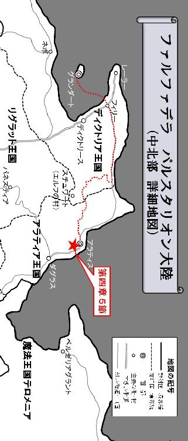
５
アラティスの都の南側。
そこには、地平線の彼方まで続いているかのような広大な麦畑が広がっている。
線のように細い三日月が浮かぶ夜の闇に紛れ、背の高い麦の穂に身を隠しながら走る二人の男女が居た。
一人は体格の良い戦士で、その右手には荒々しい印象を受ける片手持ちの戦斧が握られていた。その戦斧と防具を兼ねたマントのようなコートには、赤いまだら模様の返り血が染み付いている。また、戦士自身も身体の至る所に斬り傷や打撲を負い、まさに満身創痍の状態だった。まるで激しい戦いを演じてきた直後のような姿である。そしてその左手には、自分のすぐ後ろを走る女の右手がしっかりと握られていた。
戦士に手を引かれて走る女は、まだあどけなさの残る少女で、寝衣しか着用していない。しかし彼女は暑くて仕方がないのか、その全身から汗が吹き出していた。息を切らせながら必死に男について走る少女は、既に限界近くまで体力を使い切り、呼吸も苦しくて仕方なかったが、それでも心は幸せな気持ちに満たされていた。このまま世界の果てまで逃げ出してしまいたい。少女は、そんな想いに駆られていたのだ。
稲穂を揺らす風の音が、まるで後ろから忍び寄ってくる暗殺者の気配のようにライドには思えてならなかった。実際、あそこまで手練の暗殺者を、ライドは今まで一度も見たことがない。どんな遠くまで逃げても、絶対に逃げ切れないような不安感にライドは苛まれていた。
この時期の麦は背が高く、ライドが少し身を屈めると、頭まで完全に隠れることが出来る。フィリーネに至ってはその必要さえなく、すっぽりと全身が麦の穂に覆われてしまうので、普通に走っていても外から彼女の姿を確認する事は出来ないだろう。しかしそれは、二人を追っている暗殺者達も同じことである。敵がどこまで迫ってきているのか分からない中で、ライドは必死にフィリーネを連れて走り続けた。生き延びる為には、迫り来る敵より一歩でも先に進まなければならないのだ。
その時、ライドの左手が強く引っ張られ、戦士は足を止めて後ろを振り返る。見るとフィリーネが転倒して、そのまま両脚を横に向けた状態で座り込んでしまっていた。
「お嬢様？ 大丈夫か？」
ライドは彼女に無理をさせ過ぎてしまった事を後悔し、フィリーネの前にしゃがみ込んで問い掛ける。
「はぁっ、はぁ......だい......はぁ......じょう......はぁ」
大丈夫、と言いたげな様子だったが、全然大丈夫ではなさそうだ。
ライドはフィリーネを左肩の上に抱え上げようとしたが、あまり高く彼女を持ち上げてしまうと、追っ手に場所を突き止められてしまうような気がして思い留まった。何よりライド自身、担ぎ上げたり脇に抱えたりといった無理のある体勢では、体力的に長く保たないと感じていたのである。そして考えた末、小さな子供にするのと同じように、フィリーネの身体を背負う事にした。
「また無理させちまったな。もう少しの辛抱だ」
そして再び走り出すライド。
フィリーネは、その背中に頬を当てながら、小さな声でライドに問い掛けた。
「ライド、どこに向かっているの？」
「遠くだ。敵より少しでも遠くに逃げなければ、やられちまうからな」
稲穂を揺らす風の音が、静まり返った三日月の夜のなか駆け抜けていく。
「遠くに逃げるって、どこに逃げるの？」
「ダグラスだな。俺達の最終目的地は、あくまでダグラスだ」
少女はその街の名前を聞いた瞬間、悲しいような、寂しいような、深い孤独感に近い感覚を味わっていた。三日月が滲んで徐々にその形を失っていくと、最早どこが星空と大地の境界線なのかさえも分からなくなってしまう。
自分を包み込んでいるこの世界という存在は、何故こうも非情なのだろうか？
そして自分という存在は、何故こうもちっぽけで、無力なのだろうか？
自分の想いや願いとは関係なく、昨日も今日も、そして明日も、世界はただ廻り続けているだけなのだ。ある日突然、自分という存在が消えてしまったとしても、まるで何事もなかったかのように世界は廻り、人の営みは続けられていく事だろう。
だとすれば、自分というこの存在は何なのだろうか？
自分のこの想いや願いは、一体何の為にあるのだろうか？
フィリーネは、その視界に入る全てのものが滲んでしまい、自分を包み込んでいる世界の存在を完全に見失ってしまった。そしてただ吹き抜ける風の音だけが、彼女を包み込む世界の全てになる。
「待ってライド。わたし、ダグラスには行きません！」
フィリーネは、自分に残された最後の世界である風の音の中に、自分の声を乗せて自己の存在を精一杯主張した。
「何言ってんだお嬢様？ その為に俺達は散々苦労してきたんだろうが！」
しかし世界は、そんなちっぽけな彼女の存在を否定するかのように、更に荒ぶる風音を立てて吹き抜ける。
もし、この物悲しい世界の果てに、別の世界へと通じる道があるのだとすれば、その先には一体何があるのだろうか？ フィリーネの願いが叶う世界が、その果ての何処かにあるかもしれない。少女はその世界を想像し始めた。
それは、知らない異国に突然嫁ぎに行かされる事の無い世界。
それは、恐ろしい暗殺者が執拗に追ってくる事のない世界。
貴族でなくても良い。裕福でなくても良い。多くは望まない。
自分のささやかな想いを遂げる事の出来る、小さな世界があればそれでいい。
「わたし、フォルクスと結婚したくない！ わたしが好きなのはライドだけ！」
吹き抜ける風は、この冷たい現実の世界がまだ存在している事を、淡々と彼女に主張し続けている。それを分かった上で、フィリーネは更に言葉を続けた。
「お願い、ライド。わたしと一緒に逃げて。わたしをどこか、遠い場所に連れてって！」
ライドは困り果てた表情を浮かべて途方に暮れていた。この世間知らずのお嬢様は、一度言い出したら退くことを知らない。それはこの旅を通してライド自身よく分かっていた。だが、こればかりはフィリーネの言うことを聞くわけにいかない。
「馬鹿言ってんじゃねぇ。俺とお嬢様とじゃ、住んでる世界が違い過ぎる！ それに俺は、あくまでお嬢様をフォルクスの元まで送り届ける護送の任務を引き受けただけの冒険者だ。そもそも冒険者と貴族じゃ釣り合いが取れねぇ」
この旅を通して、彼女が少しずつ自分に好意を寄せ始めていた事は、ライドも薄々勘付いていた。しかしライドには、彼女の想いを受け入れる事など出来ない。多くの犠牲者を出してしまった以上、仲間の犠牲に報いる為にも、この任務は何としても遂行しなければならないのだ。
「わたしも冒険者になってライドと一緒に戦いたい！ 戦い方を覚えるから、わたしを一緒に連れて行って！」
ライドは精一杯フィリーネを突き放したつもりが、逆に彼女に強く食い下がられ、その気迫に気圧され始めていた。戦いの場では、相手に気後れする事など滅多に無いライドだったが、なぜか貴族の令嬢を前にすると、戦いの時のような勝手が通らない。
儚い少女の飾り気のない真っ直ぐな愛。
その想いを告げられたライドは、このまま彼女を連れて、何処か遠くに逃げるのも悪くないかもしれない。ふと、そんな事を考え始めていた。
------その時！
（やはり、そういうことだったんですね！ ライド！）
それは幻聴だった。
しかし、ライドの耳の中でハッキリと響いている。
神の試練なのか、それとも悪魔の悪戯なのか。その幻聴は、森の中で死んでしまった神官、オスカーの声になって、ライドを糾弾し始めたのである。
（貴方はあの時、ラーイオス家のご息女とサーシャの命を天秤に掛けて、サーシャの命を切り捨てた！ それはこの任務を遂行させる為ではなく、単に貴方の個人的感情を優先させただけなのです！）
ライドの目の前には今、自分を問い糾すオスカーの姿がハッキリと見えた。そんな神官の言葉をライドは否定する。
（なんでそうなる？ 俺は確かにサーシャよりもお嬢様の救出を優先した！ だが別に俺は、自分の個人的な感情でそう判断した訳じゃねぇぜ！）
その言葉に嘘はなかった。ライドは決して、自分の感情を優先してサーシャを切り捨てた訳ではない。
（見え透いた嘘はやめなさい！ 貴方はあのとき否定したのに、実際に今、ラーイオス家のご息女と特別な関係になろうとしていたではありませんか！）
しかしオスカーは更に問い詰める。彼はライドと護送対象者であるフィリーネとの関係を疑っているのだ。
（ふざけるな！ 俺はガキには興味ねぇ！）
（いいえ、私の目は誤魔化せません！ その証拠にいま貴方は、彼女と何処かへ逃げ出そうと考え始めていた......違いますか！）
オスカーの幻はライドの心の奥に入り込み、その全てを見抜いているかのようだった。しかしライドはそんな神官の追求に対して真っ向から反論する。
（馬鹿野郎！ お前は頭で考えたことを必ず実行に移しているのか？ そんな事はありえねぇ。たとえ俺の中にそんな考えが浮かんだとしても、それを実行に移す訳ねぇだろうが！）
二人の主張は、ただ平行線を辿るのみだった。ライドが何を言ってもオスカーはそれを理解せず、また逆にオスカーが何を指摘してもライドはそれを認めようとはしなかった。
（信用できません！ 貴方は表向き彼女をダグラスに送り届けるフリをしつつ、実は自分が幸せになることだけを優先させて、その為に仲間を犠牲にしてきたのです！）
そんなオスカーの追求に対して、ライドは毅然とした態度で答える。
（お前は俺の言ったことを忘れたのか？ 俺の中にはライドという俺個人とは別にもう一人、リーダーとしての責任を負った俺が居るんだ！ このパーティでの判断は、いつもそのリーダーの責任によって決定されている！ そこに俺の気分や感情が介入する余地なんて、これっぽっちもねぇ！）
------そしてライドは我に返った。
なぜオスカーがこのタイミングでライドの心の中に現れ、自分を厳しく糾弾しようとしたのかは分からない。だがライドはそのやり取りの中で、自分が進むべき正しい道を導き出していた。
吹き荒ぶ風は、どんどんその強さを増していくようだ。
ライドはふと後ろを振り返り、アラティスの都の様子を確認する。宿の火事は消し止められたのか、それとも遠過ぎて見えないだけなのか。ここから見える都は、夜の静寂に包まれて安らかに眠っているように見える。そしてライドは南に向き直り、再び足を動かし始めた。
そのとき、戦士は見付け出す。
地平線の果てまでずっと続いているように思えていた麦畑の中に、小さな小屋のようなものがあるのを。ライドはその小屋を目標に定めると、背中に背負った少女に向かって小さな声で囁いた。
「分かった。俺はお前を連れて逃げる事に決めたぜ。これからは、どこまでも一緒だ」
「本当に？」
「あぁ、本当だ。俺は一度決めた事を貫く男だぜ。お嬢様も、いい加減、俺の事を分かってきてるんじゃないのか？」
フィリーネは返事をしなかったが、ギュッとその両手に力を込めて、ライドの身体を背中から強く抱きしめた。旅の終着点は、もう目前に迫っている。ライドは少女を背負ったまま、その小屋の中へと入っていった。
６
それは粗末な馬小屋だった。
小屋の中には畑仕事で使われる馬が五頭飼われている。脚を投げ出して横になって眠っている馬もいれば、こんな夜更けにも関わらず立ったまま起きている馬もいるようだ。その内の一頭は見慣れない人間が入ってきたので警戒しているのか、荒い息を吐き出したり、身体を小刻みに揺らしたりしながら、じっとライドの方を見つめている。
ライドはフィリーネを背負ったまま姿勢を低くすると、僅かな月明かりを頼りに、この小屋の中に他の人間が居ないかどうかを確かめる。泥棒と勘違いされて騒ぎを起こされても面倒だからだ。そして誰も居ない事を確認すると、農具などが纏めてある倉庫のような場所にフィリーネを下ろす。
「ちょっと待ってろよ」
ライドはそう言って農具を退かしていくと、そこに広めのスペースを作り、近くに積み上げてあった乾草を敷き詰めて仮の寝床を作り始めた。木の柱に板を打ち付けただけの簡単な作りの馬小屋だったが、風を凌いで脚を休めるには充分だ。何よりも、次の行動を起こすためには、先ず此処で充分な休憩をとる必要があった。今夜は激しい戦闘を繰り広げた末、麦畑の中をずっと走り通しで、ライドとフィリーネは共に体力の限界を超え、著しく疲弊していたのだ。
「あまり上等なベッドとは言えねぇが、まぁこれで我慢してくれや」
ライドは寝床を整え終えると、その作業を不思議そうな目で見つめ続けていた少女に微笑みながら言った。するとフィリーネは、小刻みに首を横に振りながら口を開く。
「ううん。これからずっとあなたと一緒に居られると思うと、わたし......」
彼女はそこまで言うと、また涙を流し始めて言葉を詰まらせてしまった。
「あぁ。これからはずっと一緒だ」
ライドはそう言って乾草の上で横になる。フィリーネは両手で目をこすりながら言った。
「本当に......？」
「あぁ、何度も言っただろ。俺の言葉に嘘はねぇ」
ライドは真顔で彼女にそう答える。フィリーネは何度も何度も両方の手を目に当てながら、言葉にならない嗚咽を漏らすようにつぶやいた。
「わたし、あなたに会えて......本当に、良かった......！」
そしてライドに凭れ掛かるように、その身体を戦士に預ける。いつもライドの左腕に縋り付くような体勢で眠っている彼女だが、今夜は左半身をライドに重ねるような体勢になって、その戦士に思う存分甘えていた。生まれて初めて人を愛することを覚えたフィリーネは、その初恋を見事に実らせる事が出来たのだ。この冒険者の戦士は、遂に自分だけの戦士になってくれたのである。こんな幸せな気持ちを、フィリーネは今まで一度も感じたことがない。
「今夜は安心して眠りな」
少女がいつまでも泣きやまないのを気にしてか、ライドは彼女の髪を優しく撫でながら言った。フィリーネはこれまでの自分の人生で最高の幸せを噛み締めながらも、更なる新たな願望が次々に湧き上がってくるのを感じずにはいられなかった。
「それだけじゃ、わたしは安心して眠れないわ。わたしを安心させて、ライド」
そしてその願望を叶えるために、ライドに懇願する。
「どうすりゃ安心するって言うんだ？」
しかしライドは彼女の言葉の意味が分からず、自分の左胸の上に顔を乗せている少女に向かって問い掛けた。するとフィリーネは、少し拗ねたような表情を見せながらゆっくりと目を閉じて、今にも消えてしまいそうな掠れた声でポツリと言った。
「それくらい、自分で考えてよ......」
その瞬間、ライドは理解する。
いま彼女に必要なのは、絶対的な安心感なのだ。
ここでフィリーネをしっかり安心させなければ、次の行動には移る事が出来ない。
ライドは、踏み込んではならない一線を越えてしまいそうな気がして、猛烈な罪悪感のようなものを覚えずにはいられなかったが、しかし、これも必要な事だと自分自身に言い聞かせて、激しく燃え盛るような熱い心を凍らせた。そしてフィリーネの柔らかな唇に、そっと自分の唇を重ね合わせる。それは互いの唇が僅かに触れ合っただけの、ささやかな口付けだった。
これで彼女も、ようやく安心したのだろうか。
ライドの身体に寄り掛かっているフィリーネの全身から、徐々に力が抜けていくのが分かった。程無くして彼女は、静かに寝息を立て始める。それは本当に安らかな寝顔だった。ライドはそんなフィリーネの寝顔をしばらく見つめた後、さっき彼女と重ね合わせた唇を真一文字に引き締めると、意を決した表情になってゆっくりと立ち上がった。
フィリーネは、ライドが寝床から離れたことに全く気付く様子はない。暗殺者の追跡から逃れるために相当な距離を走り続けた事で、かなりの疲労が蓄積しているのだ。そう簡単に彼女が目を覚ますはずがなかった。これでようやく、ライドは次の手を打つことが出来る！
今思えば、今回の任務は、最初から何かがおかしかった。
二国間の問題で、ディクトリアの正規軍がアラティア国内に入る事が出来ず、フィリーネの護送が出来ないというのも、考えてみればおかしな話である。ディクトリア王国とアラティア王国は、別に敵対関係という訳ではない。むしろ交易も盛んに行われている両国は、極めて良好な関係にあるはずなのだ。限定的に異国の軍の入国を認めるか、若しくは両国間であらかじめ申し合わせて、国境付近でフィリーネの護送を引き継げば良いだけの話である。
そしてライドは馬小屋を離れ、その足をダグラスとは正反対。北に見える都アラティスに向けた。
冒険者ギルドでこの仕事の受け手がなかなか見付からず、ずっと放置されていたというのも解せなかった。実際、かなり骨の折れる仕事ではあったが、表面上その事は絶対に分からないはずである。普通に考えれば、ただ街道に沿って馬車の護送をするだけの仕事というのは、むしろ楽に報酬にありつける美味しい仕事だと言わざるを得ない。当初ライドは、護送対象者であるフィリーネの扱い難さからこの仕事が避けられているのかと勘違いしていたが、今思えばそれが決定的な理由だとは到底思えなかった。
ライドは麦畑から街道に入ると、そのまま北を目指して歩き続ける。その先にはアラティスの東門が見えた。
何よりも、再三に渡って襲撃を繰り返してきた危険な刺客達。国境付近の街道に現れた賊も、宿を襲撃してきた暗殺者達も、そして盗賊と偽ってパーティに潜り込んでいたトリスタンという名の魔法使いも、彼等の狙いは最初からフィリーネだったのだ。彼女は言っていた。ディクトリアでは、命を付け狙われるような事など一度も無かったと。それはつまり、フィリーネがアラティアに入国する事を阻止しようとする勢力がある事を意味している。この裏にはもっと大きな陰謀が隠されているに違いないのだ。冒険者一人では到底太刀打ちできない程の、途轍もなく大きな陰謀が......。
ライドは東門の城郭に繋がっている城館の入り口を見付けると、その扉を叩き始める。立派な門構えから、アラティアでも名の知れた貴族の館である事が見てとれた。この城館は、アラティスの正規軍の詰所でもあるのだ。
最早この問題は、一介の冒険者パーティの手には負えない。ましてや、たった一人の戦士に出来る事などたかが知れているのだ。得体の知れない集団にフィリーネが狙われているのは間違いない。もしまた、あの暗殺者達の襲撃を受けてしまったら、ライドにはもうどうする事も出来ないだろう。悔しいが、それを認めない訳にはいかなかった。中途半端になってしまったとは言え、ライドは森の中の困難な行軍を成し遂げ、フィリーネを無事アラティスまで護送する事が出来たのだ。最終目的地のダグラスはもう少し先だが、充分な働きと言えた。一人でやれる事には限界がある。アラティスの正規軍にこの仕事を引き継ぐことが出来れば、より安全に彼女をダグラスに送り届けられるだろう。
やがて城館の門が開くと、ライドはその中の応接間と思しき豪華な部屋に通された。深夜に叩き起こされて機嫌を損なっている禿頭の貴族は、その名をシュルツ伯と名乗った。ライドは事情を説明して、アラティスの正規軍にフィリーネを保護して欲しい旨を伝える。
フィリーネは悲しむかもしれないが、フォルクスと結婚して年月が経てば、その想いも一時の気の迷いだったと気付く事になるだろう。そしてダグラスのグライオン家の妻として、幸せな人生を送るに違いない。彼女には彼女の世界、即ち貴族の世界があって、同じ貴族であるフォルクスの妻として生きる事こそが、彼女にとって最も幸せな人生である事は考えるまでもない。もしこの任務を投げ出して、フィリーネと共に何処か遠い場所に亡命したとしたら、今度はライドが誘拐犯としてお尋ね者になってしまうだろう。そんな犯罪者と一緒にコソコソと生きる人生など、フィリーネにとって幸せなものだとは到底思えない。
シュルツ伯はライドの話を聞き終えると、さっきまでの不機嫌そうな表情を一変させ、満面の笑みを浮かべながら戦士の労をねぎらった。そして快くフィリーネの護送を引き継ぐ事を了解すると、これまでのライドの働きに対する報酬として、白金貨一〇〇枚を用意した。
ライドはシュルツ伯に対して、自分もアラティスの正規軍に同行し、フィリーネをダグラスまで送り届けたいという希望を伝えたが、それに関してはシュルツ騎士隊の誇りが損なわれるとして、受け入れて貰えなかった。
その後の事はライドもよく覚えていない。ただ、全ての引き継ぎを終えてその城館を立ち去る際、シュルツ伯が見せた気味の悪い薄ら笑いが、何故かライドの目に焼き付いて離れなかった。
７
アラティスの都の南側。
稲穂が揺れる地平線。
彼方に佇む小屋の中。
少女は静かに眠ってる。
安心しきった安らかな寝顔。
少女は一人で眠ってる。
隣に彼が居ると信じて。
健やかな寝息を立てていた。
そして少女は夢を見る。
それは幸せに満ちた夢。
やがて、現実と夢の世界が交錯した。
現実世界は、不条理と理不尽に満ち溢れていた。
どんな想いも無駄に終わってしまう哀しい世界。
何を願っても叶えることの出来ない非情な世界。
その氷のような世界から、少女は解放されたのだ。
そして少女は辿り着く。
少女の前に現れたのは、希望に満ちた夢の世界。
それはどんな願いも叶える事ができる素敵な世界。
あの人と永遠に過ごす事ができる幸せな世界。
どこからか聞こえてくる美しい音色。
それはリラという弦楽器の旋律だった。
そして聞こえてくる優しい歌声。
その調べは、冷え切った少女の心を温め始めた。
------そして、少女の意識が覚醒する。
『静まり返った波風。海風と陸風とが交差し、無風になったこの夕凪に想う。わたしの足跡は全て波にさらわれてしまい、もう跡形も無く消え去った』
（この歌をわたしは知っていますわ。
確か題名は、陸の王子と海の姫。
サーシャという冒険者が歌ってくれたの。
彼女は女性でも、冒険者になれる事を教えてくれた。
彼女は毎晩、わたしにこの歌を聞かせてくれた）
『今のわたしには何も見えない。遠くに行かないで。ここに来て。わたしの代わりに世界を見て、そしてわたしに教えて欲しい。あなたは今、何を見つめているの？ わたしを抱き締めて、その全てを教えて欲しい』
（この歌はわたしの事を歌っているのかもしれない。
だって今、何も見る事が出来ないの。
ライド、遠くに行かないで。ここに来て。
誰かが少しずつ近付いてくる足音。
そして何かを探すような物音。
ライド、あなたなの？ わたしは此処にいるわ）
『今のわたしには呼吸が出来ない。何処にも行かないで。ここに居て。わたしの代わりに息をして、そしてわたしに触れて欲しい。あなたは今、何処を目指しているの？ わたしに口づけして、その息吹を吹き込んで』
（やっぱりこの歌はわたしの事を歌っているのね。
だって今、呼吸をする事が出来ないの。
ライド、何処にも行かないで。ここに居て。
誰かがすぐ近くで発した低い声。
誰の声なのかは分からない。
ライド、もう一度だけ、わたしに口付けして下さい）
------そして、少女の夢は......そこで潰えた。
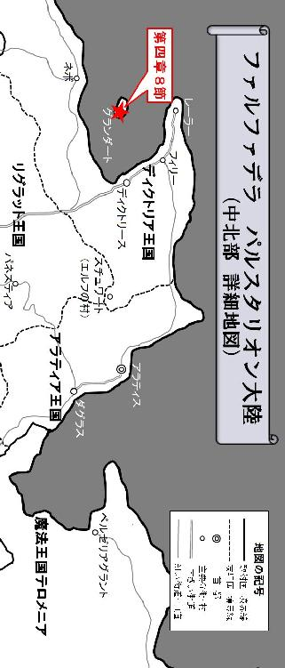
８
離島の王都グランダートは熱気に包まれていた。
降り注ぐ太陽の光が眩しい。季節は既に夏に差し掛かっていた。
見慣れたグランダート港に船が到着すると、船員達は慌ただしく積荷を降ろす作業に取り掛かり、周囲の空気はより一層熱気を帯び始める。ライドはアラティア王国の首都アラティスからディクトリア王国の王都グランダート行きの商隊に、用心棒として相乗りさせて貰ったが、結局何事もなくすんなりとこの王都まで帰ってくる事が出来た。
行きの厳しい行軍が、まるで嘘のようである。
アラティアとディクトリアの国境付近で塞がれた街道も、既に復旧が済んでいたらしく、何の問題もなく普通に通ることが出来た。特にその国境周辺では賊の襲撃の警戒に当たったライドだったが、現れたのは別の商隊や普通の旅人、或いは別の任務を帯びた冒険者パーティのみで、賊やダークエルフといった敵対的な遭遇は無かった。
ライドはシュルツ伯から貰った白金貨を一枚取り出すと、それを駄賃として商隊の長に渡そうとする。だが長は用心棒が居てくれて心強かったと言い、それを受け取ろうとはしなかった。用心棒と言っても実際には何もしていないライドは、正直悪い気がして仕方なかったが、代わりに商隊が売り物として運んでいた積荷の中から、特に欲しくもない雑貨を何点か買ってその長に別れを告げた。
久し振りに王都グランダートの地にその足をつけたライドは、青々と澄み渡った夏の空を見上げてみる。そして特に何かを見る訳でもなしに、遠い東の空を見て目を細めた。
何の音沙汰もなく花嫁の到着が遅れた事に、きっとグライオン家は気を揉んでいたに違いない。彼女は嫁ぎ先でちゃんと可愛がられているだろうか。フォルクスとは上手くやれているだろうか。ダグラスでの生活にも、そろそろ慣れ始めた頃だろうか......。
そしてライドは歩き出す。
グランダートは港から王城まで幅の広い大通りで結ばれているが、ライドは人混みで賑わうこの通りから逃げるように西の路地へと入っていった。その細い道は複雑に交差しながら枝分かれし、乱立した建物の隙間を縫うように張り巡らされている。ライドはその細道を一切迷うこともなく進んでいくと、やがて煙突が立ち並んだ建造物の波が見え始めた。
この道を歩いていると、けたたましく槌を打ち鳴らす音が四方八方から聞こえてくる。今日もグランダートの工業区は、いつもと変わらぬ喧騒に包まれていた。
その時ふとライドは、この区画の中でも一際大きな鍛冶工房の職人達から奇異の目を向けられているような気がして、そのことを怪訝に思った。ライドがその工房の脇を通ると、彼等は皆作業の手を止めて、まるで仇敵を見るような鋭い目で睨み付けてくるのだ。ライドは自分自身の身なりに何か問題があるのではないかと思って衣服を確認してみたが、特に変わったところはない。そして自分の後ろに居る別の誰かを見ているのでは無いかと思って振り向いてみたものの、やはりそこには誰も居なかった。
ライドは首を傾げながら自分を睨む職人達を無視すると、その大工房の横を足早に通り抜けた。そしてしばらく歩き続けると、薄汚れた小さな鍛冶工房に辿り着く。ライドは何の躊躇いもなくその工房の中に足を踏み入れると、いきなり大声を上げて自分の帰還を宣言した。
「おい親方、いま戻ったぜ！」
中は凄まじい熱気に包まれていた。全身汗まみれの職人達が忙しなく動き回り、鉄を打ち鳴らす金属音が大音量で響き渡っている。
「死を呼ぶライドか？ 珍しいな、ちゃんと声掛けてくるなんて。一体どういう風の吹き回しじゃ？」
その職人達の中から全身煤だらけの汚らしいドワーフが現れると、皮肉を込めながらライドに言った。その姿は不屈の戦士テリガルと瓜二つだったが、髭と頭髪は白く枯れている。
「あぁ、たまにはな......」
ライドは他の職人達の邪魔にならないよう工房の隅に移動すると、俯きながらドワーフの職人に答える。そんな戦士の様子がいつもの調子と明らかに違うのを感じ取った老ドワーフは、豪快な笑い声を上げながら口を開いた。
「なんじゃ、威勢が良いのは最初だけか？ その様子だと、また今回の仕事も失敗したみたいじゃな？」
ドワーフ職人のブレイブはライドが仕事に失敗する度に、それを茶化してからかうのを、いつも楽しみにしているようだった。だがそれも今思えば、ライドを気遣っての行動なのかもしれない。本気で詰られようものなら、家賃を滞納しているライドとしても気まずくて仕方がないだろう。
「いや、今回の仕事はちゃんとやり遂げたぜ」
だが、そんなブレイブの期待はあっさりと裏切られた。意外なことに、ライドは仕事を成功させたと答えたのだ。危険な依頼を受けてそれを熟す冒険者の仕事は、そのぶん見返りも大きい。冒険者が依頼を成功させたという事は、相当な額の報酬が入ることを意味しているのだ。それを聞いたブレイブは驚愕の表情を浮かべた直後、手を叩きながら大声ではしゃぎ出した。
「それは本当か？ こりゃめでたいわい！ ようやくライドに家賃を払って貰えそうじゃ！ 延滞料として酒も付けて貰わにゃならんな！」
ブレイブが汚れた厚手の手袋を付けたまま手を叩いて喜んだせいで、辺りは一面ホコリまみれになって視界が急に悪くなる。ライドは思わず咳き込んでいたが、ドワーフ職人の注文には頷いて答えた。
「あぁ、酒も付けて支払うぜ」
「今から晩酌が楽しみじゃな。久々にウチの道楽息子と盃を交わすとするか！」
ブレイブは鼻歌を歌いながら仕事に戻ろうとする。
「親方！」
ライドは声を張り上げて、そのドワーフの背中を呼び止めた。
「なんじゃ？」
そして振り向いた職人に一挺の戦斧を見せる。
次の瞬間、この空間が一瞬の内に凍り付いた。
工房の中に鳴り響く槌音が、いつまでもうるさく鳴り響く。
それはまるで頭痛のような痛みをライドに齎す。
ブレイブはただ黙って戦斧を受け取ると、静かに口を開いた。
「あやつの最期はどうじゃった？ 何か言っておったか？」
老ドワーフの視線を受け、ライドは息苦しさを感じずにはいられなかったが、意を決してその質問に答え始める。
「髭樽の最期の言葉は......」
それはライドに戦斧を渡したあとに言った言葉だ。
（死を呼ぶライド、武器を振れ！ 熱い情熱をもってその武器を振るんじゃ！）
ライドはそれを伝えると、ブレイブはただ黙って頷いていた。そしてその戦斧とライドの姿を交互に見比べると、決意に満ちた目を向けながら言った。
「この戦斧はお前さんが振り続けろ。死を呼ぶライド。その二つ名は伊達じゃあるまい？ 文字通りの死を敵にくれてやれ」
ライドは老ドワーフの言葉を聞いて少し困惑の表情を浮かべていた。しかしブレイブは、そんな戦士に構わず言葉を続ける。
「別にわしは、お前さんに戦斧使いになれと言っておる訳ではない。なぁに、心配はいらんわい！ お前さんにはお前さんに相応しい武器の形というものがあるんじゃ。わしを侮るでないぞ？ これを使って最高の一振りを仕上げてやろうじゃないか！ 腕が鳴るわい！」
ブレイブはそう言うと、その戦斧を持って仕事の準備に取り掛かり始めた。彼は工房内を足早に動き回って用途不明な道具を次々掻き集めてくると、その具合いを確かめながら口を開く。
「そしてお前さんはこれを振って敵に死をくれてやる代わりに、己の仲間を護るんじゃ。その仲間にも家族がおることじゃろう。その家族に、わしと同じような思いをさせるんじゃないぞ？ いいな」
ライドは老ドワーフがこれからやろうとしている事を理解すると、その言葉に強く頷いてみせた。そしてブレイブに向かって深く頭を下げると、間借りしている倉庫へと続く工房の裏手ではなく、表から出て別の場所へと足を向け始める。
ライドは休むことなく足早に次の目的地を目指した。
網の目のように張り巡らされた工業区の複雑な通路を縫うように歩いてグランダートの大通りに出ると、その幅の広い通りを北へと進み始める。この大通りの突き当りにはグランダートの王城があった。そしてその中庭を抜けた先には、冒険者ギルドの本部でもあるグランダート教会があるのだ。
今回の仕事の報告をしなければならない。
ライドのパーティはライド以外の全員が犠牲になったものの、その任務は完遂している。つまり依頼人であるフルードリヒ＝ラーイオス枢機卿から多額の報酬が出るのだ。金を仲間の命に代える事は出来ないが、しかし金がなければ冒険者としてやっていく事も出来ない。それにライドは、ブレイブをはじめ死んでしまった仲間の遺族にもその一部を配ろうと考えていた。
（お金の問題ではありません。わたし達は今回、二人もの仲間を喪ったのよ？）
ふと、サーシャから非難を浴びせられたときの事を思い起こす。
（あなたは死んでしまった仲間の為に、涙を流してあげることも出来ないの！）
それはライドが仕事に失敗してグランダートに戻ってきた際、すぐに次の仕事を受けようとして彼女から責められた時の言葉だ。
（あなたの涙は枯れてるんじゃない！ あなたの涙は凍っているの！ そう、氷のようなあなたの冷たい心で、その涙も冷え切って氷になっているのよ！）
「そうだな、サーシャ。違いねぇ」
ライドは彼女の言葉に思わず頷いた。
いま自分は、多くの仲間を喪ったにも関わらず涙も流さず、こうして金を受け取りに教会に足を向けている。これでは冷たい人間だと罵られても仕方がないだろう。サーシャの言う通り、自分の心は氷で出来ているのかもしれない。ふとそんな考えが、ライドの頭に浮かんできた。
そしてライドは辿り着く。
鋭角の蒼い三角屋根と、その下に吊り下げられた鐘。
この時間帯のグランダート教会は、非常に多くの冒険者達でごった返していた。酷い日だと教会から溢れた冒険者達がグランダート城の中庭まで達してしまう事もある。それに比べれば今日はまだ空いている方だった。
ライドは開かれたままになっている教会の扉から中に入って、その人混みの奥に居るはずの老司教の姿を探そうとする。
するとどうだろう。
ライドが教会に足を踏み入れた途端、何故か彼の周りだけ空間が空いていく。
周りの冒険者達は皆ライドのことを避けているかのように、その戦士の存在に気付くと直ぐ距離をとって、そこに隙間が出来ていくのだ。教会内は騒然として、何か異様な雰囲気に包まれている。冒険者達は皆、ライドに注目しながら小声で何かを話しているようだ。その様子を見たライドは訝しげに思いながらも、割れた人波の間を通ってロバート司教の待つ祭壇へと歩みを進めていった。そのとき周りの冒険者達が自分の方を指差しながら「裏切り者」と言っているように聞こえた気がしたが、一体何の事なのか分からない。そして祭壇の前まで辿り着いたライドは、そこに立っている老人に向かって口を開いた。
「ロバート爺さん、『死を呼ぶライド』こと、ラインハルト＝ドルージュ。いま戻ったぜ」
ライドは冒険者の証明書と今回の仕事の依頼書を取り出す。
「戻ったか、死を呼ぶライドよ」
ロバートは丸メガネに手を当てながらライドを見ると、大きく頷いてみせた。
「あぁ。今回の任務はちゃんと成功したぜ......仲間は皆、死んじまったがな」
ライドがそう言った瞬間、教会内はどよめきに包まれた。
（任務成功？ あの男は本気で言っているのか？）
（仲間は皆死んでまった？ お前が殺したんじゃないのか？）
（『死を呼ぶライド』とは、『（仲間の）死を呼ぶライド』という意味だったんだな）
多くの雑音がライドの耳に次々飛び込んでくる。
その喧騒はうねりとなって聴覚の全てを支配すると、やがてライドの心をも蝕み始めた。口々に発せられる罵詈雑言。それは留まることなくライドの頭の中にこだまし続け、やがて戦士は激しいめまいに襲われ始める。全身から吹き出す汗が止まらなかった。
その直後！
「黙らんかー！」
まるでドラゴンの咆哮と聞き紛うほどの怒鳴り声。
それはロバートの声だった。
老司教はその年齢からは考えられない程よく通る声を張り上げて、教会内に居る冒険者達に一喝したのだ。
「グランダートの冒険者達よ、悪いが今日は此処で一旦教会を閉めさせて貰うぞい！ さぁ、みんな今すぐに出ていけい！」
いつもふざけてばかりで滅多に怒ることのないロバートが、突然鋭い剣幕で怒鳴り声を上げたので、冒険者達は皆驚き、一瞬の内に静まり返った。何か逆鱗に触れることがあったのだろうか。或いは老人が故の気紛れなのか。突然教会を閉めると言い出した老司教は、その険しい表情を崩すことなく、祭壇の前で若者達に睨みを利かせ続けた。その凄まじい形相を見た冒険者達は、ロバートが本気で怒っていることを感じ取り、仕方なく教会の出口へと足を向け始める。
「そなたは此処に残れ」
ライドもその流れに続いて出ていこうとした時、ロバートは戦士を呼び止めた。
「ロバート爺さん......？」
ライドはそんなロバートの鋭い目を見て、何か不吉な予感を感じずにはいられない。
そして冒険者達が退場していくと、グランダート教会はさっきの喧騒が嘘のような静寂に包まれた。ロバートはライドを一人残して、他の冒険者を全員この教会から締め出してしまったのだ。
「ロバート爺さん。こういうの、正直困るぜ......」
ライドは率直な気持ちを司教に打ち明ける。
「俺は普段、出来るだけロバート爺さんと距離を取ってるつもりだ。それなのにこんな事されると、まるで俺がロバート爺さんから特別扱いされてるみたいじゃねぇか......」
「これは別にそなたを特別扱いしての事ではないぞ？ もし今回の件、他の冒険者が同じことになったとしても、じじいはやはり人払いをしておったであろう」
老司教は淡々とそう言うと、早速本題に入り始める。
「さて、死を呼ぶライドよ。今回の仕事のことを全部聞かせてくれぬかの？」
ライドはそんなロバートを見て、背筋に冷たいものを感じながらも覚悟を決めた。
「あぁ。少し長い話になるぜ？」
「よい。それよりもまず最初に約束してくれぬかの？」
「何をだ？」
「何ひとつ包み隠さず、その全てを話すと」
「全部喋れって言うのか？」
「当然だぞい。実際に起こった事、そなたが感じた事、その全てを神の前に打ち明けねば、真実は見えてこぬからの」
いつになく険しい表情でそう言ったロバート。
それを受けてライドは、今回の護送中に起こったこと、そして自分が感じたことの全てを順に説明していった。国境付近の賊の襲撃と厳しい極寒の森の行軍。仲間が皆犠牲になったことや、その中に裏切り者が紛れ込んでいたこと。そしてその旅の中でフィリーネから好意を寄せられた事や、一時は彼女を連れて何処か遠くへ逃げ出そうという気になっていた事も含めて、ライドは自分の立場にとって良くない話も包み隠さず全てを打ち明けた。
ロバートは戦士の話を、遠くを見るような目をしながら静かに聞いていた。そしてその全てを聞き終えると、何度も何度も頷いた後、意を決したようにゆっくりと口を開く。
「そなた、これからじじいが話すこと、心を強くもって聞くのだぞ」
そして老司教から発せられた言葉は、ライドが想像もしない事実だった！
「フィリーネ嬢は死んだ」
「......なんだって？」
「だから、フィリーネ嬢は死んだといっておる」
「馬鹿な！ 俺は確かに、アラティスのシュルツ騎士隊に引き継いだはずだ！」
ライドは信じられないといった表情を浮かべて愕然としている！
「報告によると、シュルツ騎士隊が駆け付けた時には、もう既にフィリーネ嬢は首を絞められて殺害された後だったという事らしい」
ライドは絶句した！ 自分がシュルツ伯にフィリーネの護送を引き継いでいる間に、暗殺者達があの小屋を見付け出して彼女を殺害したと言うのだろうか？
「死を呼ぶライド、そなたは知らぬかもしれんが、アラティア王国も一枚岩ではない。つい最近分かってきた事だが、グライオン家とシュルツ家は表向き協力しておるように見えて、実は水面下では反目し合ってると噂されておる。もしそれが事実だとしたら、そなた、担がれたのかもしれぬぞい？」
「担がれた？ ......どういう事だ！」
「このグランダートでは、ラーイオス家の力が強いからの。そなたはアラティスのシュルツ伯に買収され、フィリーネ嬢の護送の任を放棄した裏切り者だともっぱらの噂になっておる。しかしシュルツ伯はあくまでそれを否定。現在、この件は調査中となっておるが、真相は闇の中ということよ」
その瞬間、ライドは思い起こす！
あの城館を立ち去る時にシュルツ伯が浮かべていた、気味の悪い薄ら笑いを。
それに気付いた瞬間、ライドは叫び声を上げ始めた！
「うおおおおおおおお！」
グランダート教会の中に響き渡る戦士の雄叫び。
それはフィリーネが発した言葉のひとつひとつをライドの脳裏に呼び起こし、その情景を走馬灯のように蘇らせた。
------俺は、なんて馬鹿だったんだ！
俺は何も知らずに、取り返しのつかない判断ミスをしでかしてしまった！
（不埒者！ 言葉を慎みなさい！）
別に悪気があった訳じゃねぇぜ。許してくれよ、お嬢様。
（雪は、もしかしたらわたしと同じ気持ちなのかもしれませんわね......。今もわたしの心の中には、雪が降り続けている気がします）
あの時は何訳の分かんねぇこと言ってんだと思ったもんだが、今ならお嬢様の気持ちが分かるような気がするぜ。だってよ、いま俺の心の中にも降り続けてるんだ。お嬢様が言ってた冷たい雪ってやつが！
（わたし、変なのです。自分の死はこんなにも怖いのに、他人の死は所詮他人事。そう考えると、わたしは何故か震えが止まらなくなってしまって、凍えてしまいそうですの）
（わたしは人が簡単に死んでしまうことを知ってしまいました。今はこうして生きているわたしも、明日には死んでしまうかもしれない。そしてあなたは、きっとこう思うでしょう。今のわたしと同じように、自分は死ななくて良かったと）
そんな訳ないだろうが！ 俺のせいでお嬢様を死なせてしまったのに、自分は死ななくて良かったなんて、そんなこと思う訳がねぇ！ 何故なら俺は、お嬢様を無事にダグラスまで送り届けられるのなら、むしろ俺の方が死んじまっても構わないと思ってたんだ！
（ライド。今のあなたの言葉に嘘はありませんか？ 約束して下さい。何があっても絶対に、わたしを護って下さると）
すまない！ 俺はお嬢様との約束を守れなかった！
（ライドに命じます。この凍えるような寒さから、今、わたしを護りなさい）
だから本当にすまない！ 俺はお嬢様を護り切れなかった！
（ねぇ、ライド。聞かせて下さいませんか？ あなたはわたしのこと、どう思っているのかを）
俺はなんで、こんな馬鹿な選択をしてしまったんだ！
（わたし、フォルクスと結婚したくない！ わたしが好きなのはライドだけ！）
（わたし、あなたに会えて......本当に、良かった......！）
------少女の声はそこで途切れた。
「おおおおおー！」
戦士の叫び声が響き続ける教会の中。
ライドはその時、自分の耳元で低く囁く男の声を聞いた。
《死を呼ぶライド。最後に私の死を呼んでくれたのですね。感謝します》
そしてライドは雄叫びをやめた。
そうだ、自分は死を呼ぶライド。
だが、死ぬのは敵ではない。仲間の死を呼ぶ不吉な戦士。それが自分の二つ名の所以だと、ライドはそう思うことで平静を取り戻した。自分のパーティメンバーは全員死に、護送対象だったはずの貴族の令嬢さえも自分は死なせてしまったのだ。
「ひとつ、聞かせてはくれぬか？」
「なんだ？」
ライドが雄叫びを上げ続けている間、じっと黙ってそれを見守っていたロバートは、ようやく戦士が落ち着きを取り戻したのを見て質問する。
「そなたはなぜ、フィリーネ嬢を連れて逃げなんだ？ フィリーネ嬢は、そなたに好意を寄せておったのであろう？ そしてそなたも、一時は彼女を連れて逃げようと考えたと言っておったではないか。それならば深く考える必要もあるまいて。ただ彼女を連れて逃げれば、それで良かったのではないのかの？」
そんな司祭の言葉を聞いて、ライドは呆れたような顔を浮かべながら口を開いた。
「何バカなこと言ってんだ。ロバート爺さん、もう耄碌しちまったのか？」
そしてロバートに背を向けると、まるで絞り出すかのように言葉を続ける。
「身分が違い過ぎる！ 俺とお嬢様とでは、住んでる世界が違うんだ。貴族には貴族の世界があって、俺はこの通り、しがない貧乏冒険者をやってる身だ。お嬢様の幸せを考えればこそ、その選択が最善だと、そのとき俺はそう判断した、ただそれだけのことだ。......結果、そのバカな判断のせいで、俺はお嬢様を死なせてしまったんだがな」
ライドはフィリーネを死なせてしまった事に対して、強い自責の念を抱いていた。ロバートは、その激しい苦悩を肌で感じながらも、ライドのことが不憫に思えてならなかった。
「そなたの話を聞く限り、フィリーネ嬢の人生は非常に短いものではあったが、その最期は幸福に満ちたものであったに違いあるまいて。それに比べてそなたはどうだ？ 己の身に降り掛かる不幸を、まるで運命であるかの如く受け入れ、自らの幸福の追求を放棄しておるのではないのか？ 幸せに満たされつつも短い生涯を終えた魂と、呪われた運命の元にただ生き続ける魂。救いがあるとすれば、どちらの魂の方かの？」
ライドはフィリーネの魂に、確かな幸せを与えていたに違いないのだ。それを彼が信じることが出来れば、また違うのかもしれない。そう思ってロバートはライドに問い掛けた。
「そんなこと、俺が知るかよ！」
しかしライドがそれを理解するには、まだ多くの時間が必要だった。ライドは自分の心が悲鳴を上げるかのように強く震えているのを自覚する。ずっと凍り付かせていた冷たい心が、今、その内から湧き出す熱い感情によって、一気に崩れ去ったのだ！
それは、ライドの心に張られていた氷を解かす情熱だった。
フィリーネが最期に見せた安らかな寝顔が、ライドの脳裏に焼き付いて離れない。フィリーネは自分のせいで死んだのだ。即ち、自分が殺したも同然だった！ そう思った瞬間、ライドは自分でも気付かぬ内に大粒の涙を零していた。自分が判断を誤ったせいで、もう彼女は泣きたくとも涙を流すことすら出来なくなってしまったというのに、なぜ自分は今、こんなところで泣いているのだろうか？
（抗え！ お前はまだ、生きてるだろうが！ 一番泣きたいのは、お嬢様のはずだ！）
ライドはそう自分に言い聞かせて、己の中から湧き上がってくる熱い情熱を凍り付かせようと必死に抵抗したものの、自分の意志とは関係なく、その涙は戦士の目から溢れ続けた。もう自分では、どうすることも出来ないのだ！
「命とは、逞しくもありながら儚いもの。討つは厳しく仕留め難し。だが喪うは容易く護り難し。......そなたもようやく巡り会えたようだの。自分の命よりも大切と思える魂と......」
ロバートはそう言うと、まるで神の教義でも聞かせるようにライドに向かって口を開く。
「自分の行いに後悔の念を抱いておるのなら、それを神に告白し、懺悔すればよい。そうすれば、そなたにも神からの救いの手が差し伸べられることであろう」
「懺悔だと？ 俺は聖職者じゃねぇ、戦士なんだ！ 俺はもう、後ろを振り返らない！ また一からやり直して、必ずロバート爺さんみたいに伸し上がってみせるぜ。死んでいった仲間達やお嬢様の魂に報いる方法はそれしかねぇ！ ......それしかねぇんだ」
そう言ってライドは足早に歩みを進めていくと、グランダート教会の正面扉を力強く押し開き、そのまま振り返ることなく立ち去っていった。そんな戦士の背中を見送りながら、老司教は何とも言えない深い悲しみと、締め付けられるような胸の苦しみを味わっていた。
「身分が違い過ぎる......？ そんなこと、そなたは気にせずとも良かったものを！」
やがてライドの姿が完全に見えなくなると、ロバートは独り言とは思えぬほどの大きな声で吐き捨てる。そして項垂れるように祭壇に両手をついて両膝を床に落とすと、呻き声のような嗚咽を漏らし始めた。老人の涙は既に枯れていたが、ロバートはこれ以上ない程の悲しみに打ち拉がれて泣いているのだ。
「ソルーシュ様、これはじじいの罪への罰なのですか？」
老司教は天井を見上げると、ソルーシュという名の女性のことを遥か遠くに思い浮かべながら、神の御前で自らの罪を懺悔し始めた。
------細かい雪が乱れ散る、極寒の森の中。
ソルーシュ姫の準備に時間が掛かると言われ、数週間に渡って館の敷地内にある離れ家に滞在していた冒険者達は、ようやく準備が整ったという護衛対象者と合流する為、森の外れで待機していた。そしてやっと姿を現したその人物の名を聞いて、黒い甲冑に身を包んだ剣士は思わず驚きの声を上げた。
「ライネック＝ドルージュ......だと？」
黒甲冑の剣士は可動式のフェイスシールドを開くと、その冷たい目を白い法衣を纏った聖職者に向ける。正確には、男の視線は聖職者が抱く赤子に向けられていた。聖職者の周りに集まってきた他の仲間達も皆、驚愕の表情を浮かべているように見える。
「今回の依頼。ソルーシュ姫の護衛、護送と聞いていたが......違うのか？」
冷たい風が金切り声のような甲高い音と共に吹き抜けると、森の木々が擦れ合う音が大きなうねりとなって辺り一面に響き渡っていく。その中で発せられている小さな赤子の精一杯の泣き声は、あっという間に風と森の騒めきに飲み込まれ、そして溶けて消えていった。
「ファナー、何をそんなに驚いておる？ 依頼内容自体に変わりはないぞい？ もともと要人の護衛、護送と聞いておっただろうに」
細かく舞い散る粉雪は、凍えるような冬の風に撒き上げられ、森の中に佇む四人の冒険者達に容赦なく吹き付ける。ロバートは厚手の布を巻いた小さな赤子を大事そうに抱きかかえ、更にその上から自らの白い法衣を被せて、少しでもこの寒さから小さな赤子を守ろうとしているようだった。
「何をバカなことを！ 全然違う。何より期間が長過ぎる！ ロバート、悪いことは言わない。今すぐその赤子を返して来い！ 護衛とは、言わば命を預かること。お前はその小さな命に責任を持てるのか？」
ファナーと呼ばれた黒甲冑の剣士は、首を大きく横に振りながらロバートという名の聖職者に吐き捨てるように言った。しかし聖職者は、逆にファナーのことを咎めるように言葉を返す。
「この子は忌まわれし子。このまま返してしまったら、この子自身なにも知らない内に殺されてしまうであろう。そんなことが罷り通るのは、この歪んだ人の世のみ。神は決して、それをお赦しにはなるまいて！」
そう言って神に祈りを捧げるような姿勢をとると、ロバートは自らの腕に抱いた赤子に微笑み掛けながら言葉を続けた。
「この子は死を招く魂。だが、我が神ガルフィンの教えでは、祝福なき魂など存在しないのだ。ソルーシュ姫は、この小さな魂を我らに託された。せめてこの子が、人の世から祝福されるようになるまでは、この小さな命に責任を負うべきであろう」
黒甲冑の剣士ファナーは、呆れた表情を浮かべてロバートの意見に真っ向から反論する。
「そんな責任、お前ひとりで勝手に背負ってくれ。冒険者とは、慈善活動をする者達の呼称ではない。だからといって、カネさえ出せば何でもするという訳でもない。冒険者とは、依頼主の正義に準ずる志高き英雄の卵。カネになれば何でもする盗賊団のような輩とは訳が違うんだ。我々冒険者は、誰の目から見ても明らかな正義と、その危険や労力に見合った充分な対価という、この二つの条件が揃った時にのみ動く精鋭集団だ！」
この聖職者と共に長く冒険者として旅をしてきた他の三人の仲間達は、ロバートという男のことをよく理解していた。だからこそ彼等は皆、この聖職者が一度言い出したら周りの意見など一切聞かなくなることを充分に心得ていた。こうなるともう、リーダーのファナーが何を言っても無駄なのだ。
「それは俺への当て付けか、ファナー？」
革鎧に身を包んだ猫背の盗賊が、しゃがれた声を発してファナーに茶々を入れてくる。しかし彼は、決してリーダーである剣士に文句を付けている訳ではない。彼なりに考え、この場を諌めようとしているのだ。
「悪いな、ザック。別にそういうつもりはない。ただ、この依頼は割に合わないと言っているだけだ」
ファナーはザックの意図を汲み取って素直にその場で頭を下げた。このザックという名の盗賊は、金の為だけではなく人の世の為にもなる理想的な盗賊団の形を思い描き、いずれそれを具現化することを夢みている一流の盗賊なのだ。今はその資金集めの為に冒険者に身を投じ、ファナーのパーティの盗賊として活躍している。
ロバートはファナーとザックのやり取りが一段落したと見るや、静かに口を開いた。
「ふむ。ファナーの言うことも最もだの。では、この依頼は断って、赤子を見殺しにすれば良いということかの？」
この聖職者はいつもそうだ。そうやって後先考えず、自らの信仰や良心に従って必要以上の苦労を背負い込んでしまう。そもそも全ての判断基準が神への信仰心というのが、ファナーには理解できなかった。そのことによって引き起こされるであろう汎ゆる問題は、実際にその問題が噴出した時に何とかすれば良いと、この聖職者は本気で考えているのだ。
「別に私はお前の信仰を否定する訳ではないが、それが妥当な選択というものだ。その赤子が一人前になるまで面倒をみる......そんな長期に渡る護衛の依頼など、今まで一度も聞いたことがない！」
ファナーには、ロバートの行動原理が偽善にしか思えなかった。この聖職者は、もっと損得勘定というものを覚えなければならないだろう。この依頼を受けるという事がどういう事なのか。ロバートにはそれを具体的にイメージする想像力が欠如しているのだ。しかし赤子を抱いた聖職者は、そんなファナーの反論に一切動じた様子も見せず、怪しい光をその目に宿しながら淡々と言葉を剣士に返す。
「残念だの、ファナーよ。ソルーシュ姫は、ディクトリアのシルヴィア姫とも仲が良く、その父君であられるアルディア陛下にも顔が利くと聞いておるが......本当に残念だの」
それはファナーにとって、予想だにしていなかった意外な言葉だった。ファナーはロバートの顔を見て、明らかに狼狽している。
「まさかお前、最初からそのつもりで？ ロバート......どこまでも喰えぬ、まさにヘビの如き男よ......」
ファナーの損得勘定が今、根底から大きく覆されてしまった。シルヴィア姫とは、ディクトリア王国の第一王女にして、その王アルディアの一人娘である。ファナーとシルヴィアは密かに恋仲になっていたが、しかしアルディア王はファナーの冒険者という出自をあまり快く思っていなかったのだ。二人の会話の潮目が変わったと見るや、ザックは即座に口を挟んで、状況をおさめようとする。
「別に俺は引き受けるのは構わねぇ。ただ、どうすんだ？ まさか本気で、その赤ん坊が大人になるまで世話する気じゃねぇだろうな？ リグラットのライネック王に引き渡すのか？」
すると後ろに控えていた魔術師風の男が、三人の会話に割って入ってきた。
「いえ、待ちなさい。それではその赤子の身の安全が保証されるとは限りません。ライネック四世は争いを好まない性格だと聞きますが、リグラットの側室では、我が子こそ王位に就かせようという女達の熾烈な争いが繰り広げられていると聞きます」
「ホントかよ。嫌だねぇ、怖ぇ怖ぇ......」
ザックは大袈裟におどけて見せると、肩をすくめて身震いするような仕草をした。ファナーがそれを受けて口を開く。
「つまりその赤子は、アルギニアはおろか、リグラットでも歓迎されぬ文字通り祝福なき魂ということだな。もし出自が知れてしまえば、その赤子は自ら死を呼ぶことになってしまうだろう。それでは意味がない。ソルーシュ姫の依頼はあくまで、この子の魂が人々から祝福されるようになるまで、その命に責任をもつことなのだからな」
パーティリーダーのファナーが、初めてこの依頼を受けることに前向きな発言をしたことに、ロバートは満足そうな笑みを浮かべた。
「依頼を受けるというのであれば、心配には及ばぬぞい。このロバートが父として、自ら後見人になろう。ディクトリアに戻ったら、グランダート教会に相談してみることにするわい」
四人全員の意見が一致したと見ると、魔術師風の男がロバートに質問する。
「名はどうするのですか？ ライネック＝ドルージュなんて名前では、目立って仕方ありません。素性を隠して育てるなら、別の名が必要になるでしょう」
魔術師の言葉を耳にすると、ロバートは自分が抱きかかえている赤子の顔をじっと見つめながらその質問に答えた。
「ふむ、ライネックのままという訳にもいかぬか......。よし、死を呼ぶ運命に産まれたこの子ライネック＝ドルージュは、これよりライネックの名を捨て、新たにラインハルトの名を授けようではないか！」
それを聞いたザックは、小さく口笛を鳴らして聖職者をからかう。
「また出たぜ、『名付けのロバート』。それにしても何て言うか、ラインハルト＝ドルージュ......両方とも名前みてぇな変な響きだな？」
するとロバートは得意気に頷きながら盗賊に言葉を返した。
「ラインハルトは、姓にも名にも使えるからの。ライネックの名を隠すには丁度良かろう......。ラインハルト＝ドルージュ、略して『死を呼ぶライド』。それがこの子の新しい名だ！ ファナー、ザック、トール、この事は決して口外するでないぞ？」
四人の冒険者達は頷き合うと、雪が舞い飛ぶ森の中を静かに歩き始める。やがて彼等は、冬の風に吹き上げられて細かく舞い散る白い粉に覆い隠されるかのように、徐々にその姿を消していき、いつの間にか見えなくなっていた。ましてや産まれたばかりの小さな赤子の姿など、誰にも見付けられるはずがない。
------遠い追憶の果てにある、決して公に出来ない真実。
その真実の前では、ロバートはかくも無力な存在だった。それは後悔と似て異なる感情。あの時の自分の判断は、幸運の神ガルフィンへの信仰とロバート自身の信念に基づいたものである。誰が何と言おうと、それが絶対に正しい選択のはずだった。ならば何故、今ロバートの胸は、こうも強く締め付けられるかのように苦しいのであろうか？ ロバートは、その答えを未だ見出だせずにいた。
「じじいは選択を誤ったのか？ あの時じじいは、ソルーシュ様の依頼を受けるべきではなかったのか？」
神に問い掛け、そして自問自答しながら、老司教は苦しみの原因を探り続ける。
「人の情けとは、大地に水が染み入るかの如く意識せずとも自然と染み込んでしまうもの。ソルーシュ様。じじいはあと何年、この秘密を守り通さねばならぬと言うのですか？ これではまるで、死ぬまで決して解く事の叶わぬ呪いに等しいではありませぬか！」
そしてロバートは、ひとつの答えに行き着いた。
そうだ。今あの子は、明らかに不幸を背負ってしまっている。それこそが、全ての苦しみの原因だった。たったひとつの小さな魂。しかし、その命に責任を負うということは、ただ生きてさえいれば良いという訳ではなかったのだ。
「じじいは今、ガルフィンの名のもとに誓おう！ もう二度と、安易に他所の子を預かったりはせぬ事を！」
ひとつの命に責任を負う。その重みを今更のように思い知ったロバートは、たったひとつだけ残された救済の道を見出した。
その命に真の燃焼を！
そしてその魂が幸せに満たされたとき、ロバートは自分を縛り付けるようなこの苦しみからようやく開放されるであろう事に気が付いたのだ。ただ生きてさえいれば良いと思っていた、それ自体が間違いだったのである。ひとつの命に責任を負うという事は、つまりそういう事だったのだ。
「おお神よ、じじいはここに希う！ 呪われし宿命を背負ったあの子の魂に祝福あれ！ どうかあの子の未来に、輝ける希望をお与えくだされ！」
ロバートはいま確信した。ライドの魂に真の燃焼を与えること。そしてその魂が幸せに満たされること。それのみが、ライドとそして自分の苦しみを救済へと導く、唯一の方法であることを。
エピローグ
王都グランダート。
離島の王都と呼ばれる、ディクトリア王国の首都である。
ディクトリア王国は、その国土の大半がリグラット王国の北方から続く森林地帯で、その広大な森の中には、今でも純粋なエルフ族が純血を守り、部族を形成していると言われている。海に面した平原地帯には人間の街が多くあり、領土内の離島には巨大な王都グランダートが築かれて、今、その王都は多くの人で賑わっていた。
毎年夏に開催される冒険者の祭典ファナー祭。
今年そこで優勝した冒険者パーティは『猛焔の旅団』と名乗り、レッドドラゴンを駆ってこの王都で突如暴れ出した。しかしその後、ファナー王がそのリーダーであるレッドドラゴンライダーのアーガスに莫大な褒奨金を懸けると、新進気鋭の冒険者パーティの活躍によって、見事その討伐が果たされたという。
「レッドドラゴンライダーのアーガスを倒した『死にたがりのデイン』のパーティねぇ。とんでもねぇ若者が出て来たもんだな......」
壮年の戦士は手に持っていた紙を見ながら独り言のようにつぶやいた。
そしてその紙を部屋の片隅に纏められた荷物の上に向かって放り投げる。それは冒険者ギルドから発行された仕事の依頼書だった。そのすぐ横には自分の身分証明書が一緒に置かれている。そこには『死を呼ぶライド』というその戦士の二つ名が記されていた。
彼にとって忘れられない任務となったフィリーネの護送。
あれからもう、二十五年という長い歳月が流れていた。
ライドはその後も冒険者という不安定な立場に身を置き続け、ディクトリア王国とその周辺諸国を舞台に活躍し続けた。白髪交じりだった黒髪は、黒髪交じりの白髪に逆転していたが、その技は衰えをしらないどころか、更に磨かれている。むしろ齢を重ねたことによって、古強者を思わせる貫禄がより一層増しているように見えた。
戦士はまず、その逞しい肉体の線が浮き出るような小豆色の革スーツを着込むと、板金製の防具を脛、胸部、腰、腕、肩の順に、要となる部位に取り付けていく。そして防具の装着を終えると、壁に立て掛けてあった大型の棹状武器を手に取った。
その武器の名を、ハルバードという。
先端は槍のように尖っていながら、重量感のある斧頭と鈎状の穂先が取り付けられた重量武器である。その柄の長さは一般的な槍のそれよりも、かなり長大に見えた。この長いリーチを利用すれば、敵の武器が届かない距離から一方的に攻撃を仕掛けられる上、槍とは比較にならない重い一撃を繰り出す事が出来るのだ。突くだけでなく、斬り付けたり薙ぎ払ったりすることも出来る汎用性の高さを持ったこの武器は、高い筋力と優れた技量の両方を兼ね備えた卓越した戦士にしか使いこなせない。ライドはそれを、まるで自分の手足のように扱えるのだ。
そしてライドは、荷物を纏めて部屋の外に出る。
今はもう使われていない倉庫の二階から出てきたライドは、外階段を下りて薄汚い小さな建物の中に入っていった。その打ち捨てられた廃屋のような建物は、かつてドワーフの鍛冶職人が切り盛りしていた鍛冶工房の跡地である。ライドがその右手に握っているハルバードは、実はそのドワーフの鍛冶職人が彼の為に特別に仕上げた一点物なのだ。ライドはこの武器のことを密かに「髭樽」と名付けているようだが、その所以を知る者は誰も居なかった。
壮年の戦士はその暗い建物を素通りすると、グランダートの工業区を縫うように張り巡らされた細い路地の一角に出た。周囲に乱立している大工房からは、ひっきりなしに鉄を打つ音が鳴り響いている。そしてその迷路のようになっている積層構造の細道を迷うことなく歩き続けたライドは、やがてグランダートの大通りに出た。
「あれか？」
潮風を全身に浴びながら、南に見える港へと歩みを進めていくと、そこに冒険者パーティと思しき五人の集団が居るのを見付けてライドは立ち止まった。このグランダートでは冒険者パーティを見掛けることなど別に珍しいことではないが、その五人のうち何人かの特徴が、ロバート司教からあらかじめ伝え聞いていたパーティの特徴とよく一致していたのだ。加えてライドはファナー祭に参加していないものの、そこでの彼等の活躍の噂を耳にしていた。
ベストのような革製の防具を着込み、その上から深緑色のマントを羽織った短髪黒髪の若者が、恐らく『死にたがりのデイン』だろう。彼が肩に掛けている細長い黒革袋の中には、攻城兵器と見紛うような大型の弓が収められているという。
その若者と楽しげに会話を交わしている子供のような盗賊は、確かその名をカータといった。ファナー祭で準決勝まで勝ち上がり、更にアーガス討伐まで成功させたこの新鋭パーティの中でも、その盗賊の成長は特に著しいと聞く。
そして翡翠色の法衣を纏った神官の姿が見えた。フレニアス連合圏内では特に強い勢力を持ち、今やファルファデラで最も多くの信者を抱える知恵の神ラーク。その聖職者にして、フレニアス教会の大教主の息子クラーレンスとは、間違いなく彼のことだろう。ロバートの話によると、彼がこのパーティを指揮する実質的なリーダーだと言う。
ベージュ色のローブを纏った背の高い魔法使い風の男がその中に交ざっているが、彼に関する情報をライドは何も聞かされていない。自分以外にも新たに加わった人間が居たのだろうか？ 赤髪が印象的なその男は、盗賊の少年と特に仲が良さそうだ。
もう一人、小太りの中年男性も居るが、その人物はどう見ても戦闘には不向きの体型だった。もし彼が強力な武器の使い手なのだとしたら、ぜひ戦うところを見てみたいものだ。恐らくこのパーティの世話をする使用人といったところだろう。
ライドは自分が新たに加わることになるそのパーティの一人ひとりの特徴を一通り観察し終えると、歩く速度を上げて彼等のもとに近付いていく。そんな時、突然その戦士の背後から、若い女の声が聞こえてきた。
「もしかしてあなたは、ライド様ではありませんか？」
そしてライドが振り向いた時、そこには頭の上からつま先まで全身甲冑に包まれた一人の小柄な騎士が立っていた。ライドは自分に話し掛けてきた女を探そうと、辺りを見回してみるが、近くにはその騎士のほかに誰も見当たらない。
「申し遅れました。わたしはリフレア。リフレア＝ブランアーノです。以後、お見知り置き下さい」
そう言って騎士が頭にかぶったヘルムを取ると、その中から黄金色の長い髪が現れ、それが潮風に流されて大きく揺れた。ライドはその騎士の素顔を見て思わず絶句する。なんとその全身甲冑姿の騎士は、年端も行かない少女だったのである。
ライドを驚かせたのはそれだけではない。
その直後に女騎士が見せたお辞儀を見て、ライドは思わず息を飲んだ。
（フィリーネ！）
それはカーテシーと呼ばれる、貴族の女性の間で行われる一般的な礼の作法だった。
二十五年前、ライドはこの港のまったく同じ場所で、同じ年頃の少女が同じお辞儀をして見せるのを目撃しているのだ。ライドは否が応でもその少女のことを思い出さずにはいられなかった。
（いや違う、フィリーネじゃねぇ。一瞬似てると思ったが、よく見ると全然違うじゃねぇか......。まったく、どうかしてるぜ）
ライドは一度、大きく息を吸い込むと、それを一気に吐き出した。落ち着いて見ると顔立ちや髪の色、そして性格も含めて全てにおいて、そのリフレアと名乗った騎士とフィリーネは似ても似つかない。ライドは落ち着きを取り戻すと、そのリフレアと名乗った女騎士と共に『死にたがりのデイン』のパーティに合流し、そして自己紹介をした。
「俺はライド。『死を呼ぶライド』だ。よろしく頼むぜ」
この若いパーティの新メンバーとして加わるには、些か自分の年齢が高過ぎるような気がしなくもないが、戦いの場に身を置く以上、そんなことは問題ではない。ライドはこのパーティで自分が何をするべきかを考え始めていた。
（そうだ、護らねぇとな）
そしてライドは決意をあらたにする。
（もう仲間の死も......そして女の涙も。二度と見るのは御免だぜ）
あとがき
カドルステイト物語 外伝『情熱の氷』を最後までお読み頂き、ありがとうございます。本作は、全七巻に渡るカドルステイト物語の本編を読んでいなくても、充分に楽しめる物語として書いた外伝ではありますが、当然ながら本編を読んだ方がより内容を深く理解できると思います。
本編の主な登場人物。即ち主人公のデインを含めて、その仲間であるカータ、リフレア、ガイ、クレンス、ティルファンに関しては、彼等が旅に出るに至った経緯やその動機が本編中でしっかりと描かれているのに対して、ライドだけは第五巻における昔語りのみで、あまりその背景が深く掘り下げられていませんでした。この外伝では、そんなライドの過去に焦点を絞って、彼の冒険者としての目的意識について、本編で語られなかった部分を補完してみました。本編中の様々な場面において、ライドは何故そう判断し、そう行動したのか？ 彼の行動原理や周囲の登場人物との因果関係が、この外伝を通してより鮮明になったと思います。
この外伝のエピソードは、実はまだ本編が全巻配信される前、出版代行を依頼した担当者様の感想を聞かせて貰った中から生まれました。本編の初稿を全巻読んで下さった担当者様から、ライドの暗い過去について、何かエピソードを追加した方が良いのではないか？ との感想を頂いたのです。そこで急遽、ライドの過去のエピソードについてのプロットを書き下ろし、第五巻にてライドが昔語りをするシーンを加筆しました。このプロットを作った段階で、私は本編の配信を終えたら、次はこのエピソードを外伝として書きたいと考え始めました。「勝利」や「成功」だけが物語ではありません。「敗北」や「失敗」の中からも、物語は生まれると思います。外伝は私にとって初めての挑戦となる「悲劇」。子供の頃から原案があったお伽話的な本編とは一味違う、大人になった今だからこそ書ける現実的な厳しさや、人の激しい葛藤と挫折を表現してみました。
また、本編中のヒロイン達は皆プラスからスタートしている......と言う表現が適切かは分かりませんが、リフレアにしろコリーナにしろ、登場する女性達がすぐに自分の相手を見定めてしまうので、それに対して外伝のヒロインであるフィリーネは、マイナスからスタートさせたいとの思いがありました。登場時は冷たい雰囲気を前面に出しながらも、時間をかけて徐々にライドとうち解けていく。そんな演出を心掛けました。
カドルステイト物語は、もともと私が学生の頃に流行っていたテーブルトークロールプレイングゲームのシナリオとして書いた物語です。ライドはこの物語を小説化するにあたって名前を変更したものの、その中で実際に友人が演じたプレイヤーキャラクターがモデルになっています。リーダーとして仲間を引っ張りながらも深い孤独を抱え、常に自分自身と戦っている戦士。そんなイメージを膨らませていく中で、「こんな上司になりたいorこんな上司が欲しい」という私の経験と願望が加わって、今のライドの形が出来上がりました。
当初このキャラクターは、その個性や狙いが読者には少し分かり難いのではないかと思っていました。しかしいざ蓋を開けてみると、第四巻からの途中編入にも関わらず、ライドはカドルステイト物語において非常に人気の高いキャラクターになっていました。今の若い人達からすると古臭い価値観に見えるかもしれませんが、こんな時代だからこそ、ライドのようなリーダーシップが求められているのではないかと思います。
外伝の配信を終えたばかりの今は、カドルステイト物語の次回作がいつになるのか、正直自分でも分かりませんが、私はもう物語を書くことはやめられません。お陰様でカドルステイト物語は、配信から一年以上が経った今でも、多くの人に読んで頂けています。人生としては決して順風満帆ではありませんが、私は本作を世に出せて、本当に良かったと思っています。批判も受けますが、何かを感じてくれる人もいる。その喜びは本当に計り知れません。好きな物語を書いて、それを多くの人に読んで貰えて、しかもお金まで貰えてしまう。会社勤めだった頃より収入は落ちましたが、人生の幸福度としては今がもっとも充実しているという実感があります。私は許される限り、物語を書き続けたい。応援して下さっている読者の皆様には、本当に感謝の気持ちしかありません。
もし、この外伝を気に入って下さった読者の中に、まだカドルステイト物語の本編を読まれていないという方がいらっしゃいましたら、ぜひ本編の方にも目を通して頂きたいと思います。もちろん、第一巻から第七巻まで通しで読むのが一番オススメではありますが、この外伝から本編に入る場合、第四巻から読み始めてもすんなりと入れるよう意識して書きました。第一巻から七冊も読むのが億劫だという方は、第四巻からでも目を通して頂ければ幸いです。
最後に、本作の配信に協力して下さった担当者様、イラストレーターのGPM様、そして私を支えてくれている家族と、本作を読んで下さった全ての読者の皆様に、重ねて感謝申し上げたいと思います。本当にありがとうございます。そしてこれからも、応援よろしくお願いします。
カドルステイト物語 外伝『 情熱の氷 』
◇発行日
平成二十九年十一月二十四日
◇著者
守下 尚暉
◇発行所
パブフル
本作品の全て、または一部を、著作権者に無断で複製・転載・配信・送信、或いは内容を無断で改変する等の行為は、著作権法によって禁じられています。